<!DOCTYPE html PUBLIC "-//w3c//dtd html 4.0 transitional//en"><html><head><meta charset="utf-8">
   
   <meta name="Author" content="Prenom Nom">
   <meta name="GENERATOR" content="Mozilla/4.7 [fr] (Win95; I) [Netscape]"><title>Les Figures hiéroglyphiques attribuées à Nicolas Flamel précédées de : la maison de Nicolas — Hervé Delboy, alchimie</title><link rel="stylesheet" href="../barre.css"><script src="../barre.js" defer></script><!--seo--><meta name="description" content="« Les Figures hiéroglyphiques attribuées à Nicolas Flamel précédées de : la maison de Nicolas », page d&#x27;Hervé Delboy sur l&#x27;alchimie, section « Les Douze Clefs de philosophie » : texte intégral, 59 images, révision du 10 juillet 2003."><link rel="canonical" href="https://mauktenieb.github.io/alchimie-delboy/original/fig-hier.html"><meta property="og:type" content="article"><meta property="og:title" content="Les Figures hiéroglyphiques attribuées à Nicolas Flamel précédées de : la maison de Nicolas"><meta property="og:description" content="« Les Figures hiéroglyphiques attribuées à Nicolas Flamel précédées de : la maison de Nicolas », page d&#x27;Hervé Delboy sur l&#x27;alchimie, section « Les Douze Clefs de philosophie » : texte intégral, 59 images, révision du 10 juillet 2003."><meta property="og:url" content="https://mauktenieb.github.io/alchimie-delboy/original/fig-hier.html"><meta property="og:site_name" content="Hervé Delboy — alchimie"><meta property="og:locale" content="fr_FR"><meta property="og:image" content="https://mauktenieb.github.io/alchimie-delboy/assets/eleazar_1.jpg"><script type="application/ld+json">{"@context": "https://schema.org", "@type": "CreativeWork", "name": "Les Figures hiéroglyphiques attribuées à Nicolas Flamel précédées de : la maison de Nicolas", "url": "https://mauktenieb.github.io/alchimie-delboy/original/fig-hier.html", "author": {"@type": "Person", "name": "Hervé Delboy"}, "inLanguage": "fr", "about": "Alchimie", "genre": "Les Douze Clefs de philosophie", "isPartOf": {"@type": "WebSite", "@id": "https://mauktenieb.github.io/alchimie-delboy/#site", "name": "Hervé Delboy — alchimie", "url": "https://mauktenieb.github.io/alchimie-delboy/", "inLanguage": "fr"}, "dateModified": "2003-07-10", "archivedAt": "https://web.archive.org/web/20030803035054/http://perso.club-internet.fr/hdelboy/fig_hier.htm", "image": "https://mauktenieb.github.io/alchimie-delboy/assets/eleazar_1.jpg"}</script><!--/seo--></head><body background="back9.gif"><div class="replica-note"><a href="../index.html">Hervé Delboy — alchimie</a> · <a href="../sommaire.html">Sommaire</a> · <a href="../recherche.html">Recherche</a> · <a href="../notice.html">Notice</a></div>

<blockquote>
<blockquote>
<center><b><font face="Trebuchet MS"><font color="#990033"><font size="+3">Les
Figures hi&eacute;roglyphiques</font></font></font></b>
<p><font face="Trebuchet MS"><font color="#000066"><font size="+0">attribu&eacute;es
&agrave;</font></font></font>
</p><p><font face="Trebuchet MS"><font color="#000066"><font size="+2">Nicolas
Flamel</font></font></font>
</p><p><font face="Trebuchet MS"><font color="#000066">pr&eacute;c&eacute;d&eacute;es
de :</font></font>
</p><p><font face="Trebuchet MS"><font color="#000066"><font size="+1">la
    <a href="#II.%20La%20maison%20de%20Nicolas%20Flamel">maison</a>
de Nicolas Flamel<br>
    <br>
une <a href="#III._Lettre_de_Dom_Pernety_sur_une">lettre</a> de Dom Pernety sur Flamel<br>
    <br>
</font></font></font>
</p>
    <p><a href="#" title="lien mort dans l'archive"></a><a href="../original/emblemes.html"></a><br>
<br>
<br>
<br>
    </p>
</center>

<p><!-- eStat -->


<!-- /eStat -->
<br><i><font face="Trebuchet MS"><font size="-1">revu le 10 juillet 2003</font></font></i>
</p><center>
<hr size="1" width="100%"></center>
<b>Plan</b> : <a href="../original/fig-hier.html#Introduction">introduction</a> - <a href="../original/fig-hier.html#II.%20La%20maison%20de%20Nicolas%20Flamel">la
maison de Nicolas Flamel</a> - <a href="../original/fig-hier.html#III.%20Photos%20diverses%20sur%20Nicolas%20Flamel">photos
diverses sur Nicolas Flamel</a> [<a href="../original/fig-hier.html#1.%20tombeau%20de%20Nicolas%20Flamel">le
tombeau de N.F.</a> - <a href="../original/fig-hier.html#2.%20la%20maison%20de%20Flamel%20%5Bclich%C3%A9s%20obtenus%20%C3%A0%20partir">la
maison de N.F.</a> - <a href="../original/fig-hier.html#3.%20arcade%20de%20Nicolas%20Flamel">l'arcade
de N.F.</a>] - une <a href="#III._Lettre_de_Dom_Pernety_sur_une">lettre de Dom Pernety</a> et la r&eacute;ponse de l'<a href="#Lettre">abb&eacute; Villain</a> - <a href="../original/fig-hier.html#LE%20LIVRE%20DES%20FIGURES%20HIEROGLYPHIQUES">Le
Livre des Figures Hi&eacute;roglyphiques</a> [<a href="../original/fig-hier.html#Des%20Interpr%C3%A9tations%20Th%C3%A9ologiques%20qu%27on%20peut%20donner">Des
Interpr&eacute;tations Th&eacute;ologiques qu'on peut donner</a>...<a href="../original/fig-hier.html#FIGURE%20II">Arche</a>
- <a href="../original/fig-hier.html#Les%20Interpr%C3%A9tations%20Philosophiques%20selon%20le">Les
Interpr&eacute;tations Philosophiques selon le</a>... ;&nbsp; <b><font size="-1"><a href="../original/fig-hier.html#PREMI%C3%88RE%20FIGURE">premi&egrave;re
figure</a></font></b> : <a href="../original/fig-hier.html#Une%20Ecritoire%20dans%20une%20Niche%20faite%20en%20forme%20de">Une
Ecritoire dans une Niche faite en forme de</a>... <b><font size="-1"><a href="../original/fig-hier.html#SECONDE%20FIGURE">seconde
figure</a></font></b> : <a href="../original/fig-hier.html#Deux%20Dragons%20de%20Couleur%20jaun%C3%A2tre%2C%20bleu%C3%AB%20et%20noire">Deux
Dragons de Couleur jaun&acirc;tre</a>...<b><font size="-1"><a href="../original/fig-hier.html#TROISI%C3%88ME%20FIGURE">troisi&egrave;me
figure</a></font></b> : <a href="../original/fig-hier.html#Un%20homme%20et%20une%20Femme%2C%20v%C3%AAtus%20de%20Robe%20orang%C3%A9e%2C%20sur">Un
homme et une Femme, v&ecirc;tus de Robe orang&eacute;e</a>...<b><font size="-1"><a href="../original/fig-hier.html#Quatri%C3%A8me%20FIGURE">quatri&egrave;me
figure</a></font></b> : <a href="../original/fig-hier.html#Un%20homme%20semblable%20%C3%A0%20saint%20Paul%2C%20v%C3%AAtu%20d%27une%20Robe">Un
homme semblable &agrave; saint Paul, v&ecirc;tu d'une Robe</a>...<b><font size="-1"><a href="../original/fig-hier.html#CINQUI%C3%88ME%20FIGURE">cinqui&egrave;me
figure</a></font></b> : <a href="../original/fig-hier.html#Sur%20un%20Champ%20vert%2C%20deux%20Hommes%20et%20une%20Femme%2C%20qui">Sur
un Champ vert, deux Hommes et une Femme</a>...<b><font size="-1"><a href="../original/fig-hier.html#SIXI%C3%88ME%20FIGURE">sixi&egrave;me
figure</a></font></b> : <a href="../original/fig-hier.html#Sur%20un%20Champ%20violet%20et%20bleu%2C%20deux%20Anges%20de%20couleur">Sur
un Champ violet et bleu, deux Anges de couleur</a>...<b><font size="-1"><a href="../original/fig-hier.html#SEPTI%C3%88ME%20FIGURE">septi&egrave;me
figure</a></font></b> : <a href="../original/fig-hier.html#Un%20Homme%20semblable%20%C3%A0%20saint%20Pierre%2C%20v%C3%AAtu%20d%27une%20Robe">Un
Homme semblable &agrave; saint Pierre, v&ecirc;tu d'une Robe</a>...<b><font size="-1"><a href="../original/fig-hier.html#HUITI%C3%88ME%20FIGURE">huiti&egrave;me
figure</a></font></b> : <a href="../original/fig-hier.html#Sur%20un%20Champ%20violet%20obscur%2C%20un%20Homme%20rouge%20de">Sur
un Champ violet obscur, un Homme rouge</a>...<a href="../original/fig-hier.html#Notes">Notes
personnelles</a> -
<hr width="100%">
<br><a  name="Introduction"></a><font face="Trebuchet MS"><font color="#000066"><font size="+1">Introduction</font></font></font>
<p><font face="Trebuchet MS"><font color="#000066">Il est incontestable
que Nicolas Flamel, le libraire, a r&eacute;ellement v&eacute;cu et l'on
poss&egrave;de de nombreux d&eacute;tails sur lui ; le premier point de
rep&egrave;re s&eacute;rieux date de 1372 : il s'agit d'un don mutuel entre
Flamel et sa femme Pernelle. Le bien des &eacute;poux consistait en une
foule de petites rentes sur des immeubles de rapport. Ces rentes se multipliaient
de fa&ccedil;on avantageuse : &agrave; chaque fois que le propri&eacute;taire
d'un immeuble se trouvait dans l'impossibilit&eacute; de servir la rente,
Flamel faisait saisir et mettre en vente la propri&eacute;t&eacute; et
se pr&eacute;sentait alors comme acheteur privil&eacute;gi&eacute;. Il
agissait donc comme un sp&eacute;culateur avis&eacute; et impitoyable.
Pour laisser quelque souvenir durable, l'&eacute;crivain et sa femme firent
&eacute;difier en 1389 une arcade au cimeti&egrave;re des Innocents. Certains
critiques et alchimistes virent l&agrave; une preuve de grande richesse
; ainsi, Roch Le Baillif dit-il :</font></font>
</p><p><font face="Trebuchet MS"><font color="#000066">&laquo;</font><i><font color="#990000"><font size="-1">T&eacute;moins
les superbes b&acirc;timents que Flamel a faits au cimeti&egrave;re des
Saints-Innocents.</font></font></i><font color="#000066">&raquo;</font></font>
</p><p><font face="Trebuchet MS"><font color="#000066">En fait, il semble que
la d&eacute;pense de la construction d'une petite arcade n'exc&eacute;dait
pas ce que pouvait se permettre un artisan ais&eacute;. A la mort de Pernelle,
Flamel continua &agrave; faire b&acirc;tir quelques constructions : en
1402, il participe &agrave; la construction d'un portail &agrave; Sainte-
Genevi&egrave;ve-des-Ardents et en 1407, il ajoute une nouvelle arcade
au cimeti&egrave;re des Innocents et l'orne de quelques peintures. En 1411,
il s'int&eacute;resse au portail de la chapelle de l'h&ocirc;pital Sainte-Genevi&egrave;ve.
Il semble que cet int&eacute;r&ecirc;t pour les portails d'&eacute;glise
soit uniquement due au fait que l'on pouvait y exposer une statue ou un
portrait du donateur ce qui, on le voit, semble bien &eacute;loign&eacute;
des qualit&eacute;s d'humilit&eacute; et de modestie que l'on attribue
par tradition aux vrais Adeptes. En fait, il semble bien que ce soit sa
passion pour l'immobilier qui ait pu faire croire &agrave; la grande richesse
de Flamel : il acqu&eacute;rait inlassablement de petites rentes gag&eacute;es
par des maisons en mauvais &eacute;tat. Le testament que laissa Flamel
est digne du personnage et de sa propension &agrave; la m&eacute;galomanie
; les legs, en effet, s'accumulent, cr&eacute;ant l'illusion d'une grande
richesse. Une lecture attentive de ces legs montre que chacun d'entre eux
s'av&egrave;re minime. Vingt ans apr&egrave;s la mort de Flamel, la succession
n'&eacute;tait toujours pas r&eacute;gl&eacute;e et plus du tiers des rentes
furent pass&eacute;es par pertes et profits (nombreuses maisons en ruine,
terres en friche, etc.). C'est 150 ans apr&egrave;s la mort de Flamel que
Jacques Gohorry publia en 1561 un petit recueil de trois trait&eacute;s
alchimiques en vers :
<i>la <b><font size="-1">Fontaine des Amoureux de Sciences</font></b></i>
(attribu&eacute; &agrave; Jean de la Fontaine), la <b><i><font size="-1">Remontrance
de Nature &agrave; l'Alchimiste errant</font></i></b> (attribu&eacute;
&agrave; Jehan Perr&eacute;al, 1516) et le
<b><i><font size="-1">Sommaire
philosophique</font></i></b> (attribu&eacute; &agrave; Flamel, r&eacute;&eacute;dit&eacute;
par R. Alleau en 1972). Voici en quels termes Gohorry s'exprime pour ce
trois&egrave;me trait&eacute; :</font></font>
</p><p><font face="Trebuchet MS"><font color="#000066">&laquo;</font><i><font color="#cc0000"><font size="-1">Le
troisi&egrave;me livre est de Nicolas Flamel, qui florissait l'an 1393
et 1407, comme on le voit encore en la ville de Paris, aux Saints-Innocents
sur deux arches qu'il fit &eacute;lever de part et d'autre du cimeti&egrave;re.</font></font></i><font color="#000066">&raquo;</font></font>
</p><p><font face="Trebuchet MS"><font color="#000066">Roch Le Baillif &eacute;crit
quant &agrave; lui :</font></font>
</p><p><font face="Trebuchet MS"><font color="#000066">&laquo;</font><font color="#cc0000"><font size="-1"><i>...lequel
[</i>Flamel<i>] de pauvre &eacute;crivain qu'il &eacute;tait et ayant trouv&eacute;
en un vieux livre une recette m&eacute;tallique qu'il &eacute;prouva, fut
l'un des plus riches de son temps, t&eacute;moin les superbes b&acirc;timents
qu'il a fait &eacute;lever</i>.</font></font><font color="#000066">&raquo;</font></font>
</p><p><font face="Trebuchet MS"><font color="#000066">C'est en 1612 que l'histoire
du livre d'Abraham le Juif est &agrave; nouveau &eacute;voqu&eacute;e par
Arnauld de La Chevalerie qui publie le <b><i><font size="-1">Livre des Figures
Hi&eacute;roglyphiques</font></i></b> (</font><font color="#660000"><font size="-1">r&eacute;&eacute;dit&eacute;
par A. Poisson en 1893 et par R. Alleau en 1972 avec une introduction d'Eug&egrave;ne
Canseliet</font></font><font color="#000066">). Soit dit en passant, le
pseudo-Flamel qui &eacute;crit ces lignes -car le lecteur aura sans doute
devin&eacute; que nous voici confront&eacute;s l&agrave; encore &agrave;
un texte apocryphe- &eacute;num&egrave;re ses pr&eacute;tendues constructions
&agrave; Paris (quatorze h&ocirc;pitaux, trois chapelles, etc.) alors qu'un
des premiers biographes de Flamel, <a  name="labb&eacute;_Villain"></a>l'abb&eacute; Villain (<b><i><font size="-1">Vies
de Nicolas Flamel et de Pernelle sa femme</font></i></b>, Paris, 1782),
explique fort bien l'origine de ces h&ocirc;pitaux pr&eacute;tendument
b&acirc;tis par Flamel. Lucien G&eacute;rardin, dans son remarquable livre&nbsp;
L'<b><i><font size="-1">Alchimie</font></i></b> (Culture, Art, Loisirs, Paris,
1972) explique ainsi la transformation du libraire en alchimiste :</font></font>
</p><p><font face="Trebuchet MS"><font color="#000066">&laquo;</font><i><font color="#cc0000"><font size="-1">L'explication
se r&eacute;v&egrave;le d'une grande simplicit&eacute; : les manuscrits
alchimiques se vendaient fort chers, car les acheteurs croyaient y trouver
la source d'un flot d'or. Flamel se fit sans doute une sp&eacute;cialit&eacute;
de ce genre de litt&eacute;rature. L'imagination travailla sur quelques
souvenirs et l'histoire s'enfla jusqu'&agrave; ce qu'Arnauld de La Chevalerie
et Paul Lucas s'en emparent.</font></font></i><font color="#000066">&raquo;</font></font>
</p><p><font face="Trebuchet MS"><font color="#000066">Paul Lucas (<i><b><font size="-1">Voyage
du sieur Paul Lucas fait par ordre du roi dans la Gr&egrave;ce</font></b>...</i>,
Paris, 1712) aurait en effet rencontr&eacute; en Asie Mineure un derviche
qui lui parla d'alchimie et lui confia que N. Flamel &eacute;tait toujours
bien vivant...(nous rappelons que Pernelle mourut en 1397 et Flamel en
1417). Plusieurs manuscrits contiennent les <a href="../original/gravures.html" class="lien-repare" title="ancre absente de la page d'origine : lien ramené en haut de page">figures</a>
du <b><i><font size="-1">Livre d'Abraham le Juif </font></i></b>que N. Flamel
aurait d&eacute;couvert myst&eacute;rieusement. Ce livre fut r&eacute;v&eacute;l&eacute;
en 1612. Ses sept images et le commentaire attribu&eacute; &agrave; Flamel
lui-m&ecirc;me apparurent cette ann&eacute;e-l&agrave; dans un recueil
traduit par Pierre Arnauld sieur de La Chevalerie. J. Van Lennep (<b><i><font size="-1">Alchimie</font></i></b>,
Dervy-Livres, 1985) examine le cas de ce livre :</font></font>
</p><p><font face="Trebuchet MS"><font color="#000066">&laquo;</font><i><font color="#cc0000"><font size="-1">Selon
Claude Gagnon (Description du Livre des Figures Hi&eacute;roglyphiques
attribu&eacute; &agrave; Nicolas Flamel, Montr&eacute;al, 1977), le manuscrit
le plus ancien, mais qui ne contient que les figures peintes sur papier,
est conserv&eacute; &agrave; la biblioth&egrave;que de l'Arsenal (3047).
Le catalogue date du XVII<sup>e
</sup>si&egrave;cle et il est impossible
au vu du style, de mieux pr&eacute;ciser cette datation...Il convient aussi
de distinguer parmi ces manuscrits, ceux qui ne comportent que les figures,
des autres. Dans un exemplaire conserv&eacute; &agrave; la Biblioth&egrave;que
Nationale (Fr. 19075), elles accompagnent un texte manifestement copi&eacute;
d'une de ses &eacute;ditions par William Salmon dans la Biblioth&egrave;que
des Philosophes chimiques publi&eacute;e pour la premi&egrave;re fois en
1672. Il daterait de la fin du XVII<sup>e</sup> ou du d&eacute;but du XVIII<sup>e</sup>
si&egrave;cle. Peuvent &ecirc;tre rapproch&eacute;s du manuscrit de l'Arsenal
3047, un feuillet isol&eacute; et les figures qui apparaissent parmi d'autres
illustrations dans le recueil Philosophorum Praeclara Monita. Celui-ci
(conserv&eacute; &agrave; l'universit&eacute; de Saint-Andrews) fut dat&eacute;
par John Read, historien de l'alchimie qui y enseignait, de la premi&egrave;re
d&eacute;cennie du XVIII<sup>e</sup> si&egrave;cle (Prelude to Chemistry,
J. Read, Londres, 1961). Le feuill&eacute; isol&eacute; montrant sur une
face Mercure et Saturne, sur l'autre la fleur au sommet de la montagne,
fut d&eacute;couvert, il y a quelques ann&eacute;es, par Michel Binda qui
le data du XVII<sup>e</sup> si&egrave;cle (Une version retrouv&eacute;e
de deux &laquo; Figures d'Abraham le Juif &raquo;, in l'Oeil, d&eacute;c.
1973- janv. 1974, M. Binda)...</font></font></i><font color="#000066">&raquo;</font></font>
</p><p><font face="Trebuchet MS"><font color="#000066">Isaac Newton, dont on
sait qu'il poss&eacute;dait une importante collection de trait&eacute;s
alchimiques transcrits ou annot&eacute;s de sa main, poss&eacute;dait &eacute;galement
un exemplaire qu'il recopia avec ses figures et qui est encore conserv&eacute;
(<i>Les Fondements de l'Alchimie de Newton</i>, B.J.T. Dobbs, Guy Tr&eacute;daniel,
1981, p. 173-174 o&ugrave; l'on lit que Newton fit une transcription de
l'ouvrage de Flamel d'apr&egrave;s l'&eacute;dition anglaise de 1624 par
Orandus, lot Sotheby 25). A qui attribuer le <b><i><font size="-1">Livre
d'Abraham le Juif</font></i></b> et le <b><i><font size="-1">Livre des Figures
Hi&eacute;roglyphiques</font></i></b> ? d'aucuns l'attribuent &agrave;
Pierre Arnauld ; mais il existe une &eacute;dition allemande publi&eacute;e
pour la premi&egrave;re fois en 1735 au nom d'Abraham Eleazar (</font><font color="#660000"><font size="-1"><i>Chymisches
Werk</i>, Erfurt, 1735 et Leipzig, 1760, illustr&eacute; de figures grav&eacute;es</font></font><font color="#000066">).
On a pens&eacute;, comme le texte &eacute;tait introduit par un certain</font></font>
<br>&nbsp;
<br>&nbsp;
<br>
<br>
</p><center>
<p>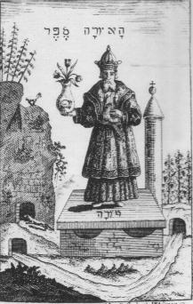
<br><b><font face="Trebuchet MS"><font color="#000066"><font size="-1">FIGURE
I</font></font></font></b>
<br><b><i><font face="Trebuchet MS"><font color="#000066"><font size="-1">(Uraltes
chymisches Werk, Leipzig, 1760)</font></font></font></i></b></p></center>

<p><font face="Trebuchet MS"><font color="#000066">Iulius Gervasius, que
c'&eacute;tait bien ce Gervasius qui &eacute;tait l'auteur du Livre. Les
peintures du <b><i><font size="-1">Livre d'Abraham le Juif</font></i></b>
furent transpos&eacute;es en gravures en 1681, dans un recueil de trait&eacute;s
attribu&eacute;s &agrave; N. Flamel et publi&eacute; &agrave; Hambourg.
Sur le frontispice, l'adepte couronn&eacute; pr&eacute;sente un matras
dans lequel appara&icirc;t le serpent Ouroboros ; un petit animal (</font><font color="#660000"><font size="-1">J.
Van Lennep y voit une belette</font></font><font color="#000066">) s'appr&ecirc;te
&agrave; p&eacute;n&eacute;trer dans un souterrain pour sugg&eacute;rer
-sans doute- que la mati&egrave;re premi&egrave;re s'y trouve cach&eacute;e.
Cette image est analogue &agrave; celle que l'on voit dans la planche d&eacute;pliante
n&deg;3 de la &laquo; <b><i><font size="-1">Cabala, miroir de l'art et de
la nature en alchimie</font></i></b>...&raquo; de Stephane Michelspacher
(Augsbourg, 1615) mais il s'agit d'un li&egrave;vre -analogie phon&eacute;tique
entre </font><font color="#006600">lupus</font><font color="#000066"> et
</font><font color="#006600">lepus</font><font color="#000066">-.
On voit aussi un ruisseau &eacute;mergeant de deux sources -ainsi que l'&eacute;crit
Fulcanelli il doit s'agir des deux fontaines (Aganipp&eacute; et Hippocr&egrave;ne)-
et au second plan, une colonne au sommet de laquelle appara&icirc;t un
globe crucif&egrave;re (la colonne est l'un des &eacute;l&eacute;ments
de l'athanor). L'analyse des r&eacute;f&eacute;rences du Livre a &eacute;t&eacute;
abord&eacute;e par Claude Gagnon : il en a d&eacute;duit qu'Arnauld se
serait servi principalement du recueil <b><i><font size="-1">Auriferae artis</font></i></b>
publi&eacute; pour la premi&egrave;re fois en 1572. On y trouve notamment
le <b><i><font size="-1">Livre du roi Hercule</font></i></b> auquel se r&eacute;f&egrave;re
le pseudo-Flamel. Une citation de Lambsprinck -inconnu jusqu'&agrave; la
publication de son <b><i><font size="-1">De lapide philosophorum</font></i></b>
en 1599- ach&egrave;ve de nous convaincre. La plus ancienne r&eacute;f&eacute;rence
au <b><i><font size="-1">Livre d'Abraham le Juif</font></i></b> est fournie
au XVI<sup>e</sup> si&egrave;cle par trois alchimistes normands qui oeuvraient
&agrave; Flers, <a href="../original/tresor-grosparmy.html">Nicolas de Grosparmy</a>,
son chapelain Pierre Vicot et <a href="../original/cinq-livres-valois.html">Nicolas
de Valois</a>. L'arcade que commente Flamel a exist&eacute; jusqu'en 1761.
Il s'agit de la seconde arche que Flamel, comme on l'a d&eacute;j&agrave;
dit, a fait construire au Charnier qui entourait sur trois c&ocirc;t&eacute;s
le cimeti&egrave;re des Innocents &agrave; Paris. Par parenth&egrave;se,
il est possible que N. Flamel se soit inspir&eacute; de trait&eacute;s
qui lui seraient pass&eacute;s entre les mains, comme le <b><i><font size="-1">Livre
des Laveures</font></i></b> qui recommande &laquo; </font><i><font color="#cc0000"><font size="-1">la
vraye pratique de la noble science d'alchimie </font></font></i><font color="#000066">&raquo;.
Un autre livre a appartenu &agrave; Flamel : &laquo;</font><font color="#cc0000"><font size="-1"><i>
un manuscrit de chymie d'Almasatus au roi de Carmassan</i>, qui portait
le titre de propri&eacute;t&eacute; de N. Flamel</font></font><font color="#000066">
&raquo; ainsi que le rapporte A. Poisson ; il est donc presque indubitable
que des documents alchimiques ont appartenu &agrave; Flamel sans que l'on
puisse affirmer pour autant qu'il se soit lui-m&ecirc;me livr&eacute; &agrave;
l'exp&eacute;rimentation, sans laquelle, selon Fulcanelli, il n'y a point
de v&eacute;ritable alchimiste. Victor Hugo a lui-m&ecirc;me dans <b><i><font size="-1">Notre-Dame
de Paris</font></i></b> fait emprunter &agrave; Claude Frollo des traits
de N. Flamel et lui a m&ecirc;me fait fouiller les caves de la maison de
l'&eacute;crivain public :</font></font>
</p><p><font face="Trebuchet MS"><font color="#000066">&laquo;</font><i><font color="#cc0000"><font size="-1">On
supposait que Flamel avait enfoui la pierre philosophale dans ses caves,
et les alchimistes pendant deux si&egrave;cles...n'ont cess&eacute; d'en
tourmenter le sol...</font></font></i><font color="#000066">&raquo; (Livre
IV, ch. V).</font></font>
</p><p><font face="Trebuchet MS"><font color="#000066">N. Flamel est &eacute;voqu&eacute;
dans <i>L'alchimie europ&eacute;enne du XIII<sup>e</sup> au XVIII<sup>e</sup>
si&egrave;cle</i>, Herwig Buntz, pp. 109-186, in <b><i><font size="-1">L'Alchimie.
Histoire, Technologie, Pratique</font></i></b> (Pierre Belfond, 1972) o&ugrave;
l'on observe des gravures de l'&eacute;dition de Hambourg (1681). Louis
Figuier a aussi consacr&eacute; quelques pages &agrave; N. Flamel dans
son <b><i><font size="-1">Alchimie et les alchimistes ; Essai historique
et critique sur la philosophie herm&eacute;tique</font></i></b> (Paris,&nbsp;
Hachette, 1860). Figuier cite notamment une note de M. Valet de Viriville
&agrave; propos d'un livre -que nous avons &eacute;voqu&eacute; supra-
ayant appartenu &agrave; Flamel :</font></font>
</p><p><font face="Trebuchet MS"><font color="#000066">&laquo;</font><font color="#cc0000"><font size="-1"><i>...Un
oeil exerc&eacute; [</i>&agrave; propos de l'inscription<i>] y reconnait
la main d'un faussaire qui vivait vers le commencement du dix-huiti&egrave;me
si&egrave;cle : il a gratt&eacute; une inscription plus ancienne qui existait
&agrave; cette place ; il a surcharg&eacute; cette inscription et subsitu&eacute;
le nom de Flamel &agrave; celui d'un autre scribe ou propri&eacute;taire
[</i>&agrave; propos du Livre des Laveures<i>]. Quant au texte du manuscrit
lui-m&ecirc;me, il para&icirc;t avoir &eacute;t&eacute; &eacute;crit environ
de 1430 &agrave; 1480 et ne saurait remonter &agrave; l'&eacute;poque de
Nicolas Flamel. Effectivement, en 1561, un recueil anonyme, attribu&eacute;
par quelques bibliographes &agrave; Gohorry, parut sous le titre de Transformation
m&eacute;tallique (Paris, Guillard et Warancore, in-8). Ce recueil contient
trois petits trait&eacute;s d'alchimie, parmi lesquels figure le Sommaire
philosophique de Nicolas Flamel. D&egrave;s lors la r&eacute;putation de
Flamel comme alchimiste fut d&eacute;finitivement &eacute;tablie...</i></font></font><font color="#000066">&raquo;</font></font>
</p><p><font face="Trebuchet MS"><font color="#000066">et Figuier d'&eacute;crire
que tous les ouvrages attribu&eacute;s &agrave; Nicolas Flamel sont apocryphes,
ce que nous pensons aussi...Dans <b><i><font size="-1">l'Interm&eacute;diaire
des Chercheurs et Curieux</font></i></b>, on s'est plusieurs fois pos&eacute;
cette question de savoir si Flamel avait &eacute;t&eacute; alchimiste :
examinons quelques recensions :</font></font>
</p><blockquote><font face="Trebuchet MS"><font color="#660000"><font size="-1"><b>1&deg;
</b>-
Nicolas Flamel &eacute;tait-il alchimiste ?&#8212; On vient de restaurer l'ins-cription
plac&eacute;e sur la maison de Nicolas Flamel, 51, rue de Montmorency.
Ce travail a &eacute;t&eacute; ex&eacute;cut&eacute; par les soins du conseil
municipal, sur le v&#339;u de la Commission du Vieux-Paris. C'est une</font></font></font>
<font face="Trebuchet MS"><font color="#660000"><font size="-1">occasion
pour tous les journaux et toutes les revues qui annoncent ce petit &eacute;v&eacute;ne-ment,
de traiter Nicolas Flamel d'alchimiste. De l'&eacute;tude attentive que
j'ai faite, il r&eacute;sulte que rien. dans les actes authentiques, ne
permet de lui d&eacute;cerner ce titre : il ne tut qu'un tr&egrave;s habile
enlumineur, un &eacute;crivain public tr&egrave;s distingu&eacute;, un
sp&eacute;culateur heureux et un r&eacute;clamier hors ligne. Sur quoi
se fonde-t-on pour attribuer une part quelconque &agrave; Nicolas Flamel
dans la recherche du grand &#339;uvre ? Ce serait trop peu de vouloir justifier
cette pr&eacute;tention en invoquant simplement sa grosse et myst&eacute;rieuse
fortune. L.</font></font></font>
<p><font face="Trebuchet MS"><font color="#660000"><font size="-1">livraison
de juin 1900, 36e ann&eacute;e</font></font></font>
</p><p><font face="Trebuchet MS"><font color="#660000"><font size="-1"><b>2&deg;</b>
- Nicolas Flamel &eacute;tait-il alchimiste ?&nbsp; &#8212; Voyez 1&deg; Louis
Figuier ? L'Alchimie et les alchimistes ; 2" Hoefer, Histoire de la Chimie
; 3&deg; id.. Histoire de la physique et de la</font></font></font>
<font face="Trebuchet MS"><font color="#660000"><font size="-1">Chimie
etc. La bibliographie de Flamel est fort copieuse et encombrerait sans
profit les</font></font></font>
<font face="Trebuchet MS"><font color="#660000"><font size="-1">colonnes
de l'interm&eacute;diaire. Flamel est rang&eacute;, &agrave; bon droit,
parmi les alchimistes, &agrave; mon avis. L. VANVINCQ. RENIEZ.</font></font></font>
</p><p><font face="Trebuchet MS"><font color="#660000"><font size="-1">livraison
de juin 1900</font></font></font>
</p><p><font face="Trebuchet MS"><font color="#660000"><font size="-1"><b>3&deg;</b>
- Nicolas Flamel &eacute;tait-il alchimiste ? (XLI). &#8212; La cr&eacute;dulit&eacute;
populaire a cr&eacute;&eacute; la l&eacute;gende de la d&eacute;couverte
de la pierre philosophale par Nicolas Flamel. Lire &agrave; ce sujet l'article
ALCHIMIE de M. <a href="../original/chimie-anciens.html">Berthelot</a>, dans la Grande
Encyclop&eacute;die. En voici un extrait :</font></font></font>
<br><i><font face="Trebuchet MS"><font color="#000099"><font size="-1">Lavoisier
a montr&eacute;, il y a cent ans, que l'origine de tous les ph&eacute;nom&egrave;nes
chimiques connus peut &ecirc;tre assign&eacute;e avec nettet&eacute; et
qu'elle ne d&eacute;passe pas ce qu'il appelait les corps simples et ind&eacute;composables,
les m&eacute;taux en particulier, dont la nature et le poids se maintiennent
invariables. C'est cette invariabilit&eacute; de poids des &eacute;l&eacute;ments
actuels qui est le n&#339;ud du probl&egrave;me. Le jour o&ugrave; elle a &eacute;t&eacute;
partout constat&eacute;e et d&eacute;montr&eacute;e avec pr&eacute;cision,
le r&ecirc;ve antique de la transmutation s'est &eacute;vanoui.</font></font></font></i>
<br><font face="Trebuchet MS"><font color="#660000"><font size="-1">Lire
dans le m&ecirc;me ouvrage la biographie de Nicolas Flamel. L'abb&eacute;
Vilain, pr&ecirc;tre de Saint-Jacques-la-Boucherie, a fait, pi&egrave;ce
en mains, en 1761, 10 compte de la fortune du pr&eacute;tendu alchimiste.
Il poss&eacute;dait &agrave; sa mort 676 livres tournois de rente, qui
repr&eacute;sentent &agrave; peu pr&egrave;s quinze mille livres de rentes
de nos jours. A.D.</font></font></font></p></blockquote>

<center>
<p><br><font face="Trebuchet MS"><font color="#000066">&macr;</font></font></p></center>

<p><font face="Trebuchet MS"><font color="#000099">Derni&egrave;re chose
: un internaute m'a certifi&eacute; un jour, que Nicolas Flamel avait eu
un enfant, une fille. Voici la r&eacute;ponse que j'ai formul&eacute;e
:</font></font>
</p><p><font face="Trebuchet MS"><font color="#000099"><font size="-1">"En d&eacute;pit
de mes recherches sur les documents que je poss&egrave;de, il ne m'a pas
&eacute;t&eacute; possible de contr&ocirc;ler ce que vous dites. Par exemple,
L. G&eacute;rardin dans son <b><i>Alchimie</i></b> (Culture, Art, Loisir,
Paris, 1972) dit p. 136 :</font></font></font>
</p><p><font face="Trebuchet MS"><font color="#990033"><font size="-1">&laquo;<i>
Le m&eacute;nage Flamel n'avait jamais eu l'espoir de se perp&eacute;tuer
dans des enfants </i>&raquo;.</font></font></font>
</p><p><font face="Trebuchet MS"><font size="-1">De m&ecirc;me, J. Sadoul dans
son <b><i>Tr&eacute;sor des alchimistes</i></b> (J'ai Lu, 1970) &eacute;crit-il
p. 105 :</font></font>
</p><p><font face="Trebuchet MS"><font color="#cc0033"><font size="-1">&laquo;.<i>..C'est
ce que nous apprend l'une des nombreuses clauses de son remarquable testament,
par lequel il l&eacute;guait &agrave; Saint-Jacques-la-Boucherie la g&eacute;n&eacute;ralit&eacute;
de ses biens (n'ayant pas d'enfant)...</i>&raquo;.</font></font></font>
</p><p><font face="Trebuchet MS"><font size="-1">Dans son <b><i>Grand art de
l'alchimie</i></b> (J'ai Lu, 1973), J. Sadoul &eacute;crit p. 74 :</font></font>
</p><p><font face="Trebuchet MS"><font size="-1"><font color="#990000">&laquo;
<i>Flamel
a laiss&eacute; un trait&eacute; herm&eacute;tique &agrave; l'un de ses
neveux, un des trois fils de sa belle-soeur Isabelle Perrier. Ce Perrier
h&eacute;rita &eacute;galement de ses papiers, matras...A la mort de ce
Perrier, tout cela passa aux mains d'un m&eacute;decin, nomm&eacute; Du
Parrain, qui le donna &agrave; son filleul Dubois...</i>&raquo;</font>[<font color="#003399">J.
Sadoul cite la <b><i>Divine magie</i></b> de Ren&eacute; Schwaebl&eacute;,
chez l'auteur, 1918]</font>.</font></font>
</p><p><font face="Trebuchet MS"><font color="#000099"><font size="-1">J. Van
Lennep dans son <b><i>Alchimie</i></b> (Dervy, 1985) &eacute;crit p. 260
:</font></font></font>
</p><p><font face="Trebuchet MS"><font size="-1"><font color="#990000">&laquo;
<i>On
sait que son fr&egrave;re cadet, Jehan &eacute;tait enlumineur au service
du duc de Berry...Le couple avait un valet Maugin que Perrenelle gratifia
dans son testament, deux servantes Margot La Quesnel et sa fille Colette
que Nicolas n'oublia pas dans le sien...Le couple b&eacute;n&eacute;ficiait
du r&eacute;gime de la communaut&eacute; des biens depuis 1372 mais l'acte
fut remplac&eacute; en 1397 par un testament qui n'oubliait plus la soeur
de Perrenelle et ses fils. La m&ecirc;me ann&eacute;e, elle le modifia
en accordant &agrave; son &eacute;poux des avantages plus importants. Isabelle,
sa soeur, et Perrier le mari de celle-ci contest&egrave;rent cette derni&egrave;re
disposition prise pratiquement la veille de sa mort et obtinrent la saisie
de la succession..</i>.&raquo;</font><font color="#003399"> [J. Van Lennep
cite l'ouvrage de Louis figuier : <b><i>l'Alchimie et les alchimistes</i></b>,
Hachette, Paris, 1860].</font></font></font>
</p><p><font face="Trebuchet MS"><font color="#003399"><font size="-1">Je dispose
de cet ouvrage (num&eacute;ris&eacute;, disponible sur le serveur Gallica
de la BNF) et</font></font> <font color="#003399"><font size="-1">L.Figuier
consacre un chapitre sur Flamel allant de la p. 195 &agrave; la p. 230.
On lit p. 211 :</font></font></font>
</p><p><font face="Trebuchet MS"><font color="#990033"><font size="-1">&laquo;
<i>Les
deux &eacute;poux, d&eacute;j&agrave; &acirc;g&eacute;s, sans enfants et
sans esp&eacute;rance d'en avoir, voulurent reconna&icirc;tre les gr&acirc;ces
que Dieu leur avait accord&eacute;es, et r&eacute;solurent de consacrer
leurs richesses &agrave; des oeuvres de bienfaisance et de mis&eacute;ricorde
</i>&raquo;.</font></font></font>
</p><p><font face="Trebuchet MS"><font size="-1"><font color="#000099">Nulle
part je n'ai trouv&eacute; trace d'un enfant de Perrenelle et de Nicolas
Flamel. Pourriez-vous me donner vos sources ? Il serait tr&egrave;s int&eacute;ressant,
si vous disposez de documents, d'en faire part aux amateurs d'alchimie
; toutefois, cela n'expliquerait pas les donn&eacute;es testamentaires
des deux &eacute;poux...La seule possibilit&eacute; serait que Colette
f&ucirc;t une enfant naturelle de Nicolas et de Margot La Quesnel mais
nul historien n'en parle..."</font> [<font color="#000099">E-mail du 20
avril 2000</font>]</font></font>
</p><p><font face="Trebuchet MS"><font color="#000099">Si un chercheur poss&egrave;de
des donn&eacute;es que je n'ai pas sur ce sujet, je lui serai oblig&eacute;
de m'en informer.</font></font>
</p><p><a  name="II. La maison de Nicolas Flamel"></a><b><font face="Trebuchet MS"><font color="#000099">II.
La maison de Nicolas Flamel</font></font></b>
</p><p><a  name="La MAISON dite de NICOLAS FLAMEL RUE MONTMORENCY,"></a><b><font face="Trebuchet MS"><font size="-1">La
MAISON dite de NICOLAS FLAMEL RUE MONTMORENCY, A PARIS</font></font></b>
</p><p><font face="Trebuchet MS">Au n&deg; 51 de la rue Montmorency, presque
&agrave; l'angle de larue Saint-Martin, s'&eacute;l&egrave;ve une vieille
maison connue sous lenom de &laquo; Maison de Nicolas Flamel &raquo;. Sa
fa&ccedil;ade comprend trois &eacute;tages perces chacun de deux fen&ecirc;tres
rectangulaires; trois portes donnent acc&egrave;s dans les deux grandes
salles du rez-de-chauss&eacute;e et dans un corridor qui conduit a l'escalier.
Une cloison longitudinale s&eacute;pare les deux salles ; une grosse poutre
transversale, soutenue par un pilier carr&eacute; &agrave; console moulur&eacute;e
en quart de rond et par deux corbeaux sur le mur, porte le plafond, qui
repose &agrave; ses extr&eacute;mit&eacute;s</font>
<br><font face="Trebuchet MS">sur une autre poutre en partie encastr&eacute;e
dans le mur et soulag&eacute;e par des corbeaux. Ces grosses poutres transversales
se retrouvent au premier et au second &eacute;tage. Au fond une &eacute;troite
cour est bord&eacute;e, &agrave; droite et &agrave; gauche, par des constructions
; on y reconna&icirc;t encore la place d'un ancien puits. Sous la maison
deux belles caves vo&ucirc;t&eacute;es en berceau sont desservies par un
escalier qui ,se trouve au fond de la courette. L'abb&eacute; Villain,
qui a publi&eacute; sur Nicolas Flamel et Saint-</font>
<br><font face="Trebuchet MS">Jacques-de-la-Boucherie au XVII<sup>e</sup>
si&egrave;cle, deux int&eacute;ressants volumes (<font color="#000099"><font size="-1"><b><i>Essai
d'une histoire de la paroisse de Saint-Jacqnes-de-la-Boucherie, o&ugrave;
l'on traite de l'origine de cette &eacute;glise, de ses antiquit&eacute;s,
de Nicolas Flamel et Pernelle, sa femme</i></b>..., par M. L. V. (l'abb&eacute;
Villain); Paris, Prault, 1758, in-12, x-326 p., pl. &#8212; <b><i>Histoire critique
de Nicolas Flamel et de Pernelle, sa femme</i></b>..., par M. L. V. (l'abb&eacute;
Villain); Paris, G.. Desprez, 1761, in-12, xii-407 p., pl.</font></font>),
a donn&eacute; dans l'un d'eux un plan et une &eacute;l&eacute;vation sommaire
de cette maison: mais nous avons trouv&eacute;, au Cabinet des Estampes
(<font color="#000099"><font size="-1">Cabinet des Estampes de Ia Biblioth&egrave;que
nationale, Topographie, 3e arr., 12e quartier.</font></font>), un dessin
ancien du XVIII<sup>e</sup> ou</font>
</p><center>
<p>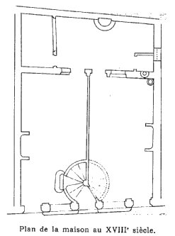</p></center>

<p><font face="Trebuchet MS">peut-&ecirc;tre m&ecirc;me du XVII<sup>e</sup>
si&egrave;cle, qui reproduit avec plus de d&eacute;tails et de pr&eacute;cision,
le plan et la fa&ccedil;ade de la m&ecirc;me maison. Aussi, nous est-il
facile d'en r&eacute;tablir les</font>
<br><font face="Trebuchet MS">anciennes dispositions. Le corridor et l'escalier
actuel n'existaient pas. La cage</font>
<br><font face="Trebuchet MS">d'escalier, circulaire, &eacute;tait accol&eacute;e
&agrave; la fa&ccedil;ade : on y</font>
</p><center>
<p>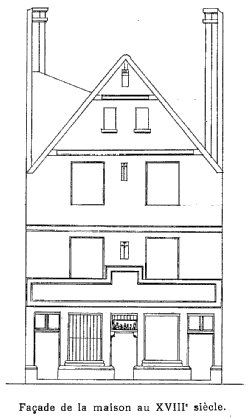</p></center>

<p><font face="Trebuchet MS">p&eacute;n&eacute;trait par la porte centrale,
les deux autres portes permettant d'entrer directement dans les deux grandes
salles s&eacute;par&eacute;es par une cloison en partie intacte aujourd'hui.
On a reconnu dans le solivage du plancher du premier &eacute;tage une pi&egrave;ce
plus forte que les autres, de 0<sup>m</sup>30 environ d'&eacute;quarrissage,
plac&eacute;e parall&egrave;lement et environ &agrave; 2 m&egrave;tres
de la fa&ccedil;ade, en face de la porte centrale: elle devait border la
cage d'escalier. Les solives portent encore des traces de couleur qui montrent,
qu'autrefois elles &eacute;taient apparentes. Une porte sur&eacute;lev&eacute;e
de deux marelles</font>
<font face="Trebuchet MS">permettait de monter directement de la salle
de gauche aux &eacute;tages. Deux grandes chemin&eacute;es, une dans chaque
salle, &eacute;taient accol&eacute;es aux murs lat&eacute;raux: leurs hottes</font>
<font face="Trebuchet MS">passaient derri&egrave;re et le long des
corbeaux qui soutiennent la grosse poutre transversale et qui sont coupes
de ce c&ocirc;t&eacute; &agrave; angle vif; un sondage ex&eacute;cut&eacute;
en cet endroit a montr&eacute; la pr&eacute;sence de bistre de fum&eacute;e
sous les enduits. Au fond, la</font>
<font face="Trebuchet MS">courette renfermait un puits indiqu&eacute;
a l'endroit o&ugrave; l'on voit encore aujourd'hui des ferrures: &agrave;
gauche &eacute;tait un abri peut-&ecirc;tre un b&ucirc;cher, et &agrave;
droite une petite pi&egrave;ce carr&eacute;e. La partie la plus originale
de la maison est la fa&ccedil;ade. Elle comprenait autrefois deux &eacute;tages
et se terminait par un haut pignon flanqu&eacute; de chemin&eacute;es,
comme l'indique le dessin que nous avons reproduit. Elle est orn&eacute;e
&agrave; sa partie inf&eacute;rieure d'une s&eacute;rie de m&eacute;daillons
sculpt&eacute;s et d'inscriptions que la tr&egrave;s habile restauration
de M. Selmersheim vient de mettre au jour. Les jambages en pierre de liais
reposent sur une base moulur&eacute;e. Au-dessus de la fa&ccedil;ade r&egrave;gne
une corniche dont le profil date du d&eacute;but du XV<sup>e</sup> si&egrave;cle.
Les portes et les fen&ecirc;tres du rez-de-chauss&eacute;e &eacute;taient
munies d'impostes garnies de barreaux verticaux: on voit encore les trous
o&ugrave; ils &eacute;taient encastr&eacute;s: le haut de la porte centrale
&eacute;tait d&eacute;cor&eacute; d'une sc&egrave;ne paraissant repr&eacute;senter
l'Adoration des Mages. Le premier &eacute;tage &eacute;tait orn&eacute;
d'un grand panneau de pierre sculpt&eacute;. Avant d'aborder la lecture
et la description des inscriptions et des m&eacute;daillons sculpt&eacute;s,
je voudrais dire quelques mots sur l'histoire du cette maison et sur les
circonstances qui expliquent sa construction</font>
</p><p><font face="Trebuchet MS">(<font color="#000099"><font size="-1">Le carton
S. 1379 des Archives nationales et les deux ouvrages &eacute;crits au XVII<sup>e</sup>
si&egrave;cle par l'abb&eacute; Villain &agrave; la m&eacute;moire de Nicolas
Flamel nous donnent de pr&eacute;cieux renseignements sur cette maison.
Notre confr&egrave;re M. Burnand, de la Biblioth&egrave;que de la ville
de Paris, nous a indiqu&eacute;, gr&acirc;ce au service des fiches documentaires
organis&eacute; par M. Marcel Po&egrave;te &agrave; la Biblioth&egrave;que
de la ville, diff&eacute;rentes pi&egrave;ces int&eacute;ressantes con-serv&eacute;es
aux Archives nationales.</font></font>).</font>
</p><p><font face="Trebuchet MS">Par ses &eacute;conomies et gr&acirc;ce &agrave;
l'heureuse gestion de ses affaires, bien plut&ocirc;t que par des pratiques
d'alchimie dont il fut longtemps accus&eacute;, Nicolas Flamel, &eacute;crivain
public, et ma&icirc;tre d'&eacute;criture des fils des seigneurs de la
cour, puis plus tard libraire de l'Universit&eacute;, avait r&eacute;ussi
&agrave; amasser une assez grosse fortune</font>
</p><p><font face="Trebuchet MS">(<font color="#000099"><font size="-1">Les exemples
d'&eacute;crivains publics riches sont assez nombreux au d&eacute;but du
XV<sup>e</sup> si&egrave;cle: Jean Harengier &eacute;change avec la fabrique
de Saint-Jacques sa maison de la rue du Porche pour une antre situ&eacute;e
rue Marivaux, vis-&agrave;-vis de celle de Nicolas Flamel ; un autre, Ansel
Chardon, est marguillier de Saint-Jacques et ach&egrave;te une maison dans
la rue des &Eacute;crivains. Villain : Histoire critique de N. Flamel,
p. 8-9.</font></font>).</font>
</p><p><font face="Trebuchet MS">II &eacute;tait propri&eacute;taire de plusieurs
maisons &agrave; Paris, poss&eacute;dait des cens sur un certain nombre
d'autres, et d&eacute;pensait de notables sommes d'argent &agrave; la construction
et &agrave; l'embellissement de monuments religieux. C'est ainsi qu'il
fit &eacute;lever et d&eacute;corer &agrave; ses frais plusieurs arcades
du cimeti&egrave;re des Innocents, le portail nord de Saint-</font><font face="Trebuchet MS">Jacques-de-la-Boucherie, et qu'il contribua
&agrave; &eacute;lever le portail de Sainte-Genevi&eacute;ve-des-Ardents.
Il habitait, &agrave; l'angle occidental de la rue Marivaux, une maison
assez vaste qu'il s'&eacute;tait fait construire en face de ses &eacute;choppes
d'&eacute;crivain, log&eacute;es entre les piliers de Saint-Jacques : c'est
dans cette maison qu'il logeait des &eacute;lev&eacute;s pensionnaires.
Apr&egrave;s la mort de sa femme Pernelle, survenue le 11 septembre 1397,
Flamel acheta ou construisit plusieurs maisons dans la rue Saint-Martin
et la rue Montmorency. Les h&ocirc;tes payaient loyer; quelques-uns peut-&ecirc;tre
&eacute;taient log&eacute;s gratuitement. Flamel, qui para&icirc;t avoir
fort encourag&eacute; les</font>
<font face="Trebuchet MS">institutions charitables, pensait peut-&ecirc;tre
&agrave; transformer ces maisons en asiles. Il existait &agrave; cette
&eacute;poque, dans Paris, un grand nombre de maisons o&ugrave; les pauvres
&eacute;taient log&eacute;s gratuitement. La rue Montmorency &eacute;tait alors
bord&eacute;e de vieilles masures et de terrains d&eacute;laiss&eacute;s
et abandonn&eacute;s (<font color="#000099"><font size="-1">Villain, op.
cit., p. 143-151</font></font>). Flamel y acheta un terrain appartenant
au prieur&eacute; de Saint-Martin et situ&eacute; pr&egrave;s d'une masure
dont il &eacute;tait d&eacute;j&agrave; propri&eacute;taire (f&eacute;vrier
1400). A l'est, des b&acirc;timents, qui avaient autrefois servi d'&eacute;tuves,
tombaient en ruines, et nous savons par les pi&egrave;ces</font>
<font face="Trebuchet MS">conserv&eacute;es aux Archives nationales
quelles difficult&eacute;s eut Flamel avec ses voisins. Le 22 juin de cette
m&ecirc;me ann&eacute;e, il achetait encore &laquo; <i><font color="#000099"><font size="-1">certains
louages et deux petites estables &agrave; chevaux </font></font></i>&raquo;,
qui se trouvaient entre le terrain qu'il avait acquis et la maison d'angle
de la rue Saint-Martin. Enfin, le 17 novembre, apr&egrave;s de longs pourparlers
avec les moines de Saint-Martin, et en &eacute;change de renies c&eacute;d&eacute;es
au prieur&eacute;, celui-ci abandonnait</font>
</p><p><font face="Trebuchet MS">(<font color="#000099"><font size="-1">Voici
les principaux passages de cet acte d'amortissement : &laquo; A tous ceulx
qui ces lettres verront, fr&egrave;re Jehan Alvernas, humble prieur de
l'&eacute;glise et lieu de Saint Martin des Champs a Paris, et tout le</font></font></font>
<br><font face="Trebuchet MS"><font color="#000099"><font size="-1">couvent
d'iccelui mesme lieu... savoir faisons que comme en plusieurs rues de la
terre et juridiction de ladicte &eacute;glise, qui souloient estre peupl&eacute;es
de bonnes gens mesnagiers, ait &agrave; pr&eacute;sent grant quantit&eacute;
de maisons et lieux cheux en ruyne et d&eacute;sert, non habit&eacute;es
par faute de bons propri&eacute;taires, par quoy il a d&eacute;s longtems
en ycelles rues grans punaisies de boes et autres ordures en diminution
des hostes et mesnagiers en ladicte terre. Et par esp&eacute;cial en la
rue de Montmorency, ass&eacute;s pr&egrave;s de l'ancienne porte, dicte
la porte de Saint Martin, ait plusieurs maisons et appentis cheus en ruyne,
ou l'en fait et apporte de jour en jour punaisies et ordures... Et entre
icelles maisons ainsi en d&eacute;sert, Nicolas Flamel, escripvain, avoit
et a un petit appentis, ou place cheue.semblablement en d&eacute;sert et
ruyne, contenant environ 24 pi&eacute;s en quarreue, dedans euvre, chargi&eacute;e
de un denier de fons de terre par an envers ladicte &eacute;glise, tenant
d'une part &agrave; une maison qui est de lonc tems en ruyne, o&ugrave;
jadis et estuves, qui fu feu Arnoul Cousin, et d'autre part &agrave; petits
longes qui pareillement sont en d&eacute;sert, qui furent feu Jehan Delavall&eacute;e
et Marie, sa femme, aboutissans par derri&egrave;re a Berthelemy Croquemeur...
Lequel Nicolas Flamel nous a requis que nous voulsissions admortir et affranchir
&agrave; tousjours icelle place, pour y faire ediffice par mani&egrave;re
de hospital ou autrement, ou maisons d'aumosne pour demeurer povres gens
mesnagiers, ou icellui ediffice vendre franchement... Et pour ce nous...
et aussi en consid&eacute;ration ad ce que telle place est en rue destourn&eacute;e,
par o&ugrave; petit de gens passent et affin que se l'en &eacute;diffie
icelle place, l'en pourra faire &eacute;diffier &agrave; l'exemple et aide
de ce les autres places ou mazures ruineuses d'environ, et ladicte rue
netoier des dictes ordures, et illec venir demourer hostes et mesnagiers,
au prouff&icirc;t et honneur de ladicte terre et juridiction et des voisins
d'environ... Excepte... que Iedict Nicolas Flamel ne ses dicts ayans-cause,
ne pourront, ne seront tenus faire ou faire faire en ladicte place, chapelle,
ne lieu sainct... Ce fu fait l'an de gr&acirc;ce mil quatre cens et six,
le mercredi dix et sept jours du mois de novembre &raquo;. Villain ; <b><i>Histoire
critique de Nicolas Flamel</i></b>, p. 354-359.</font></font>)</font>
</p><p><font face="Trebuchet MS">&agrave; Flamel tous ses droits sur ces terrains
pour b&acirc;tir &laquo; <i><font color="#000099"><font size="-1">des &eacute;difices
de telle ordonnance</font></font></i></font>
<br><font face="Trebuchet MS"><i><font color="#000099"><font size="-1">qu'il
lui plairoit, soit maisons d'aum&ocirc;ne par mani&egrave;re d'h&ocirc;pital
ou autrement </font></font></i>&raquo;. Flamel mit aussit&ocirc;t les ouvriers,
et la maison s'&eacute;leva dans le cours de l'ann&eacute;e 1407. On l'appela
le Grand Pignon, pour la distinguer des maisons voisines qui &eacute;taient
rest&eacute;es basses. Le 16 janvier 1408, le mur mitoyen, avec les &eacute;tuves,&eacute;tait
achev&eacute;, en moellons et pl&acirc;tre, bord&eacute; sur la rue par
une &laquo; <i><font color="#000099"><font size="-1">jambe etrivi&egrave;re
en pierre de liais </font></font></i>&raquo;, comme en font foi les rapports
r&eacute;dig&eacute;s le 30 janvier, apr&egrave;s les visites de Jehan
Luillier et Jehan Petit, ma&ccedil;ons, et de Jehan Delahaye, charpentier,
jur&eacute;s du roi. A sa mort, le 22 mars 1418, Flamel donna cette maison
&agrave; la paroisse Saint-Jacques, et, malgr&eacute; l'inscription grav&eacute;e
sur la fa&ccedil;ade, et que nous &eacute;tudierons plus loin, elle continua
&agrave; &ecirc;tre lou&eacute;e dans de bonnes conditions (<font color="#000099"><font size="-1">Voici
le tableau des locations faites dans cette maison du 17 mars</font></font></font>
<font face="Trebuchet MS"><font color="#000099"><font size="-1">1446
au 18 mars 1455 : &laquo; Tierce maison en suivant, qui est grant Pignon,
devant le puits. &laquo; Premier louage par bas. Ledit... lou&eacute;,
1&deg;, 16 sols, puis &agrave; Guillemain Saincte, Varlet, cordonnier,
par ann&eacute;e 14</font></font></font>
<font face="Trebuchet MS"><font color="#000099"><font size="-1">&laquo;
Second louage par bas. Ledit... &agrave; Pierre Moirvant, par an 14 Ou
porche de ladicte grant maison, etc.</font></font></font>
<font face="Trebuchet MS"><font color="#000099"><font size="-1">&laquo;
Premier louage. Ledit... &agrave; Deiiisot Honore, l", 10 sols, puis 12
&laquo; Second louage, &agrave; Alison Labrocque 12 &laquo; Troisi&egrave;me
louage, &agrave; Jacquelot la Bouch&egrave;re, 12, puis inhabit&eacute;,
puis 10 &laquo; Quatri&egrave;me louage, &agrave; Amelot Laleve, 12 sols,
puis a Jehanne Laboutrade 10 &laquo; Cinqui&egrave;me louage. Lou&eacute;,
l&deg;, 8 sols et 9 sols, puis inhabit&eacute; pendant trois ans, puis
&agrave; Jehanne la Tessine, par an 10 &laquo; Sixi&egrave;me louage. Ledit...
par an &agrave; Jehanne Laboutarde 10 &laquo; Septi&egrave;me louage, &agrave;
Denise Dupont, par an 10 &laquo; (Cessa d'&ecirc;tre lou&eacute; &agrave;
la Saint-Jean 1450, comme trop haut et p&eacute;nible &agrave; monter)
&raquo;. Villain: <b><i>Histoire critique de Nicolas Flamel</i></b>, p.
284-285.</font></font>).</font>
</p><p><font face="Trebuchet MS">Flamel n'avait donc pu atteindre le but qu'il
s'&eacute;tait propose de loger gratuitement les pauvres gens (<font color="#000099"><font size="-1">En
1560, on voulut saisir ces vieilles maisons, et, entre autres, celle de
la rue Montmorency, sous pr&eacute;texte que &laquo; ces maisons &eacute;toient
h&ocirc;pitaux &raquo;, mais le contraire fut prouv&eacute; et la fabrique
obtint lev&eacute;e de la saisie.</font></font>). Une des particularit&eacute;s
les plus notables de cette maison, ce sont les inscriptions qui sont grav&eacute;es
sur la fa&ccedil;ade. L'abb&eacute; Villain nous apprend que, dans toutes
les constructions &eacute;lev&eacute;es par Flamel, constructions civiles
ou religieuses, les inscriptions &eacute;taient tr&egrave;s nombreuses;
tant&ocirc;t elles &eacute;taient peintes sur des banderoles tenues par
des personnages, tant&ocirc;t elles &eacute;taient grav&eacute;es dans
la pierre et concouraient &agrave; la d&eacute;coration du monument. Elles
se rapportaient toujours &agrave; la religion ou &agrave; la morale. Ces
inscriptions, que l'on rencontre rarement aussi nombreuses sur les maisons
du Moyen &Acirc;ge, ont longtemps intrigu&eacute; les alchimistes, qui
esp&eacute;raient y trouver la clef des probl&egrave;mes d'herm&eacute;tique.
D&egrave;s le lendemain de la mort de Flamel, on fouilla dans sa maison
de la rue Marivaux, esp&eacute;rant y trouver de l'or ou, du moins, la
pierre philosophale et, pr&egrave;s de deux si&egrave;cles et demi apr&egrave;s,
cette id&eacute;e &eacute;tait encore vivace. En 1756, des</font>
</p><center>
<p><a href="#" title="lien mort dans l'archive">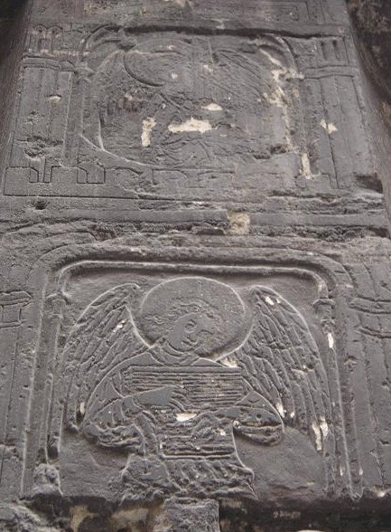</a>
<br><i><font size="-1">cliquez sur l'image pour l'agrandir</font></i></p></center>

<p><font face="Trebuchet MS">particuliers, se disant d&eacute;sireux de
r&eacute;parer la maison, obtinrent de la paroisse Saint-Jacques d'y mettre
les ouvriers; ils d&eacute;molirent pierre par pierre le rez-dc-chauss&eacute;e
et remplac&egrave;rent les anciennes pierres grav&eacute;es par de nouvelles,
mais ils ne trouv&egrave;rent rien, et disparurent sans payer les ma&ccedil;ons.
L'abb&eacute; Villain avait not&eacute; quelques d&eacute;tails de l'ornementation
de cette maison de la rue Marivaux [ <font color="#000099"><font size="-1">Essai...,
p. 150-163.</font></font>] :</font>
</p><p><font face="Trebuchet MS">&laquo;<i><font color="#000099"><font size="-1">
Flamel y est repr&eacute;sent&eacute; &agrave; genoux avec deux jeunes
gens derri&egrave;re lui, peut-&ecirc;tre des enfans qu'il avoit alors.
On voit aussi la Vierge et saint Jean assis comme sur le calvaire; il y
avoit peut-&ecirc;tre autrefois une croix: on lit en effet au-dessous d'une
corniche ces paroles tir&eacute;es des Lamentations: Mes amis, qui passez
la voie, regardez s'il est douleur pareille &agrave; la mienne. Au bas
du pilier est un saint Christophe ; il est &agrave; croire qu'il &eacute;toit
accompagn&eacute; d'un saint Jacques, patron de la paroisse. Parmi les
inscriptions d&eacute;votes qui sont &agrave; cette maison, on lit celle-ci
:</font></font></i></font>
</p><p><i><font face="Trebuchet MS"><font color="#000099"><font size="-1">Chacun
soit content de ses biens,</font></font></font></i>
<br><i><font face="Trebuchet MS"><font color="#000099"><font size="-1">Qui
n'a souffisance il n'a riens ;</font></font></font></i>
</p><p><font face="Trebuchet MS"><i><font color="#000099"><font size="-1">inscription
qui se trouvait &eacute;galement au Palais, pr&egrave;s de la statue d'Enguerrand
de Marigny </font></font></i>&raquo;.</font>
</p><p><font face="Trebuchet MS">En face cette maison, le portail de Saint-Jacques,
construit aux frais de Nicolas Flamel, &eacute;tait lui aussi orn&eacute;
de sculptures et d'inscriptions. Il est grav&eacute; en t&ecirc;te de l'Histoire
critique, et d&eacute;crit par l'abb&eacute; Villain [<font color="#000099"><font size="-1">Voici
le texte de l'inscription de fondation du portail : &laquo;<i> En l'honneur
de Dieu fu fait ce portal et donn&eacute; par un des Paroissiens et sa
femme, l'an de gr&acirc;ce mil CCC. IIII. vins et VIIII. Priez pour les
Bienfaicteurs, de la dicte Eglise et pour tous autres qui mestier en ont,
si vous plaist </i>&raquo;. <b><i>Histoire critique de N. Flamel</i></b>,
p. 391</font></font>] : Au milieu est la</font>
<font face="Trebuchet MS">Vierge portant l'Enfant Jesus, et soutenue
par deux anges chantant en l'honneur de la Vierge un cantique dont on lit
les paroles sur un phylact&egrave;re; huit anges jouant de divers instruments
accompagnent les premiers. Saint Jacques et saint Jean-Baptiste pr&eacute;sentent
&agrave; la Vierge Nicolas et Pernelle, agenouill&eacute;s et tenant des
banderoles &agrave; inscriptions.</font>
</p><p><font face="Trebuchet MS">&laquo; <i><font color="#000099"><font size="-1">Quatre
petites figures, v&ecirc;tues de long, se voient en dehors et sur le linteau
de la porte ; elles tiennent aussi des rouleaux, o&ugrave; sont grav&eacute;s
les deux premiers articles du Symbole des ap&ocirc;tres </font></font></i>&raquo;.</font>
</p><p><font face="Trebuchet MS">Un grand nombre d'autres inscriptions peuvent
encore se lire sur le tympan et sur les pi&eacute;droits. Le tout, orn&eacute;
de peintures et de dorures, est ferm&eacute; d'un vitrage. Le portail de
Sainte-Genevieve-des-Ardents, qu'un don g&eacute;n&eacute;reux de Nicolas
Flamel avait permis de construire en 1402, &eacute;tait &eacute;galement
orn&eacute; d'inscriptions. Flamel s'y &eacute;tait fait repr&eacute;senter
&agrave; genoux, en chaperon, avec un &eacute;critoire &agrave; ses c&ocirc;t&eacute;s;
il avait la figure glabre et &eacute;tait v&ecirc;tu tr&egrave;s simplement.
Lors de la destruction de l'&eacute;glise Sainte-Genevi&egrave;ve, cette
statue aurait &eacute;t&eacute; conserv&eacute;e, et Slodtz en aurait tir&eacute;
un buste en pl&acirc;tre qui fut plac&eacute; dans le bureau de la fabrique
de Saint-Jacques. Mais c'est surtout au cimeti&egrave;re des Innocents
que Nicolas Flamel resta fid&egrave;le &agrave; son habitude d'orner de
longues inscriptions les monuments qu'il faisait construire. En 1389, il
avait fait b&acirc;tir une arcade du charnier, vers la rue de la Lingerie;
on y voyait peintes diff&eacute;rentes sc&egrave;nes relatives &agrave;
la fin du monde, et plusieurs inscriptions, dont l'une se terminait ainsi
:</font>
</p><p><font face="Trebuchet MS">&laquo; <i><font color="#000099"><font size="-1">Donn&eacute;
pour l'amour de Dieu l'an 1389. Veillez prier pour les tr&eacute;pass&eacute;s,
en disant Pater Noster, Ave </font></font></i>&raquo;.</font>
</p><p><font face="Trebuchet MS">Un peu avant 1407, Flamel construisait une
autre arcade et y &eacute;levait un tombeau pour Pernelle (<font color="#000099"><font size="-1">Villain
: <b><i>Histoire critique de N. Flamel,</i></b> p., 104-110</font></font>).
On y voyait un Christ debout, b&eacute;nissant, soutenu par deux anges
jouant des instruments de musique; trois autres anges, tenant des banderoles,
entouraient la t&ecirc;te du Christ. A gauche, saint</font>
<br><font face="Trebuchet MS">Paul et Flamel, agenouill&eacute;, &agrave;
droite, saint Pierre et Per-</font>
</p><center>
<p><a href="#" title="lien mort dans l'archive">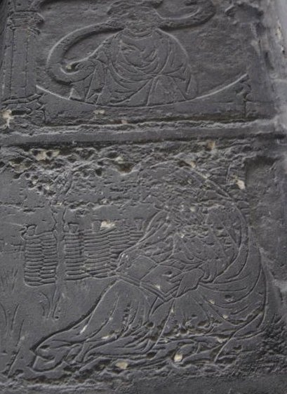</a>
<br><i><font size="-1">cliquez sur l'image pour l'agrandir</font></i></p></center>

<p><font face="Trebuchet MS">nelle tenaient des phylact&egrave;res. Au-dessous
&eacute;taient cinq bas-reliefs consacr&eacute;s &agrave; la r&eacute;surrection
des morts, puis trois petits tableaux repr&eacute;sentant le martyre des
Innocents. Sur la muraille, derri&egrave;re les personnages, &eacute;taient</font>
</p><p><font face="Trebuchet MS">&laquo;<i><font color="#000099"><font size="-1">
deux petits cartouches form&eacute;s par des ornements gothiques, dont
le vide est rempli par l'N et l'F, et sous la plinthe, &agrave; droite,
un cartouche de m&ecirc;me dessin, renfermant une main qui tient l'&eacute;critoire,
symbole distinctif du bienfaiteur </font></font></i>&raquo;</font>
</p><p><font face="Trebuchet MS">(<font color="#000099"><font size="-1">Sur un
des battants de la porte de Saint-Jacques &eacute;tait aussi un petit &eacute;cusson
avec l'&eacute;critoire.</font></font>). Tous ces caract&egrave;res, nous
les retrouvons sur la maison de la rue Montmorency : inscriptions relatant
la date de la construction, demandant des pri&egrave;res pour les d&eacute;funts,
ou &eacute;non&ccedil;ant un verset de psaume, et petits bas-reliefs sculpt&eacute;s,
au milieu desquels nous trouverons le portrait de Nicolas Flamel, son seing
manuel et ses initiales. Dans ces bas-reliefs, sortes de gravures semblables
&agrave; celles dont les tombiers ornaient les dalles tumulaires, les figures
sont r&eacute;serv&eacute;es sur le nu de la pierre ; les fonds sont creus&eacute;s,
et des traits grav&eacute;s compl&egrave;tent le dessin des personnages,
comme l'indiquent les excellentes photographies de M. E. Durand. Peut-&ecirc;tre
les creux &eacute;taient-ils autrefois remplis d'un mastic color&eacute;,
destin&eacute; &agrave; mieux faire ressortir les parties r&eacute;serv&eacute;es
(<font color="#000099"><font size="-1">M. Selmersheim a cru reconna&icirc;tre
sur la pierre les traces des flammes qui auraient permis de fondre un &eacute;mail
dans les creux</font></font>). Certains fonds, notamment, nous paraissent
un peu nus aujourd'hui. Sous la corniche se d&eacute;roule, en caract&egrave;res
gothiques, une longue inscription qui donne la date de construction de
la</font>
<br><font face="Trebuchet MS">maison et indique le but que poursuivait
Nicolas Flamel par cette fondation :</font>
</p><p><font face="Trebuchet MS">&laquo; <i><font color="#000099"><font size="-1">Nous
hommes et femmes laboureurs demourans ou porche de ceste maison qui fit
faicte en l'an de gr&acirc;ce mil quatre cens et sept sommes tenus chascun
en droit soy dire tous les jours une patenostre et l'Ave Maria en priant
Dieu que de la gr&acirc;ce face pardon aux povres p&eacute;cheurs tr&eacute;passez.
Amen</font></font></i> &raquo;</font>
</p><p><font face="Trebuchet MS">( <font color="#000099"><font size="-1">L'abb&eacute;
Villain, qui n'avait d'abord pas pu lire enti&egrave;rement l'inscription
&laquo; remplie de peinture &raquo;, dit-il, en donne &agrave; la fin de
son <b><i>Essai</i></b>, p. 305-306, une lecture fautive : &laquo; <i>...en
priant Dieu Fils et sa M&egrave;re faire pardon aux pauvres p&eacute;cheurs
trespass&eacute;s</i> &raquo;. &#8212; Dans un article paru dans les <i>M&eacute;moires
de la Soci&eacute;t&eacute; nationale des Antiquaires de France</i>, 1882,
3e s&eacute;rie, t. I, p. 375-383, intitul&eacute; : <b><i>La maison de
Nicolas Flamel, rue de Montmorency, 51, &agrave; Paris</i></b>, M. Aug.
Bernard &eacute;tudie cette inscription et la</font></font></font>
<font face="Trebuchet MS"><font color="#000099"><font size="-1">commente
&agrave; l'aide du livre de l'abb&eacute; Villain; M. Bernard pensait qu'il
ne subsistait de la d&eacute;coration de la fa&ccedil;ade que l'inscription
; &laquo;<i> Les nombreuses sculptures, dont il restait encore quelque
chose au temps de l'abb&eacute; Villain, ont &eacute;galement disparu sous
le marteau du tailleur de pierre</i> &raquo;.</font></font>). Nous avons
vu plus haut que la clause contenue dans le texte de cette inscription
ne put pas &ecirc;tre ex&eacute;cut&eacute;e purement et simplement, et
que la maison, dont les appartements &eacute;taient lou&eacute;s, ne put
jamais, malgr&eacute; le d&eacute;sir de Nicolas Flamel, &ecirc;tre transform&eacute;e
en asile. En avant de l'inscription est grav&eacute;e une main, qui est
comme le seing de Flamel, que l'on voyait &eacute;galement sous l'arcade
du cimeti&egrave;re des Innocents, construite &agrave; peu pr&egrave;s
en m&ecirc;me temps que la maison du Grand Pignon. Les jambages, en liais,
qui s&eacute;parent les portes et les fen&ecirc;tres sont orn&eacute;s
de petits personnages et d'anges, grav&eacute;s dans des cadres en anse
de panier et &agrave; redents tr&eacute;fl&eacute;s, et bord&eacute;s de
colonnettes et de lettres orn&eacute;es qui, rapproch&eacute;es, forment
des mots et des phrases. Six personnages barbus, couverts de grands manteaux
et coiff&eacute;s d'un bonnet</font>
<br><font face="Trebuchet MS">pointu ou retombant sur le devant, sont vus
&agrave; mi-corps. Ils tiennent des phylact&egrave;res; ce sont peut-&ecirc;tre
des proph&egrave;tes, et des fragments de psaumes &eacute;taient sans doute
autrefois peints sur ces banderoles. L'un d'eux nous a paru particuli&egrave;rement
int&eacute;ressant ; il se trouve sur le jambage de gauche de la porte
la plus proche de la rue Saint-Martin, au-dessus d'un F sculpt&eacute;;
il est imberbe et porte sur la t&ecirc;te une sorte de turban; nous sommes
port&eacute; &agrave; croire que c'est le portrait de Nicolas Flamel, qui
s'est ainsi fait repr&eacute;senter aux portails de Sainte-Genevi&egrave;ve-des-Ardents
et de Saint-Jacques.</font>
</p><center>
<p><a href="#" title="lien mort dans l'archive">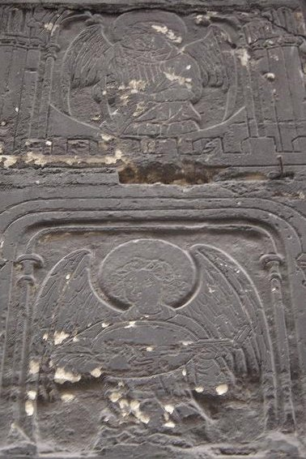</a>
<br><i><font size="-1">cliquez sur l'image pour l'agrandir</font></i></p></center>

<p><font face="Trebuchet MS">Aux extr&eacute;mit&eacute;s quatre personnages
assis dans des jardins dont, on reconna&icirc;t les arbres et les cl&ocirc;tures
paraissent occup&eacute;s &agrave; lire et &agrave; prier; peut-&ecirc;tre
sont-ce les h&ocirc;tes de la maison qui s'acquittent de leur loyer quotidien.
Au milieu, de chaque c&ocirc;t&eacute; de la porte centrale, quatre anges
musiciens, comme nous en avons d&eacute;j&agrave; rencontr&eacute; dans
la plupart des constructions de Nicolas FIamel (<font color="#000099"><font size="-1">La
partie inf&eacute;rieure des m&eacute;daillons o&ugrave; sont grav&eacute;s
ces anges est orn&eacute;e de cr&eacute;neaux qui figurent souvent, au
d&eacute;but du XV<sup>e</sup> si&egrave;cle, la J&eacute;rusalem c&eacute;leste.</font></font>),
sont vus &agrave; mi-corps et jouent d'un instrument : orgue, luth. cithare.
La composition de ces petits m&eacute;daillons est fort harmonieuse, la
disposition. &eacute;l&eacute;gante et l'ex&eacute;cution eu g&eacute;n&eacute;ral
soign&eacute;e. Les instruments sont trait&eacute;s avec un grand souci
de v&eacute;rit&eacute;. Les deux du haut, particuli&egrave;rement, sont
d'un tr&egrave;s beau style et rappellent ces jolis anges que l'on rencontre
fr&eacute;quemment dans l'ornemontation des manuscrits du duc de Berry.
Sous ces figurines sont sculpt&eacute;es, dans des cartouches, les deux
initiales N et F, d'un tr&egrave;s beau dessin, telles que</font>
<font face="Trebuchet MS">nous les avons d&eacute;j&agrave; vues au
cimeti&egrave;re des Innocents (<font color="#000099"><font size="-1">Au
portail de Saint-Jacques, on lit les initiales du mari et de la femme ;
N. P</font></font>.). Sous ces bas-reliefs soni, grav&eacute;es sur chaque
jambage des lettres qui, rapproch&eacute;es, forment, le r&eacute;pons
:</font>
</p><p><font face="Trebuchet MS"><i><font color="#000099"><font size="-1">Deo
gratias, et au-dessous le psaume: Sit nomen Domini || [benedictum] || ex
hoc nunc et II usque in seculum || Gloria Patri et Filio || et Spiritui
Sancto [Amen]</font></font></i>.</font>
</p><p><font face="Trebuchet MS">Les mots Benedictum et Amen sont aujourd'hui
illisibles, mais ils peuvent &ecirc;tre facilement reconstitu&eacute;s</font>
</p><p><font face="Trebuchet MS">( <font color="#000099"><font size="-1">L'abb&eacute;
Villain dit (Histoire critique.... p. 155) qu'il y avait encore d'autres
inscriptions dont nous n'avons pas retrouv&eacute; la trace; &laquo; <i>Sur
une corniche du premier pilier vers le cimeti&egrave;re Saint-Nicolas :
Nous humblement et d&eacute;votement. </i>&raquo;. Il donne en outre, d'apr&egrave;s
le manuscrit de M. Pr&eacute;vost, avocat, ce fragment d'Inscription qui
aurait &eacute;t&eacute; lue autrefois sur cette fa&ccedil;ade : Nous autres
femmes besoignons pour notre vie gagner.</font></font>).</font>
</p><p><font face="Trebuchet MS">La porte centrale &eacute;tait orn&eacute;e,
comme nous l'avons vu, d'un bas-relief sculpt&eacute; repr&eacute;sentant
l'Adoration des Mages, et dont le dessin du Cabinet des Estampes nous donne
la silhouette. Enfin, au-dessus de la corniche et garnissant le mur du
premier &eacute;tage, &eacute;tait une grande pierre grav&eacute;e dont
l'abb&eacute; Villain donne la description :</font>
</p><p><font face="Trebuchet MS">&laquo; <i><font color="#000099"><font size="-1">Le
grand nombre de personnes repr&eacute;sent&eacute;es &agrave; genoux sur
les pierres au-dessus des portes de la maison et &agrave; quelques piliers
paroissent &ecirc;tre les h&ocirc;tes du Propri&eacute;taire r&eacute;citans
leur Patenostre. Flamel voulut que ces h&ocirc;tes, en entrant dans leur
hospice, eussent sous leurs yeux et la loi et l'image de l'ex&eacute;cution
de cette loi. Il est aussi, sans doute, dans cette troupe d&eacute;vote,
et il paroit qu'il est repr&eacute;sent&eacute; par la premi&egrave;re
figure dessin&eacute;e apr&egrave;s l'ap&ocirc;tre saint Jacques du c&ocirc;t&eacute;
du cimeti&egrave;re Saint-</font></font></i></font><font face="Trebuchet MS"><i><font color="#000099"><font size="-1">Nicolas.
Apr&egrave;s lui se voit une femme qui porte un panier, seroit-ce sa servante
Marguerite la Quesnel, qui contribuoit &agrave; l'oeuvre par un don dont
on va parler ? Pernelle, quoique morte depuis long terns, doit &ecirc;tre
de l'autre c&ocirc;te. Une partie de ce que Flamel employoit au b&acirc;timent
de sa maison doit un produit du don mutuel; cette femme a d&ucirc; trouver
place sur ce monument en face de son mari </font></font></i>&raquo;.</font>
</p><p><font face="Trebuchet MS">Il ne reste plus rien aujourd'hui de cette
grande dalle grav&eacute;e. Depuis 1900, on y lisait &agrave; la place
une inscription destin&eacute;e &agrave; rappeler la fondation de Nicolas
Flamel</font>
</p><p><font face="Trebuchet MS">(<font color="#000099"><font size="-1">Voici
le texte de cette inscription : &laquo; <i>Maison de Nicolas Flamel et
de Pernelle, sa femme. &#8212; Pour conserver le souvenir de leur fondation charitable,
la ville de Paris a restaur&eacute; en 1900 l'inscription primitive, dat&eacute;e
de 1407</i> &raquo;. Peut-&ecirc;tre cette inscription n'est-elle pas tr&egrave;s
juste, car Nicolas Flamel et Pernelle, morte avant 1407, n'ont pas habit&eacute;
cette maison. D'autre part, le but charitable que se proposait Flamel ne
put jamais &ecirc;tre rempli.</font></font>),</font>
</p><p><font face="Trebuchet MS">d&eacute;pos&eacute;e lors de la r&eacute;cente
restauration qui a fait r&eacute;appara&icirc;tre ces exemplaires tr&egrave;s
curieux et &agrave; peu pr&egrave;s uniques de pierres grav&eacute;es au
d&eacute;but du XV<sup>e</sup> si&egrave;cle.</font>
</p><div align="right"><font face="Trebuchet MS"><small><span style="font-weight: bold;">Marcel AUBERT</span></small>.</font></div>

<p><br><a  name="III. Photos diverses sur Nicolas Flamel"></a><b><font face="Trebuchet MS">III.
Photos diverses sur Nicolas Flamel</font></b>
</p><p><a  name="1. tombeau de Nicolas Flamel"></a><font face="Trebuchet MS">1.
<u>tombeau
de Nicolas Flamel</u></font>
</p><p><font face="Trebuchet MS"><font color="#000099"><font size="-1">Il s'agit
en fait du tympan du portail lat&eacute;ral de l'&eacute;glise Saint-Jacques-de-la-Boucherie,
qui repr&eacute;sente Nicolas Flamel, bienfaiteur de l'&eacute;glise, et
sa femme, agenouill&eacute;s aux pieds de la Vierge et pr&eacute;sent&eacute;s
par Saint Jacques et Saint Jean-Baptiste Cote : BNF Richelieu Estampes
et photographie R&eacute;s. Ve-53e-Fol. Destailleur Paris, t. 3 , n. 390
. microfilm A028813 . clich&eacute; 65C25533 - auteur : Bernier, Charles-Louis
(1755-1830) Contre-&eacute;preuve d'un dessin &agrave; la mine de plomb
; 20,8 x 26,3 cm - Flamel, Nicolas (1330?-1418) -- Statues Marie, Sainte
Vierge -- Statues Jean-Baptiste (saint / 1-28) -- Statues Jacques le Majeur
(saint / ..-44) --</font></font></font>
</p><center>
<p><a href="#" title="lien mort dans l'archive">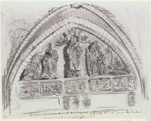</a>
<br><i><font size="-1">cliquez sur l'image pour l'agrandir</font></i></p></center>

<p><a  name="2. la maison de Flamel [clich&eacute;s obtenus &agrave; partir"></a><font face="Trebuchet MS">2.
<u>la
maison de Flamel</u> [clich&eacute;s obtenus &agrave; partir du site
<a href="https://web.archive.org/web/20030803035054/http://gallica.bnf.fr/" target="_blank" rel="noopener">Gallica</a>,
bnf].</font>
</p><p><font face="Trebuchet MS"><font color="#000099"><font size="-1">Maison
de Nicolas Flamel - &eacute;crivain, jur&eacute; et alchimiste - 1407 -
Rue de Montmorency 51.N&deg; Atget : 4053. 1900. Photographie positive
sur papier albumin&eacute; d'apr&egrave;s n&eacute;gatif sur verre au g&eacute;latinobromure
; 20,4 x 16,7 cm (&eacute;pr.). [Cote : BNF - Est.</font></font></font>
</p><center>
<p>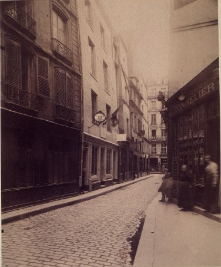</p></center>

<p><br>
<font face="Trebuchet MS"><font color="#000099"><font size="-1">Maison
de Nicolas Flamel - &eacute;crivain, jur&eacute; et alchimiste - 1407 -
Rue de Montmorency 51.N&deg; Atget : 4054. 1900. Photographie positive
sur papier albumin&eacute; d'apr&egrave;s n&eacute;gatif sur verre au g&eacute;latinobromure
; 16,7 x 21,6 cm (&eacute;pr.). [Cote : BNF - Est.</font></font></font>
</p><center>
<p>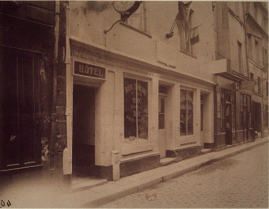</p></center>

<p><br>
<font face="Trebuchet MS">La maison de Nicolas Flamel abrite aujourd&#8217;hui
un restaurant. Longtemps, la maison du 3 rue Volta, d&#8217;allure m&eacute;di&eacute;vale,
fut consid&eacute;r&eacute;e comme la plus ancienne de Paris. Il fallut
attendre 1979 pour qu&#8217;une historienne dissipe cette l&eacute;gende. Cette
maison a &eacute;t&eacute; en fait &eacute;difi&eacute;e en 1644 par un
bourgeois parisien. Et c&#8217;est la raison pour laquelle la maison de Nicolas
Flamel a pris le titre de &laquo; <i><font color="#000099"><font size="-1">plus
ancienne maison de Paris </font></font></i>&raquo;. La maison de la rue
de Montmorency, construite en 1407, sur la censive de l&#8217;Abbaye de Saint-Martin-des-Champs,
est l&#8217;une des bonnes &#339;uvres de Nicolas Flamel. Elle &eacute;tait destin&eacute;e
&agrave; servir de refuge aux sans-logis de l&#8217;&eacute;poque : la seule
r&eacute;tribution qui leur &eacute;taient demand&eacute;s &eacute;tait
de prier Dieu pour les tr&eacute;pass&eacute;s mais comme on l'a vu dans
l'article de M. Aubert, ce projet n'eut pas de suite. Le rez-de-chauss&eacute;e
de la maison aujourd&#8217;hui restaur&eacute;e est soutenu par six forts piliers
de pierres sculpt&eacute;es &laquo; <i><font color="#000099"><font size="-1">d&#8217;images</font></font></i>
&raquo; et d&#8217;inscriptions. La maison a perdu son haut pignon, caract&eacute;ristique
des demeures du XV<sup>e</sup> si&egrave;cle.</font>
<br>&nbsp;
</p><p><a  name="3. arcade de Nicolas Flamel"></a><font face="Trebuchet MS">3.
<u>arcade
de Nicolas Flamel</u></font>
</p><center>
<p><a href="#" title="lien mort dans l'archive">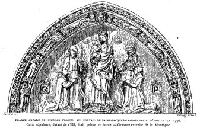</a>
<br><i><font size="-1">cliquez sur l'image pour l'agrandir<br>
    <br>
</font></i></p>
    <div style="text-align: left;"><font face="Trebuchet MS" style="font-family: helvetica,arial,sans-serif; font-weight: bold; color: rgb(0, 0, 153);"><a  name="III._Lettre_de_Dom_Pernety_sur_une"></a>III.</font><span style="font-family: helvetica,arial,sans-serif; font-weight: bold; color: rgb(0, 0, 153);"> Lettre
de Dom Pernety sur une Histoire critique de Nicolas Flamel</span><b style="font-weight: bold; color: rgb(0, 0, 153);"><span style="font-size: 14pt;"><span style="font-family: helvetica,arial,sans-serif;"> </span></span></b><br>








    <p class="MsoNormal" style="text-align: justify; font-family: helvetica,arial,sans-serif;"><span style="letter-spacing: 0.3pt;">Il
a paru chez Desprez, imprimeur </span><span style="letter-spacing: 0.05pt;">Libraire
rue </span><span style="letter-spacing: 0.35pt;">S. Jacques, un gros volume in-12
sous ce titre </span><i><span style=""><span style="font-weight: bold;">His&shy;</span><span style="letter-spacing: 0.75pt;"><span style="font-weight: bold;">toire critique de Nicolas Flamel</span>, </span></span></i><span style="letter-spacing: 0.3pt;">etc., par M. L. V*** [<small style="color: rgb(0, 0, 153);">il s'agit de l'<a href="#labb%C3%A9_Villain">abb&eacute; Villain</a></small>]. </span><span style="letter-spacing: -0.1pt;">- </span><span style="letter-spacing: -0.05pt;">Dom
Pernety, religieux b&eacute;n&eacute;dictin de la congr&eacute;gation </span><span style="letter-spacing: -0.1pt;">de saint Maur, a bien voulu m'&eacute;pargner la peine de lire </span><span style="letter-spacing: 0.15pt;">cet &eacute;crit fort ennuyeux. La lettre qu'il vient de
m'adres&shy;</span><span style="letter-spacing: -0.05pt;">ser vous mettra au fait de
l'ouvrage en question.<o:p></o:p></span><br>
    <br>
<span style="letter-spacing: 0.2pt;">Monsieur,<o:p></o:p></span></p>


































    <p class="MsoNormal" style="text-align: justify; font-family: helvetica,arial,sans-serif;"><span style="letter-spacing: 0.2pt;"><!--[if !supportEmptyParas]--> </span><span style="letter-spacing: -0.05pt;">Apr&egrave;s
l'analyse que vous f&icirc;tes dans votre ann&eacute;e litt&eacute;&shy;</span><span style="letter-spacing: -0.25pt;">raire au mois de novembre </span><i><span style="letter-spacing: 0.5pt;">1758 </span></i><span style="letter-spacing: 0.5pt;">de
</span><i style="font-weight: bold;"><span style="letter-spacing: 0.7pt;">l'Essai
Historique </span></i><i><span style="letter-spacing: 0.6pt;"><span style="font-weight: bold;">sur saint Jacques de la Boucherie</span>, </span></i><span style="letter-spacing: -0.2pt;">par </span><span style="letter-spacing: 0.45pt;">M. l'abb&eacute; </span><span style="letter-spacing: -0.1pt;">V***, j'aurais cru que cet auteur se serait
condamn&eacute; au </span><span style="letter-spacing: 0.25pt;">silence. Mais vos
remarques au sujet de la digression </span>sur Nic. Flamel, et l'envie de
justifier une opinion ba&shy;<span style="letter-spacing: -0.05pt;">zard&eacute;e qu'il a
pris le parti de ne pas abandonner, ne lui </span><span style="letter-spacing: 0.5pt;">ont pas permis de se taire. De plus, </span><span style="letter-spacing: -0.05pt;">des personnes avantageusement connues dans la R&eacute;publique des Let&shy;</span>tres
et pour qui toute v&eacute;rit&eacute; est pr&eacute;cieuse, lui ont mar&shy;<span style="letter-spacing: -0.05pt;">qu&eacute; un d&eacute;sir ardent de conna&icirc;tre &agrave; fond un homme aussi </span><span style="letter-spacing: 0.05pt;">renomm&eacute; que Flamel. Il a &eacute;t&eacute; excit&eacute; encore par la
com&shy;</span><span style="letter-spacing: -0.1pt;">munication d'un article qui le
regarde; </span>dans une nou&shy;<span style="letter-spacing: 0.3pt;">velle &eacute;dition
que l'on pr&eacute;pare d'une </span>description de <span style="letter-spacing: 0.15pt;">Paris,
o&ugrave; l'on adopte et l'on donne comme </span>vraisembla&shy;<span style="letter-spacing: -0.05pt;">ble votre opinion qui est aussi la mienne </span><span style="letter-spacing: -0.1pt;">; </span><span style="letter-spacing: 0.05pt;">tous
ces mo&shy;</span><span style="letter-spacing: -0.15pt;">tifs d&eacute;taill&eacute;s dans un
Avant-propos lui </span>ont fait entre&shy;prendre une Histoire critique de Flamel,
et il se flatte <span style="letter-spacing: 0.15pt;">d'avoir port&eacute; jusqu'&agrave; la
d&eacute;monstration tout </span><span style="letter-spacing: 0.1pt;">ce qu'il a annonc&eacute;.<o:p></o:p></span><br>
<span style="letter-spacing: -0.05pt;">Un
&eacute;crivain tr&egrave;s vers&eacute; dans cette mati&egrave;re va </span><span style="letter-spacing: -0.15pt;">publier </span><span style="letter-spacing: -0.25pt;">incessamment une
r&eacute;futation du nouveau livre </span><span style="letter-spacing: 0.25pt;">de </span>M.
l'abb&eacute; V***, parce que, dit-il, toute v&eacute;rit&eacute; <span style="letter-spacing: -0.2pt;">lui
est </span><span style="letter-spacing: -0.15pt;">pr&eacute;cieuse et qu'il ne peut voir
de sang-froid que M. l'abb&eacute; </span><span style="letter-spacing: -0.2pt;">V*** se
flatte d'avoir de meilleurs </span><span style="letter-spacing: -0.15pt;">yeux que
tous les </span><span style="letter-spacing: -0.1pt;">gens avantageusement connus
dans la R&eacute;publique des </span><span style="letter-spacing: 0.1pt;">lettres depuis
pr&egrave;s de trois si&egrave;cles.<o:p></o:p></span><br>
<span style="letter-spacing: 0.35pt;">Je
laisse &agrave; cette personne </span><span style="letter-spacing: -0.1pt;">le soin de
d&eacute;sabuser </span><span style="letter-spacing: 0.4pt;">M. l'abb&eacute; V*** et je me
contente de </span><span style="letter-spacing: -0.25pt;">lui proposer </span><span style="letter-spacing: -0.15pt;">quelques probl&egrave;mes &agrave; r&eacute;soudre et de lui pr&eacute;senter
quel&shy;</span>ques r&eacute;flexions que ses ouvrages ont fait na&icirc;tre.<br>
<span style="letter-spacing: -0.2pt;">Quand
on avoue qu'on ignore absolument une science, </span><span style="letter-spacing: 0.05pt;">doit-on s'ing&eacute;rer d'en raisonner, de juger de ce qui peut y avoir
quelque rapport, et de contredire ceux qui </span><span style="letter-spacing: -0.4pt;">sont </span><span style="letter-spacing: -0.25pt;">unanimement regard&eacute;s
comme, ma&icirc;tres en </span><span style="letter-spacing: 0.2pt;">ce genre </span><span style="letter-spacing: -0.1pt;">? </span><span style="letter-spacing: 0.25pt;">M.
l'abb&eacute; V*** s&ccedil;ait-il ce que c'est qu'un philosophe </span><span style="letter-spacing: 0.45pt;">herm&eacute;tique, la conduite qu'il doit tenir pour sa
tranquil&shy;</span><span style="letter-spacing: -0.15pt;">lit&eacute;, la mani&egrave;re dont il se
comporte dans la distribution </span><span style="letter-spacing: 0.05pt;">de ses
bienfaits, etc. </span><span style="letter-spacing: -0.1pt;">?<o:p></o:p></span><br>
Ignore-t-il l'essence et le
caract&egrave;re distinctif des em&shy;<span style="letter-spacing: 0.15pt;">bl&ecirc;mes, qui
consistent &agrave; cacher sous l'apparence d'ob&shy;jets connus, des choses qui ne sont
apper&ccedil;ues que </span><span style="letter-spacing: -0.2pt;">par </span>des yeux
plus clairvoyans que ceux du commun <span style="letter-spacing: -0.1pt;">?<o:p></o:p></span><br>
<span style="letter-spacing: 0.4pt;">N'y
a-t-il pas au moins de la t&eacute;m&eacute;rit&eacute; &agrave; traiter de </span><span style="letter-spacing: 0.1pt;">fable pure ce que des Scavans dans tous les genres, des </span><span style="letter-spacing: 0.15pt;">gens tr&egrave;s sens&eacute;s, ont cru pouvoir regarder comme </span><span style="letter-spacing: -0.1pt;">des </span>r&eacute;alit&eacute;s <span style="letter-spacing: -0.1pt;">?<o:p></o:p></span><br>
<span style="letter-spacing: -0.05pt;">Peut-on
raisonnablement s'imaginer qu'un philosophe </span><span style="letter-spacing: 0.1pt;">herm&eacute;tique doive s'afficher tel ? et M. l'abb&eacute; V*** a-t-il </span><span style="letter-spacing: -0.15pt;">pens&eacute; trouver Flamel philosophe dans </span>les
contrats de <span style="letter-spacing: 0.05pt;">rentes, les quittances, etc., de
Flamel homme priv&eacute; </span><span style="letter-spacing: -0.1pt;">?<o:p></o:p></span><br>
<span style="letter-spacing: -0.05pt;">Fallait-il
employer plus de </span><span style="letter-spacing: -0.1pt;">400 </span><span style="letter-spacing: -0.1pt;">pages pour nous acca&shy;</span><span style="letter-spacing: -0.05pt;">bler du d&eacute;tail minutieux de ces rentes, de ces
quittances, </span><span style="letter-spacing: 0.35pt;">etc., de Flamel se
conduisant </span><span style="letter-spacing: -0.3pt;">comme bourgeois bon </span>chr&eacute;tien
<span style="letter-spacing: -0.1pt;">? </span><span style="letter-spacing: 0.05pt;">M.
l'abb&eacute; V*** pour se convaincre que Fla&shy;mel m&eacute;rite le nom de Philosophe voudroit-il
</span><span style="letter-spacing: -0.1pt;">que dans </span><span style="letter-spacing: 0.2pt;">les contrats qu'il a faits, dans les quittances
qu'il a </span><span style="letter-spacing: 0.1pt;">re&shy;</span><span style="letter-spacing: -0.1pt;">&ccedil;ues ou donn&eacute;es, il e&ucirc;t sign&eacute;, Nicolas Flamel,
Philoso&shy;</span>phe Herm&eacute;tique <span style="letter-spacing: -0.1pt;">?<o:p></o:p></span><br>
<span style="letter-spacing: 0.2pt;">A-t-il
cru de bonne foi qu'en secouant la poussi&egrave;re </span><span style="letter-spacing: -0.15pt;">dont il s'est couvert, en feuilletant les vieux parchemins </span><span style="letter-spacing: 0.2pt;">des archives de saint Jacques de la Boucherie, il </span><span style="letter-spacing: 0.35pt;">per&shy;</span><span style="letter-spacing: 0.1pt;">suaderait
aux s&ccedil;avans qu'ils sont aveugles </span><span style="letter-spacing: -0.1pt;">; </span><span style="letter-spacing: -0.05pt;">qu'ils doi&shy;</span><span style="letter-spacing: -0.15pt;">vent le prendre pour guide, que Flamel n'a jamais su le </span>secret
de la science herm&eacute;tique, ni m&ecirc;me travaill&eacute; &agrave; s'en <span style="letter-spacing: 0.3pt;">instruire, ni &eacute;crit sur cette science, </span><span style="letter-spacing: 0.05pt;">parce qu'il n'a </span><span style="letter-spacing: -0.15pt;">trouv&eacute; dans
son coffre de six pieds de long, ni poudre </span><span style="letter-spacing: 0.25pt;">de projection, ni lingots d'or, ni les ouvrages </span><span style="letter-spacing: -0.15pt;">manus</span><span style="letter-spacing: -0.05pt;">crits
de Flamel </span><span style="letter-spacing: -0.1pt;">? </span>Pense-t-il que sur
de telles preuves sa <span style="letter-spacing: -0.1pt;">d&eacute;cision sera sans
appel ; </span><span style="letter-spacing: -0.05pt;">que Flamel sera d&eacute;pouill&eacute; </span><span style="letter-spacing: 0.2pt;">pour toujours du titre de philosophe et d&eacute;grad&eacute; </span><span style="letter-spacing: -0.2pt;">de la </span><span style="letter-spacing: 0.15pt;">classe
des s&ccedil;avans dans ce genre </span><span style="letter-spacing: -0.1pt;">?<o:p></o:p></span></p>


    <p class="MsoNormal" style="text-align: justify; font-family: helvetica,arial,sans-serif;"><span style="letter-spacing: -0.1pt;"><!--[if !supportEmptyParas]--><!--[endif]--><o:p></o:p></span></p>


    


    


    


    


    


    <p class="MsoNormal" style="text-align: justify; font-family: helvetica,arial,sans-serif;"><span style="letter-spacing: -0.1pt;">Il
ne me reste que quelques r&eacute;flexions &agrave; pr&eacute;senter &agrave; </span><span style="letter-spacing: 0.45pt;">M. l'abb&eacute; </span><span style="letter-spacing: -0.1pt;">V...
</span><span style="letter-spacing: -0.2pt;">sur la mani&egrave;re dont il s'exprime au
sujet </span><span style="letter-spacing: -0.15pt;">du manuscrit de Flamel que
vous avez cit&eacute; dans votre </span><span style="letter-spacing: -0.05pt;">lettre du
mois de novembre </span><i><span style="letter-spacing: 0.2pt;">1758. <br>
    <br>
&laquo; </span></i><small style="color: rgb(0, 0, 153);"><span style="letter-spacing: 0.05pt; font-style: italic;">On trouve, dit-il, </span><span style="letter-spacing: -0.05pt; font-style: italic;">ce langage presque paternel dans un autre </span><span style="letter-spacing: 0.05pt; font-style: italic;">trait&eacute; de </span><span style="letter-spacing: -0.1pt; font-style: italic;">l'oeuvre
herm&eacute;tique, que dom Pernety, </span><span style="letter-spacing: -0.05pt; font-style: italic;">b&eacute;n&eacute;dictin,
    </span><span style="letter-spacing: 0.4pt; font-style: italic;">pr&eacute;tend avoir &eacute;t&eacute; &eacute;crit en </span><span style="letter-spacing: 0.7pt; font-style: italic;">1414. </span><span style="font-style: italic;">Ce r&eacute;v&eacute;rend
p&egrave;re</span><span style="letter-spacing: -0.15pt; font-style: italic;"> qui a fourni quelques m&eacute;moires
litt&eacute;raires &agrave; l'occasion</span><span style="letter-spacing: -0.05pt; font-style: italic;"> de ce que
j'ai dit de Flamel dans l'essai, assure avoir vu ce trait&eacute; manuscrit, qui
est, dit-il, de l'&eacute;criture du</span><span style="letter-spacing: 0.25pt; font-style: italic;">
temps. Cela peut &ecirc;tre. Il dit encore </span><span style="letter-spacing: -0.15pt; font-style: italic;">que
le manuscrit</span><span style="letter-spacing: -0.1pt; font-style: italic;"> est &eacute;crit de la propre
main de Flamel, comme ajoute&shy;</span><span style="letter-spacing: 0.2pt; font-style: italic;"> t-il,
le manuscrit le porte. Cela peut &ecirc;tre encore. </span><span style="letter-spacing: -0.4pt; font-style: italic;">Un</span><span style="letter-spacing: 0.05pt; font-style: italic;"> &eacute;crivain copioit alors
des livres, c'&eacute;toit sa </span><span style="letter-spacing: -0.3pt; font-style: italic;">profession </span><span style="letter-spacing: -0.1pt; font-style: italic;">;</span><span style="letter-spacing: -0.35pt; font-style: italic;"> il
pouvoit y mettre son nom pour se faire conno&icirc;tre.</span><span style="letter-spacing: -0.05pt; font-style: italic;"> Flamel, &eacute;crivain et libraire jur&eacute; </span><span style="letter-spacing: 0.05pt; font-style: italic;">de l'Universit&eacute; peut</span><span style="letter-spacing: -0.25pt; font-style: italic;"> par cette raison, avoir mis son nom au
manuscrit qui</span><span style="letter-spacing: -0.15pt; font-style: italic;"> est un psautier;
mais qu'il ait compos&eacute; </span><span style="letter-spacing: 0.15pt; font-style: italic;">le trait&eacute; all&eacute;&shy;</span><span style="letter-spacing: -0.05pt; font-style: italic;">gorique que dom Pernety, dit &ecirc;tre sur les marges,</span></small><span style="letter-spacing: 0.05pt;"><small style="color: rgb(0, 0, 153);"><span style="font-style: italic;"> c'est ce me semble ce qu'on ne peut
admettre. </span></small>&raquo; <br>
    <br>
Voici </span><span style="letter-spacing: -0.05pt;">la preuve qu'en
apporte notre s&ccedil;avant critique </span><span style="letter-spacing: -0.1pt;">: </span><span style="letter-spacing: 0.55pt;"><br>
    <br>
&laquo; <small style="color: rgb(0, 0, 153);"><span style="font-style: italic;">Je </span></small></span><small style="color: rgb(0, 0, 153);"><span style="font-style: italic;">trouve qu'en </span><span style="letter-spacing: 0.75pt; font-style: italic;">1414 </span><span style="letter-spacing: -0.15pt; font-style: italic;">Flamel
fit crier et subhaster une</span><span style="letter-spacing: 0.25pt; font-style: italic;"> maison
rue du cimeti&egrave;re Saint-Nicolas... </span><span style="font-style: italic;">Il acheta encore plusieurs rentes
qu'il serait trop long de d&eacute;tail&shy;</span><span style="letter-spacing: 0.4pt; font-style: italic;">ler. La
seule ann&eacute;e </span><span style="letter-spacing: 0.65pt; font-style: italic;">1414
    </span><span style="letter-spacing: -0.15pt; font-style: italic;">nous fournit de sa part huit</span><span style="letter-spacing: 0.2pt; font-style: italic;"> actes, reste de beaucoup d'autres </span><span style="letter-spacing: -0.3pt; font-style: italic;">qui ne sont&nbsp; point&nbsp; </span></small><span style="letter-spacing: -0.1pt;"><small style="color: rgb(0, 0, 153);"><span style="font-style: italic;">parvenus jusqu'&agrave; nous. </span></small>&raquo;<br>
    <br>
 Donc il n'a pas compos&eacute; ce </span><span style="letter-spacing: 0.1pt;">trait&eacute;. Autre preuve, ce </span>trait&eacute; est
all&eacute;gorique, donc il <span style="letter-spacing: -0.05pt;">n'est pas de Flamel.
Troisi&egrave;me </span><span style="letter-spacing: -0.1pt;">preuve : </span><span style="letter-spacing: 0.1pt;"><br>
    <br>
&laquo; <small style="color: rgb(0, 0, 153);"><span style="font-style: italic;">J'observerai</span></small></span><small style="color: rgb(0, 0, 153);"><span style="letter-spacing: -0.05pt; font-style: italic;"> encore que dans le peu que contient l'extrait donn&eacute;</span><span style="letter-spacing: -0.1pt; font-style: italic;"> par l'auteur de </span><i style="font-style: italic;"><span style="letter-spacing: 0.45pt;">l'Ann&eacute;e litt&eacute;raire, </span></i><span style="letter-spacing: -0.25pt; font-style: italic;">on ne trouve pas &agrave;</span><span style="letter-spacing: 0.25pt; font-style: italic;"> la v&eacute;rit&eacute; des preuves de fausset&eacute; aussi &eacute;videntes que</span><span style="letter-spacing: -0.1pt; font-style: italic;"> dans l'explication des figures </span><span style="letter-spacing: -0.15pt; font-style: italic;">du charnier, mais il est</span><span style="font-style: italic;"> ais&eacute; d'y
remarquer que ces deux auteurs sont &eacute;gale&shy;</span><span style="letter-spacing: 0.3pt; font-style: italic;">ment peu au fait de la v&eacute;ritable histoire de Flamel.</span><span style="font-style: italic;"> Ils rapportent
s&eacute;rieusement l'un et l'autre ces expres&shy;</span><span style="letter-spacing: 0.1pt; font-style: italic;">sions de notre &eacute;crivain: </span><span style="letter-spacing: -0.3pt; font-style: italic;">Apr&egrave;s la
mort de ma fid&egrave;le</span><span style="letter-spacing: 0.2pt; font-style: italic;"> compagne
Perenelle, y me prend fantaisie </span><span style="letter-spacing: 0.1pt; font-style: italic;">et
liesse,</span><span style="letter-spacing: 0.2pt; font-style: italic;"> en me recordant d'icelle,
escrire en gr&acirc;ce de toy. Il y<o:p></o:p></span><span style="letter-spacing: 0.45pt; font-style: italic;"> avoit au moins 17 ans que Perenelle &eacute;toit morte.</span><span style="letter-spacing: -0.2pt; font-style: italic;"> Apr&egrave;s une si longue viduit&eacute; on ne s'exprime pas</span></small><span style="letter-spacing: -0.15pt;"><span style="color: rgb(0, 0, 153);"> <small><span style="font-style: italic;">comme on fait parler ici notre &eacute;crivain. </span></small></span>&raquo;<br>
    <br>

Flamel n'a&shy;</span><span style="letter-spacing: -0.05pt;">voit pas oubli&eacute; une femme
qu'il avoit tendrement aim&eacute;e, au souvenir qu'il en avoit, </span><span style="letter-spacing: -0.2pt;">son coeur tressailloit encore </span>du sentiment
afffctueux qu'il avoit pour elle. M. l'abb&eacute; V... <span style="letter-spacing: -0.2pt;">ne trouve pas les m&ecirc;mes dispositions dans le sien, </span><span style="letter-spacing: -0.15pt;">donc Flamel n'est par l'auteur du manuscrit </span>!
<span style="letter-spacing: 0.2pt;">Peut-on </span><span style="letter-spacing: -0.05pt;">se refuser &agrave; la solidit&eacute; de ces preuves ? et ne faudrait-il </span><span style="letter-spacing: -0.2pt;">pas &ecirc;tre de bien mauvaise humeur pour vouloir
enlever </span><span style="letter-spacing: -0.15pt;">&agrave; notre historien critique
la douce satisfaction de pou&shy;</span><span style="letter-spacing: -0.25pt;">voir se
flater qu'il a pouss&eacute; jusqu'&agrave; la d&eacute;monstration </span>tout ce qu'il a avanc&eacute;
sur le compte de Flamel ?<br>
<span style="letter-spacing: -0.15pt;">Je
ne d&eacute;mentirai pas M. l'abb&eacute; V*** quand il dit que </span><span style="letter-spacing: -0.05pt;">j'ass&ugrave;re avoir vu le Manuscrit, qu'il est de
l'&eacute;criture du </span><span style="letter-spacing: 0.4pt;">temps et je ne veux pas
lui chercher chicane sur ses </span><span style="letter-spacing: -0.05pt;">deux
fa&ccedil;ons de s'exprimer </span>: <span style="letter-spacing: 0.4pt;">cela peut &ecirc;tre.
Tout me </span>prouve qu'il n'y a pas entendu malice. S'il se connoit aux <span style="letter-spacing: 0.35pt;">&eacute;critures de ce temps l&agrave;, pourquoi n'a-t-il pas
fait la </span><span style="letter-spacing: -0.05pt;">moindre d&eacute;marche pour
s'&eacute;claircir du fait </span>? <span style="letter-spacing: 0.05pt;">Il lui eut &eacute;t&eacute; </span><span style="letter-spacing: 0.25pt;">si ais&eacute; de s'en convaincre </span>! <span style="letter-spacing: -0.2pt;">Mais il avoit apparemment </span><span style="letter-spacing: -0.05pt;">ses raisons. L'id&eacute;e flateuse d'un livre qu'on se
propose </span><span style="letter-spacing: 0.35pt;">de mettre au jour est un
attrait bien puissant. Un tel </span><span style="letter-spacing: -0.1pt;">&eacute;claircissement
l'auroit fait renoncer &agrave; son travail, et M. l'abb&eacute; V*** vouloit &eacute;taler aux yeux
du public cette fine logique, ces raisonnemens cons&eacute;quens dont nous </span><span style="letter-spacing: 0.05pt;">venons de pr&eacute;senter une esquisse.<o:p></o:p></span><br>
Le Manuscrit est &eacute;crit de la
propre main de Flamel, <span style="letter-spacing: 0.3pt;">comme le m&ecirc;me
manuscrit le porte. Cela peut &ecirc;tre </span><span style="letter-spacing: 0.15pt;">encore,
ajoute M. l'abb&eacute; V***, vous serez surpris, Mon&shy;</span><span style="letter-spacing: 0.35pt;">sieur, de la vivacit&eacute; de son imagination, de la subtilit&eacute; de </span><span style="letter-spacing: -0.05pt;">son g&eacute;nie, de la solidit&eacute; de ses raisons dans la
tournure </span><span style="letter-spacing: 0.3pt;">de sa critique. Un &eacute;crivain
copioit alors des livres, </span><span style="letter-spacing: -0.2pt;">dit-il,
c'&eacute;toit sa profession, il pouvoit y mettre son nom </span><span style="letter-spacing: 0.15pt;">pour se faire conna&icirc;tre. M. l'abb&eacute; V*** pour
s'&eacute;pargner </span><span style="letter-spacing: -0.15pt;">un si pitoyable
raisonnement n'avoit qu'&agrave; faire la plus </span><span style="letter-spacing: 0.2pt;">petite attention &agrave; l'extrait du Manuscrit que vous avez </span>ins&eacute;r&eacute;
dans vos Feuilles, le lecteur pourra en juger, le voici.</p>


    <p class="MsoNormal" style="text-align: justify; font-family: helvetica,arial,sans-serif;"><!--[if !supportEmptyParas]--><!--[endif]--><o:p></o:p></p>


    <p class="MsoNormal" style="text-align: justify; font-family: helvetica,arial,sans-serif;"><span style="letter-spacing: 0.05pt;">&laquo;
    <small style="color: rgb(0, 0, 153);"><span style="font-style: italic;">Je, Nicolas Flamel, &eacute;crivain de Paris., cette pr&eacute;sente </span></small></span><small style="color: rgb(0, 0, 153);"><span style="letter-spacing: 0.35pt; font-style: italic;">ann&eacute;e MCCCCXIIII, du r&egrave;gne de notre Prince b&eacute;nin </span><span style="font-style: italic;">Charles
VI, lequel Dieu veuille b&eacute;nir, et apr&egrave;s la mort </span><span style="letter-spacing: -0.1pt; font-style: italic;">de ma fid&egrave;le compagne Perenelle, i me pren fantasie et </span><span style="letter-spacing: 0.25pt; font-style: italic;">liesse, en me recordant d'icelle, &eacute;crire en gr&acirc;ce
de toy, </span><span style="letter-spacing: -0.05pt; font-style: italic;">chier nepveu, toute la
maistrise du secret de la poudre </span><span style="font-style: italic;">de projection ou teincture
philosophale, que Dieu a pris </span><span style="letter-spacing: -0.15pt; font-style: italic;">vouloir de
d&eacute;partir &agrave; son moult ch&eacute;tif serviteur, et que ay </span><i style="font-style: italic;"><span style="">r&eacute;p&eacute;r&eacute; </span></i><span style="letter-spacing: -0.1pt; font-style: italic;">et comme rep&egrave;reras, en ouvrant comme te diray.... </span><span style="letter-spacing: -0.05pt; font-style: italic;">Adonc ay escrit cedit livre de ma propre main, et
que </span><span style="letter-spacing: 0.2pt; font-style: italic;">avois destin&eacute; &agrave; l'Eglise
Saint-Jacques, estant de la ditte Paroisse. Mais apr&egrave;s que j'eu recouvr&eacute; le
livre du Juif </span><span style="letter-spacing: 0.4pt; font-style: italic;">Abraham, ne me prit plus
vouloir de le vendre pour </span><span style="letter-spacing: -0.05pt; font-style: italic;">argent, et
j'ai icelui gard&eacute; moult avec cure, pour en Iuy </span><span style="letter-spacing: 0.15pt; font-style: italic;">escrire le secret d'Alchemie en lettres et caract&egrave;res fan&shy;</span><span style="font-style: italic;">tasi&eacute;s,
dont te baille la clef, et n'oublie </span><span style="letter-spacing: -0.05pt; font-style: italic;">mie
d'avoir de </span><span style="font-style: italic;">moy souvenance quand seroy dans le sudaire </span><span style="letter-spacing: -0.1pt; font-style: italic;">; </span><span style="font-style: italic;">et rem&eacute;&shy;mores adonc que t'ay faict tels
documens, c'est-&agrave;-s&ccedil;avoir </span><span style="letter-spacing: -0.1pt; font-style: italic;">afin que te fasse
grand maistre en Alchemie... En avant </span><span style="font-style: italic;">de dire un mot sur la pratique
d'ouvrer, j'ai vouloir de te </span><span style="letter-spacing: -0.05pt; font-style: italic;">conduire par
th&eacute;orique &agrave; connoistre ce qu'est &agrave; s&ccedil;avoir, </span><span style="letter-spacing: -0.1pt; font-style: italic;">science muante corps m&eacute;talliques en perfection d'or et </span><span style="letter-spacing: -0.15pt; font-style: italic;">d'argent, produisant sant&eacute; aux corps humains, et
muant </span><span style="letter-spacing: -0.05pt; font-style: italic;">viles pierres et cailloux en
fines, sinc&egrave;res et pr&eacute;cieuses, </span></small><span style="letter-spacing: 0.4pt;"><small style="color: rgb(0, 0, 153);"><span style="font-style: italic;">etc.</span></small> &raquo;<o:p></o:p></span></p>


    


    


    


    <p class="MsoNormal" style="text-align: justify; font-family: helvetica,arial,sans-serif;"><span style="letter-spacing: -0.2pt;">A
la fin du Manuscrit on lit ceci <br>
    <br>
&laquo; <small style="color: rgb(0, 0, 153);"><span style="font-style: italic;">Adonc as le tr&eacute;sor </span></small></span><small style="color: rgb(0, 0, 153);"><span style="letter-spacing: 0.3pt; font-style: italic;">de toute la f&eacute;licit&eacute; mondaine que moy, pauvre ruril
de </span><span style="letter-spacing: 0.1pt; font-style: italic;">Pontoise, ay faict et maistris&eacute; par
trois reprinses &agrave; Paris </span><span style="font-style: italic;">en ma maison rue des Escrivains, tout proche de
la Cha&shy;</span><span style="letter-spacing: 0.25pt; font-style: italic;">pelle Saint-Jacques la Boucherie et
que moi, </span><span style="letter-spacing: -0.2pt; font-style: italic;">Nicolas </span><span style="letter-spacing: -0.1pt; font-style: italic;">Flamel, te baille pour l'amour qu'ay toi en
l'honneur de </span><span style="font-style: italic;">Dieu... Avises donc chier nepveu, de faire comme ay </span><span style="letter-spacing: -0.1pt; font-style: italic;">fait ; </span><span style="letter-spacing: 0.1pt; font-style: italic;">c'est-&agrave;-scavoir
de souslager les pauvres nos fr&egrave;res </span><span style="letter-spacing: 0.35pt; font-style: italic;">en
Dieu, &agrave; d&eacute;corer le Temple de nostre r&eacute;dempteur, </span><span style="letter-spacing: -0.15pt; font-style: italic;">faire issir des prisons mains captifs d&eacute;tenus pour argent </span><span style="letter-spacing: 0.1pt; font-style: italic;">et par le bon et loyal usage qu'en feras, te
conduiras au </span><span style="letter-spacing: 0.05pt; font-style: italic;">chemin de gloire et de
salut &eacute;ternel, que je Nicolas Fla&shy;</span><span style="letter-spacing: -0.15pt; font-style: italic;">mel,
te souhaite au nom du P&egrave;re &eacute;ternel, Fils R&eacute;demp</span><span style="letter-spacing: -0.05pt; font-style: italic;">teur et Sainct-Esprit iliuminateur, </span><span style="letter-spacing: 0.05pt; font-style: italic;">saincte, sacr&eacute;e et </span></small><span style="letter-spacing: 0.2pt;"><small style="color: rgb(0, 0, 153);"><span style="font-style: italic;">adorable
Trinit&eacute; et Unit&eacute;. Amen.</span></small> &raquo; <br>
    <br>
Je laisse </span>au lecteur <span style="letter-spacing: 0.4pt;">&agrave; juger si M. l'abb&eacute; V*** a eu raison de ne </span>regarder <span style="letter-spacing: -0.15pt;">Flamel que comme copiste de ce manuscrit dans
lequel il parle toujours comme auteur.<o:p></o:p></span><br>
<span style="letter-spacing: 0.05pt;">Quant
&agrave; la glose de M. l'abb&eacute; V*** sur le pr&eacute;sent que </span><span style="letter-spacing: -0.1pt;">Flamel fait de ce Manuscrit &agrave; son neveu, elle ne m&eacute;rite </span><span style="letter-spacing: 0.25pt;">pas d'&ecirc;tre relev&eacute;e. Il lui pr&eacute;sente, dit </span>notre
historien, un ouvrage scell&eacute; dont il garde la clef, etc. Cette faus&shy;<span style="letter-spacing: 0.15pt;">set&eacute; se manifeste par l'extrait ci-dessus. Et si
ce trait&eacute; </span><span style="letter-spacing: -0.05pt;">est all&eacute;gorique, il est
dans </span><span style="letter-spacing: 0.5pt;">le go&ucirc;t de tous les autres </span><span style="letter-spacing: 0.15pt;">compos&eacute;s sur cette science, sage pr&eacute;caution de la </span><span style="letter-spacing: -0.2pt;">part </span><span style="letter-spacing: 0.1pt;">de
leurs auteurs, pour voiler aux yeux du public et des </span><span style="letter-spacing: 0.3pt;">avares surtout un secret dont la publicit&eacute; </span><span style="letter-spacing: -0.1pt;">troubleroit </span><span style="letter-spacing: 0.2pt;">l'harmonie de la soci&eacute;t&eacute;. Flamel avoit lev&eacute; ce voile de </span><span style="letter-spacing: 0.35pt;">dessus les yeux de son neveu, puisqu'il </span><span style="letter-spacing: -0.05pt;">dit dans le </span>m&ecirc;me manuscrit <span style="letter-spacing: -0.1pt;">: </span><span style="letter-spacing: 0.35pt;">fais
et op&egrave;re comme tu m'as vu </span><span style="letter-spacing: 0.1pt;">faire.<o:p></o:p></span><span style="letter-spacing: 0.05pt;"><br>
J'abandonne
le reste de l'ouvrage de M. l'abb&eacute; </span><span style="letter-spacing: -1.1pt;">V***
</span><span style="letter-spacing: -0.1pt;">&agrave; la personne qui se propose de le
relever m&eacute;thodique&shy;</span><span style="letter-spacing: 0.1pt;">ment et qui a eu la
patience de le lire en entier.<o:p></o:p></span></p>


    <p class="MsoNormal" style="text-align: justify; font-family: helvetica,arial,sans-serif;"><span style="letter-spacing: 0.2pt;">J'ai
l'honneur d'&ecirc;tre, etc.<o:p></o:p></span></p>


    <p class="MsoNormal" style="text-align: justify; font-family: helvetica,arial,sans-serif;"><span style="letter-spacing: 0.2pt;"><!--[if !supportEmptyParas]--><!--[endif]--><o:p></o:p></span></p>


    <p class="MsoNormal" style="font-family: helvetica,arial,sans-serif; text-align: right;"><small><span style="letter-spacing: -0.55pt; font-weight: bold;">DOM&nbsp; </span></small><span style="letter-spacing: -0.15pt;"><small><span style="font-weight: bold;">PERNETY.</span></small><br>
</span></p>
    <p class="MsoNormal" style="text-align: justify; font-family: helvetica,arial,sans-serif;"><span style="letter-spacing: -0.15pt;"><o:p></o:p></span></p>



    <p class="MsoNormal" style="text-align: justify; font-family: helvetica,arial,sans-serif;"><span style="letter-spacing: -0.15pt;"><!--[if !supportEmptyParas]--><!--[endif]--><o:p></o:p></span></p>


    <p class="MsoNormal" style="text-align: justify; font-family: helvetica,arial,sans-serif;"><span style="letter-spacing: -0.15pt;"><!--[if !supportEmptyParas]--><!--[endif]--><o:p></o:p></span></p>


    <p class="MsoNormal" style="text-align: justify; font-family: helvetica,arial,sans-serif;"><span style="letter-spacing: -0.15pt;"><!--[if !supportEmptyParas]--><!--[endif]--><o:p></o:p></span></p>


    <p class="MsoNormal" style="text-align: justify; font-family: helvetica,arial,sans-serif;"><span style="letter-spacing: -0.15pt;"><!--[if !supportEmptyParas]--><!--[endif]--><o:p></o:p></span></p>


    <p class="MsoNormal" style="text-align: justify; font-family: helvetica,arial,sans-serif;"><span style="letter-spacing: -0.15pt;"><!--[if !supportEmptyParas]--><!--[endif]--><o:p></o:p></span></p>


    <p class="MsoNormal" style="text-align: justify; font-family: helvetica,arial,sans-serif;"><span style="letter-spacing: -0.15pt;"><!--[if !supportEmptyParas]--><!--[endif]--><o:p></o:p></span></p>


    <p class="MsoNormal" style="text-align: justify; font-family: helvetica,arial,sans-serif;"><!--[if !supportEmptyParas]--><!--[endif]--><o:p></o:p></p>


    <p class="MsoNormal" style="text-align: justify; font-family: helvetica,arial,sans-serif;"><!--[if !supportEmptyParas]--><!--[endif]--><o:p></o:p></p>


    <p class="MsoNormal" style="text-align: justify; font-family: helvetica,arial,sans-serif;"><!--[if !supportEmptyParas]--><!--[endif]--><o:p></o:p></p>


    <p class="MsoNormal" style="text-align: justify; font-family: helvetica,arial,sans-serif;"><!--[if !supportEmptyParas]--><!--[endif]--><o:p></o:p></p>


    <p class="MsoNormal" style="text-align: justify; font-family: helvetica,arial,sans-serif;"><!--[if !supportEmptyParas]--><!--[endif]--><o:p></o:p></p>


    <p class="MsoNormal" align="center" style="margin: 0cm -2.85pt 0.0001pt; text-align: center; font-family: helvetica,arial,sans-serif;"><br>
    <br>
</p>
    <p class="MsoNormal" style="margin: 0cm -2.85pt 0.0001pt; font-family: helvetica,arial,sans-serif; font-weight: bold; color: rgb(102, 0, 0); text-align: left;"><a  name="Lettre"></a>Lettre &agrave; M"' sur celle
que Pernety, R. Ben&eacute;&shy;dictin de la congr&eacute;gation de S. Maur, a fait ins&eacute;rer dans
une des feuilles de M. Fr&eacute;ron de cette ann&eacute;e 1762, contre l'histoire critique
de N. Flamel et de Pernelle sa femme.</p>



    <p class="MsoNormal" style="text-align: justify; font-family: helvetica,arial,sans-serif;"><!--[if !supportEmptyParas]--><!--[endif]--><o:p></o:p></p>


    


    


    


    


    


    


    


    


    


    


    <p class="MsoNormal" style="text-align: justify; font-family: helvetica,arial,sans-serif;">Cette lettre de l'abb&eacute; Villain,
&eacute;crite en r&eacute;ponse &agrave; la pr&eacute;c&eacute;dente, est tr&egrave;s rare ; M. Stanislas de Gua&iuml;ta, qui
en poss&egrave;de un exemplaire a bien voulu nous la commu&shy;niquer pour en faire
l'analyse. Nous ne l'avons pas donn&eacute;e en entier, parce qu'elle est longue et
ennuyeuse au possible, nous nous contenterons d'en examiner les passages
saillants.<br>
Villain trouve d'abord que le ton
de la lettre de Per&shy;nety n'est pas convenable pour un disciple de saint Be&shy;no&icirc;t.
Il pr&eacute;tend ensuite, &agrave; tort, que l'extrait du psautier chimique donn&eacute; dans la lettre de
Pernety est diff&eacute;rent de celui donn&eacute; dans la lettre critique &agrave; propos de l'Es&shy;sai
sur saint Jacques la Boucherie.<br>
Villain insinue que le psautier
chimique n'existe pas, bien que Pernety l'aie tenu &agrave; sa disposition pour le con&shy;sulter.
Et &agrave; ce propos il s'efforce de conclure que Per&shy;nety a tort parce qu'il le
prend de haut. Voici cet axiome de Villain <br>
    <br>
&laquo; <small style="color: rgb(0, 0, 153);"><span style="font-style: italic;">Il fait trop de bruit pour un
homme assur&eacute; du fait. Quand on a pour soi la v&eacute;rit&eacute; on se d&eacute;fend modestement...
    </span></small>&raquo;<br>
    <br>
C'est superbe ! Et m&ecirc;me en supposant que le
Psautier existe, il affir&shy;me a priori que ce trait&eacute; doit &ecirc;tre de la main d'un
faus&shy;saire. Des preuves, il n'en donne pas, naturellement. Il doute fort que
Flamel n'ait fait l'&#339;uvre que trois fois, il &eacute;met des pens&eacute;es de cette force. <br>
    <br>
&laquo;
    <small style="color: rgb(0, 0, 153);"><span style="font-style: italic;">D'un autre c&ocirc;t&eacute; cet &eacute;crivain auroit-il r&eacute;ussi dans l'op&eacute;ration chymi&shy;que, par
laquelle des personnes sens&eacute;es et tr&egrave;s au fait pr&eacute;tendent qu'on pourroit
parvenir &agrave; faire de l'or ? Eh ! loin de s'enrichir, l'or que Flamel aurait
retir&eacute; de cette op&eacute;ration, lui eut &eacute;t&eacute; &agrave; charge, il lui serait revenu &agrave; un prix
excessif.</span></small> &raquo; <br>
    <br>
C'est dr&ocirc;le et pas fran&ccedil;ais. Le bon Villain est navr&eacute; des
pointes que Flamel a lanc&eacute;es contre lui, il se sent ridicule, il l'avoue na&iuml;ve&shy;ment
:<br>
    <br>
 &laquo;<small style="color: rgb(0, 0, 153);"><span style="font-style: italic;"> Mais pour parler s&eacute;rieusement et abr&eacute;ger </span><span style="letter-spacing: -0.05pt; font-style: italic;">rien
de plus d&eacute;plac&eacute; que cette piquante ironie, </span><span style="letter-spacing: 0.15pt; font-style: italic;">et avec </span><span style="letter-spacing: -0.15pt; font-style: italic;">de telles armes quand
il en prendra le go&ucirc;t au r&eacute;v&eacute;rend </span><span style="letter-spacing: 0.4pt; font-style: italic;">P&egrave;re,
il pourra rendre la ris&eacute;e du public, </span></small><span style="letter-spacing: -0.05pt;"><small style="color: rgb(0, 0, 153);"><span style="font-style: italic;">tel
&eacute;crivain qu'il voudra. </span></small>&raquo;<o:p></o:p></span></p>


    


    


    


    


    <p class="MsoNormal" style="text-align: justify; font-family: helvetica,arial,sans-serif;"><span style="letter-spacing: -0.05pt;"><!--[if !supportEmptyParas]--></span>Apr&egrave;s quelques pages de verbiage
creux, l'abb&eacute; Villain <span style="letter-spacing: 0.4pt;">nous glisse dans le tuyau de l'oreille que
l'Herm&eacute;tis&shy;</span><span style="letter-spacing: 0.2pt;">me est peut-&ecirc;tre bien une
science diabolique et qu'en </span><span style="letter-spacing: 0.3pt;">tout cas
le d&eacute;mon s'en sert pour perdre les hommes. </span><span style="letter-spacing: 0.25pt;">Attrape, pauvre Pernety ! Le proc&eacute;d&eacute; est assez </span><span style="letter-spacing: 0.05pt;">j&eacute;suiti&shy;</span><span style="letter-spacing: -0.15pt;">que
et nul doute que si l'abb&eacute; Villain avait pu, il aurait </span>envoy&eacute; Pernety au
b&ucirc;cher. S'ensuit une histoire renou&shy;<span style="letter-spacing: -0.2pt;">vel&eacute;e du
p&egrave;re Kircher, dans laquelle un jeune homme a </span><span style="letter-spacing: -0.15pt;">&eacute;t&eacute; tromp&eacute; par un diable d&eacute;guis&eacute; en philosophe herm&eacute;&shy;</span><span style="letter-spacing: 0.1pt;">tique.<o:p></o:p></span><span style="letter-spacing: 0.25pt;"> Ceci
est plus grave, est-ce que Pernety ne serait pas </span><span style="letter-spacing: 0.05pt;">un diable d&eacute;guis&eacute; ? Sur ce, le bon Villain fait de l'esprit, </span><span style="letter-spacing: 0.25pt;">s'il avait un ami de l'ordre de Saint-Beno&icirc;t qui
s'occu&shy;</span>p&acirc;t d'alchimie, voici la recette qu'il lui donnerait pour se
gu&eacute;rir de ce travers <span style="letter-spacing: -0.1pt;">: </span><span style="letter-spacing: 0.35pt;"><br>
    <br>
&laquo; <small style="color: rgb(0, 0, 153);"><span style="font-style: italic;">Recipe, une petite dose bien </span></small></span><small style="color: rgb(0, 0, 153);"><span style="letter-spacing: 0.2pt; font-style: italic;">infus&eacute;e des &eacute;pines dans lesquelles s'est roul&eacute; le
Saint&shy;</span></small><span style="letter-spacing: 0.35pt;"><small style="color: rgb(0, 0, 153);"><span style="font-style: italic;"> Patriarche</span></small> &raquo;.<br>
    <br>
 Quand le bon abb&eacute;
se m&ecirc;le de faire de </span><span style="letter-spacing: 0.05pt;">l'esprit il est
terrible en v&eacute;rit&eacute;.<o:p></o:p></span><span style="letter-spacing: -0.2pt;"> Puis
il fait en peu de mots l'histoire herm&eacute;tique de </span>Flamel telle que la
d&eacute;sirait Pernety, puis il refait cette <span style="letter-spacing: -0.2pt;">histoire
en regardant Flamel comme simple </span><span style="letter-spacing: -0.15pt;">bourgeois&shy;.
</span><span style="letter-spacing: -0.1pt;">Le reste ne vaut pas la peine d'&ecirc;tre
lu, ce sont de peti&shy;</span><span style="letter-spacing: 0.55pt;">tes et mesquines
raisons et ce serait vraiment n'avoir au&shy;</span><span style="letter-spacing: 0.3pt;">cune piti&eacute; du lecteur que de les reprendre </span><span style="letter-spacing: -0.45pt;">une &agrave; une </span><span style="letter-spacing: -0.1pt;">pour les combattre.<o:p></o:p></span></p>


    <p class="MsoNormal" style="text-align: justify; font-family: helvetica,arial,sans-serif;"><span style="letter-spacing: -0.25pt;"><!--[if !supportEmptyParas]--><!--[endif]--><o:p></o:p></span></p>


    <p class="MsoNormal" style="text-align: justify; font-family: helvetica,arial,sans-serif;"><span style="letter-spacing: -0.25pt;"><!--[if !supportEmptyParas]--><!--[endif]--><o:p></o:p></span></p>


    <p class="MsoNormal" style="text-align: justify; font-family: helvetica,arial,sans-serif;"><span style="letter-spacing: -0.25pt;">La
lettre de Villain est dat&eacute;e du 27 ao&ucirc;t </span><i><span style="letter-spacing: 0.05pt;">1762.<br>
    <br>
</span></i></p>
    <div style="text-align: center;">-------------------------------------------<br>
    </div>
    <p class="MsoNormal" style="text-align: justify; font-family: helvetica,arial,sans-serif;"><span style="letter-spacing: 0.05pt;">On
le voit, la querelle sur l'identit&eacute; des ouvrages
attribu&eacute;s &agrave; Nicolas Flamel ne date pas d'hier ;
aujourd'hui encore, les historiens sont partag&eacute;s et les
alchimistes encore plus. Nous avons d&eacute;j&agrave; exprim&eacute;
notre sentiment l&agrave;-dessus : que des vieux ouvrages d'alchimie
aient pass&eacute; par les mains de Nicolas Flamel, voil&agrave; qui
nous para&icirc;t hors de doute ; qu'en revanche, lui-m&ecirc;me en ait
&eacute;crit nous semble tr&egrave;s douteux. En tout cas, c'est l'avis
auquel se rangeait l'un des plus grands connaisseurs de l'histoire de
l'alchimie, le Dr. <a href="../original/chevreul-hoefer.html">Ferdinand Hoefer</a>.</span><i><span style="letter-spacing: 0.05pt;"><br>
    </span></i></p>


    <b><span style="font-size: 14pt;"><o:p></o:p></span></b>
    </div>
</center>

<p>
</p><hr width="100%">
<center><a  name="LE LIVRE DES FIGURES HIEROGLYPHIQUES"></a><font face="Trebuchet MS"><font color="#990033"><font size="+2">LE
LIVRE DES FIGURES HIEROGLYPHIQUES</font></font></font>
<br><font face="Trebuchet MS"><font color="#000066">contenant l'explication
des Figures Hi&eacute;roglyphiques qu'il a fait mettre au Cimeti&egrave;re
des SS. Innocens</font></font>
<p><font face="Trebuchet MS"><font color="#000066">&agrave; Paris.</font></font>
</p><p><a href="#" title="lien mort dans l'archive">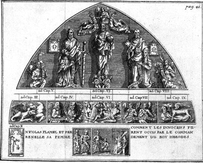</a>
<br><i><font size="-1">cliquez sur l'image pour l'agrandir</font></i>
<br><a  name="FIGURE II"></a><b><font face="Trebuchet MS"><font color="#000066"><font size="-1">FIGURE
II</font></font></font></b>
<br><b><i><font face="Trebuchet MS"><font color="#000066"><font size="-1">(Arche
du Cimeti&egrave;re des Innocents d&eacute;cor&eacute;e aux frais de Nicolas
Flamel, Paris, dans P. Arnauld, Trois Traictez de la philosophie, Paris,
1612)</font></font></font></i></b>
</p><p><i><font face="Trebuchet MS"><font color="#000066"><font size="-1">Note
liminaire : l'orthographe du texte a &eacute;t&eacute; respect&eacute;e
;</font></font></font></i></p></center>
</blockquote>
<font face="Trebuchet MS"><font color="#000066">Lou&eacute;<a  name="1_t"></a><sup><a href="#1">1</a></sup>
soit &eacute;ternellement le Seigneur mon Dieu, qui &eacute;l&egrave;ve
l'Humble de la boue<a  name="2_t"></a><sup><a href="#2.">2</a></sup>, et
fait r&eacute;jo&uuml;ir le c&#339;ur de ceux qui esp&egrave;rent en lui : Qui
ouvre aux Croyans avec gr&acirc;ce les sources de sa b&eacute;nignit&eacute;,
et met sous leurs pieds les cercles mondains<a  name="3_t"></a><sup><a href="#3">3</a></sup>
de toutes les f&eacute;licit&eacute;s terriennes. En lui soit toujours
notre esp&eacute;rance, en sa crainte notre f&eacute;licit&eacute;, en
sa mis&eacute;ricorde la gloire de la r&eacute;paration<a  name="4_t"></a><sup><a href="#4">4</a></sup>
de notre nature, et en la pri&egrave;re notre s&ucirc;ret&eacute; in&eacute;branlable<a  name="5_t"></a><sup><a href="#5">5</a></sup>.
Et vous, &ocirc; Dieu Tout-puissant, comme votre bont&eacute; a daign&eacute;
d'ouvrir en la Terre devant moi, votre indigne Serviteur, tous les Tr&eacute;sors
des Richesses du Monde, qu'il plaise &agrave; votre cl&eacute;mence, lorsque
je ne serai plus au nombre des Vivans, de m'ouvrir encore les Tr&eacute;sors
des Cieux<a  name="6_t"></a><sup><a href="#6">6</a></sup>, et me laisser
contempler votre face divine, dont la Majest&eacute; est un d&eacute;lice
in&eacute;narrable, et dont le ravissement n'est jamais mont&eacute; en
coeur d'Homme vivant. Je vous le demande par le Seigneur J&eacute;sus-Christ
votre Fils bien-aim&eacute;, qui en l'Unit&eacute; du Saint-Esprit vit
avec vous au si&egrave;cle des si&egrave;cles.</font></font>
<p><font face="Trebuchet MS"><font color="#000066">Encore que moi, Nicolas
Flamel, Ecrivain et Habitant de Paris, en cette ann&eacute;e mil trois
cens quatre-vingt-dix-neuf, et demeurant en ma maison en la ru&euml; des
Ecrivains, pr&egrave;s la Chapelle Saint-Jacques de la Boucherie . Encore,
dis-je, que je n'aye appris qu'un peu de Latin, pour le peu de moyens de
mes Parens, qui n&eacute;anmoins &eacute;taient par mes Envieux m&ecirc;mes
estimez Gens de bien, si est-ce que (par la grande gr&acirc;ce de Dieu,
et intercession des bienheureux Saints et Saintes de Paradis, principalement
de Saint Jacques<a  name="7_t"></a><sup><a href="#7">7</a></sup>), je n'ai
pas laiss&eacute; d'entendre au long des Livres des Philosophes, et d'y
apprendre leurs Secrets si cachez. C'est pourquoi il ne sera jamais moment
en ma vie, me souvenant de ce haut lieu, qu'&agrave; genoux (si le lieu
le permet) ou bien dans mon c&#339;ur, de toute mon affection, je n'en rende
gr&acirc;ces &agrave; ce Dieu tr&egrave;s bening, qui ne laisse jamais
l'Enfant du Juste mendier par les portes, et qui ne trompe point ceux qui
esp&egrave;rent enti&egrave;rement en sa b&eacute;n&eacute;diction. Donc,
ainsi qu'apr&egrave;s le d&eacute;c&egrave;s de mes Parens je gagnais ma
vie en notre Art d'Ecriture, faisant des Inventaires, dressant des Comptes,
et arr&ecirc;tant les D&eacute;penses des Tuteurs et Mineurs, il me tomba
entre les mains, pour la somme de deux florins, un Livre dor&eacute;, fort
vieux et beaucoup large<a  name="8_t"></a><sup><a href="#8">8</a></sup>.
Il n'&eacute;toit point de papier ou parchemin, comme sont les autres,
mais il &eacute;toit fait de d&eacute;li&eacute;es &eacute;corces, (comme
il me sembloit) de tendres Arbrisseaux<a  name="9_t"></a><sup><a href="#9">9</a></sup>.
Sa couverture &eacute;toit de cuivre<a  name="10_t"></a><sup><a href="#10">10</a></sup>
bien d&eacute;li&eacute;, toute grav&eacute;e de lettres ou figures &eacute;tranges
; et quant &agrave; moi, je croi qu'elles pouvoient bien &ecirc;tre des
caract&egrave;res Grecs<a  name="11_t"></a><sup><a href="#11">11</a></sup>,
ou d'autre semblable Langue ancienne. Tant y a que je ne les s&ccedil;avois
pas lire, et que je s&ccedil;ai bien qu'elles n'&eacute;toient point notes
ni lettres Latines ou Gauloises ; car j'y entends un peu. Quant au dedans,
ses feuilles d'&eacute;corces &eacute;toient grav&eacute;es, et d'une grande
industrie, &eacute;crites avec un burin de fer<a  name="12_t"></a><sup><a href="#12">12</a></sup>,
en belles et tr&egrave;s nettes lettres Latines color&eacute;es. Il contenoit
trois<a  name="13_t"></a><sup><a href="#13">13</a></sup> fois sept<a  name="14_t"></a><sup><a href="#14">14</a></sup>
feuillets<a  name="15_t"></a><sup><a href="#15">15</a></sup>, le septi&egrave;me
lesquels &eacute;toit toujours sans &eacute;criture. Au lieu de laquelle
il y avoit peint au premier septi&egrave;me une Verge, et des Serpens s'engloutissans<a  name="16_t"></a><sup><a href="#16">16</a></sup>,
au second septi&egrave;me, une Croix, o&ugrave; un Serpent &eacute;toit
crucifi&eacute;<a  name="17_t"></a><sup><a href="#17">17</a></sup> ; au
dernier septi&egrave;me &eacute;toient peints des D&eacute;serts, au milieu
desquels couloient plusieurs belles Fontaines, dont sortoient plusieurs
Serpens, qui couroient par ci et par l&agrave;<a  name="18_t"></a><sup><a href="#18">18</a></sup>.
Au premier des feuillets y avoit &eacute;crit en Lettres grosses capitales
dor&eacute;es <i>Abraham Juif, Prince, Pr&ecirc;tre, L&eacute;vige, Astrologue,
Philosophe, &agrave; la Nation des Juifs, par l'ire de Dieu dispers&eacute;e
aux Gaules </i>SALUT. D.I.<font size="-2"> </font>Apr&egrave;s cela il &eacute;toit
rempli de grandes ex&eacute;crations et mal&eacute;dictions<a  name="19_t"></a><sup><a href="#19">19</a></sup>,
avec ce mot,
<font size="-1">MARANATHA<a  name="20_t"></a></font><sup><a href="#20">20</a></sup><font size="-2">,
(</font>qui y &eacute;toit souvent r&eacute;p&eacute;t&eacute;) contre
toute personne qui jetteroit les yeux dessus, s'il n'&eacute;toit Sacrificateur<a  name="21_t"></a><sup><a href="#21">21</a></sup>
ou Scribe. Celui qui m'avoit vendu ce Livre ne s&ccedil;avoit pas ce qu'il
valloit, aussi peu que moi quand je l'achetai. Je croi qu'il avoit &eacute;t&eacute;
d&eacute;rob&eacute; aux mis&eacute;rables Juifs, ou trouv&eacute; quelque
part cach&eacute; dans l'ancien lieu de leur demeure.</font></font>
</p><p><font face="Trebuchet MS"><font color="#000066">Dans ce Livre, au second
feuillet, il consoloit sa Nation, la conseillant de fu&iuml;r les vices
et sur tout l'Idolatrie, attendant le Messie &agrave; venir avec douce
patience, lequel vaincroit tous les Rois de la Terre, et r&egrave;gneroit
avec son Peuple en gloire &eacute;ternellement. Sans doute, &ccedil;'avoit
&eacute;t&eacute; un Homme fort s&ccedil;avant.</font></font>
</p><p><font face="Trebuchet MS"><font color="#000066">Au troisi&egrave;me
feuillet, et en tous les autres suivans &eacute;crits, pour aider sa captive
Nation &agrave; payer les tributs aux Empereurs Romains, et pour faire
autre chose, que je ne dirai pas, il leur enseignoit la Transmutation M&eacute;tallique<a  name="22_t"></a><sup><a href="#22">22</a></sup>
en parolles communes, peignoit les Vaisseaux<a  name="23_t"></a><sup><a href="#23">23</a></sup>
au c&ocirc;t&eacute;, et avertissoit des Couleurs<a  name="24_t"></a><sup><a href="#24">24</a></sup>
et de tout le reste, hormis du premier Agent<a  name="25_t"></a><sup><a href="#25">25</a></sup>,
dont il ne parloit point ; mais bien, comme il disoit, il le peignoit et
figuroit par tr&egrave;s-grand artifice au quatri&egrave;me et cinqui&egrave;me
feuillets entiers. Car encore qu'il f&ucirc;t bien intelligiblement figur&eacute;
et peint, toutefois, aucun ne l'e&ucirc;t s&ccedil;u comprendre sans &ecirc;tre
fort avanc&eacute; en leur Cabale traditive, et sans avoir bien &eacute;tudi&eacute;
les Livres des Philosophes. Donc, le quatri&egrave;me et cinqui&egrave;me
feuillets &eacute;toient sans &eacute;criture, tout remplis de belles Figures
enlumin&eacute;es, ou peintes, avec grand artifice.</font></font>
</p><p><font face="Trebuchet MS"><font color="#000066">Premi&egrave;rement,
au quatri&egrave;me feuillet il peignoit<a  name="26_t"></a><sup><a href="#26">26</a></sup>
un jeune Homme avec des ailes aux talons, ayant une Verge caduc&eacute;e
en main, entortill&eacute;e de deux Serpens, de laquelle il frappoit un
Casque qui lui couvroit la t&ecirc;te. Il sembloit, &agrave; mon avis,
le Dieu Mercure des Payens. Contre lui venoit courant et volant &agrave;
ailes ouvertes, un grand Vieillard, qui avoit sur la t&ecirc;te une Horloge
attach&eacute;e et en ses mains une faux comme la Mort, de laquelle, terrible
et furieux, il vouloit trancher les pieds &agrave; Mercure.</font></font>
</p><p><font face="Trebuchet MS"><font color="#000066">A l'autre c&ocirc;t&eacute;
du quatri&egrave;me feuillet, il peignoit<a  name="27_t"></a><sup><a href="#27">27</a></sup>
une belle Fleur au sommet d'une Montagne tr&egrave;s haute, que l'Aquilon
&eacute;branloit fort rudement. Elle avoit la tige bleu&euml;, les fleurs
blanches et rouges, les feu&iuml;lles reluisantes comme l'Or fin, &agrave;
l'entour de laquelle les Dragons et Griffons Aquiloniens faisoient leur
nid et leur demeure.</font></font>
</p><p><font face="Trebuchet MS"><font color="#000066">Au cinqui&egrave;me
feillet, il y avoit un beau<a  name="28_t"></a><sup><a href="#28">28</a></sup>
Rosier fleuri au milieu d'un beau Jardin, appuy&eacute; contre un Ch&ecirc;ne
creux ; au pied desquels bou&iuml;llonnoit une Fontaine d'Eau tr&egrave;s-blanche,
qui s'alloit pr&eacute;cipiter dans des ab&icirc;mes, passant n&eacute;anmoins
premi&egrave;rement entre les mains d'infinis Peuples qui fou&iuml;lloient
en terre, la cherchant ; mais parce qu'ils &eacute;toient aveugles, nul
ne la connoissoit, hormis quelqu'un qui en consid&eacute;roit le poids<a  name="29_t"></a><sup><a href="#29">29</a></sup>.</font></font>
</p><p><font face="Trebuchet MS"><font color="#000066">A l'autre page du cinqui&egrave;me
feuillet, il y avoit un Roi avec un grand coutelas<a  name="30_t"></a><sup><a href="#30">30</a></sup>,
qui faisoit tuer en sa pr&eacute;sence par des Soldats grande multitude
de petits Enfans, les M&egrave;res desquels pleuroient aux pieds des impitoyables
Gendarmes, et ce sang &eacute;toit puis apr&egrave;s ramass&eacute; par
d'autres Soldats, et mis dans un grand Vaisseau, dans lequel le Soleil
et la Lune du Ciel se venoient baigner. Et parce que cette Histoire repr&eacute;sentoit
&agrave; peu pr&egrave;s celle des Innocens tuez par H&eacute;rode, et
qu'en ce Livre-ci j'ai appris la plupart de l'Art, &ccedil;'a &eacute;t&eacute;
une des causes pourquoi j'ai mis en leur Cimeti&egrave;re ces Symboles
Hy&eacute;roglifiques de cette secrette Science. Voil&agrave; ce qu'il
y avoit en ces cinq premiers feuillets.</font></font>
</p><p><font face="Trebuchet MS"><font color="#000066">Je ne repr&eacute;senterai
point ce qui &eacute;toit &eacute;crit en beau et tr&egrave;s-intelligible
Latin en tous les autres feuillets &eacute;crits, car Dieu me puniroit,
d'autant que je commetrois plus de m&eacute;chancet&eacute; que celui,
comme on dit, qui d&eacute;siroit que tous les Hommes du Monde n'eussent
qu'une t&ecirc;te, et qu'il la p&ucirc;t couper d'un seul coup.</font></font>
</p><p><font face="Trebuchet MS"><font color="#000066">Donc, ayant chez moi
ce beau Livre, je ne faisois nuit et jour qu'y &eacute;tudier, entendant
tr&egrave;s-bien toutes les Op&eacute;rations qu'il d&eacute;montroit ;
mais ne s&ccedil;achant point avec quelle Mati&egrave;re<a  name="31_t"></a><sup><a href="#31">31</a></sup>
il falloit commencer, ce qui me causoit une grande tristesse, me tenoit
solitaire et faisoit soupirer &agrave; tout moment. Ma Femme Perrenelle,
que j'aimois autant que moi-m&ecirc;me, laquelle j'avais &eacute;pous&eacute;e
depuis peu, en &eacute;toit toute &eacute;tonn&eacute;e, me consolant et
demandant de tout son courage si elle me pourroit d&eacute;livrer de f&acirc;cherie.
Je ne pus jamais tenir ma langue, que je ne lui disse tout, et ne lui montrasse
ce beau Livre, duquel elle fut autant amoureuse que moi-m&ecirc;me, prenant
un extr&ecirc;me plaisir &agrave; contempler ces belles Couvertures, Gravures,
Images et Portraits, &agrave; quoi elle entendoit aussi peu que moi. Toutefois
ce m'&eacute;toit une grande consolation d'en parler avec elle, et de m'entretenir<a  name="32_t"></a><sup><a href="#32">32</a></sup>
de ce qu'il faudroit faire pour en avoir l'interpr&eacute;tation.</font></font>
</p><p><font face="Trebuchet MS"><font color="#000066">Enfin je fis peindre
le plus au naturel que je pus dans mon logis toutes ces Figures du quatri&egrave;me
et cinqui&egrave;me feuillets, que je montrai &agrave; Paris &agrave; plusieurs
S&ccedil;avants, qui n'y entendirent pas plus que moi. Je les avertissois
m&ecirc;me que cela avoit &eacute;t&eacute; trouv&eacute; dans un Livre
qui enseignoit la Pierre Philosophale ; mais la plupart se mocqu&egrave;rent
de moi et de la b&eacute;nite Pierre, hormis un, appell&eacute; M. Anseaulme<a  name="33_t"></a><sup><a href="#33">33</a></sup>,
qui &eacute;toit Licenci&eacute; en M&eacute;decine, lequel &eacute;tudioit
fort en cette Science. Il avoit grande envie de voir mon Livre, et n'y
eut chose qu'il ne f&icirc;t pour le voir ; mais je l'assurai toujours
que je ne l'avois point ; bien lui fis-je une grande description de sa
M&eacute;thode. Il disoit que le premier repr&eacute;sentoit le Temps<a  name="34_t"></a><sup><a href="#34">34</a></sup>,
qui d&eacute;voroit tout, et qu'il falloit l'espace de six ans, selon les
six feuillets &eacute;crits, pour parfaire la Pierre ; soutenoit qu'alors
il falloit tourner l'Horloge<a  name="35_t"></a><sup><a href="#35">35</a></sup>,
et ne cuire plus. Et quand je lui disois que cela n'&eacute;toit peint
que pour d&eacute;montrer et enseigner le premier Agent (comme il &eacute;toit
dit dans le Livre) il r&eacute;pondoit que cette coction de six ans<a  name="36_t"></a><sup><a href="#36">36</a></sup>
&eacute;toit comme un second Agent. Que v&eacute;ritablement le premier
Agent y &eacute;toit peint, qui &eacute;toit l'Eau blanche et pesante<a  name="37_t"></a><sup><a href="#37">37</a></sup>,
qui sans doute &eacute;toit le Vif-argent, que l'on ne pouvoit fixer, ni
lui couper les pieds, c'est-&agrave;-dire lui &ocirc;ter la volatilit&eacute;,
que par cette longue d&eacute;coction dans un Sang tr&egrave;s-pur de jeunes
Enfans ; que dans ce Sang ce Vif-argent, se conjoignant avec l'Or et l'Argent,
se convertissoit premi&egrave;rement avec eux en une Herbe semblable &agrave;
celle qui &eacute;toit peinte ; puis apr&egrave;s, par corruption, en Serpens,
lesquels &eacute;tant apr&egrave;s enti&egrave;rement dess&eacute;chez
et cuits par le feu se r&eacute;duiroient en Poudre d'Or, qui feroit la
Pierre.</font></font>
<br><font face="Trebuchet MS"><font color="#000066">Cela fut cause que
durant le long espace de vingt-un ans, je fis mille brouilleries, non toutefois
avec le Sang, ce qui est m&eacute;chant et vilain. Car je trouvois dans
mon Livre que les Philosophes appeloient <i>Sang l'Esprit min&eacute;ral<a  name="38_t"></a><sup><a href="#38">38</a></sup>
qui est dans les M&eacute;taux, principalement dans le Soleil, la Lune
et le Mercure, </i>&agrave; l'assemblage desquels je tendois toujours.
Aussi ces interpr&eacute;tations, pour la plupart, &eacute;toient plus
subtiles que v&eacute;ritables. Ne voyant donc jamais en mon Op&eacute;ration
les signes au tems &eacute;crit dans mon Livre, j'&eacute;tois toujours
&agrave; recommencer. Enfin, ayant perdu l'esp&eacute;rance de jamais comprendre
ces Figures, je fis un v&#339;u &agrave; Dieu, et &agrave; S. Jacques de Galice<a  name="39_t"></a><sup><a href="#39">39</a></sup>,
pour demander l'interpr&eacute;tation d'icelles &agrave; quelque Pr&ecirc;tre
Juif, en quelqu'une des Synagogues d'Espagne. Donc, avec le consentement
de Perrenelle, portant sur moi l'extrait de ces Figures, ayant pris l'habit
et le bourdon<a  name="40_t"></a><sup><a href="#40">40</a></sup>, en la
m&ecirc;me fa&ccedil;on qu'on me peut voir au dehors de cette m&ecirc;me
Arche en laquelle je mets ces Figures Hy&eacute;roglifiques par dedans
le Cimeti&egrave;re, o&ugrave; j'ai aussi mis contre la muraille, d'un
et d'autre c&ocirc;t&eacute;, une Procession o&ugrave; sont repr&eacute;sent&eacute;es
par ordre toutes les Couleurs de la Pierre, ainsi qu'elles viennent et
finissent avec cette &eacute;criture Fran&ccedil;oise.<i> Moult plait &agrave;
Dieu Procession S'elle est faite en d&eacute;votion.</i></font></font>
</p><p><font face="Trebuchet MS"><font color="#000066">Ce qui est quasi le
commencement du Livre du Roi Hercules traitant des Couleurs de la Pierre,
intitul&eacute; <i>l'Iris, </i>en ces termes : <i>Operis processio multum
naturae placet, etc., </i>que j'ai mis l&agrave; tout expr&egrave;s pour
les S&ccedil;avants qui entendront l'allusion. Donc en cette m&ecirc;me
fa&ccedil;on je me mis en chemin, et enfin j'arrivai &agrave; Mont-joye<a  name="41_t"></a><sup><a href="#41">41</a></sup>,
et puis &agrave; S.Jacques<a  name="42_t"></a><sup><a href="#42">42</a></sup>,
o&ugrave; avec grande d&eacute;votion j'accomplis mon voeu. Cela fait,
au retour je rencontrai dans L&eacute;on un Marchand de Boulogne, qui me
fit conno&icirc;tre &agrave; un M&eacute;decin Juif de Nation, et lors
Chr&eacute;tien, qui y demeuroit, et qui &eacute;toit fort s&ccedil;avant,
appell&eacute; Ma&icirc;tre Canches<a  name="43_t"></a><sup><a href="#43">43</a></sup>.
Quand je lui eus montr&eacute; les Figures de mon extrait, ravi de grand
&eacute;tonnement et de joye, il me demanda incontinent si je s&ccedil;avois
des nouvelles du Livre duquel elles &eacute;toient tir&eacute;es. Je lui
r&eacute;pondis en Latin, comme il m'avoit interrog&eacute;, que j'avois
esp&eacute;rance d'en avoir de bonnes nouvelles, si quelqu'un me d&eacute;chiffroit
ces Enigmes. Tout &agrave; l'instant, emport&eacute; de grande ardeur et
joye, il commen&ccedil;a cie m'en d&eacute;chiffrer le commencement. Or
pour n'&ecirc;tre long, il &eacute;toit tr&egrave;s-content d'apprendre
des nouvelles o&ugrave; &eacute;toit ce Livre, et moi de l'en o&uuml;ir
parler. Et certes il en avoit o&uuml;i discourir bien au long ; mais comme
d'une chose qu'on croyait enti&egrave;rement perdu&euml;, comme il disoit.
Nous r&eacute;sol&ucirc;mes notre voyage, et de L&eacute;on nous pass&acirc;mes
&agrave; Ovi&eacute;do, et de l&agrave; &agrave; Sanson, o&ugrave; nous
nous m&icirc;mes sur Mer pour venir en France. Notre voyage avoit &eacute;t&eacute;
assez heureux, et d&eacute;j&agrave;, depuis que nous &eacute;tions entrez
en ce Royaume, il m'avoit tr&egrave;s-v&eacute;ritablement interpr&eacute;t&eacute;
la plupart de mes Figures, o&ugrave; jusqu'aux points m&ecirc;me il trouvoit
de grands mist&egrave;res, (ce que je trouvois fort merveilleux), quand,
arrivans &agrave; Orl&eacute;ans, ce s&ccedil;avant Homme tomba extr&ecirc;mement
malade, afflig&eacute; de tr&egrave;s-grands vomissements<a  name="44_t"></a><sup><a href="#44">44</a></sup>,
qui lui &eacute;toient restez de ceux qu'il avoit soufferts sur la Mer.
Il craignoit tellement que je le quittasse, qu'il ne se peut imaginer rien
de semblable. Et bien que je fusse toujours &agrave; ses c&ocirc;t&eacute;s,
si m'appelloit-il incessamment. Enfin il mourut sur la fin du septi&egrave;me<a  name="45_t"></a><sup><a href="#45">45</a></sup>
jour de sa maladie, dont je fus fort afflig&eacute;. Au mieux que je pus
je le fis enterrer en l'Eglise de Sainte Croix &agrave; Orl&eacute;ans,
o&ugrave; il repose encore. Dieu aye son &acirc;me, car il mourut bon Chr&eacute;tien.
Et certes si je ne suis emp&ecirc;ch&eacute; par la mort, je donnerai &agrave;
cette Eglise quelques Rentes pour faire dire pour son &acirc;me tous les
jours quelques Messes.</font></font>
</p><p><font face="Trebuchet MS"><font color="#000066">Qui voudra voir l'&eacute;tat
de mon arriv&eacute;e, et la joye de Perrenelle, qu'il nous contemple tous
deux en cette Ville de Paris sur la Porte de la Chapelle de S.Jacques de
la Boucherie, du c&ocirc;t&eacute; et tout aupr&egrave;s de ma maison,
o&ugrave; nous sommes peints, moi rendant gr&acirc;ces aux pieds de S.
Jacques de Galice, et Perrenelle &agrave; ceux de S.Jean, qu'elle avoit
si souvent invoqu&eacute;. Tant y a que par la gr&acirc;ce de Dieu et l'incercession
de la bienheureuse et Sainte Vierge, je s&ccedil;&ucirc;s ce que je d&eacute;sirois,
c'est-&agrave;-dire <i>les premiers Principes<a  name="46_t"></a><sup><a href="#46">46</a></sup>,
</i>non
toutefois leur premi&egrave;re Pr&eacute;paration<a  name="47_t"></a><sup><a href="#47">47</a></sup>,
qui est une chose tr&egrave;s-difficile sur toutes celles du Monde. Mais
je l'eus &agrave; la fin apr&egrave;s les longues erreurs de trois ans
ou environ, durant lequel tems je ne fis qu'&eacute;tudier et travailler
; ainsi qu'on me peut voir hors de cette Arche (o&ugrave; j'ai mis des
Processions contre les deux Pilliers d'icelle) sous les pieds de S.Jacques
et de S.Jean, priant toujours Dieu, le Chapelet en main, lisant tris attentivement
dans un Livre, et pesant les mots des Philosophes, et essayant puis apr&egrave;s
les diverses Op&eacute;rations que je m'imaginois par leurs seuls mots.</font></font>
</p><p><font face="Trebuchet MS"><font color="#000066">Enfin je trouvai ce
que je d&eacute;sirois, ce que je reconnus aussit&ocirc;t par la senteur
forte<a  name="48_t"></a><sup><a href="#48">48</a></sup>. Ayant cela, j'accomplis
ais&eacute;ment le Magist&egrave;re. Aussi, s&ccedil;achant la Pr&eacute;paration
des premiers Agens, suivant apr&egrave;s &agrave; la lettre mon Livre,
je n'eusse pu faillir encore que je l'eusse voulu. Donc la premi&egrave;re
fois que je fis la Projection, ce fut sur du Mercure, dont j'en convertis
demi livre ou environ en pur Argent<a  name="49_t"></a><a href="#49">49</a>,
meilleur que celui de la Mini&egrave;re comme j'ai essay&eacute; et fait
essayer par plusieurs fois. Ce fut le 17 de Janvier, un Lundi environ midi,
en ma maison, en pr&eacute;sence de Perrenelle seule, l'An mil trois cens
quatre-vingt deux. Et puis apr&egrave;s, en suivant toujours de mot &agrave;
mot mon Livre, je la fis avec la Pierre rouge, sur semblable quantit&eacute;
de Mercure, en pr&eacute;sence encore de Perrenelle seule, en la m&ecirc;me
maison, le vingt-cinqui&egrave;me jour d'Avril suivant de la m&ecirc;me
ann&eacute;e, sur les cinq heures du soir, que je transmuai v&eacute;ritablement
en quasi autant de pur Or, meilleur certainement que l'Or commun, plus
doux et plus ployable. Je le peux dire avec v&eacute;rit&eacute;. Je l'ai
parfaite trois fois avec l'aide de Perrenelle, qui l'entendoit aussi bien
que moi, pour m'avoir aid&eacute; aux Op&eacute;rations ; et sans doute,
si elle e&ucirc;t voulu entreprendre de la faire toute seule, elle en seroit
venu&euml; &agrave; bout. J'en avois bien assez la faisant une seule fois
; mais je prenais tr&egrave;s-grand plaisir &agrave; voir et contempler
dans les Vaisseaux les &#338;uvres admirables de la Nature.</font></font>
</p><p><font face="Trebuchet MS"><font color="#000066">Pour te signifier comme
je l'ai faite trois fois, tu verras en cette Arche, si tu le s&ccedil;ais
conno&icirc;tre, trois Fourneaux semblables &agrave; ceux qui servent &agrave;
nos Op&eacute;rations.</font></font>
</p><p><font face="Trebuchet MS"><font color="#000066">J'eus crainte longtemps
que Perrenelle ne p&ucirc;t cacher la joye de sa f&eacute;licit&eacute;
extr&ecirc;me, que je mesurois par la mienne, et qu'elle ne l&acirc;ch&acirc;t
quelque parole &agrave; ses Parens des grands Tr&eacute;sors que nous poss&eacute;dions
; car l'extr&ecirc;me joye &ocirc;te le sens, aussi bien que la grande
tristesse. Mais la bont&eacute; du tr&egrave;s-grand Dieu ne m'avoit pas
combl&eacute; de cette seule b&eacute;n&eacute;diction que de me donner
une Femme chaste et sage, elle &eacute;toit encore non seulement capable
de raison, mais aussi de parfaire ce qui &eacute;toit raisonnable, et plus
discrette et secrette que le commun des autres Femmes. Sur tout elle &eacute;toit
fort d&eacute;vote ; c'est pourquoi, se voyant sans esp&eacute;rance d'Enfans,
et d&eacute;j&agrave; bien avant sur l'&acirc;ge, elle commen&ccedil;a
tout de m&ecirc;me que moi &agrave; penser &agrave; Dieu, et &agrave; vacquer
aux &#339;uvres de mis&eacute;ricorde.</font></font>
</p><p><font face="Trebuchet MS"><font color="#000066">Lorsque j'&eacute;crivois
ce Commentaire, en l'An mil quatre cent treize, sur la fin de l'An, apr&egrave;s
le tr&eacute;pas de ma fidelle Compagne, que je regr&eacute;terai tous
les jours de ma vie, elle et moi avions d&eacute;j&agrave; fond&eacute;
et rent&eacute; quatorze Hopitaux en cette Ville de Paris ; b&acirc;ti
tout de neuf trois Chapelles<a  name="50_t"></a><sup><a href="#50">50</a></sup>
; d&eacute;cor&eacute; de grands dons et bonnes rentes sept Eglises, avec
plusieurs r&eacute;parations en leurs Cimeti&egrave;res, outre ce que nous
avions fait &agrave; Bologne, qui n'est gu&egrave;re moins que ce que nous
avons fait ici. Je ne parlerai point du bien que nous avons fait ensemble
aux pauvres Particuliers, principalement aux Veuves et pauvres Orphelins.
Si je disois leur nom, et comment je faisois cela, outre que le salaire
ne m'en seroit pas donn&eacute; en ce Monde, je pourrois faire d&eacute;plaisir
&agrave; ces bonnes Personnes (que Dieu veu&iuml;lle b&eacute;nir), ce
que je ne voudrois faire pour rien du monde.</font></font>
</p><p><font face="Trebuchet MS"><font color="#000066">B&acirc;tissant donc
ces Eglises, Cimeti&egrave;res et H&ocirc;pitaux en cette Ville, je me
r&eacute;solus de faire peindre en la quatri&egrave;me <a href="#FIGURE%20II">Arche</a>
du Cimeti&egrave;re des Innocens (entrant par la grande porte de la ru&euml;
S. Denis, en prenant la main droite) les plus vraies et essentielles marques
de l'Art, sous n&eacute;anmoins des voiles et couvertures Hi&eacute;roglyfiques
&agrave; l'imitation de celles du Livre dor&eacute; du Juif Abraham, pouvant
repr&eacute;senter deux choses selon la capacit&eacute; et s&ccedil;avoir
de ceux qui le.; verront : premi&egrave;rement les Mist&egrave;res de notre
R&eacute;surrection future et indubitable, au jour du Jugement et Av&egrave;nement
du bon J&eacute;sus (auquel plaise nous faire mis&eacute;ricorde), histoire
qui convient bien &agrave; un Cimeti&egrave;re. Et puis apr&egrave;s encore,
pouvant signifier &agrave; ceux qui sont entendus en la Philosophie Naturelle
toutes les principales et n&eacute;cessaires Op&eacute;rations du Magist&egrave;re.</font></font>
</p><p><font face="Trebuchet MS"><font color="#000066">Ces Figures Hi&eacute;roglyfiques
serviront comme de deux chemins pour mener &agrave; la vie c&eacute;leste.
Le premier sens plus ouvert, enseignant les sacr&eacute;s Mist&egrave;res
de notre Salut, ainsi que je d&eacute;montrerai ci-apr&egrave;s. Et l'autre,
enseignant &agrave; tout Homme, pour peu entendu qu'il soit en la Pierre,
la droite voye de l'&#338;uvre, laquelle &eacute;tant parfaite par quelqu'un,
le change de mauvais en bon, lui &ocirc;te la racine de tout p&eacute;ch&eacute;
(qui est l'Avarice) le faisant lib&eacute;ral, doux, pieux, religieux et
craignant Dieu, quelque mauvais qu'il f&ucirc;t auparavant. Car apr&egrave;s
cela il demeure toujours ravi dans la grande gr&acirc;ce et mis&eacute;ricorde
qu'il a obtenu&euml; de Dieu, et de la profondeur de ses &#338;uvres divines
et admirables. Ce sont les causes qui m'ont oblig&eacute; &agrave; mettre
ces Figures en cette fa&ccedil;on, et en ce Lieu, qui est un Cimeti&egrave;re,
afin que si quelqu'un obtient ce bien inestimable que de conqu&eacute;rir
cette riche Toison, il pense comme moi de ne tenir point le talent de Dieu
cach&eacute; dans la terre, achetant Terres et Possessions, qui font les
vanit&eacute;s de ce Monde ; mais plut&ocirc;t de secourir charitablement
ses Fr&egrave;res, se souvenant d'avoir appris ce Secret parmi les ossemens
des Morts, avec lesquels il se doit bient&ocirc;t trouver, et qu'apr&egrave;s
cette vie passag&egrave;re, il faudra rendre compte devant un juste et
redoutable Juge, qui censurera jusqu'&agrave; la parole oiseuse et vaine.</font></font>
</p><p><font face="Trebuchet MS"><font color="#000066">Que donc celui, qui
ayant pes&eacute; mes mots, et bien connu et entendu mes Figures (s&ccedil;achant
d'ailleurs les premiers Principes et Agents, car certainement il n'en trouvera
aucun vestige ou enseignement en ces Figures et Commentaires) fasse &agrave;
la gloire de Dieu le Magist&egrave;re d'Herm&egrave;s, se souvenant de
l'Eglise Catholique, Apostolique et Romaine, et de toutes les autres Eglises,
Cimeti&egrave;res et H&ocirc;pitaux, et sur tout de l'Eglise des SS.Innocens
de cette Ville, au Cimeti&egrave;re de laquelle il aura contempl&eacute;
ces v&eacute;ritables d&eacute;monstrations, ouvrant tr&egrave;s-largement
sa bourse aux pauvres Honteux<a  name="51_t"></a><sup><a href="#51">51</a></sup>,
Gens de bien d&eacute;solez<a  name="52_t"></a><sup><a href="#52">52</a></sup>,
Infirmes<a  name="53_t"></a><sup><a href="#53">53</a></sup>, Femmes veuves<a  name="54_t"></a><sup><a href="#54">54</a></sup>et
pauvres Orphelins<a  name="55_t"></a><sup><a href="#55">55</a></sup>. Ainsi
soit-il.</font></font>
<br>
</p><hr>
<center>
<p><a  name="Des Interpr&eacute;tations Th&eacute;ologiques qu'on peut donner"></a><b><font face="Trebuchet MS"><font color="#000066"><font size="-1">Des
Interpr&eacute;tations Th&eacute;ologiques qu'on peut donner &agrave; ces
Hi&eacute;roglyphes, selon mon sens.</font></font></font></b>
</p><p><a  name="CHAPITRE PREMIER"></a><u><font face="Trebuchet MS"><font color="#000066"><font size="+2">CHAPITRE
PREMIER</font></font></font></u></p></center>

<p><font face="Trebuchet MS"><font color="#000066">J'ai donn&eacute; &agrave;
ce Cimeti&egrave;re un Charnier qui est vis-&agrave;-vis de cette quatri&egrave;me
Arche, le Cimeti&egrave;re au milieu : et contre l'un des Pilliers de ce
Charnier, j'ai fait crayonner et peindre grossi&egrave;rement un Homme
tout noir<a  name="56_t"></a><sup><a href="#56">56</a></sup>, qui regarde
ces Hi&eacute;roglyphes, &agrave; l'entour duquel il y a &eacute;crit en
Fran&ccedil;ais : Je voi merveille, dont moult je m'ebahis. Cela et encore
trois Plaques de fer<a  name="57_t"></a><sup><a href="#57">57</a></sup>
et cuivre dor&eacute;<a  name="58_t"></a><sup><a href="#58">58</a></sup>,
&agrave; l'Orient, Occident et Midi de l'Arche, o&ugrave; sont ces Hi&eacute;roglyphes,
le Cimeti&egrave;re au milieu, repr&eacute;sentans la sainte Passion et
R&eacute;surrection du Fils de Dieu, cela, dis-je, ne doit point &ecirc;tre
autrement interpr&eacute;t&eacute; que selon le Sens commun Th&eacute;ologique,
si ce n'est que cet Homme noir peut aussi bien crier merveille de voir
les oeuvres admirables de Dieu en la Transmutation des M&eacute;taux, qui
sont figur&eacute;es en ces Hi&eacute;roglyphes, qu'il regarde si attentivement,
que de voir enterrer tant de corps morts, qui se l&egrave;veront hors de
leurs Tombeaux au jour redoutable du Jugement<a  name="59_t"></a><sup><a href="#59">59</a></sup>.
D'ailleurs, je ne pense point qu'il faille expliquer en Sens Th&eacute;ologique
ce Vaisseau de terre<a  name="60_t"></a><sup><a href="#60">60</a></sup>
&agrave; la main droite de ces Figures, dans lequel il y a une Ecritoire,
ou plut&ocirc;t un Vaisseau de Philosophie (si on en &ocirc;te les liens
et que l'on joigne le canon au cornet), non plus que les deux autres Vaisseaux
semblables, qui sont aux c&ocirc;t&eacute;s des Figures de S. Pierre et
de S. Paul, dans l'un desquels il y a une N. qui veut dire Nicolas, et
dans l'autre une F. qui veut dire Flamel. Car ces Vaisseaux ne signifient
rien sinon que dans de semblables j'ai fait par trois fois le Magist&egrave;re.</font></font>
<br><font face="Trebuchet MS"><font color="#000066">Qui voudra aussi croire
que j'ai mis ces Vaisseaux en forme d'Armoires<a  name="61_t"></a><sup><a href="#61">61</a></sup>,
pour y faire repr&eacute;senter celle Ecritoire et les lettres Capitales
de mon nom, qu'il le croye s'il veut, parce que toutes ces deux interpr&eacute;tations
sont v&eacute;ritables.</font></font>
</p><p><font face="Trebuchet MS"><font color="#000066">Il ne faut point aussi
interpr&eacute;ter en Sens Th&eacute;ologique cette &eacute;criture qui
suit en ces termes, Nicolas Flamel et Perrenelle sa Femme, d'autant qu'elle
ne signifie autre chose, sinon que moi et ma Femme avons fait b&acirc;tir
cette Arche.</font></font>
</p><p><font face="Trebuchet MS"><font color="#000066">Quant aux troisi&egrave;me,
quatri&egrave;me et cinqui&egrave;me Tableaux suivans, au bas desquels
il y a &eacute;crit, Comment les Innocens furent occis par le commandement
du Roi Herodes, le Sens Th&eacute;ologique s'y entend aussi assez par cette
&eacute;criture ; il faut seulement parler du reste qui est au-dessus.</font></font>
</p><center>
<p>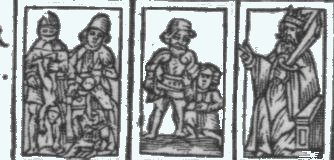
<br><b><i><font face="Trebuchet MS"><font size="-1">FIGURE 1</font></font></i></b>
<br><b><i><font face="Trebuchet MS"><font size="-1">(le massacre des Innocents)</font></font></i></b></p></center>

<p><font face="Trebuchet MS"><font color="#000066">Les deux Dragons unis,
et l'un dans l'autre, de couleur noire et bleu&euml;<a  name="62_t"></a><sup><a href="#62">62</a></sup>,
en Champ de Sable, c'est-&agrave;-dire noir, dont l'un a des ailes dor&eacute;es,
et l'autre n'en a point, sont les p&eacute;ch&eacute;s, qui naturellement
s'entretiennent ; car l'un a sa naissance de l'autre. De ces p&eacute;ch&eacute;s,
les uns peuvent &ecirc;tre chassez ais&eacute;ment<a  name="63_t"></a><sup><a href="#63">63</a></sup>,
comme ils viennent ais&eacute;ment ; car ils volent &agrave; toute heure
vers nous. Mais ceux qui n'ont point d'ailes ne peuvent &ecirc;tre chassez,
ainsi qu'est le p&eacute;ch&eacute; contre le S. Esprit. Cet Or des ailes
signifie que la plupart de ces p&eacute;ch&eacute;s viennent de la sacr&eacute;e
faim de l'Or, qui rend tant de Personnes attentives, et qui leur fait si
attentivement penser d'o&ugrave; ils en pourront avoir. Et la couleur noire
et bleu&euml;<a  name="64_t"></a><sup><a href="#64">64</a></sup> d&eacute;montre
que ce sont des d&eacute;sirs qui sortent du t&eacute;n&eacute;breux puits
d'enfer, lesquels nous devons enti&egrave;rement fuir. Ces deux Dragons
peuvent encore repr&eacute;senter moralement les L&eacute;gions des malins
Esprits, qui sont toujours &agrave; l'entour de nous, et qui nous accuseront
devant le juste Juge au jour redoutable du Jugement, lesquels ne demandent
qu'&agrave; nous cribler<a  name="65_t"></a><sup><a href="#65">65</a></sup>.</font></font>
<br><font face="Trebuchet MS"><font color="#000066">L'Homme et la Femme,
qui viennent apr&egrave;s, de couleur orang&eacute;e<a  name="66_t"></a><sup><a href="#66">66</a></sup>
sur un Champ azur&eacute; et bleu, signifient que l'Homme et la Femme<a  name="67_t"></a><sup><a href="#67">67</a></sup>
ne doivent pas avoir leur espoir en ce Monde (car l'orange marque d&eacute;sespoir)
ou laisser toute esp&eacute;rance ici. Et la couleur azur&eacute;e et bleu&euml;,
sur laquelle ils sont peints, repr&eacute;sente qu'il faut penser aux choses
c&eacute;lestes futures et dire comme le Rouleau de l'Homme, Homo veniet
ad Judicium Dei, c'est-&agrave;-dire, l'Homme viendra au Jugememt de Dieu.
Ou comme celui de la Femme, Vere illa dies tenibilis erit, c'est-&agrave;-dire,
Certes ce jour sera terrible, afin que nous gardans des Dragons, qui sont
les p&eacute;ch&eacute;s, Dieu nous fasse mis&eacute;ricorde.</font></font>
<br><font face="Trebuchet MS"><font color="#000066">Ensuite de cela, en
Champ de Synople, c'est-&agrave;-dire vert sont peints deux Hommes et une
Femme ressuscitans, desquels l'un sort d'un S&eacute;pulcre<a  name="68_t"></a><sup><a href="#68">68</a></sup>,
les deux autres de la Terre ; tous trois de couleur tr&egrave;s-blanche
et pure<a  name="69_t"></a><sup><a href="#69">69</a></sup>, levant les mains
devant leurs yeux vers le Ciel, sur lesquels il y a deux Anges sonnans
des Instruments musicaux, comme s'ils avoienf appell&eacute; ces Morts
au jour du Jugement. Car au-dessus des deux Anges est la figure de notre
Seigneur J&eacute;sus-Christ, tenant le Monde<a  name="70_t"></a><sup><a href="#70">70</a></sup>
en sa main, sur la t&ecirc;te duquel un Ange met une Couronne, assist&eacute;
de deux autres, qui disent en leurs Rouleaux, &ocirc; Pater omnipotens,
&ocirc; J&eacute;sus bone ! O P&egrave;re tout puissant, &ocirc; bon J&eacute;sus
!</font></font>
<br><font face="Trebuchet MS"><font color="#000066">Au c&ocirc;t&eacute;
droit du Sauveur est peint S. Paul, v&ecirc;tu de blanc orang&eacute;,
avec une &eacute;p&eacute;e<a  name="71_t"></a><sup><a href="#71">71</a></sup>,
aux pieds duquel est un Homme v&ecirc;tu d'une robe orang&eacute;e, en
laquelle apparoissent des plis noirs et blancs, qui me ressemble au vif,
lequel demande pardon de ses p&eacute;ch&eacute;s, tenant les mains jointes,
desquelles sortent ces paroles &eacute;crites en un Rouleau, Dele mala
quae feci : &ocirc;tez les maux que j'ai faits. De l'autre c&ocirc;t&eacute;,
&agrave; la main gauche, est S. Pierre avec sa clef<a  name="72_t"></a><sup><a href="#72">72</a></sup>,
v&ecirc;tu de rouge orang&eacute;, tenant la main sur une Femme v&ecirc;t&uuml;e
d'une robe orang&eacute;e qui est &agrave; ses genoux, repr&eacute;sentant
au vif Perrenelle, laquelle tient les mains jointes, ayant un Rouleau o&ugrave;
est &eacute;crit Christe precor esto pius : &ocirc; Christ soyez moi mis&eacute;ricordieux
; derri&egrave;re laquelle il y a un Ange &agrave; genoux avec un Rouleau,
qui dit : Salve Domine Angelorum : je vous salue, &ocirc; Seigneur des
Anges. Il y aussi un autre Ange &agrave; genoux derri&egrave;re mon Image
du c&ocirc;t&eacute; de S. Paul. Qui tient aussi un Rouleau, disant : O
Rex sempi-terne ! &ocirc; Roi &eacute;ternel ! Tout cela est tr&egrave;s-clair,
selon l'explication de la R&eacute;surrection du Jugement futur, qu'on
y peut ais&eacute;ment adapter : aussi il semble que cette Arche n'ait
&eacute;t&eacute; peinte que pour repr&eacute;senter cela, c'est pourquoi
il ne s'y faut point arr&ecirc;ter davantage, puisque les moindres et les
plus Ignorais lui s&ccedil;auront bien donner cette interpr&eacute;tation.</font></font>
<br><font face="Trebuchet MS"><font color="#000066">Apr&egrave;s les trois
Ressuscitans, viennent deux Anges de couleur orang&eacute;e encore, sur
un Champ bleu, disans en leurs Rouleaux : Surgite Mortui, venite ad Judicium
Domini mei : morts levez-vous, venez au Jugement de mon Seigneur. Cela
encore sert &agrave; l'interpr&eacute;tation de la R&eacute;surrection.
Tout de m&ecirc;me que les Figures suivantes et derni&egrave;res, qui sont
un Champ violet de l'Homme rouge-vermillon<a  name="73_t"></a><sup><a href="#73">73</a></sup>,
qui tient le pied d'un Lion peint de rouge-vermillon aussi, qui a des ailes,
ouvrant la gueule comme pour d&eacute;vorer. Car on peut dire que celui-l&agrave;
repr&eacute;sente le malheureux P&eacute;cheur qui, dormant<a  name="74_t"></a><sup><a href="#74">74</a></sup>
l&eacute;thargiquement dans la corruption des vices, meurt sans repentance
et confession, lequel sans doute, en ce Jour terrible, sera livr&eacute;
au Diable, ici peint en forme de Lion rouge rugissant, qui l'engloutira
et emportera.</font></font>
<br>
</p><hr>
<center>
<p><a  name="Les Interpr&eacute;tations Philosophiques selon le"></a><b><font face="Trebuchet MS"><font color="#000066"><font size="-1">Les
Interpr&eacute;tations Philosophiques selon le Magist&egrave;re d'Herm&egrave;s.</font></font></font></b>
</p><p><a  name="CHAPITRE II"></a><u><font face="Trebuchet MS"><font color="#000066"><font size="+2">CHAPITRE
II</font></font></font></u></p></center>

<p><font face="Trebuchet MS"><font color="#000066">Je d&eacute;sire de
tout mon cour que celui qui cherche ce Secret des Sages, ayant repass&eacute;
en son esprit ces Id&eacute;es de la Vie et R&eacute;surrection future,
fasse premi&egrave;rement son profit d'icelles. Qu'en second lieu, il soit
plus avis&eacute; qu'auparavant, qu'il sonde et approfondisse mes Figures,
Couleurs et Rouleaux ; notamment mes Rouleaux<a  name="75_t"></a><sup><a href="#75">75</a></sup>,
parce qu'en cet Art on ne parle point vulgairement. Qu'il demande apr&egrave;s
en soi-m&ecirc;me pourquoi la Figure de S. Paul est &agrave; la main droite,
au lieu o&ugrave; on a co&ucirc;tume de peindre S. Pierre, et celle de
S. Pierre, au lieu de S. Paul<a  name="76_t"></a><sup><a href="#76">76</a></sup>.
Pourquoi la Figure de S. Paul est v&ecirc;tu&euml; de couleur blanche orang&eacute;e,
et celle de S. Pierre d'orang&eacute; rouge<a  name="77_t"></a><sup><a href="#77">77</a></sup>
; Pourquoi aussi l'Homme et la Femme qui sont aux pieds de ces deux Saints,
prians Dieu comme s'ils &eacute;toient au jour du Jugement, sont habillez
de couleurs diverses, et ne sont pas nus en ossemens comme ressuscitans<a  name="78_t"></a><a href="#78">78</a>.
Pourquoi en ce jour du Jugement on a peint cet Homme et cette Femme aux
pieds des Saints ; car ils doivent &ecirc;tre plus bas en Terre, et non
au Ciel<a  name="79_t"></a><sup><a href="#79">79</a></sup>. Pourquoi aussi
les deux Anges orang&eacute;s, qui disent en leurs Rouleaux, Surgite Mortui,
venite ad Judicium Domini mei, c'est-&agrave;-dire, Morts levez-vous, venez
au Jugement de mon Seigneur, sont v&ecirc;tus de cette couleur, et hors
de leur place ; car elle doit &ecirc;tre en haut du Ciel, avec les deux
autres qui sonnent des Instrumens. Pourquoi ils ont un Champ violet et
bleu<a  name="80_t"></a><sup><a href="#80">80</a></sup> ; mais, principialement,
pourquoi leur Rouleau, qui parle aux Morts, finit en la gueule ouverte
du Lion rouge et volant<a  name="81_t"></a><sup><a href="#81">81</a></sup>.
Je voudroie donc qu'apr&egrave;s ces questions et plusieurs autres, qu'on
peut justement faire, ouvrant enti&egrave;rement les yeux de l'Esprit,
il v&icirc;nt &agrave; conclure que cela n'ayant point &eacute;t&eacute;
fait sans cause, on doit avoir repr&eacute;sent&eacute; sous leur &eacute;corce
quelques grands Secrets qu'il doit prier Dieu de lui d&eacute;couvrir.</font></font>
</p><p><font face="Trebuchet MS"><font color="#000066">Ayant ainsi conduit
sa cr&eacute;ance par degr&eacute;s, je souhaite encore qu'il croie que
ces Figures et Explications ne sont point faites pour ceux qui n'ont jamais
vu les Livres des Philosophes, et qui, ignorans les Principes M&eacute;talliques,
ne peuvent &ecirc;tre nommez Enfans de la Science. Car s'ils veulent entendre
enti&egrave;rement ces Figures, ignorans le premier Agent<a  name="82_t"></a><sup><a href="#82">82</a></sup>,
ils se tromperont sans doute, et n'y entendront jamais rien. Que personne
donc ne me bl&acirc;me, s'il ne m'entend ais&eacute;ment ; car il sera
plus bl&acirc;mable que moi, d'autant que n'&eacute;tant point initi&eacute;
en ces sacr&eacute;es et secr&egrave;tes Interpr&eacute;tations du premier
Agent (qui est la Clef<a  name="83_t"></a><sup><a href="#83">83</a></sup>
ouvrant les portes de toutes Sciences), n&eacute;anmoins il veut entendre
les Conceptions les plus subtiles des Philosophes qui ont &eacute;t&eacute;
tr&egrave;s-envieux, et qui ne les ont &eacute;crites que pour ceux qui
s&ccedil;avent d&eacute;j&agrave; ces Principes, lesquels ne se trouvent
jamais en aucun Livre, parce qu'ils les laissent &agrave; Dieu, qui les
r&eacute;v&egrave;le &agrave; qui lui plait, ou bien les fait enseigner
de vive voix par un Ma&icirc;tre par tradition Cabalistique, ce qui arrive
tr&egrave;s rarement.</font></font>
</p><p><font face="Trebuchet MS"><font color="#000066">Or mon Fils (je te peux
ainsi appeler car je suis d&eacute;j&agrave; fort vieux, et d'ailleurs,
peut-&ecirc;tre, tu es Fils de la Science), Dieu te laisse apprendre, et
puis travailler &agrave; sa gloire ; &eacute;coute-moi donc attentivement
; mais ne passe pas plus avant, si tu ignores<a  name="84_t"></a><a href="#84">84</a>
les Principes dont je viens de parler.</font></font>
<br>
</p><hr>
<center>
<p><a  name="PREMI&Egrave;RE FIGURE"></a><b><font face="Trebuchet MS"><font color="#000066"><font size="-1">PREMI&Egrave;RE
FIGURE</font></font></font></b>
</p><p>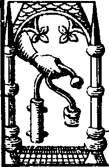
<br><b><font face="Trebuchet MS"><font size="-1">FIGURE 1</font></font></b>
<br><b><i><font face="Trebuchet MS"><font size="-1">(l'&eacute;critoire :
le canon et le cornet)</font></font></i></b>
</p><p><a  name="Une Ecritoire dans une Niche faite en forme de"></a><b><font face="Trebuchet MS"><font color="#000066"><font size="-1">Une
Ecritoire dans une Niche faite en forme de Fourneau<a  name="85_t"></a><sup><a href="#85">85</a></sup>.</font></font></font></b>
</p><p><a  name="CHAPITRE III"></a><u><font face="Trebuchet MS"><font color="#000066"><font size="+2">CHAPITRE
III</font></font></font></u></p></center>

<p><i><font face="Trebuchet MS"><font color="#000066">Explication de cette
Figure, avec la mani&egrave;re du Feu.</font></font></i>
</p><p><font face="Trebuchet MS"><font color="#000066">Ce Vaisseau de terre
en cette forme, est appell&eacute; par les Philosophes le triple Vaisseau
; car dans son milieu il y a un &eacute;tage, sur lequel il y a un Ecuelle
pleine de Cendres ti&egrave;des, dans lesquelles est pos&eacute; l'&#338;uf
Philosophique, qui est un Matras de verre que tu vois peint en forme d'Ecritoire,
et qui est plein de Confections de l'Art, c'est-&agrave;-dire de <i>l'Ecume<a  name="86_t"></a></i><sup><a href="#86">86</a></sup><i>
de la Mer Rouge, et de la Graisse<a  name="87_t"></a></i><sup><a href="#87">87</a></sup><i>
du Vent Mercurial. </i>Or ce Vaisseau de terre s'ouvre par dessus, pour
y mettre au dedans l'Ecuelle et le Matras, sous lesquels, par cette porte
ouverte, se met le feu philosophique, comme tu s&ccedil;ais. Ainsi tu as
trois Vaisseaux, et le Vaisseau triple. Les Envieux l'on appel&eacute;
<i>Athanor,
Crible, Fumier, Bain-Marie, Fournaise, Sph&egrave;re, Lionverd, Prison,
S&eacute;pulcre, Urinal, Phiole, Cucurbite,
</i>moi-m&ecirc;me en mon <i>Sommaire
Philosophique, </i>que j'ai compos&eacute; il y a quatre ans deux mois,
je le nomme sur la fin, la <i>Maison et Habitacle du Poulet,
</i>et j'appelle
les Cendres de l'Ecuelle la <i>paille du Poulet.
</i>Son commun nom est
<i>Fourneau,
</i>que
je n'eusse jamais trouv&eacute;, si Abraham Juif ne l'e&ucirc;t peint avec
son <i>Feu </i>proportionn&eacute;, auquel consiste une grande partie du
Secret. Il est comme le Ventre et la Matrice, contenant la vraie chaleur
naturelle pour animer notre jeune Roi. <i>Si ce Feu n'est
</i>mesur&eacute;
clibaniquement, dit Calid ; s'il est allum&eacute; avec l'&eacute;p&eacute;e,
dit Pythagoras ; si tu enfl&acirc;mes ton Vaisseau, dit Morienus et lui
fais sentir l'ardeur du feu, il te donnera un soufflet, et br&ucirc;lera
ses fleurs<a  name="88_t"></a><sup><a href="#88">88</a></sup> avant qu'elles
soient mont&eacute;es du profond de ses mo&uuml;elles, et elles sortiront
rouges plut&ocirc;t que blanches ; et lors ton Op&eacute;ration sera d&eacute;truite,
tout de m&ecirc;me que si tu fais trop peu de feu. Car alors aussi tu n'en
verras jamais la fin, &agrave; cause que les Natures sont refroidies et
morfondues, et qu'elles n'auront point eu des mouvements assez puissants
pour se dig&eacute;rer ensemble.</font></font>
</p><p><font face="Trebuchet MS"><font color="#000066"><i>La Chaleur de ton
feu, </i>en ce Vaisseau, sera, comme dit Herm&egrave;s et Rosinus,
<i>selon
l'Hiver<a  name="89_t"></a></i><sup><a href="#89">89</a></sup><i>, </i>ou
bien ainsi que dit Diom&egrave;des,
<i>selon la chaleur de l'Oiseau qui
commence &agrave; isoler fort lentement depuis le Signe d'Aries, jusqu'&agrave;
celui de Cancer. </i>Car s&ccedil;ache que l'Enfant, du commencement, est
plein de flegme froid et de lait, et que la chaleur trop v&eacute;h&eacute;mente
est ennemie de la froideur et humidit&eacute; de notre Embrion, et que
les deux Ennemis, c'est-&agrave;-dire nos Elemens du froid et du chaud,
ne s'embrasseront jamais parfaitement que peu &agrave; peu, ayant premi&egrave;rement
fait une longue demeure ensemble au milieu de la temp&eacute;r&eacute;e
chaleur de leur Bain, et s'&eacute;tant changez par longue <i>D&eacute;coction
</i>en
Soufre <i>incombustible.
</i>Gouverne donc doucement, avec &eacute;galit&eacute;
et proportion, tes Natures hautaines, de peur que si tu en favorises plus
les unes que les autres, elles qui sont naturellement ennemies ne se d&eacute;pitent
contre toi par jalousie et col&egrave;re s&egrave;che, et ne te fassent
longtems soupirer.</font></font>
</p><p><font face="Trebuchet MS"><font color="#000066">Outre cela, il te les
faut entretenir perp&eacute;tuellement en cette chaleur temp&eacute;r&eacute;e,
c'est-&agrave;-dire nuit et jour, jusqu'&agrave; ce que l'Hiver, c'est-&agrave;-dire
le tems de l'Humidit&eacute; des Mati&egrave;res, soit pass&eacute;, parce
qu'elles font leur paix et se donnent la main en s'&eacute;chauffant ensemble,
et que si elles se trouvaient seulement une demie heure sans feu, ces Natures
seroient &agrave; jamais irr&eacute;conciliables. Voil&agrave; pourquoi
il est dit au Livre des septante Pr&eacute;ceptes : fais que leur feu dure
continuellement et sans cesse, et qu'aucuns de leurs jours ne soient point
oubliez. Et Rasis : la h&acirc;te, que m&egrave;ne avec soi trop de feu,
est toujours suivie du Diable et de l'Erreur. Quand l'Oiseau dor&eacute;,
dit Diom&egrave;des, sera parvenu jusqu'au Cancer, que de l&agrave; il
courra vers les Balances, alors il te faudra augmenter un peu le feu. Et
tout de m&ecirc;me encore quand ce bel Oiseau s'envollera de Libra vers
le Capricorne, qui est le d&eacute;sir&eacute; Automne, le tems des moissons
et des fruits d&eacute;j&agrave; m&ucirc;rs<a  name="90_t"></a><sup><a href="#90">90</a></sup>.</font></font>
<br>
</p><hr>
<center>
<p><a  name="SECONDE FIGURE"></a><b><font face="Trebuchet MS"><font color="#000066"><font size="-1">SECONDE
FIGURE</font></font></font></b>
</p><p>
<br><b><font face="Trebuchet MS"><font size="-1">FIGURE 2</font></font></b>
<br><b><i><font face="Trebuchet MS"><font size="-1">(les deux dragons)</font></font></i></b>
</p><p><a  name="Deux Dragons de Couleur jaun&acirc;tre, bleu&euml; et noire"></a><b><font face="Trebuchet MS"><font color="#000066"><font size="-1">Deux
Dragons de Couleur jaun&acirc;tre, bleu&euml; et noire comme le Champ</font></font></font></b>
</p><p><a  name="CHAPITRE IV."></a><u><font face="Trebuchet MS"><font color="#000066"><font size="+2">CHAPITRE
IV.</font></font></font></u></p></center>

<p><font face="Trebuchet MS"><font color="#000066">Explication de cette
Figure.</font></font>
</p><p><font face="Trebuchet MS"><font color="#000066">Consid&eacute;rez bien
ces deux Dragons, car ce sont les vrais Principes de la Philosophie, que
les Sages n'ont pas os&eacute; montrer &agrave; leurs Enfans propres. Celui
qui est dessous, sans ailes, c'est le Fixe, ou le M&acirc;le ; celui qui
est au-dessus, c'est le Volatil, ou bien la Femelle noire et obscure, qui
va prendre la domination par plusieurs mois<a  name="91_t"></a><sup><a href="#91">91</a></sup>.
Le premier est appell&eacute;
<i>Soulfre,
</i>ou bien <i>Calidit&eacute;
</i>et
<i>Siccit&eacute;,
</i>et
le dernier,
<i>Argent-Vif,
</i>ou
<i>Frigidit&eacute;
</i>et
<i>Humidit&eacute;.</i>Ce
sont le Soleil et la Lune de Source <i>Mercurielle,
</i>et Origine <i>Sulphureuse,
</i>qui
par le feu continuel s'ornent d'Habillemens Royaux, pour vaincre toute
chose m&eacute;tallique, solide, dure et forte, lorsqu'ils seront unis
ensemble, et puis changez en <i>Quintessence. </i>Ce sont ces Serpens et
Dragons que les anciens Egyptiens ont peints en cercle, la t&ecirc;te mordant
la queue, pour dire qu'ils &eacute;toient sortis d'une m&ecirc;me chose,
et qu'elle seule &eacute;toit suffisante &agrave; elle-m&ecirc;me, et qu'en
son contour et circulation elle se parfaisoit. Ce sont ces Dragons que
les anciens Po&euml;tes ont mis &agrave; garder sans dormir les Pommes
dor&eacute;es des Jardins des Vierges Hesp&eacute;rides. Ce sont ceux sur
lesquel, Jason, en l'aventure de la Toison d'Or, versa le jus pr&eacute;par&eacute;
par la belle M&eacute;d&eacute;e : des discours desquels les Livres des
Philosophes sont si remplis, qu'il n'y a point de Philosophe qui n'en ait
&eacute;crit depuis le <i>v&eacute;ridique </i>Herm&egrave;s Trism&eacute;giste,
Orph&eacute;e, Pythagoras, Arthephius, Morienus, et les autres suivans,
jusqu'&agrave; moi.</font></font>
</p><p><font face="Trebuchet MS"><font color="#000066">Ce sont ces deux Serpens
envoyez par Junon, qui est la Nature m&eacute;tallique, que le fort Hercule,
c'est-&agrave;-dire le Sage, doit &eacute;trangler en son berceau : je
veux dire, vaincre, et tuer, pour faire pourrir, corrompre, et engendrer,
au commencement de son &#338;uvre<a  name="92_t"></a><sup><a href="#92">92</a></sup>.
Ce sont les deux Serpens attach&eacute;s autour du Caduc&eacute;e, ou verge
de Mercure, avec lesquels il exerce sa grande puissance, et se transfigure
et se change comme il lui pla&icirc;t.
<i>Celui,
</i>dit Haly, <i>qui en
tuera l'un, il tuera aussi l'autre, </i>parce que l'un ne peut mourir qu'avec
son Fr&egrave;re.</font></font>
</p><p><font face="Trebuchet MS"><font color="#000066">Ces deux-ci (qu'Avic&egrave;ne
appelle <i>Chiene de Corass&egrave;ne<a  name="93_t"></a></i><sup><a href="#93">93</a></sup>et
<i>Chien
d'Arm&eacute;nie)
</i>&eacute;tant donc mis ensemble dans le Vaisseau du
S&eacute;pulcre, ils se mordent tous deux cruellement ; et par leur grand
poison et rage furieuse, ne se laissent jamais depuis le moment qu'ils
se sont pris et entresaisis (si le froid ne les emp&ecirc;che) que tous
deux, de leur bavant venin et mortelles blessures, ne se soient ensanglantez
par toutes les parties de leur Corps, et finalement s'entre-tuant, ne se
soient &eacute;touffez dans leur venin propre, qui les change, apr&egrave;s
leur mort, en Eau vive, et permanente<a  name="94_t"></a><sup><a href="#94">94</a></sup>
; avant quoi, ils perdent avec la
<i>corruption et putr&eacute;faction</i>leurs
premi&egrave;res Formes naturelles, pour en reprendre apr&egrave;s une
seule nouvelle plus noble et meilleure.</font></font>
</p><p><font face="Trebuchet MS"><font color="#000066">Ce sont ces deux Spermes,
masculin et f&eacute;minin d&eacute;crits au commencement de mon
<i>Sommaire
Philosophique, qui sont engendrez </i>(dit Rasis, Avic&egrave;ne, et Abraham
Juif) <i>dans les reins, entrailles, et des op&eacute;rations des quatre
&eacute;l&eacute;mens. </i>Ce sont l'Humide radical des M&eacute;taux,
Soulfre et Argent-Vif, non les vulgaires et qui se vendent par les Marchands
Droguistes ; mais ce sont ceux que nous donnent ces deux beaux et chers
Corps, que nous aimons tant<a  name="95_t"></a><sup><a href="#95">95</a></sup>.
<i>Ces
deux Spermes, </i>disoit D&eacute;mocrite,
<i>ne se trouvent point sur
la terre des Vivans. </i>Le m&ecirc;me dit Avic&egrave;ne, mais, ajoute-t-il,
<i>on
les recueille de la fiente, Ordure et pourriture du Soleil et de la Lune<a  name="96_t"></a></i><sup><a href="#96">96</a></sup><i>.
</i>O
que bien heureux sont ceux qui le s&ccedil;avent recueillir ! car d'eux
puis apr&egrave;s ils en font une Th&eacute;riaque, qui a puissance sur
toute douleur, tristesse, maladie, infirmit&eacute; et d&eacute;bilit&eacute;<a  name="97_t"></a><sup><a href="#53">97</a></sup>,
qui combat puissamment contre la mort, prolongeant la vie selon la permission
de Dieu, jusqu'au tems d&eacute;termin&eacute;, en triomphant des mis&egrave;res
de ce Monde et comblant l'Homme de ses richesses.</font></font>
</p><p><font face="Trebuchet MS"><font color="#000066">De ces deux Dragons
ou Principes M&eacute;talliques, j'ai dit en mon Sommaire que l'Ennemi
enflammeroit par son ardeur le feu de son Ennemi ; et qu'alors, si l'on
n'y prenoit garde, on verroit par l'Air une fum&eacute;e venimeuse, et
de mauvaise odeur, pire en fl&acirc;me et en poison que n'est la t&ecirc;te
envenim&eacute;e d'un Serpent et d'un Dragon Babylonien.</font></font>
</p><p><font face="Trebuchet MS"><font color="#000066">La cause pourquoi j'ai
peint ces deux Spermes en forme de Dragons, c'est parce que leur puanteur
est tr&egrave;s grande, comme est celle des Dragons, et les exhalaisons
qui montent dans le Matras sont obscures, noires, bleues et jaun&acirc;tres,
ainsi que sont ces deux Dragons peints ; la force desquels, et des Corps
dissous, est si venimeuse que v&eacute;ritablement il n'y a point au Monde
un plus grand venin. Car il est capable, par la force et puanteur, de faire
mourir et tuer toute chose vivante. Le Philosophe ne sent jamais cette
puanteur, s'il ne casse ses Vaisseaux ; mais seulement il la juge &ecirc;tre
telle par la vue et changement des Couleurs qui proviennent de la pourriture
de ses <i>Confections,</i></font></font>
</p><p><font face="Trebuchet MS"><font color="#000066">Ces Couleurs donc signifient
la <i>Putr&eacute;faction et G&eacute;n&eacute;ration
</i>qui nous est
donn&eacute;e par la morsure et <i>dissolution </i>de nos Corps parfaits
; laquelle <i>dissolution </i>vient de la chaleur externe qui aide, et
de <i>l'Ign&eacute;it&eacute; </i>Pontique<a  name="98_t"></a><sup><a href="#98">98</a></sup>,
et vertu aigre admirable du poison de notre Mercure, qui met et r&eacute;sout
en pure poussi&egrave;re, m&ecirc;me en poudre impalpable, ce qu'il trouve
qui lui r&eacute;siste<a  name="99_t"></a><sup><a href="#99">99</a></sup>.
Ainsi la chaleur agissant sur et contre l'humidit&eacute; radicale m&eacute;tallique,
visqueuse ou ol&eacute;agineuse, engendre sur le Sujet la noirceur. Car
au m&ecirc;me tems la Mati&egrave;re se dissout, se corrompt, noircit,
et con&ccedil;oit pour engendrer. Parce que toute
<i>Corruption </i>est
<i>G&eacute;n&eacute;ration,
</i>et
l'on doit toujours souhaiter cette noirceur. Elle est aussi ce voile noir
avec lequel le Navire de Th&eacute;s&eacute;e revint victorieux de Cr&egrave;te,
qui fut cause de la mort de son P&egrave;re. Aussi faut-il que le P&egrave;re
meure<a  name="100_t"></a><sup><a href="#100">100</a></sup>, afin que des
cendres de ce Ph&#339;nix il en renaisse un autre, et que le Fils soit Roi.</font></font>
</p><p><font face="Trebuchet MS"><font color="#000066">Certes, qui ne voit
cette noirceur, au commencement de ses Op&eacute;rations, durant les jours
de la Pierre, quelle autre couleur qu'il voye, il manque enti&egrave;rement
au Magist&egrave;re, et ne le peut plus parfaire avec ce Cahos. Car il
ne travaille pas bien, ne <i>putr&eacute;fiant </i>point ; d'autant que
si l'on ne pourrit, on ne corrompt ni n'engendre point. Par cons&eacute;quent,
la Pierre ne peut prendre vie v&eacute;g&eacute;tative pour cro&icirc;tre
et multiplier<a  name="101_t"></a><sup><a href="#101">101</a></sup>. Et
v&eacute;ritablement je te dis derechef que quand m&ecirc;me tu travaillerois
sur les vraies Mati&egrave;res, si au commencement, apr&egrave;s avoir
mis les <i>Confections<a  name="102_t"></a></i><sup><a href="#102">102</a></sup>dans
l'&#338;uf Philosophique (c'est-&agrave;-dire quelque tems apr&egrave;s que
le feu les a irrit&eacute;es), tu ne vois cette <i>T&ecirc;te du Corbeau,
noire du noir tr&egrave;s-noir, </i>il te faut recommencer. Car cette faute
est irr&eacute;parable, et on ne la s&ccedil;aurait corriger. Sur tout,
on doit craindre une Couleur orang&eacute;e<a  name="103_t"></a><sup><a href="#103">103</a></sup>,
ou demi-rouge ; parce que si dans ce commencement tu la vois dans ton Oeuf,
sans doute tu br&ucirc;les ou as br&ucirc;l&eacute; la verdeur et vivacit&eacute;
de la Pierre. La Couleur qu'il te faut avoir doit &ecirc;tre enti&egrave;rement
parfaite en noirceur, semblable &agrave; celle de ces Dragons, et ce en
l'espace de quarante jours.</font></font>
</p><p><font face="Trebuchet MS"><font color="#000066">Que donc ceux qui n'auront
point ces marques essentielles se retirent de bonne heure des Op&eacute;rations,
afin qu'ils &eacute;vitent une perte assur&eacute;e<a  name="104_t"></a><sup><a href="#104">104</a></sup>.
S&ccedil;ache aussi et remarque bien que ce n'est rien en cet Art d'avoir
la noirceur, il n'y a rien plus ais&eacute; &agrave; avoir. Car presque
de toutes les choses du monde m&ecirc;l&eacute;es avec l'humidit&eacute;,
tu en auras la noirceur par le feu. Il te faut avoir une noirceur qui provienne
des Corps M&eacute;talliques parfaits<a  name="105_t"></a><sup><a href="#105">105</a></sup>,
qui dure un long espace de tems, et qui ne se perde qu'en cinq mois, apr&egrave;s
laquelle vient et succ&egrave;de la d&eacute;sir&eacute;e blancheur. Si
tu as cela, tu as beaucoup, mais non pas tout.</font></font>
</p><p><font face="Trebuchet MS"><font color="#000066">Quant &agrave; la couleur
bleu&acirc;tre<a  name="106_t"></a><sup><a href="#106">106</a></sup> et
jaun&acirc;tre, elle signifie que la <i>solution et putr&eacute;faction
</i>n'est
point encore achev&eacute;e, et que les Couleurs de notre Mercure ne sont
point encore bien m&ecirc;l&eacute;es et pourries avec ce qui reste.</font></font>
</p><p><font face="Trebuchet MS"><font color="#000066">Donc cette Noirceur
et Couleurs enseignent clairement qu'en ce commencement la Mati&egrave;re
ou le Compos&eacute; commence &agrave; se pourrir et dissoudre en poudre
plus menue que les Atomes du Soleil, lesquels se changent apr&egrave;s
en Eau permanente. Et cette <i>Dissolution </i>est appell&eacute;e par
les Philosophes envieux <i>Mort, Destruction </i>et <i>Perdition, </i>parce
que les Natures changent de forme. De l&agrave; sont sorties tant d'All&eacute;gories
sur les Morts, Tombes et S&eacute;pulchres. Les autres l'ont nomm&eacute;e
<i>Calcination,
D&eacute;nudation, S&eacute;paration, Trituration, Assation<a  name="107_t"></a></i><sup><a href="#107">107</a></sup><i>,
</i>parce
que les Confections sont chang&eacute;es et r&eacute;duites en tr&egrave;s
menues pi&egrave;ces ou parties. Les autres <i>R&eacute;duction en premi&egrave;re
Mati&egrave;re, Mollification, Extraction, Commixtion, Liqu&eacute;fication,
Conversion d'Elemens, Subtiliation, Division, Humation<a  name="108_t"></a></i><sup><a href="#108">108</a></sup><i>,
Impastation, </i>et <i>Distilation,
</i>parce que les Confections sont
liqu&eacute;fi&eacute;es, r&eacute;duites en semence, amollies, et se circulent
dans le Matras. Les autres <i>Xir, Putr&eacute;faction, Corruption, Ombres
Cimm&eacute;riennes<a  name="109_t"></a></i><sup><a href="#109">109</a></sup><i>,
Gouffre, Enfer, Dragon, G&eacute;n&eacute;ration, Ingression, Submersion,
Complexion, Conjonction, et Impr&eacute;gnation
</i>parce que la Mati&egrave;re
est noire et aqueuse, et que les Natures se m&ecirc;lent parfaitement,
et se retiennent les unes les autres. Car quand la chaleur du Soleil agit
sur elles, elle se changent premi&egrave;rement en Poudre, ou Eau grasse
et gluante, qui, sentant la chaleur, s'enfuit en haut en la t&ecirc;te
du Poulet avec la fum&eacute;e, c'est-&agrave;-dire avec le Vent et l'Air
; de-l&agrave; cette Eau, tir&eacute;e et fondue des Confections, elle
s'en reva en bas, et en descendant r&eacute;duit et r&eacute;sout tant
qu'elle peut le reste des Confections aromatiques, faisant toujours ainsi
jusqu'&agrave; ce que tout soit comme un bouillon noir un peu gras. Voil&agrave;
pourquoi on appelle cela <i>Sublimation,
</i>et
<i>Volatilisation, </i>car
il vole en haut, et <i>Ascension </i>et
<i>Descension<a  name="110_t"></a></i><sup><a href="#110">110</a></sup><i>,
</i>parce
qu'il monte et d&eacute;cend dans le Vaisseau.</font></font>
</p><p><font face="Trebuchet MS"><font color="#000066">Quelque tems apr&egrave;s,
l'Eau commence &agrave; s'engrossir et coaguler davantage, venant comme
de la Poix tr&egrave;s-noire ; et enfin vient Corps et Terre, que les Envieux
ont appell&eacute;e <i>Terre f&eacute;tide et puante </i>car alors, &agrave;
cause de la parfaite <i>putr&eacute;faction
</i>(qui est aussi naturelle
que toute autre), cette Terre est puante, et donne une odeur semblable
au relent des S&eacute;pulchres remplis de pourriture et d'ossemens encore
chargez d'humeur naturelle. Cette Terre a &eacute;t&eacute; appell&eacute;e
par Herm&egrave;s la <i>Terre des feuilles<a  name="111_t"></a></i><sup><a href="#111">111</a></sup><i>,
</i>n&eacute;anmoins
son plus propre et vrai nom est le <i>Laiton qu'on doit laver<a  name="112_t"></a></i><sup><a href="#112">112</a></sup><i>
puis apr&egrave;s blanchir<a  name="113_t"></a></i><sup><a href="#113">113</a></sup><i>.
</i>Les
anciens Sages Cabalistes l'ont d&eacute;crite dans les M&eacute;tamorphoses
sous l'Histoire du Serpent de Mars, qui avoit d&eacute;vor&eacute; les
Compagnons de Cadmus, lequel le tua en le per&ccedil;ant de sa Lance contre
un Ch&ecirc;ne creux. Remarque ce Ch&ecirc;ne<a  name="114_t"></a><sup><a href="#114">114</a></sup>
.</font></font>
<br>
</p><hr>
<center>
<p><a  name="TROISI&Egrave;ME FIGURE"></a><b><font face="Trebuchet MS"><font color="#000066"><font size="-1">TROISI&Egrave;ME
FIGURE</font></font></font></b>
</p><p>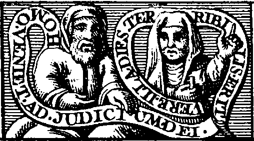
<br><b><font face="Trebuchet MS"><font size="-1">FIGURE 3</font></font></b>
<br><b><i><font face="Trebuchet MS"><font size="-1">(L'Homme et la Femme)</font></font></i></b></p></center>

<p><a  name="Un homme et une Femme, v&ecirc;tus de Robe orang&eacute;e, sur"></a><b><font face="Trebuchet MS"><font color="#000066"><font size="-1">Un
homme et une Femme, v&ecirc;tus de Robe orang&eacute;e, sur un champ azur&eacute;
et bleu, avec leurs Rouleaux.</font></font></font></b>
<br>&nbsp;
<br>&nbsp;
<br>
<br>
</p><center>
<p><a  name="CHAPITRE V"></a><u><font face="Trebuchet MS"><font color="#000066"><font size="+2">CHAPITRE
V</font></font></font></u></p></center>

<p><font face="Trebuchet MS"><font color="#000066">Explication de cette
Figure.</font></font>
</p><p><font face="Trebuchet MS"><font color="#000066">L'Homme ici d&eacute;peint
me ressemble tout expr&egrave;s bien au naturel, tout de m&ecirc;me que
la Femme repr&eacute;sente tr&egrave;s na&iuml;vement Perrenelle. La cause
pourquoi nous sommes peints au vif n'a rien de particulier. Car il ne falloit
repr&eacute;senter que le M&acirc;le et la Femelle, &agrave; quoi notre
particuli&egrave;re ressemblance n'&eacute;toit pas n&eacute;cessairement
requise. Mais il a plu au sculpteur de nous mettre l&agrave;, tout ainsi
qu'il a fait aussi en cette m&ecirc;me Arche plus haut, aux pieds de la
Figure de S. Paul et de S. Pierre, selon que nous &eacute;tions en notre
jeunesse<a  name="115_t"></a><sup><a href="#115">115</a></sup> ; et encore
ailleurs en plusieurs lieux, comme fut la porte de la Chapelle S. Jacques
de la Boucherie, aupr&egrave;s de ma maison (encore qu'en cette derni&egrave;re
il y a une raison particuli&egrave;re) comme aussi sur la porte de sainte
Genevi&egrave;ve des Ardens, o&ugrave; tu pourras me voir.</font></font>
</p><p><font face="Trebuchet MS"><font color="#000066">Je te peins donc ici
deux Corps, un de M&acirc;le, et l'autre de Femelle, pour t'enseigner qu'en
cette seconde Op&eacute;ration tu as v&eacute;ritablement, mais non pas
encore parfaitement, deux Natures conjointes, et mari&eacute;es,
<i>la
masculine et la f&eacute;minine, </i>ou plut&ocirc;t les quatre Elemens
; et que les Ennemis naturels, le Chaud et le Froid, le Sec et l'Humide,
commencent de s'approcher amiablement les uns des autres, et par le moyen
des Entremetteurs de paix<a  name="116_t"></a><sup><a href="#116">116</a></sup>,
d&eacute;posent peu &agrave; peu l'ancienne inimiti&eacute; du vieil Chaos<a  name="117_t"></a><sup><a href="#117">117</a></sup>.
Tu s&ccedil;ais assez qui sont ces Entremetteurs entre le Chaud et le Froid
: c'est l'Humide ; car il est parent et alli&eacute; des deux, du Chaud
par sa chaleur, et du Froid par son humidit&eacute;. Voil&agrave; pourquoi
commencer &agrave; faire cette paix, tu as d&eacute;j&agrave; en l'Op&eacute;ration
pr&eacute;c&eacute;dente converti toutes les Confections en Eau par la
dissolution. Et puis apr&egrave;s tu as fait coaguler l'Eau n&eacute;cessaire,
qui s'est convertie en cette Terre noire du noir tr&egrave;s-noir, pour
faire enti&egrave;rement la paix. Car la Terre qui est s&egrave;che et
humide, se trouvant aussi parente et alli&eacute;e avec le Sec et l'Humide,
qui sont Ennemis, les appaisera et accordera enti&egrave;rement. Ne consid&egrave;res-tu
pas un m&eacute;lange tr&egrave;s-parfait de tous ces quatre El&eacute;mens,
les ayant premi&egrave;rement convertis en Eau, et maintenant en Terre.
Je t'enseignerai encore ci-apr&egrave;s les autres conversions en Air quand
tout sera blanc, et en Feu quand tout sera d'un parfait rouge de Pourpre.</font></font>
</p><p><font face="Trebuchet MS"><font color="#000066">Tu as donc ici deux
Natures mari&eacute;es, dont l'une a con&ccedil;u de l'autre, et par cette
conception s'est convertie en Corps de M&acirc;le, et le M&acirc;le en
celui de Femelle, c'est-&agrave;-dire se sont faites un seul Corps, qui
est <i>l'Androgine </i>des Anciens, qu'autrement on appelle encore la <i>T&ecirc;te
du Corbeau<a  name="118_t"></a></i><sup><a href="#118">118</a></sup><i>,
</i>et
les <i>El&eacute;mens convertis.
</i>En cette fa&ccedil;on je te peins
ici que tu as deux Natures r&eacute;concili&eacute;es, qui (si elles sont
conduites et r&eacute;gies sagement) peuvent former un Embrion en la matrice
du Vaisseau, et puis t'enfanter un Roi tr&egrave;s-puissant, invincible,
et incorruptible, parce qu'il sera une Quintessence admirable<a  name="119_t"></a><sup><a href="#119">119</a></sup>.
Voil&agrave; la principale fin de cette repr&eacute;sentation, et la plus
n&eacute;cessaire.</font></font>
</p><p><font face="Trebuchet MS"><font color="#000066">La seconde, qui est
aussi tr&egrave;s notable, sera qu'il me falloit d&eacute;peindre deux
Corps, parce qu'il faut qu'en cette Op&eacute;ration tu divises ce qui
a &eacute;t&eacute; coagul&eacute;, pour en donner puis apr&egrave;s une
nourriture, un lait de vie, au petit Enfant naissant, qui est dou&eacute;
(par le Dieu vivant) d'une Ame v&eacute;g&eacute;tative. Ce qui est un
secret tr&egrave;s-admirable et tr&egrave;s-cach&eacute;, qui a fait afoller,
faute de le comprendre, tous ceux qui l'ont cherch&eacute; sans le trouver
; et qui a rendu sage toute Personne qui l'a contempl&eacute; des yeux
du corps, ou de l'esprit.</font></font>
</p><p><font face="Trebuchet MS"><font color="#000066">Il te faut donc faire
deux parts et portions de ce Corps coagul&eacute;, l'une desquelles servira
<i>d'Azoth<a  name="120_t"></a></i><sup><a href="#120">120</a></sup>pour
laver et mondifier l'autre, qui s'appelle <i>Laiton<a  name="121_t"></a></i><sup><a href="#121">121</a></sup><i>,
</i>qu'il
faut blanchir. Celui qui est lav&eacute;, c'est le Serpent Python, qui,
ayant pris son &ecirc;tre de la corruption du limon de la Terre, assembl&eacute;
par les Eaux du D&eacute;luge, quand toutes les Confections &eacute;toient
Eau, doit &ecirc;tre mis &agrave; mort, et vaincu par les fl&egrave;ches
du Dieu Apollon<a  name="122_t"></a><sup><a href="#122">122</a></sup>, par
le blond Soleil, c'est-&agrave;-dire par notre Feu, &eacute;gal &agrave;
celui du Soleil.</font></font>
</p><p><font face="Trebuchet MS"><font color="#000066">Celui qui lave, ou plut&ocirc;t
ces lavements, qu'il faut continuer avec l'autre moiti&eacute;, ce sont
les dents de ce Serpent que le sage Op&eacute;rateur, le vaillant Th&eacute;s&eacute;e,
s&egrave;mera dans la m&ecirc;me terre, dont na&icirc;tront des Soldats
qui se d&eacute;truiront enfin eux-m&ecirc;mes, se laissant par opposition
r&eacute;soudre en la m&ecirc;me nature de la terre, laissant emporter
les conqu&ecirc;tes m&eacute;rit&eacute;es.</font></font>
</p><p><font face="Trebuchet MS"><font color="#000066">C'est sur ceci que les
Philosophes ont d&eacute;crit si souvent et tant de fois r&eacute;p&eacute;t&eacute;.
<i>Il
se dissout soi-m&ecirc;me, se cong&egrave;le, se noircit, se blanchit,
se tue, et vivifie soi-m&ecirc;me.
</i>J'ai fait peindre leur Champ azur&eacute;
et bleu pour montrer que je ne fais que commencer &agrave; sortir de la
noirceur tr&egrave;s-noire. Car l'azur&eacute; et bleu est une des premi&egrave;res
Couleurs que nous laisse voir l'obscure Femme, c'est-&agrave;-dire l'Humidit&eacute;
c&eacute;dant un peu &agrave; la chaleur et s&eacute;cheresse. L'Homme
et la Femme sont la plupart orangez. Cela signifie que nos Corps (ou notre
Corps, que les Sages appellent ici
<i>Rebis),
</i>n'a point encore assez
de digestion, et que l'Humidit&eacute; dont vient le noir, bleu et azur&eacute;,
n'est pas demi vaincue par la s&eacute;cheresse. Car, quand la s&eacute;cheresse
dominera, tout sera blanc, et la combattant ou &eacute;tant &eacute;gale
&agrave; l'Humidit&eacute;, tout est en partie selon ces Couleurs. Les
Envieux ont appell&eacute; encore ces Confections en cette Op&eacute;ration,
<i>Numus,
Ethelia, Arena, Boritis, Corsuste, Cambar, Albar aeris, Duenech, Randeric,
Kukul, Thabitris, Ebisemeth, Ixir,
</i>etc.<a  name="123_t"></a><sup><a href="#122">123</a></sup>
Ce qu'ils ont command&eacute; de blanchir.</font></font>
</p><p><font face="Trebuchet MS"><font color="#000066">La Femme a un cercle
blanc en forme de rouleau &agrave; l'entour de son corps, pour te montrer
que le Rebis commencera de se blanchir de cette m&ecirc;me fa&ccedil;on,
blanchissant premi&egrave;rement aux extr&eacute;mit&eacute;s tout &agrave;
l'entour de ce cercle blanc. L'Echelle des Philosophes dit : Le Signe de
la premi&egrave;re parfaite blancheur, est quand l'on voit un certain petit
cercle capillaire, c'est-&agrave;-dire passant sur la t&ecirc;te, qui appara&icirc;tra
&agrave; l'entour de la Mati&egrave;re aux c&ocirc;t&eacute;s du Vaisseau,
en couleur tirant sur l'orang&eacute;.</font></font>
</p><p><font face="Trebuchet MS"><font color="#000066">Il y a en leurs Rouleaux,
<i>Homo
veniet ad Judicium Dei ; </i>c'est-&agrave;-dire l'Homme viendra au Jugement
de Dieu. <i>Vere, </i>(dit la Femme) <i>illa dies terribilis eris. </i>C'est-&agrave;-dire,
certes ce jour-l&agrave; sera terrible. Ce ne sont point des passages de
la Sainte Ecriture mais seulement des dictons parlans selon le Sens Th&eacute;ologique
de la R&eacute;surrection future. Je les ai mis ainsi ; car ils me servent
pour celui qui contemple seulement l'artifice grossier et plus naturel,
prenant l'interpr&eacute;tation de la R&eacute;surrection. Et servent tout
de m&ecirc;me &agrave; ceux qui, voulans recueillir les Paraboles de la
Science, prennent des yeux de Lync&eacute;e pour p&eacute;n&eacute;trer
au del&agrave; des Objets visibles. Il y a donc, <i>l'Homme viendra au
Jugement de Dieu, Certes ce jour sera terrible. </i>C'est comme si je disois,
il faut que ceci vienne au <i>Colorement </i>de la perfection, pour &ecirc;tre
jug&eacute; et nettoy&eacute; de la noirceur et ordure, et &ecirc;tre spiritualis&eacute;
et blanchi. Certes ce jour sera terrible. Oui vraiment ; aussi vous trouverez
en l'All&eacute;gorie d'Aril&eacute;us. <i>L'horreur nous tint en la Prison
Par quatre-vingt jours dans les t&eacute;n&egrave;bres des Ondes, dans
l'extr&ecirc;me chaleur de l'Et&eacute;, et dans les troubles de la Mer.
</i>Toutes
lesquelles choses doivent premi&egrave;rement passer avant que notre Roi
puisse &ecirc;tre blanchi, venant de mort &agrave; vie, pour vaincre puis
apr&egrave;s tous ses Ennemis.</font></font>
</p><p><font face="Trebuchet MS"><font color="#000066">Pour t'enseigner encore
mieux cette albification ou blanchissement<a  name="124_t"></a><sup><a href="#124">124</a></sup>,
qui est plus difficile que tout le reste (jusqu'au quel temps tu peux faillir
&agrave; tous pas ; mais apr&egrave;s non, ou tu casserois les Vaisseaux),
je t'ai fait encore ce Tableau suivant.</font></font>
<br>
</p><hr>
<center>
<p><a  name="Quatri&egrave;me FIGURE"></a><b><font face="Trebuchet MS"><font color="#000066">Quatri&egrave;me
<font size="-1">FIGURE</font></font></font></b>
</p><p>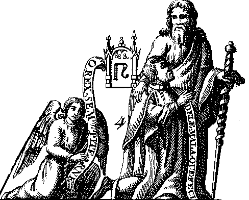
<br><b><font face="Trebuchet MS"><font size="-1">FIGURE 4</font></font></b>
<br><b><i><font face="Trebuchet MS"><font size="-1">(St Paul avec l'&eacute;p&eacute;e)</font></font></i></b></p></center>

<p><a  name="Un homme semblable &agrave; saint Paul, v&ecirc;tu d'une Robe"></a><b><font face="Trebuchet MS"><font color="#000066"><font size="-1">Un
homme semblable &agrave; saint Paul, v&ecirc;tu d'une Robe blanche orang&eacute;e,
bord&eacute;e d'Or, tenant une Ep&eacute;e nue, ayant &agrave; ses pieds
un Homme &agrave; genoux, v&ecirc;tu d'une Robe orang&eacute;e, blanche
et noire, tenant un Rouleau, o&ugrave; il y a <i>Dele mala quae feci, </i>c'est-&agrave;-dire
: &ocirc;te le mal que j'ai fait.</font></font></font></b>
<br>&nbsp;
<br>&nbsp;
<br>
<br>
</p><center>
<p><a  name="CHAPITRE VI"></a><u><font face="Trebuchet MS"><font color="#000066"><font size="+2">CHAPITRE
VI</font></font></font></u></p></center>

<p><font face="Trebuchet MS"><font color="#000066">Explication de cette
Figure.</font></font>
</p><p><font face="Trebuchet MS"><font color="#000066">Regarde bien cet Homme
en la forme d'un saint Paul, v&ecirc;tu d'une Robe enti&egrave;rement orang&eacute;e
blanche. Si tu le consid&egrave;res bien, il tourne le corps en posture
qui d&eacute;montre qu'il veut prendre l'Ep&eacute;e nue, ou pour trancher
la t&ecirc;te<a  name="125_t"></a><sup><a href="#125">125</a></sup>, ou
pour faire quelque autre chose sur cet Homme qui est &agrave; ses pieds
&agrave; genoux, v&ecirc;tu d'une Robe orang&eacute;e, blanche et noire<a  name="126_t"></a><sup><a href="#126">126</a></sup>,
lequel dit en son Rouleau : <i>Dele mala quae feci, </i>comme disant :
Ote-moi ma noirceur, <i>terme
</i>de l'Art. Car <i>mal </i>signifie par
All&eacute;gorie la noirceur ; ainsi en la
<i>Turbe
</i>on trouve <i>Cuis
jusqu'&agrave; la noirceur, qu'on estimera &ecirc;tre mal.
</i>Mais veux-tu
s&ccedil;avoir que veut dire cet Homme qui prend l'&eacute;p&eacute;e ?
Il signifie qu'il faut couper la t&ecirc;te au Corbeau, c'est-&agrave;-dire
&agrave; cet Homme v&ecirc;tu de diverses couleurs, qui est &agrave; genoux.
J'ai pris ce trait et figure d'Herm&egrave;s Trism&eacute;giste en son
<i>Livre
de l'Art secret, </i>o&ugrave; il dit : <i>Ote la t&ecirc;te &agrave; cet
homme noir ; coupe la t&ecirc;te au Corbeau, </i>c'est-&agrave;-dire <i>blanchis
notre Sable<a  name="127_t"></a></i><sup><a href="#127">127</a></sup><i>.
</i>Lambsprink,
Gentilhomme Allemand, s'en &eacute;toit d&eacute;j&agrave; servi au Commentaire
de ses Hi&eacute;roglyphiques, disant : <i>En ce bois il y a une B&ecirc;te
qui est toute couverte de noirceur ; si quelqu'un lui coupe la t&ecirc;te,
alors elle perdra sa no&icirc;rceur, et v&ecirc;tira la couleur tr&egrave;s-blanche.
Voulez-vous entendre ce que c'est ? La noirceur s'appelle la t&ecirc;te
du Corbeau, laquelle &ocirc;t&eacute;e, &agrave; l'instant vient la couleur
blanche, alors, c'est-&agrave;-dire quand la nu&eacute;e n'appara&icirc;t
plus, ce Corps est appell&eacute; sans t&ecirc;te<a  name="128_t"></a></i><sup><a href="#128">128</a></sup><i>.
</i>Ce
sont ses propres mots. En m&ecirc;me Sens les Sages ont aussi dit ailleurs,
<i>Prens
la Vip&egrave;re, appell&eacute;e de Rexa, coupe lui la t&ecirc;te,
</i>c'est-&agrave;-dire
&ocirc;te-lui la noirceur. Ils se sont encore servis de cette p&eacute;riphrase
quand, pour signifier la Multiplication de la Pierre, ils ont feint un
Serpent <i>Hydra </i>auquel, si on coupait une t&ecirc;te, il lui en renaissoit
dix. Car la Pierre augmente de dix &agrave; chaque fois qu'on lui coupe
cette t&ecirc;te de Corbeau, qu'on la noircit, et blanchit, c'est-&agrave;-dire
qu'on la dissout de nouveau, et qu'apr&egrave;s on la <i>recoagule.</i></font></font>
</p><p><font face="Trebuchet MS"><font color="#000066">Regarde que l'&eacute;p&eacute;e
nue est entortill&eacute;e d'une Ceinture noire<a  name="129_t"></a><sup><a href="#129">129</a></sup>,
et que les bouts d'icelle ne l'environnent pas tout &agrave; fait. Cette
&eacute;p&eacute;e nue, resplendissante, est la Pierre au blanc, si souvent
d&eacute;crite dans les Philosophes sous cette forme. Pour donc parvenir
&agrave; cette parfaite blancheur &eacute;tincellante, il te faut entendre
les entortillements de cette Ceinture noire, et ensuivre ce qu'ils enseignent,
qui est la quantit&eacute; des <i>Imbibitions<a  name="130_t"></a></i><sup><a href="#130">130</a></sup><i>.
</i>Les
deux bouts qui ne l'entortillent pas tout &agrave; fait repr&eacute;sentent
le commencement et la fin. Pour le commencement, il enseigne qu'il faut
<i>imbiber
</i>en
ce premier temps doucement et avec &eacute;pargne, donnant alors &agrave;
la Pierre peu de lait, comme &agrave; un petit enfant naissant,
<i>afin
que l'Ixir </i>(disent les auteurs)
<i>ne le submerge. </i>Le m&ecirc;me
faut-il faire &agrave; la fin, quand nous voyons que notre Roi est saoul,
et n'en veut plus. Le milieu de ces Op&eacute;rations est peint par les
cinq entortillements entiers de la Ceinture noire, auquel temps (parce
que notre Salamandre vit du feu, et au milieu du feu, voire m&ecirc;me
est un feu, et un Argent vif, courant au milieu du feu, ne craignant rien)
il lui en faut donner abondamment, de telle fa&ccedil;on que le lait virginal
entoure toute la Mati&egrave;re.</font></font>
</p><p><font face="Trebuchet MS"><font color="#000066">J'ai fait peindre noirs
ces entouremens de la Ceinture, parce que ce sont des <i>Imbibitions,
</i>et
par cons&eacute;quent des <i>Noirceurs.
</i>Car le Feu avec l'Humide (comme
il est tant de fois dit) cause la noirceur. Et comme ces cinq entoure-mens
entiers d&eacute;montrent qu'il faut faire cela cinq fois enti&egrave;rement,
tout de m&ecirc;me ils font conno&icirc;tre qu'il faut faire cela cinq
mois entiers, un mois &agrave; chaque <i>Imbibition.</i>Voil&agrave; pourquoi
Hali Abenragel a dit : <i>La cuisson des choses se parfait en trois fois
cinquante jours. </i>Il est vrai que si tu veux compter ces petites <i>Imbibitions
</i>du
commencement et de la fin, il y en a sept<a  name="131_t"></a><sup><a href="#131">131</a></sup>.
Sur quoi un des plus Envieux a dit : <i>Notre t&ecirc;te de Corbeau est
l&eacute;preuse ; c'est pourquoi qui la voudra nettoyer, il doit faire
descendre sept fois au fleuve de r&eacute;g&eacute;n&eacute;ration au Jordain,
ainsi que commande le Proph&egrave;te au L&eacute;preux Naaman Syrien.
</i>Comprenant
en cela le commencement qui n'est que de quelques jours, le milieu, et
la fin, qui est aussi fort courte.</font></font>
</p><p><font face="Trebuchet MS"><font color="#000066">Je t'ai donc donn&eacute;
ce Tableau pour te dire, qu'il te faut blanchir mon Corps qui est &agrave;
genoux, lequel ne demande autre chose. Car la Nature tend toujours &agrave;
perfection. Ce que tu accompliras par <i>l'apposition
</i>du lait Virginal<a  name="132_t"></a><sup><a href="#132">132</a></sup>,
et par la d&eacute;coction que tu feras des Mati&egrave;res avec ce lait
qui, se s&eacute;chant sur ce Corps, le teindra en m&ecirc;me blanc orang&eacute;,
dont est v&eacute;tu celui qui prend l'&eacute;p&eacute;e, en laquelle
couleur il te faut faire venir ton <i>Corsuflet<a  name="133_t"></a></i><sup><a href="#133">133</a></sup><i>.</i></font></font>
</p><p><font face="Trebuchet MS"><font color="#000066">Les v&ecirc;temens de
la figure de saint Paul sont bord&eacute;s largement de couleur dor&eacute;e,
et rouge orang&eacute;e. O mon fils, loue DIEU si tu vois jamais cela.
Car d&eacute;j&agrave; tu as obtenu mis&eacute;ricorde du Ciel, <i>Imbibe
</i>donc
et teins jusqu'&agrave; ce que le petit Enfant soit fort et robuste, pour
combattre contre l'eau et le feu. Accomplissant cela, tu feras ce que D&eacute;magoras,
Senior et Hali ont appell&eacute; : <i>Mettre la M&egrave;re au ventre
de l'Enfant qu'elle avoit d&eacute;j&agrave; enfant&eacute;.
</i>Car ils
appellent M&egrave;re le <i>Mercure des Philosophes<a  name="134_t"></a></i><sup><a href="#134">134</a></sup><i>,
sur le</i>quel ils ont pratiqu&eacute; les <i>Imbibitions et fermentations,
et l'Enfant, le corps qu'on doit teindre, duquel est sorti ce Mercure.
</i>Je
t'ai donn&eacute; donc ces deux Figures pour signifier <i>l'albification
</i>ou
blanchissement ; aussi c'est en ce lieu que tu avois besoin de grande aide,
car tout le monde y achopp&eacute;. Cette Op&eacute;ration est vraiment
un Labyrinthe, parce qu'ici se pr&eacute;sentent mille voyes &agrave; m&ecirc;me
instant, outre qu'il faut proc&eacute;der &agrave; la fin d'icelle, justement
tout au rebours du commencement, en
<i>coagulant
</i>ce qu'auparavant tu
<i>dissolvois<a  name="135_t"></a></i><sup><a href="#135">135</a></sup><i>,
</i>et
faisant Terre ce qu'auparavant tu faisois Eau.</font></font>
</p><p><font face="Trebuchet MS"><font color="#000066">Quant tu auras blanchi,
tu as vaincu les Taureaux enchant&eacute;s, qui jettoient feu et fum&eacute;e
par les narines. Hercule a nettoy&eacute; l'Etable pleine d'ordure, de
pourriture et de noirceur. Jason a vers&eacute; le jus sur les Dragons
de Coichos<a  name="136_t"></a><sup><a href="#136">136</a></sup>, et tu
as en ta puissance la Corne d'Amalth&eacute;e<a  name="137_t"></a><sup><a href="#137">137</a></sup>,
qui (encore qu'elle ne soit que blanche) peut combler tout le reste de
ta vie, de gloire, d'honneur, et de richesse. Pour l'avoir il t'a fallu
combattre vaillamment, et comme un Hercule. Car cet Ach&eacute;lous<a  name="138_t"></a><sup><a href="#138">138</a></sup>,
ce Fleuve humide (qui est la noirceur) est dou&eacute; d'une force tr&egrave;s
puissante, outre qu'il se change souvent d'une forme en une autre : aussi
as-tu parachev&eacute;, parce que le reste est sans difficult&eacute;.
Ces transfigurations ou changemens sont d&eacute;crits particuli&egrave;rement
au <i>Livre des sept Seaux Egyptiens, </i>o&ugrave; il est dit (comme aussi
par tous les Auteurs) qu'avant que de quitter enti&egrave;rement la noirceur,
et se blanchir en la fa&ccedil;on d'un marbre tr&egrave;s reluisant et
d'une &eacute;p&eacute;e nue flamboyante, la Pierre se v&ecirc;tira de
toutes les couleurs<a  name="139_t"></a><sup><a href="#139">139</a></sup>
que tu s&ccedil;auras imaginer. Souvent elle se liqu&eacute;fiera elle-m&ecirc;me,
et souvent se <i>coagulera </i>encore, et parmi ces diverses et contraires
op&eacute;rations (que l'Ame v&eacute;g&eacute;tative qui est en elle lui
fait parfaire en un m&ecirc;me temps) elle deviendra orang&eacute;e, verte,
rouge (non pas d'un rouge parfait) et jaune, deviendra bleue, et orang&eacute;e,
jusqu'&agrave; ce qu'&eacute;tant enti&egrave;rement vaincue par la s&eacute;cheresse
et la chaleur, toutes ces infinies couleurs finissent en cette blancheur
orang&eacute;e admirable du v&ecirc;tement de saint Paul, laquelle, en
peu de temps, viendra comme celle de l'&eacute;p&eacute;e nue. Puis, par
plus forte et longue d&eacute;coction, prendra enfin le rouge orang&eacute;,
et puis le parfait rouge de Laque, o&ugrave; elle se reposera d&eacute;sormais.
Je ne veux pas oublier, en passant, de t'avertir que le lait de la I.une
n'est pas comme le lait Virginal du Soleil. Pense donc que les <i>Imbibitions
</i>de
la blancheur demandent un lait plus blanc que celles de la rougeur et couleur
d'Or. Car en ce pas j'ai pens&eacute; faillir, et l'eusse fait sans Abraham
Juif. Pour cette raison je t'ai fait peindre la Figure qui prend l'&eacute;p&eacute;e
nue en la couleur qui t'est n&eacute;cessaire : aussi c'est cette Figure
qui blanchit.</font></font>
<br>
</p><hr>
<center>
<p><a  name="CINQUI&Egrave;ME FIGURE"></a><b><font face="Trebuchet MS"><font color="#000066"><font size="-1">CINQUI&Egrave;ME
FIGURE</font></font></font></b>
</p><p>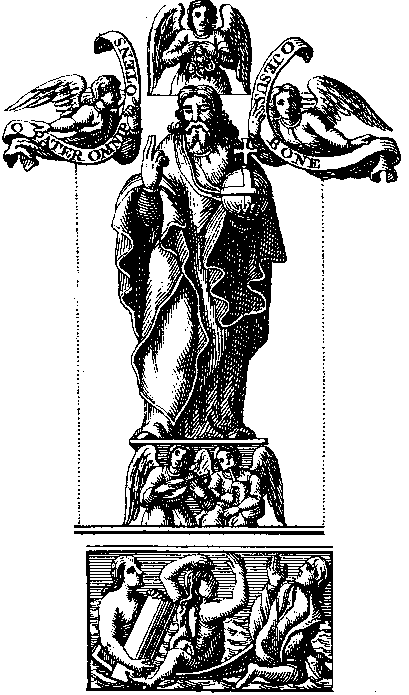
<br><b><font face="Trebuchet MS"><font size="-1">FIGURE 5</font></font></b>
<br><b><i><font face="Trebuchet MS"><font size="-1">(le s&eacute;pulcre et
le Sauveur)</font></font></i></b></p></center>

<p><a  name="Sur un Champ vert, deux Hommes et une Femme, qui"></a><b><font face="Trebuchet MS"><font color="#000066"><font size="-1">Sur
un Champ vert, deux Hommes et une Femme, qui ressuscitent enti&egrave;rement
blancs, deux Anges au-dessus, et sur les Anges la Figure du Sauveur venant
juger le Monde, v&ecirc;tu d'une Robe parfa&icirc;tement orang&eacute;e
blanche.</font></font></font></b>
</p><center>
<p><a  name="CHAPITRE VII"></a><u><font face="Trebuchet MS"><font color="#000066"><font size="+2">CHAPITRE
VII</font></font></font></u></p></center>

<p><font face="Trebuchet MS"><font color="#000066">Explication de cette
Figure.</font></font>
</p><p><font face="Trebuchet MS"><font color="#000066">J'ai fait peindre ainsi
un Champ vert, parce qu'en cette <i>D&eacute;coction
</i>les
<i>Confections
</i>se
font vertes<a  name="140_t"></a><sup><a href="#140">140</a></sup>, et gardent
plus longtemps cette odeur que toute autre apr&egrave;s la noire. Cette
verdeur marque particuli&egrave;rement que notre Pierre a une Ame v&eacute;g&eacute;tative,
et qu'elle s'est convertie, par l'industrie de l'Art, en vrai et pur germe<a  name="141_t"></a><sup><a href="#141">141</a></sup>,
pour germer abondamment et produire puis apr&egrave;s de rameaux infinis.
O <i>bienheureuse verdeur,
</i>dit le
<i>Rosaire, qui produit toutes choses
: sans toi rien ne peut cro&icirc;tre, v&eacute;g&eacute;ter, ni multiplier.
</i>Les
trois qui ressuscitent v&ecirc;tus de blanc &eacute;tincellant repr&eacute;sentent
le Corps, l'Ame et l'Esprit de notre Pierre blanche<a  name="142_t"></a><sup><a href="#142">142</a></sup>.
Les Philosophes usent ordinairement de ces termes de l'Art, pour cacher
le Secret aux M&eacute;chants. Ils appellent <i>Corps, la terre noire,
obscure et t&eacute;n&eacute;breuse, que nous blanchissons.
</i>Ils appellent
<i>Ame
l'autre moiti&eacute; divis&eacute;e du Corps,
</i>qui, par la volont&eacute;
de DIEU et la puissance de la Nature, donne au Corps, par ses <i>imbibitions
et fermentations, l'Ame v&eacute;g&eacute;tative ; </i>c'est-&agrave;-dire
la puissance et vertu de pulluler, cro&icirc;tre, multiplier, et de se
rendre blanc comme une &eacute;p&eacute;e nue reluisante. Ils appellent
<i>Esprit
la teinture et siccit&eacute;, </i>qui, comme un esprit, a vertu de p&eacute;n&eacute;trer
toutes choses m&eacute;talliques<a  name="143_t"></a><sup><a href="#143">143</a></sup>.</font></font>
</p><p><font face="Trebuchet MS"><font color="#000066">Je serois trop long
si je te voulais montrer ici par combien de raisons ils ont dit par tout
: <i>Noire Pierre a, comme l'Homme, Corps, Ame et Esprit. </i>Je veux seulement
que tu remarques bien que, comme l'Homme dou&eacute; de corps, Ame, et
Esprit, n'est toutefois qu'un, qu'aussi tu n'as maintenant qu'une seule
<i>Confection
</i>blanche,
en laquelle toutefois sont le Corps, l'Ame et l'Esprit, qui sont unis ins&eacute;parablement.
Je te pourrois bien donner de tr&egrave;s-claires comparaisons et explications
de ce Corps, Ame et Esprit ; mais pour les expliquer, il faudroit dire
des choses que Dieu se r&eacute;serve de r&eacute;v&eacute;ler &agrave;
ceux qui le craignent et qui l'aiment, et qui par cons&eacute;quent ne
se doivent pas &eacute;crire.</font></font>
</p><p><font face="Trebuchet MS"><font color="#000066">Je t'ai donc fait ici
peindre un Corps, une Ame et un Esprit tous blancs, comme s'ils ressuscitoient,
pour te montrer que le Soleil, la Lune et Mercure, sont ressuscit&eacute;s
en cette Op&eacute;ration<a  name="144_t"></a><sup><a href="#144">144</a></sup>,
c'est-&agrave;-dire sont faits El&eacute;mens de l'Air et blanchis : car
nous avons d&eacute;j&agrave; appell&eacute; la <i>Noirceur Mort ; </i>continuant
la M&eacute;taphore, nous pouvons donc appeler la <i>Blancheur<a  name="145_t"></a></i><sup><a href="#145">145</a></sup>une<i>Vie,
</i>qui
ne revient qu'avec et par la r&eacute;surrection, Le Corps, (pour te le
montrer plus clairement), je l'ai fait peindre, levant la pierre de son
tombeau, dans lequel il &eacute;toit enferm&eacute;. L'Ame, parce qu'elle
ne peut &ecirc;tre mise en terre, elle ne sort pas d'un tombeau, mais seulement
je la fais peindre parmi les tombeaux, cherchant son Corps en forme de
Femme ayant les cheveux &eacute;pars<a  name="146_t"></a><sup><a href="#146">146</a></sup>.
L'Esprit, qui ne peut &ecirc;tre aussi mis en s&eacute;pulture, je l'ai
fait peindre en Homme sortant de terre, non pas de la tombe. Ils sont tous
blancs ; aussi la Noirceur, qui est la Mort, est vaincue, et eux &eacute;tant
blanchis sont d&eacute;sormais <i>incorruptibles.</i></font></font>
</p><p><font face="Trebuchet MS"><font color="#000066">L&egrave;ve maintenant
les yeux en haut, et vois venir notre Roi couronn&eacute;<a  name="147_t"></a><sup><a href="#147">147</a></sup>
et ressuscit&eacute;, qui a vaincu la Mort, les obscurit&eacute;s et humidit&eacute;s.
Le voil&agrave; en la forme que viendra le Sauveur, lequel unira &agrave;
soi &eacute;ternellement toutes les Ames pures et nettes, et chassera tout
l'impur et immonde comme &eacute;tant indigne de s'unir &agrave; son divin
Corps. Ainsi, par comparaison (demandant toutefois permission de parler
ainsi &agrave; l'Eglise Catholique, Apostolique et Romaine, et priant toute
Ame d&eacute;bonnaire de me le permettre par <i>similitude), </i>voici
notre <i>Elixir blanc, </i>qui dor&eacute;navant unira &agrave; soi ins&eacute;parablement
toute Nature pure m&eacute;tallique, la transmuant en sa nature argent&eacute;e
et tr&egrave;s fine, rejetant l'impuret&eacute; &eacute;trang&egrave;re
et h&eacute;t&eacute;rog&egrave;ne. Lou&eacute; soit Dieu, qui nous fait
la gr&acirc;ce, par sa grande bont&eacute;, de pouvoir consid&eacute;rer
ce Blanc &eacute;tincelant, plus parfait et reluisant qu'aucune nature
compos&eacute;e, et plus noble, apr&egrave;s l'Ame immortelle, qu'aucune
autre Substance anim&eacute;e ou inanim&eacute;e ; aussi est-elle une Quintessence,
<i>un
Argent tr&egrave;s pur, pass&eacute; par la Coupelle et affin&eacute; sept
fois, </i>dit le Royal Proph&egrave;te David.</font></font>
</p><p><font face="Trebuchet MS"><font color="#000066">Il n'est pas n&eacute;cessaire
d'interpr&eacute;ter ce que signifient les deux Anges<a  name="148_t"></a><sup><a href="#148">148</a></sup>
jouant des Instrumens sur la t&ecirc;te des Ressuscit&eacute;s ; ce sont
plut&ocirc;t des Esprits Divins, chantant les merveilles de Dieu en cette
Op&eacute;ration miraculeuse, que des Anges nous appellant au Jugement.
Tout expr&egrave;s pour en faire diff&eacute;rence, j'ai donn&eacute; un
Luth<a  name="149_t"></a><sup><a href="#149">149</a></sup> &agrave; l'un
et &agrave; l'autre une Musette<a  name="150_t"></a><sup><a href="#150">150</a></sup>,
non pas des Trompettes, qu'on leur donne toujours pour appeller au Jugement.
Le m&ecirc;me faut-il dire des trois Anges qui sont sur la t&ecirc;te de
Notre-Sauveur, dont l'un le couronne, et les autres deux disent en leurs
Rouleaux, en lui assistant, O <i>Pater omnipotens ! O Jesu bone ! </i>c'est-&agrave;-dire,
O P&egrave;re Tout-puissant ! &ocirc; bon J&eacute;sus ! en lui rendant
des gr&acirc;ces &eacute;ternelles.</font></font>
<br>
</p><hr>
<center>
<p><a  name="SIXI&Egrave;ME FIGURE"></a><b><font face="Trebuchet MS"><font color="#000066"><font size="-1">SIXI&Egrave;ME
FIGURE</font></font></font></b>
</p><p>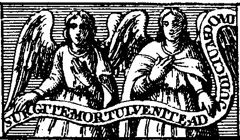
<br><b><font face="Trebuchet MS"><font size="-1">FIGURE 6</font></font></b>
<br><b><i><font face="Trebuchet MS"><font size="-1">(Les deux anges)</font></font></i></b>
</p><p><a  name="Sur un Champ violet et bleu, deux Anges de couleur"></a><b><font face="Trebuchet MS"><font color="#000066"><font size="-1">Sur
un Champ violet et bleu, deux Anges de couleur orang&eacute;e, et leurs
Rouleaux.</font></font></font></b>
</p><p><a  name="CHAPITRE VIII"></a><u><font face="Trebuchet MS"><font color="#000066"><font size="+2">CHAPITRE
VIII</font></font></font></u></p></center>

<p><font face="Trebuchet MS"><font color="#000066">Explication de cette
Figure.</font></font>
</p><p><font face="Trebuchet MS"><font color="#000066">Ce champ violet et bleu
montre que, voulant passer de la Pierre blanche &agrave; la rouge, tu l'as
<i>imbib&eacute;e
</i>d'un
peu de <i>Lait Virginal Solaire, </i>et que ces Couleurs sont sorties de
l'Humidit&eacute; Mercurielle que tu as s&eacute;ch&eacute;e sur la Pierre.
En cette Op&eacute;ration du <i>Rubisiement,
</i>encore que tu imbibes,
tu n'auras gu&egrave;re de noir, mais bien du violet, bleu, et de la couleur
de la queue du Paon : car notre Pierre est si triomphante en <i>siccit&eacute;
</i>qu'incontinent
que ton Mercure la touche, la Nature, s'&eacute;jouissant de sa nature,
se joint &agrave; elle et la boit avidement ; et partant le Noir qui vient
de l'Humidit&eacute; ne se peut montrer qu'un peu sous ces Couleurs violettes
et bleues, autant que la siccit&eacute; (comme il est dit) gouverne maintenant
absolument<a  name="151_t"></a><sup><a href="#151">151</a></sup>.</font></font>
</p><p><font face="Trebuchet MS"><font color="#000066">Je t'ai fait peindre
ces deux Anges avec des ailes, pour te repr&eacute;senter que les deux
Substances de tes <i>Confections,</i>la Mercurielle et sulfureuse, la fixe
aussi bien que la Volatile, &eacute;toientt fix&eacute;es ensemble dans
ton Vaisseau. Car en cette Op&eacute;ration le Corps fixe montera doucement
au Ciel, tout spirituel ; et de l&agrave;, il descendra en la Terre, et
l&agrave; o&ugrave; tu voudras, suivant par tout l'Esprit qui se meut toujours
sur le feu. D'autant qu'ils sont faits d'une m&ecirc;me Nature et le Compos&eacute;
est tout Spirituel, et le Spirituel tout Corporel, tant il a &eacute;t&eacute;
subtilis&eacute; sur notre marbre par les Op&eacute;rations pr&eacute;c&eacute;dentes.
Les Natures donc sont ici transmu&eacute;es et chang&eacute;es en Anges
; c'est-&agrave;-dire, sont faites spirituelles et tr&egrave;s-subtiles,
aussi sont-elles maintenant de vraies Teintures<a  name="152_t"></a><sup><a href="#152">152</a></sup>.</font></font>
</p><p><font face="Trebuchet MS"><font color="#000066">Or souviens-toi de commencer
la <i>Rubification </i>par <i>l'apposition
</i>du Mercure orang&eacute;
rouge<a  name="153_t"></a><sup><a href="#153">153</a></sup> ; mais il n'en
faut gu&egrave;re verser, et seulement une ou deux fois, selon que tu verras.
Car cette Op&eacute;ration se doit parfaire par feu sec, <i>Sublimation
</i>et
<i>Calcination
</i>s&egrave;che.
Et vraiment je te dis ici un secret que tu trouveras bien rarement &eacute;crit.
Aussi je ne suis point Envieux, et pl&ucirc;t &agrave; Dieu que chacun
s&ccedil;&ucirc;t faire de l'Or &agrave; sa volont&eacute;, afin que l'on
v&eacute;c&ucirc;t menant pa&icirc;tre ses gras Troupeaux, sans usure ni
proc&egrave;s, &agrave; l'imitation des Saints Patriarches, usant seulement,
comme les premiers P&egrave;res, de
<i>permutation
</i>de chose &agrave;
chose, pour laquelle avoir il faudroit travailler aussi bien que maintenant.
De peur toutefois d'offenser Dieu, et d'&ecirc;tre l'instrument d'un tel
changement, qui peut-&ecirc;tre seroit mauvais, je n'ai garde de repr&eacute;senter
ou &eacute;crire o&ugrave; est-ce que nous cachons les Clefs qui peuvent
ouvrir toutes les portes des Secrets de la Nature, et renverser la Terre
sens dessus dessous<a  name="154_t"></a><sup><a href="#154">154</a></sup>,
me contentant de montrer des choses qui l'enseigneront &agrave; toute Personne
&agrave; qui Dieu aura permis de conno&icirc;tre
<i>quelle propri&eacute;t&eacute;
a le signe des Balances, quand il est &eacute;clair&eacute; du Soleil et
de Mercure au mois d'octobre<a  name="155_t"></a></i><sup><a href="#155">155</a></sup><i>.</i></font></font>
</p><p><font face="Trebuchet MS"><font color="#000066">Ces Anges sont peints
de couleur orang&eacute;e afin de te faire s&ccedil;avoir que tes <i>Confections
</i>blanches
ont &eacute;t&eacute; un peu plus cuites, et que le noir du violet et bleu
a &eacute;t&eacute; d&eacute;j&agrave; chass&eacute; par le feu. Car cette
couleur orang&eacute;e est compos&eacute;e de ce bel orang&eacute; rouge
dor&eacute; (que tu attens il y a si longtemps) et du reste de ce violet
et bleu que tu as d&eacute;j&agrave; en partie d&eacute;fait. Cet orang&eacute;
d&eacute;montre encore que les Natures se dig&egrave;rent et peu &agrave;
peu se parfont par la gr&acirc;ce de Dieu.</font></font>
</p><p><font face="Trebuchet MS"><font color="#000066">Quant &agrave; leur
Rouleau qui dit : <i>Surgite Mortui veite ad Judicium Domini mei : </i>c'est-&agrave;-dire,
Levez-vous Morts, venez au Jugement de Dieu mon Seigneur, je l'ai plut&ocirc;t
fait mettre pour le seul Sens Th&eacute;ologique que pour l'autre. Il finit
ans la gueule d'un Lion tout rouge, c'est pour montrer qu'il ne faut point
discontinuer cette Op&eacute;ration qu'on ne voye le vrai rouge de Pourpre,
semblable du tout au Pavot<a  name="156_t"></a><sup><a href="#156">156</a></sup>
champ&ecirc;tre et &agrave; la Laque du Lion pur, si ce n'est pour multiplier.</font></font>
<br>
</p><hr>
<center>
<p><a  name="SEPTI&Egrave;ME FIGURE"></a><b><font face="Trebuchet MS"><font color="#000066"><font size="-1">SEPTI&Egrave;ME
FIGURE</font></font></font></b>
</p><p>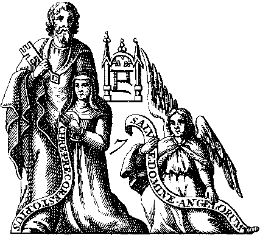
<br><b><font face="Trebuchet MS"><font size="-1">FIGURE 7</font></font></b>
<br><b><i><font face="Trebuchet MS"><font size="-1">(St Pierre avec la clef)</font></font></i></b></p></center>

<p><a  name="Un Homme semblable &agrave; saint Pierre, v&ecirc;tu d'une Robe"></a><b><font face="Trebuchet MS"><font color="#000066"><font size="-1">Un
Homme semblable &agrave; saint Pierre, v&ecirc;tu d'une Robe orang&eacute;e
rouge, tenant une Clef<a  name="157_t"></a><sup><a href="#157">157</a></sup>
en la main droite, et mettant la gauche sur une Femme v&ecirc;tue d'une
Robe orang&eacute;e, qui est &agrave; ses pieds &agrave; genoux, tenant
un Rouleau, o&ugrave; est &eacute;crit <i>Christe Precor, esto pius.
</i>Je
vous prie, &ocirc; Christ, soyez-moi mis&eacute;ricordieux.</font></font></font></b>
</p><center>
<p><a  name="CHAPITRE IX"></a><u><font face="Trebuchet MS"><font color="#000066"><font size="+2">CHAPITRE
IX</font></font></font></u></p></center>

<p><font face="Trebuchet MS"><font color="#000066">Explication de cette
figure.</font></font>
</p><p><font face="Trebuchet MS"><font color="#000066">Regarde cette Femme
v&ecirc;tue de Robe orang&eacute;e, qui ressemble au naturel &agrave; Perrenelle
comme elle &eacute;toit en son adolescence. Elle est peinte en fa&ccedil;on
de Suppliante, &agrave; genoux, les mains jointes, aux pieds d'un Homme,
qui a une Clef en sa main droite, qui l'&eacute;coute gracieusement, et
puis &eacute;tend la main gauche sur elle. Veux-tu s&ccedil;avoir ce que
repr&eacute;sente cela ? C'est la Pierre, qui demande en cette Op&eacute;ration
deux choses au Mercure Solaire des Philosophes (d&eacute;peint sous la
forme de l'Homme), c'est &agrave; s&ccedil;avoir la Multiplication, et
un habit plus riche. Ce qu'elle doit obtenir en ce temps ici. Aussi l'Homme,
lui mettant ainsi la main sur l'&eacute;paule, le lui accorde.</font></font>
</p><p><font face="Trebuchet MS"><font color="#000066">Mais pourquoi as-tu
fait peindre une Femme ? Je pouvois aussi bien faire peindre un Homme ou
un Ange qu'une Femme : (car les Natures sont maintenant toutes spirituelles
et corporelles, masculines et f&eacute;minines) mais j'ai mieux aim&eacute;
te faire peindre une femme, afin que tu juges qu'elle demande plut&ocirc;t
la Multiplication que toute autre chose ; parce que ce sont les plus naturels
et plus propres d&eacute;sirs de la Femelle.</font></font>
</p><p><font face="Trebuchet MS"><font color="#000066">Pour te montrer encore
plus qu'elle demande la Multiplication, j'ai fait peindre l'Homme auquel
elle fait la pri&egrave;re, en la forme d'un Saint Pierre, tenant une Clef,
ayant puissance d'ouvrir et fermer, de lier et d&eacute;lier. D'autant
que les Philosophes envieux n'ont jamais parl&eacute; de la Multiplication
que sous ces communs termes de l'Art. <i>Ouvre, ferme, lie, d&eacute;lie.
</i>Ils
ont appell&eacute; <i>ouvrir </i>et <i>d&eacute;lier
</i>faire le Corps
(qui est toujours dur et fixe) mol, fluide, et coulant comme l'eau, et
<i>fermer
</i>ou
<i>lier
</i>le
coaguler puis apr&egrave;s par d&eacute;coction plus forte, en le remettant
encore une autre fois en la forme de Corps.</font></font>
</p><p><font face="Trebuchet MS"><font color="#000066">Il me falloit donc repr&eacute;senter
un Homme avec une clef, pour t'enseigner qu'il te faut maintenant <i>ouvrir
et fermer, </i>c'est-&agrave;-dire multiplier les Natures germantes et
croissantes. Car tout autant de fois que tu dissoudras et fixeras, autant
de fois ces Natures multiplieront en quantit&eacute;, qualit&eacute; et
vertu, selon la Multiplication de dix, de ce nombre venant &agrave; cent,
de cent &agrave; mille, de mille &agrave; dix mille, de dix mille &agrave;
cent mille, de cent mille &agrave; un million ; et de l&agrave; par m&ecirc;me
Op&eacute;ration jusqu'&agrave; l'infini, ainsi que j'ai fait trois fois,
dont je loue Dieu. Et quand ton <i>Elixir </i>est ainsi conduit &agrave;
l'infini, un grain d'icelui tombant sur une quantit&eacute; m&eacute;tallique
fondue aussi profonde et vaste que l'Oc&eacute;an, il le teindra et convertira
en tr&egrave;s parfait M&eacute;tal, c'est-&agrave;-dire en Argent ou en
Or, selon qu'il aura &eacute;t&eacute; imbib&eacute; et ferment&eacute;,
chassant et &eacute;loignant de soi toute la mati&egrave;re impure et &eacute;trang&egrave;re,
qui s'&eacute;toit jointe en sa premi&egrave;re
<i>Coagulation<a  name="158_t"></a></i><sup><a href="#158">158</a></sup><i>.</i></font></font>
</p><p><font face="Trebuchet MS"><font color="#000066">Par la m&ecirc;me raison
que j'ai fait peindre une Clef &agrave; l'Homme, qui est sous la forme
d'un Saint Pierre, pour signifier que la Pierre demandoit d'&ecirc;tre
ouverte et ferm&eacute;e pour multiplier, par m&ecirc;me raison aussi,
pour te montrer avec quel Mercure tu dois faire cela, j'ai donn&eacute;
&agrave; l'Homme un habit orang&eacute; rouge, et un orang&eacute; &agrave;
la Femme.</font></font>
</p><p><font face="Trebuchet MS"><font color="#000066">Cela ne suffise pour
ne sortir du silence de Pythagoras, et pour t'enseigner que la Femme, c'est-&agrave;-dire
notre Pierre, demande d'avoir la riche parure et couleur de Saint Pierre.
Elle a &eacute;crit en son Rouleau <i>Christo precor esto pius : </i>J&eacute;sus-Christ
soyez-moi doux, comme si elle disoit : Seigneur soyez-moi doux, et ne permettez
pas que celui qui sera parvenu jusqu'ici g&acirc;te tout par trop de feu<a  name="159_t"></a><sup><a href="#159">159</a></sup>.
Il est bien vrai que dor&eacute;navant je ne craindrai plus les Ennemis,
et que tout feu me sera &eacute;gal : toutefois, le Vaisseau qui me contient
est toujours fragile. Car si l'on augmente trop le feu<a  name="160_t"></a><sup><a href="#160">160</a></sup>,
il cr&egrave;vera, et s'&eacute;clatant m'emportera et me s&egrave;mera
malheureusement parmi les cendres.</font></font>
</p><p><font face="Trebuchet MS"><font color="#000066">Prends donc garde &agrave;
ton feu en ce pas, <i>r&eacute;gissant </i>et gouvernant doucement en patience
cette Quintessence admirable, car il lui faut augmenter son feu, mais non
par trop<a  name="161_t"></a><sup><a href="#161">161</a></sup>. Et prie
la souveraine bont&eacute; qu'elle ne permette point que les malins Esprits
qui gardent les Mines et les tr&eacute;sors, d&eacute;truisent ton Op&eacute;ration
ou fascinent ta vue, quand tu consid&egrave;res ces incompr&eacute;hensibles
mouvements de cette Quintessence dans ton Vaisseau.</font></font>
<br>
</p><hr>
<center>
<p><a  name="HUITI&Egrave;ME FIGURE"></a><b><font face="Trebuchet MS"><font color="#000066"><font size="-1">HUITI&Egrave;ME
FIGURE</font></font></font></b>
</p><p>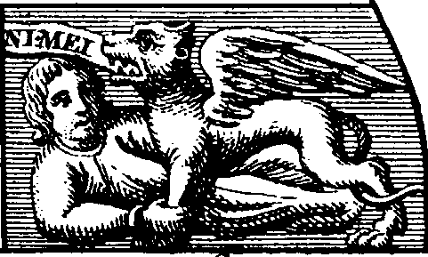
<br><b><font face="Trebuchet MS"><font size="-1">Figure 8</font></font></b>
<br><b><i><font face="Trebuchet MS"><font size="-1">(l'homme rouge-vermillon
et le lion)</font></font></i></b></p></center>

<p><a  name="Sur un Champ violet obscur, un Homme rouge de"></a><b><font face="Trebuchet MS"><font color="#000066"><font size="-1">Sur
un Champ violet obscur, un Homme rouge de pourpre, tenant le pied d'un
Lion rouge de Laque, qui a des ailes, et semble ravir et emporter l'Homme.</font></font></font></b>
</p><center>
<p><a  name="CHAPITRE X."></a><u><font face="Trebuchet MS"><font color="#000066"><font size="+2">CHAPITRE
X.</font></font></font></u></p></center>

<p><font face="Trebuchet MS"><font color="#000066">Explication de cette
Figure.</font></font>
</p><p><font face="Trebuchet MS"><font color="#000066">Ce Champ violet et obscur
repr&eacute;sente que la Pierre a obtenu, par l'enti&egrave;re D&eacute;coction,
les beaux v&ecirc;tements enti&egrave;rement orang&eacute;s et rouges qu'elle
demandoit &agrave; Saint Pierre, qui en &eacute;toit v&ecirc;tu, et que
la compl&egrave;te et parfaite digestion (signifi&eacute;e par l'enti&egrave;re
couleur orang&eacute;e) lui a fait laisser sa vieille Robe orang&eacute;e.
La couleur rouge de Laque de ce Lion volant, semblable &agrave; ce pur
Escarlatin du grain de la vrayement rouge Grenade<a  name="162_t"></a><sup><a href="#162">162</a></sup>,
d&eacute;montre qu'elle est maintenant accomplie en toute droiture et &eacute;galit&eacute;.
Qu'elle est comme un Lion, d&eacute;vorant toute Nature pure M&eacute;tallique,
et la changeant en sa vraie Substance, en vrai et pur Or plus fin que celui
des meilleures Mines.</font></font>
</p><p><font face="Trebuchet MS"><font color="#000066">Aussi elle emporte maintenant
l'Homme hors de cette vall&eacute;e de mis&egrave;res, c'est-&agrave;-dire
hors des incommodit&eacute;s de la pauvret&eacute; et infirmit&eacute;,
et avec ses ailes le soul&egrave;ve glorieusement hors des croupissantes
eaux d'Egypte (qui sont les pens&eacute;es ordinaires des Mortels) et,
lui faisant m&eacute;priser la vie et les richesses pr&eacute;sentes, le
fait nuit et jour m&eacute;diter en DIEU et les Saints, souhaiter le Ciel
Empir&eacute;e, et boire les douces sources des Fontaines de l'esp&eacute;rance
&eacute;ternelle.</font></font>
</p><p><font face="Trebuchet MS"><font color="#000066">Lou&eacute; soit Dieu
&eacute;ternellement, qui nous a fait la gr&acirc;ce de voir cette belle
et toute parfaite Couleur de Pourpre, cette belle Couleur du Pavot champ&ecirc;tre
du Rocher, cette Couleur <i>Tyriene<a  name="163_t"></a></i><sup><a href="#163">163</a></sup>&eacute;tincellante
et flamboyante, qui est incapable de changement et d'alt&eacute;ration
: sur laquelle le Ciel m&ecirc;me et son Zodiaque ne peut plus avoir domination
ni puissance, dont l'&eacute;clat rayonnant<a  name="164_t"></a><sup><a href="#164">164</a></sup>
et &eacute;blouissant semble en quelque fa&ccedil;on communiquer &agrave;
l'Homme quelque chose de surc&eacute;leste, le faisant (quand il la contemple
et conno&icirc;t) &eacute;tonner, trembler, et fr&eacute;mir en m&ecirc;me
tems.</font></font>
</p><p><font face="Trebuchet MS"><font color="#000066">O Seigneur, faites-nous
la gr&acirc;ce que nous en puissions bien user &agrave; l'augmentation
de la Foi, au profit de notre Ame, et accroissement de la gloire de ce
noble Royaume. Ainsi soit-il.</font></font></p></blockquote>

<center><b><font face="Trebuchet MS"><font color="#000066">FIN</font></font></b>
<hr size="1" width="100%">
<br><a  name="Notes"></a><font face="Trebuchet MS"><font color="#000066"><font size="+1">Notes</font></font></font></center>

<blockquote><a  name="1"></a><font face="Trebuchet MS"><font color="#000066"><a href="#1_t">1</a>.
A chaque fois qu'un Adepte &laquo; <i>loue le Seigneur</i> &raquo;, il
veut signifier qu'une substance doit &ecirc;tre mise en digestion (percolo
= honorer mais aussi dig&eacute;rer), par exemple du tartre afin d'obtenir
de la cr&egrave;me de tartre ;</font></font>
<br><a  name="2."></a><font face="Trebuchet MS"><font color="#000066"><a href="#2_t">2</a>.
All&eacute;gorie concernant le Sel des Sages (assimilable au Corps, l'Esprit
&eacute;tant le Mercure et l'&Acirc;me, le principe Soufre) ; la r&eacute;f&eacute;rence
&agrave; la boue (</font><font color="#006600">lutum</font><font color="#000066">)
fait allusion &agrave; une terre (ici, alumineuse) ;</font></font>
<br><a  name="3"></a><font face="Trebuchet MS"><font color="#000066"><a href="#3_t">3</a>.
c'est-&agrave;-dire le symbole de la Terre :&nbsp;.
Les cercles mondains &eacute;voquent les autres plan&egrave;tes et les
r&eacute;gimes de temp&eacute;rature ; on peut y voir aussi des r&eacute;surgences
platoniciennes. N'oublions pas que tous les alchimistes sont, soit des
platoniciens, soit des n&eacute;o platoniciens. Voyez la section <i><font size="-1"><a href="../original/idee-alchimique-5.html#ATLAS.">Atlas
des Connaissances humaines</a></font></i> de <a href="../original/plan-chevreul.html">Chevreul</a>
;</font></font>
<br><a  name="4"></a><font face="Trebuchet MS"><font color="#000066"><a href="#4_t">4</a>.
la <a href="../original/reincrud.html">r&eacute;incrudation</a> ;</font></font>
<br><a  name="5"></a><font face="Trebuchet MS"><font color="#000066"><a href="#5_t">5</a>.
l'airain : il s'agit du &laquo; fumier &raquo; des philosophes, aussi d&eacute;nomm&eacute;
laton,&nbsp;<a  name="laiton_index"></a><a href="#Laiton">laiton</a>, corbeau,
Saturne, V&eacute;nus, cuivre. D'autres l'ont appel&eacute; chrysocolle
; le mot chrysocolle est emprunt&eacute; au grec &laquo; soudure d'or &raquo;.
La chrysocolle, de couleur verte, doit son nom &agrave; l'emploi qu'en
faisaient les orf&egrave;vres pour souder l'or parce qu'elle avait la propri&eacute;t&eacute;
d'abaisser la temp&eacute;rature de liqu&eacute;faction. La chrysocolle
est identifi&eacute;e &agrave; la malachite -cit&eacute;e par Fulcanelli-
hydrocarbonate basique de cuivre (Cu<sub>2</sub>[(OH)<sub>2</sub>CO<sub>3</sub>]),
apparent&eacute;e &agrave; l'azurite. Elle se pr&eacute;sente sous la forme
de grappes d'o&ugrave; son nom de &laquo; raisin &raquo; chez Pline. Une
fois extraite, la chrysocolle ne peut &ecirc;tre utilis&eacute;e brute,
elle est pr&eacute;par&eacute;e par pulv&eacute;risation, tamisage, lavage,
s&eacute;chage. Dans son <i>De Architectura</i>, (Livre VII) Vitruve cite
les mines de cuivre de Mac&eacute;doine mais il existe d'autres lieux d'extraction,
l'Arm&eacute;nie en particulier qui produit selon Pline la meilleure chrysocolle.
A noter que l'azurite bleu vert (<font size="-1">Cu<sub>3</sub>[OHCO<sub>3</sub>]2</font>)
est de l'</font><font color="#006600">arm&eacute;nium</font><font color="#000066">
qu'on trouve souvent associ&eacute;e &agrave; la malachite ;</font></font>
<br><a  name="6"></a><font face="Trebuchet MS"><font color="#000066"><a href="#6_t">6</a>.
Allusion &agrave; l'Air des Sages dont parlera plus tard Philal&egrave;the
(<i><a href="../original/philalethe-6.html">Intro&iuml;tus, VI</a></i>) ;</font></font>
<br><a  name="7"></a><font face="Trebuchet MS"><font color="#000066">7.
Peut renvoyer &agrave; Saint-Jacques de Compostelle ou &agrave; la coquille
Saint-Jacques ;</font></font>
<br><a  name="8"></a><font face="Trebuchet MS"><font color="#000066"><a href="#8_t">8</a>.
Il s'agit du livre mythique d'<i><a href="../original/gravures.html" class="lien-repare" title="ancre absente de la page d'origine : lien ramené en haut de page">Abraham
le Juif</a></i> qui n'a jamais exist&eacute; que dans l'imagination de
N. Flamel ainsi que l'a magistralement d&eacute;montr&eacute; Fulcanelli
; ce livre a &eacute;t&eacute; pour le pseudo-Flamel l'occasion d'une amorce
pour la r&eacute;daction des <b><i><font size="-1">Figures hi&eacute;roglyphiques</font></i></b>
&agrave; l'instar des cath&eacute;drales pour Fulcanelli ; il s'agit dans
tous les cas d'un pr&eacute;texte ;</font></font>
<br><a  name="9"></a><font face="Trebuchet MS"><font color="#000066"><a href="#9_t">9</a>.
Allusion probable &agrave; la myrrhe qui est extraite d'un arbrisseau (commiphora).
La myrrhe &eacute;tait n&eacute;cessaire &agrave; la fabrication de vases
pr&eacute;cieux (vases murrins) contenant de la murre (<a href="../original/reincrud.html" class="lien-repare" title="ancre absente de la page d'origine : lien ramené en haut de page">spath
fluor</a>). On a vu ailleurs (<b><i><font size="-1"><a href="../original/philalethe-6.html#Alun_1">Intro&iuml;tus,
VI</a></font></i></b>) que les arbrisseaux sont n&eacute;cessaires pour
calciner l'alun schisteux.</font></font>
<br><a  name="10"></a><font face="Trebuchet MS"><font color="#000066"><a href="#10_t">10</a>.
On a d&eacute;j&agrave; vu le rapport entre le cuivre, les efflorescences
d'alun sur le cuivre de <a href="../original/chimie-alchemy.html#Pline">Chypre</a> et
les rapports entre le cuivre et la chrysocolle, via la malachite. Pour
la malachite, voyez la section <a href="../original/fontenay.html">Fontenay</a>.</font></font>
<br><a  name="11"></a><font face="Trebuchet MS"><font color="#000066"><a href="#11_t">11</a>.
D'o&ugrave; l'importance de la connaissance du grec pour la compr&eacute;hension
des textes alchimiques ainsi que l'atteste Fulcanelli ;</font></font>
<br><a  name="12"></a><font face="Trebuchet MS"><font color="#000066"><a href="#12_t">12</a>.
Deuxi&egrave;me mention du principe Soufre (apr&egrave;s le cuivre), le
fer peut aussi renvoyer &agrave; Mars et compte tenu de l'&eacute;quivalence
relev&eacute;e par Isaac Newton entre Ari&egrave;s et Ar&egrave;s, &agrave;
la sibine (sulfure d'antimoine) ; le burin est aussi un terme de cabale
qui renvoie au Ciel chymique, car le mot coelum d&eacute;signe ausi bien
le ciel que le burin avec lequel travaille le statuaire. On trouve dans
Ovide [<i><font size="-1">M&eacute;tamorphoses, Livre I, 8]</font></i> d'extraordinaires
allusions au marbre statuaire, &agrave; la chaux et au statuaire [<font size="-1">Strongylos</font>].
La
<u>coquille</u> figure aussi le principe constitutif du marbre statuaire
que le burin, le ciseau herm&eacute;tique [</font><font color="#660000"><font size="-1">caelum
&egrave; ciel, mais aussi burin</font></font><font color="#000066">] de
l'artiste va pouvoir fa&ccedil;onner &agrave; sa guise [&agrave; son gr&egrave;s]
en sorte de le transformer en Mercure philosphique [</font><font color="#660000"><font size="-1">alb&acirc;tre
des Sages, sel complexe renfermant des sulfures, sulfates et oxydes</font></font><font color="#000066">]</font></font>
<br><a  name="13"></a><font face="Trebuchet MS"><font color="#000066"><a href="#13_t">13</a>.
Renvoie aux trois sublimations initiales dans le traitement du Sel des
Sages (cf. <b><i><font size="-1"><a href="../original/chimie-alchemy.html" class="lien-repare" title="ancre absente de la page d'origine : lien ramené en haut de page">Tripied</a></font></i></b>)
;</font></font>
<br><a  name="14"></a><font face="Trebuchet MS"><font color="#000066"><a href="#14_t">14</a>.
Le chiffre 7, tout &eacute;tudiant en alchimie le sait, est omnipr&eacute;sent
; il renvoie probablement &agrave; Apollon (cf. ce que nous en disons au
commentaire de l'<b><i><font size="-1"><a href="../original/philalethe-7.html">Intro&iuml;tus,
VII</a></font></i></b>) ; le chiffre 7 renvoie aussi aux sept cercles des
plan&egrave;tes et &agrave; l'&acirc;me du monde de Platon ; cf. <a href="../original/plan-introduction.html">Id&eacute;e
alchimique</a>, <b><a href="../original/idee-alchimique-5.html">5</a></b>, <i><a href="../original/idee-alchimique-5.html#ATLAS.">Atlas</a></i>
;</font></font>
<br><a  name="15"></a><font face="Trebuchet MS"><font color="#000066"><a href="#15_t">15</a>.
Il faut entendre ici un min&eacute;ral d'aspect feuillet&eacute;, probablement
du schiste pyriteux ou alunif&egrave;re ;</font></font>
<br><a  name="16"></a><font face="Trebuchet MS"><font color="#000066"><a href="#16_t">16</a>.
Incarnation du double Mercure, les deux serpents &eacute;voquent les principes
du Lion vert ou dissolvant universel ; le caduc&eacute;e est le symbole
du messager ou de l'envoy&eacute; ou encore de l'ambassadeur ; ce terme
se traduit par caduceator qui renvoit &agrave;&nbsp;<a  name="caduc&eacute;e"></a>caduc&eacute;e
= </font><font color="#006600">caduceus</font><font color="#000066"> (verge
que portait Mercure ou les h&eacute;rauts). Le terme traduit aussi</font></font>
<center>
<p>
<br><b><font face="Trebuchet MS"><font color="#000066"><font size="-1">FIGURE
III</font></font></font></b>
<br><b><i><font face="Trebuchet MS"><font color="#000066"><font size="-1">(XVII<sup>e</sup>
si&egrave;cle, St. Andrews)</font></font></font></i></b></p></center>

<p><font face="Trebuchet MS"><font color="#000066">sans doute une pr&eacute;cipitation
(</font><font color="#006600">caduciter</font><font color="#000066"> =
en pr&eacute;cipitant) mais l'allusion est double, car pr&eacute;cipiter
peut aussi bien signifier une v&eacute;ritable pr&eacute;cipitation, c'est-&agrave;-dire
l'obtention d'une substance insoluble obtenue par l'action d'un r&eacute;actif,
qui se s&eacute;pare d'une solution et tombe au fond du vase, qu'une pr&eacute;cipitation
au sens de &laquo; faire tomber d'un lieu &eacute;lev&eacute; &raquo; ou
&laquo; &eacute;voluer avec rapidit&eacute;, fluidit&eacute; &raquo; ;
dans ce dernier cas, l'all&eacute;gorie pourrait se rapporter &agrave;
un corps chimique capable de se fluidifier facilement et compl&egrave;tement
(<a href="../original/reincrud.html" class="lien-repare" title="ancre absente de la page d'origine : lien ramené en haut de page">spath fluor</a>). L'all&eacute;gorie
est complexe, car dans le premier cas (s&eacute;paration) nous sommes dans
le premier oeuvre (obtention du 1<sup>er</sup> Mercure ou Sel des philosophes)
tandis qu'ailleurs, nous sommes au troisi&egrave;me oeuvre. Notons enfin
que ces serpents enroul&eacute;s autour du caduc&eacute;e montrent comment
le volatil s'unit au fixe et donne une repr&eacute;sentation compl&egrave;te
du signe des G&eacute;meaux ; cf.<a href="../original/humide-radical.html"> l'humide
radical m&eacute;tallique</a> ;</font></font>
<br><a  name="17"></a><font face="Trebuchet MS"><font color="#000066"><a href="#17_t">17</a>.
All&eacute;gorie de la fixation du Mercure &agrave; la <a href="../original/toyson.html">Toison
d'or</a> ; c'est aussi l'&eacute;quivalent de l'une des deux colombes de
Philal&egrave;the, perch&eacute;e sur ce ch&ecirc;ne. C'est donc l'exact
&eacute;quivalent du Mercure fix&eacute; sur le ch&ecirc;ne que nous d&eacute;peint
Nicolas Flamel dans ses <b><i><font size="-1">Figures Hi&eacute;roglyphiques</font></i></b>
; c'est aussi Cadmos per&ccedil;ant le python ; nous retrouvons Cadmos
(<b><i><font size="-1">Les Myst&egrave;res</font></i></b>, p.181) quand Fulcanelli
commente le mythe de Tristan de L&eacute;onois :</font></font>
</p><blockquote><font face="Trebuchet MS"><font color="#000066">"</font><i><font color="#cc0000"><font size="-1">Ce
combat singulier des corps chimiques dont la combinaison procure le dissolvant
secret (et le vase du compos&eacute;), a fourni le sujet de quantit&eacute;
de fables profanes et d&#8217;all&eacute;gories sacr&eacute;es. C&#8217;est Cadmos
per&ccedil;ant le serpent contre un ch&ecirc;ne...</font></font></i><font color="#000066">"</font></font></blockquote>

<center>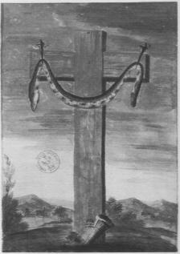
<br><b><font face="Trebuchet MS"><font color="#000066"><font size="-1">FIGURE
IV</font></font></font></b>
<br><b><i><font face="Trebuchet MS"><font color="#000066"><font size="-1">(vers
1700, Paris, Biblioth&egrave;que Nationale)</font></font></font></i></b></center>

<p><font face="Trebuchet MS"><font color="#000066">En outre, la l&eacute;gende
veut que&nbsp;<a  name="Cadmus_index"></a>Cadmus (Cadmos) re&ccedil;ut de
la Pythie l&#8217;ordre de suivre une vache qui porterait sur ses flancs un disque
semblable &agrave; celui de la Lune. Cadmos trouva l&#8217;animal en Phocide
et suivit la b&ecirc;te jusqu&#8217;en B&eacute;otie. L&#8217;animal se coucha alors
et Cadmos voulut l&#8217;immoler : il s&#8217;aper&ccedil;ut alors que la fontaine
o&ugrave; il allait puiser l&#8217;eau du sacrifice &eacute;tait gard&eacute;e
par un dragon. Il le tua et sema les dents du monstre, qui donn&egrave;rent
naissance &agrave; une multitude de g&eacute;ants qui s&#8217;entretu&egrave;rent.
Fulcanelli nous reparle de Cadmos (<i>Les Myst&egrave;res</i>, p.119) en
nous renvoyant au Philal&egrave;the ainsi qu&#8217;&agrave; l&#8217;une des <b><i><font size="-1"><a href="../original/emblemes.html">Douze
Clefs</a></font></i></b> de Basile Valentin :</font></font>
</p><p><font face="Trebuchet MS"><font color="#000066">"</font><i><font color="#cc0000"><font size="-1">Presque
tous les philosophes ont parl&eacute; de ce vaisseau absolument n&eacute;cessaire
pour cette op&eacute;ration [la fabrication du dissolvant universel ou
eau vive]. Philal&egrave;the le d&eacute;crit par la fable du serpent Python,
que Cadmus per&ccedil;a d&#8217;outre en outre contre un chesne...</font></font></i><font color="#000066">"</font></font>
</p><p><font face="Trebuchet MS"><font color="#000066">Nous rappelons que la
<i><a href="../original/toyson.html">Toison
d'Or</a></i> a fait l'objet d'un article entier d&ucirc; &agrave; Eug&egrave;ne
Canseliet (<i>Alchimie</i>, Pauvert, 1964, 1978) ; cet article a trait
principalement au symbolisme du <a href="../original/sulf-potasse.html">tartre</a>
et du <a href="../original/salpetre.html">salp&ecirc;tre</a>.</font></font>
<br><a  name="18"></a><font face="Trebuchet MS"><font color="#000066"><a href="#18_t">18</a>.
Selon J. Van Lennep, le serpent d&eacute;signe &agrave; nouveau le mercure,
le seul m&eacute;tal &laquo; fugitif &raquo; et le d&eacute;sert &eacute;voque
la dessication lors de laquelle il sera coagul&eacute; puis fix&eacute;
[</font><font color="#660000"><font size="-1">au ch&ecirc;ne</font></font><font color="#000066">].
Cette multitude de serpents peut aussi &eacute;voquer l'animation du Mercure.</font></font>
</p><center>
<p>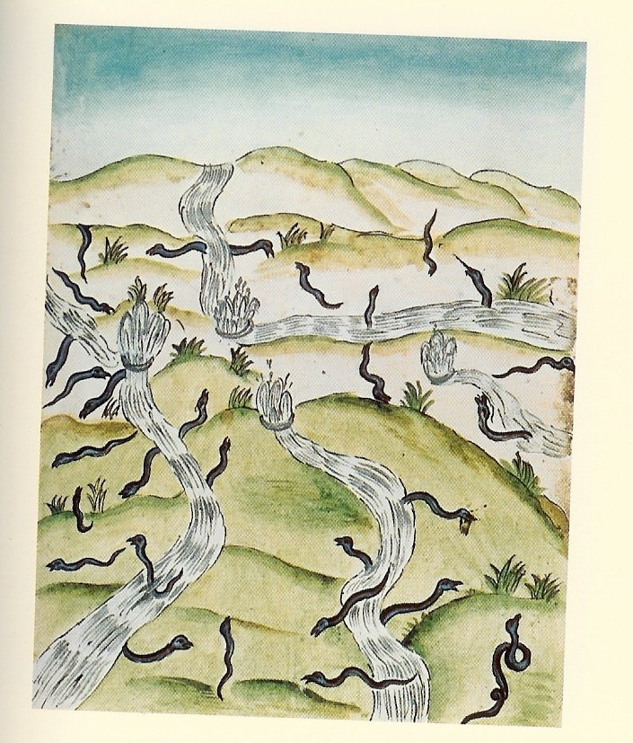
<br><b><font face="Trebuchet MS"><font color="#000066"><font size="-1">FIGURE
V</font></font></font></b>
<br><b><i><font face="Trebuchet MS"><font color="#000066"><font size="-1">(in
Philosopharum...d&eacute;but XVII<sup>e</sup> si&egrave;cle)</font></font></font></i></b></p></center>

<p><font face="Trebuchet MS"><font color="#000066">Ce d&eacute;sert (</font><font color="#006600">desertus</font><font color="#000066">
= qui abandonne) traduit la double qualit&eacute; du Mercure : apr&egrave;s
avoir &laquo; servi et accompagn&eacute; &raquo; le Corps et l'&Acirc;me,
il est destin&eacute; &agrave; dispara&icirc;tre, &agrave; se volatiliser,
laissant seul le Rebis canoniquement uni et r&eacute;incrud&eacute; ; les
fontaines &eacute;voquent la fluidit&eacute; du principe mercuriel (cf.
note <a href="../original/symb-dir-prim.html#Foxcroft">17</a> de notre section sur
les textes modernes - Alchimie (I)) ;</font></font>
<br><a  name="19"></a><font face="Trebuchet MS"><font color="#000066"><a href="#19_t">19</a>.
Renvoie &agrave; &laquo; <i><font size="-1">probe, de bon aloi</font></i>
&raquo; ; Fulcanelli nous dit que le Mercure commun des Sages est le loyal
serviteur de l'Artiste ; par ailleurs probe renvoie &agrave; aerarium,
temple d&eacute;di&eacute; &agrave; Saturne ; cf. <a href="../original/gardes-corps.html">Gardes
du Corps</a> ;</font></font>
<br><a  name="20"></a><font face="Trebuchet MS"><font color="#000066"><a href="#20_t">20</a>.
&laquo; Maranatha &raquo; : terme employ&eacute; par les premiers Chr&eacute;tiens
qui signifie : &laquo; </font><i><font color="#660000"><font size="-1">Que
le Seigneur vienne ! </font></font></i><font color="#000066">&raquo; ou
encore &laquo; </font><i><font color="#660000"><font size="-1">Seigneur,
viens !</font></font></i><font color="#000066"> &raquo;. A c&ocirc;t&eacute;
de ce sens clair, on pourrait par cabale voir encore sous ce terme, regroup&eacute;es,
deux divinit&eacute;s : Athana (Minerve) et Athamas. D'apr&egrave;s E.
Canseliet (Alchimie, p. 199) :</font></font>
</p><p><i><font face="Trebuchet MS"><font color="#000066">"</font><font color="#cc0000"><font size="-1">...Athamas
est le m&ecirc;me mot qu'Adamas...Athamas renouvelle donc la personnalit&eacute;
puissante de l'Adam primordial, de celui dont parle Saint-Paul, pour l'opposer
au second, et qui aurait &eacute;t&eacute; fait de terre rouge [</font></font></font></i><font face="Trebuchet MS"><font color="#cc0000"><font size="-1">cf.
note <a href="#130">130</a><i>]&nbsp; par Dieu</i></font></font><i><font color="#000066">"</font></i></font>
</p><p><font face="Trebuchet MS"><font color="#000066">Un trait d'union peut
&ecirc;tre trouv&eacute; entre Minerve et l'une des gravures du <b><i><font size="-1"><a href="../original/mutus-liber.html">Mutus
Liber</a></font></i></b>, par l'entremise de Jupiter :</font></font>
<br><font face="Trebuchet MS"><font color="#000066">Fulcanelli dans les
<i>DM,
II</i>, p.245, o&ugrave; il aborde les <a href="../original/gardes-corps.html">Vertus</a>,
&agrave; commencer par la Justice nous dit que :</font></font>
</p><p><font face="Trebuchet MS"><font color="#000066">"</font><i><font color="#cc0000"><font size="-1">Dans
l'antiquit&eacute; romaine, on appelait peplum...un voile orn&eacute; de
broderie dont on habillait la statue de Minerve, fille de Jupiter...</font></font></i><font color="#000066">"</font></font>
</p><p><font face="Trebuchet MS"><font color="#000066">Ce voile ou cette toile
n'est pas sans nous &eacute;voquer la <font size="-1"><a href="#" title="lien mort dans l'archive">IV<sup>e</sup>
planche</a></font> du <b><i><font size="-1"><a href="../original/mutus-liber.html">Mutus
liber</a></font></i></b> : on y voit un couple recueillir la ros&eacute;e
de mai et en arri&egrave;re plan un b&eacute;lier &agrave; gauche, un taureau
&agrave; droite et des toiles tendues gorg&eacute;es de ros&eacute;e. Au
loin, un arc-en-ciel et les luminaires (cf. notre section sur la <a href="../original/prima-materia.html" class="lien-repare" title="ancre absente de la page d'origine : lien ramené en haut de page">mati&egrave;re
premi&egrave;re</a>). Quant &agrave; Athamas, il est le p&egrave;re de
Phrixos et de Hell&eacute; dont nous avons d&eacute;j&agrave; soulign&eacute;
l'importance, en liaison avec le mythe de la <a href="../original/philalethe-6.html#Toison%20d%27or">Toison
d'Or</a> et celui de <a href="../original/symb-dir-prim.html#c">Cyb&egrave;le</a>,
compendium de l'athanor secret.</font></font>
<br><a  name="21"></a><font face="Trebuchet MS"><font color="#000066"><a href="#21_t">21</a>.
C'est-&agrave;-dire pr&ecirc;tre ; &agrave; ce propos,&nbsp;<a  name="Galle_3"></a>Galle
(au masculin) renvoie &agrave; un pr&ecirc;tre de Cyb&egrave;le et d&#8217;Attis
; par ailleurs, dans les<i> DM, I</i> Fulcanelli (p.399) &eacute;voque
la mati&egrave;re premi&egrave;re et ses rapports avec : "</font><i><font color="#cc0000"><font size="-1">l&#8217;&eacute;tain
grenaill&eacute; et la noix de&nbsp;<a  name="galle_index"></a>galle</font></font></i><font color="#000066">"
; la noix de&nbsp;<a  name="galle"></a>galle renvoie &agrave; " kekis "
et " kekidos " et il s&#8217;agit de l&#8217;atteinte des feuilles de ch&ecirc;ne par
la piq&ucirc;re d&#8217;un hym&eacute;nopt&egrave;re cynipid&eacute; (de " kunos
", chien et " ips ", ver) : on r&eacute;coltait le suc de ces tumeurs pour
leur richesse en tanin. Cela nous renvoie au&nbsp;<a  name="kerm&egrave;s_2"></a>kerm&egrave;s
et au ch&egrave;ne kerm&egrave;s qui peut &ecirc;tre parasit&eacute; par
une cochenille dont on tirait autrefois la teinture &eacute;carlate. Je
n'ai pas besoin d'insister ici sur le parall&egrave;le &eacute;vident avec
la kerm&eacute;site ou trisulfure d'antimoine (voir la section sur la <a href="../original/compendium.html">Pierre</a>).</font></font>
<br><a  name="22"></a><font face="Trebuchet MS"><font color="#000066"><a href="#22_t">22</a>.
L'invention de la pierre philosophale, qui sous tend &eacute;videmment
toute id&eacute;e de &laquo; transmutation m&eacute;tallique &raquo; semble
avoir &eacute;t&eacute; le fait de <font size="-1"><a href="../original/roger-bacon.html">Roger
Bacon</a></font> (1220-1294). Ses id&eacute;es sur l'art d'alchimie &eacute;taient
des plus enthousiastes. Bacon en traita notamment dans son
<b><i><font size="-1"><a href="../original/miroir-bacon.html">Opus
Tertium</a></font></i></b> :</font></font>
</p><p><i><font face="Trebuchet MS"><font color="#000066">"</font><font color="#cc0000"><font size="-1">Si
l'on projette une livre de m&eacute;decine sur mille de plomb, elle les
transforme en or...si l'on a su s&eacute;parer habilement les quatre &eacute;l&eacute;ments
contenus dans un corps, et les avoir r&eacute;duits ensuite en quelque
chose de parfaitement &eacute;quilibr&eacute;. La puissance [contenue en
cette chose] pourra purger [les m&eacute;taux imparfaits] de toute leur
imperfection. Soixante livres purgeront un millier de milliers de livres
et les transmueront</font></font><font color="#000066">"</font></font></i><font face="Trebuchet MS"><font color="#000066">
(in <i>Trait&eacute; d'alchimie pratique</i> de l'<i>Opus Minus</i> ed.
Brewer).</font></font>
</p><p><a  name="23"></a><font face="Trebuchet MS"><font color="#000066"><a href="#23_t">23</a>.
Il existe des vaisseaux physiques et des vaisseaux &laquo; spirituels &raquo;
; les min&eacute;ralogistes du XIX<sup>e</sup> si&egrave;cle (Henri De
<a href="../original/mineralogistes.html#Charles%20et%20Henri%20Sainte%20Claire%20Deville">Sainte-Claire
Deville</a> en particulier) ont r&eacute;ussi &agrave; obtenir la synth&egrave;se
des corindons color&eacute;s en utilisant des vapeurs de fluorure d'aluminium
et de bore (cf. la section sur le <font size="-1"><a href="../original/imitat-prec.html#fluorure">Mercure
philosophique</a></font>) ; les vaisseaux physiques sont les creusets brasqu&eacute;s
pour la voie <a href="../original/imitat-prec.html#voie_seche">s&egrave;che</a> et les
matras lut&eacute;s pour la voie<a href="../original/imitat-prec.html#voie_humide">
humide</a> ;</font></font>
<br><a  name="24"></a><font face="Trebuchet MS"><font color="#000066"><a href="#24_t">24</a>.
Les couleurs, en alchimie, peuvent se rapporter soit &agrave; la coloration
r&eacute;elle des corps chimiques employ&eacute;s, soit &agrave; l'intensit&eacute;
du feu (chaleur rouge, chaleur blanche, etc.), soit enfin au stade de l'oeuvre,
qui ne correspond pas exactement &agrave; la r&eacute;alit&eacute;... ;</font></font>
<br><a  name="25"></a><font face="Trebuchet MS"><font color="#000066"><a href="#25_t">25</a>.
Il se peut qu'il s'agisse l&agrave; de l'une des mati&egrave;res premi&egrave;res.
Le 1<sup>er</sup> agent peut &ecirc;tre aussi identifi&eacute; &agrave;
l'&eacute;p&eacute;e du chevalier dans son combat contre le dragon &eacute;cailleux
: il peut s'agir soit d'<font size="-1"><a href="../original/compendium.html#3">huile
de vitriol</a></font> soit d'<font size="-1"><a href="../original/compendium.html#4">esprit
de sel </a></font>; l'allusion au 4<sup>&egrave;me</sup> et au 5<sup>&egrave;me</sup>
feuillet permet d'identifier ce 1<sup>er </sup>agent comme le sulfure d'antimoine
; mais cela d&eacute;pend de la voie employ&eacute;e. Cet agent de liquation
peut aussi &ecirc;tre identifi&eacute; &agrave; l'un des deux gnomes de
la <font size="-1"><a href="#chemin%C3%A9e">chemin&eacute;e</a></font> alchimique
du ch&acirc;teau de Fontenay-Le-Comte, l'autre gnome figurant le patient
; nous aurions tendance &agrave; voir dans &laquo; l'agent &raquo; la </font><font color="#006600">chaux
</font><font color="#000066">(calx)
et dans le &laquo; patient &raquo; du </font><font color="#006600">carbonate</font><font color="#000066">
de potasse ;</font></font>
<br><a  name="26"></a><font face="Trebuchet MS"><font color="#000066"><a href="#26_t">26</a>.
Dans ce 4<sup>&egrave;me</sup> feuillet, N. Flamel &eacute;voque plusieurs
symboles : le caduc&eacute;e, le casque, la faux, les ailes aux talons,
Mercure et Saturne. Le caduc&eacute;e est l&agrave; pour caduceus = verge
que portaient Mercure et les envoy&eacute;s, les</font></font>
</p><center>
<p>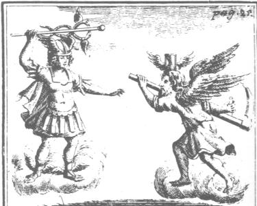
<br><b><font face="Trebuchet MS"><font color="#000066"><font size="-1">FIGURE
VI</font></font></font></b>
<br><b><i><font face="Trebuchet MS"><font color="#000066"><font size="-1">(Gravure
des Oeuvres chymiques de N. Flamel, Hamburg, 1681)</font></font></font></i></b></p></center>

<p><font face="Trebuchet MS"><font color="#006600">h&eacute;rauts</font><font color="#000066">.
On peut citer aussi caduceator : envoy&eacute;, parlementaire, ambassadeur
et caduciter = en pr&eacute;cipitant. Le caduc&eacute;e appara&icirc;t
peu dans les textes et s'av&egrave;re assez complexe &agrave; analyser.
Fulcanelli le cite aux <i>DM, I</i>, p.428 comme :</font></font>
</p><p><i><font face="Trebuchet MS"><font color="#000066">"</font><font color="#cc0000"><font size="-1">la
marotte des fous, qui est positivement un hochet, objet d'amusement des
tout petits et joujou du premier &acirc;ge, ne diff&egrave;re pas du caduc&eacute;e...[C'est]
le signe r&eacute;v&eacute;lateur du mercure.</font></font><font color="#000066">"</font></font></i>
</p><p><font face="Trebuchet MS"><font color="#000066">et plus loin :</font></font>
</p><p><i><font face="Trebuchet MS"><font color="#000066">"</font><font color="#cc0000"><font size="-1">Car
le b&acirc;ton ou sceptre que portaient les offciers de H&eacute;rauderie
s'appelait caduc&eacute;e comme la verge d'Herm&egrave;s.</font></font><font color="#000066">"</font></font></i>
</p><p><font face="Trebuchet MS"><font color="#000066">L'Adepte revient au
caduc&eacute;e lors de l'&eacute;vocation du bateau Argo (la fontaine du
Vertbois) et nous pr&eacute;cise :</font></font>
</p><p><i><font face="Trebuchet MS"><font color="#000066">"</font><font color="#cc0000"><font size="-1">Quant
au caduc&eacute;e, c'est chose connue qu'il appartient en propre au messager
des dieux, avec le p&eacute;tase ail&eacute; et les talonni&egrave;res
(<a href="../original/soufre.html#talon">1</a>).</font></font><font color="#000066">"</font></font></i>
</p><p><font face="Trebuchet MS"><font color="#000066">Et d'&eacute;voquer
le coq, dont l'&eacute;tymologie rejoint celle du caduc&eacute;e, puis
de conclure :</font></font>
</p><p><i><font face="Trebuchet MS"><font color="#000066">".</font><font color="#cc0000"><font size="-1">..consacr&eacute;
&agrave; Mercure comme annonciateur de la lumi&egrave;re.</font></font><font color="#000066">"</font></font></i>
</p><p><font face="Trebuchet MS"><font color="#000066">Notons que le talon,
en latin, est l'homonyme de la </font><font color="#006600">chaux</font><font color="#000066">
(calx) ce qui jette une lumi&egrave;re nouvelle sur ces talons ail&eacute;s.
Plus loin, Fulcanelli se montre exceptionnellement &eacute;sot&eacute;rique
lorsqu'il &eacute;crit :</font></font>
</p><p><i><font face="Trebuchet MS"><font color="#000066">"</font><font color="#cc0000"><font size="-1">C'est
ainsi que de laboureur on devient h&eacute;raut (terme dont la racine grecque
veut dire : qui porte le Caduc&eacute;e)"</font></font></font></i>
</p><p><font face="Trebuchet MS"><font color="#000066">Que repr&eacute;sente
donc exactement le caduc&eacute;e ? en latin, le caduc&eacute;e se dit
caduceus ; par rapprochement phon&eacute;tique, nous trouvons caducus (=
qui tombe). Or, nous avons d&eacute;j&agrave; vu que ce terme pouvait &ecirc;tre
rapproch&eacute; de cado et de cassito. Les bois du cerf sont &eacute;galement
caducs. Le caduc&eacute;e pourrait ainsi &ecirc;tre un symbole d'une partie
du dissolvant universel. Quant au vieillard, il a &eacute;t&eacute; &eacute;tudi&eacute;
par Fulcanelli : il nous dit (<i>DM, I,</i> p.241) :</font></font>
</p><p><i><font face="Trebuchet MS"><font color="#000066">"</font><font color="#cc0000"><font size="-1">On
l'appelle encore dragon noir couvert d'&eacute;cailles, serpent venimeux,
fille de Saturne...</font></font><font color="#000066">"</font></font></i>
</p><p><font face="Trebuchet MS"><font color="#000066">De m&ecirc;me, Limojon
de Saint-Didier nous assure t-il dans sa <i><font size="-1"><a href="../original/limoj-lettre.html">Lettre
aux Vrays disciples d'Herm&egrave;s</a></font></i> (in <i><font size="-1"><a href="../original/limoj-triomph.html">Le
Triomphe herm&eacute;tique</a></font></i>) :</font></font>
</p><p><i><font face="Trebuchet MS"><font color="#000066">"</font><font color="#cc0000"><font size="-1">notre
vieillard est notre mercure ; que ce nom lui convient parce qu'il est la
mati&egrave;re premi&egrave;re de tous les m&eacute;taux ; le Cosmopolite
dit qu'il est leur eau...</font></font><font color="#000066">"</font></font></i><font face="Trebuchet MS"><font color="#000066">
(<i>DM, I</i>, p.338).</font></font>
</p><p><font face="Trebuchet MS"><font color="#000066">C'est encore le p&eacute;lerin
ou voyageur de Saint-Jacques de Compostelle, o&ugrave; N. Flamel s'est
incarn&eacute; sous l'all&eacute;gorie du Mercure. Nous noterons enfin
avec int&eacute;r&ecirc;t que la Temp&eacute;rance est repr&eacute;sent&eacute;e
aussi comme une horloge (avec sens de <u><font size="-1"><a href="../original/symb-dir-prim.html#l">lanterne</a></font></u>).</font></font>
<br><a  name="27"></a><font face="Trebuchet MS"><font color="#000066"><a href="#27_t">27</a>.
Cette fleur en sommit&eacute; peut &ecirc;tre rapproch&eacute;e de </font><font color="#006600">nitri
flore</font><font color="#000066"> qui d&eacute;signe la fleur de nitre,
c'est-&agrave;-dire le carbonate de sodium ou soude (Na<sub>2</sub>CO<sub>3</sub>).
On en r&eacute;coltait jadis en Egypte et en Mac&eacute;doine ; mais le
m&ecirc;me terme (nitri flore) peut d&eacute;signer aussi le </font><font color="#006600">carbonate
de potasse</font><font color="#000066"> ou le nitrate de potassium (</font><font color="#006600">salp&ecirc;tre</font><font color="#000066">).
Le nitre impur &eacute;tait utilis&eacute; pour colorer en pourpre ; il
servait dans la fabrication du verre et de la chrysocolle. La couleur bleue,
au plan symbolique, all&egrave;ge les formes, les ouvre et les d&eacute;fait
: c'est assez d'indication sur le Lion vert ou dissolvant. Le bleu, avec
le blanc, est aussi vou&eacute; au devenir, &agrave; ce qui n'est pas encore
pleinement mat&eacute;rialis&eacute; ; nous noterons ensuite avec int&eacute;r&ecirc;t
qu'en langue celtique, la couleur bleue, glas, pouvait &ecirc;tre du vert
ou m&ecirc;me du gris, selon le contexte ; enfin, le bleu manifeste les
rivalit&eacute;s entre le ciel et la terre, c'est-&agrave;-dire entre le
fixe et le volatil. L'Aquilon, vent septentrional, est le pendant de Z&eacute;phyre
qui appara&icirc;t dans le texte de Philal&egrave;the (<b><i><font size="-1"><a href="../original/philalethe-6.html#ailes">Intro&iuml;tus,
VI</a></font></i></b>). C'est Bor&eacute;e dont parle aussi M. Maier, qui
intitule ainsi son embl&egrave;me I suivi de cette &eacute;pigramme latine
:</font></font>
</p><p><i><font face="Trebuchet MS"><font color="#000066">"</font><font color="#cc0000"><font size="-1">L'embryon
qui est enferm&eacute; au ventre de Bor&eacute;e gonfl&eacute; d'air -
Une fois qu'il sera n&eacute; vivant en cette lumi&egrave;re - Seul peut
surpasser tous les travaux des h&eacute;ros - Par l'art, l'industrie, la
force corporelle et l'esprit. - qu'il ne te soit C&eacute;son ni avorton
inutile - Ni Agrippa, mais engendr&eacute; sous une bonne &eacute;toile.</font></font><font color="#000066">"</font></font></i>
</p><center>
<p>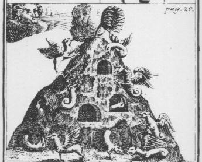
<br><b><font face="Trebuchet MS"><font color="#000066"><font size="-1">FIGURE
VII</font></font></font></b>
<br><b><i><font face="Trebuchet MS"><font color="#000066"><font size="-1">(N.
Flamel, Oeuvres chymiques, Hamburg, 1681)</font></font></font></i></b></p></center>

<p><font face="Trebuchet MS"><font color="#000066">C'est le vent de la
destruction, celui de la dissolution. Les fleurs blanches et rouges peuvent
&eacute;voquer respectivement des temp&eacute;ratures tr&egrave;s &eacute;lev&eacute;es
(chaleur blanche &gt; 1000&deg;C) ou plus faibles (chaleur rouge = 500&deg;C)
; naturellement, on peut y voir aussi les symboles du 2<sup>&egrave;me
</sup>oeuvre
(pr&eacute;paration du Lion vert) et du 3<sup>&egrave;me</sup> oeuvre (Grande
Coction) mais qui sont, &agrave; notre sens, plus d'ordre &eacute;sot&eacute;rique
et n'ont que peu de rapport avec la r&eacute;alit&eacute;...Quant aux dragons
et griffons ils constituent des indications concernant l&#8217;&#339;uvre au rouge
d'abord pour le griffon : il symbolise en effet le r&eacute;sultat de la&nbsp;<a  name="r&eacute;incrudation_1"></a><font size="-1"><a href="../original/reincrud.html">r&eacute;incrudation</a></font>
du Soufre (ou &Acirc;me), d&eacute;sormais corporifi&eacute; et du Sel
(ou Corps) : le griffon emprunte sa t&ecirc;te et sa poitrine &agrave;
l&#8217;aigle et au lion le reste du corps. Les corps se sont fix&eacute;s et
nous avons pass&eacute; le stade des premiers combats. Dans les <i>DM</i>,
II, p.274-277, Fulcanelli revient sur l&#8217;embl&egrave;me du griffon et nous
dit que :</font></font>
</p><p><font face="Trebuchet MS"><font color="#000066">"</font><i><font color="#cc0000"><font size="-1">[il
s&#8217;agit de] l&#8217;un des embl&egrave;mes majeurs de la science, celui qui couvre
la pr&eacute;paration des mati&egrave;res premi&egrave;res de l&#8217;Oeuvre...Le
griffon marque le r&eacute;sultat de l&#8217;op&eacute;ration...Du combat que
le chevalier, ou soufre secret, livre au soufre ars&eacute;nical du vieux
dragon, na&icirc;t la pierre astrale, blanche, pesante, brillante comme
pur argent, et qui appara&icirc;t sign&eacute;e...</font></font></i><font color="#000066">"</font></font>
</p><p><font face="Trebuchet MS"><font color="#000066">Il s&#8217;agit bien en effet
d&#8217;une mati&egrave;re blanche mais il faut prendre garde &agrave; ce que
Fulcanelli, par ellipse, a superpos&eacute; dans cette phrase le r&eacute;sultat
de la dissolution du dragon (obtention de la premi&egrave;re mati&egrave;re)
et le r&eacute;sultat provisoire dans le travail du 3<sup>&egrave;me</sup>
&#339;uvre. Quant au dragon, il symbolise habituellement le 1<sup>er</sup> Chaos
ou mati&egrave;re premi&egrave;re qui permet l'obtention du Mercure commun.
Cette gravure, au total, repr&eacute;sente un processus dynamique o&ugrave;
est voil&eacute; la dissolution de la mati&egrave;re premi&egrave;re, i.e.
du dragon, le griffon marquant le r&eacute;sultat de cette op&eacute;ration.
Cette dissolution semble attest&eacute;e par le vent du Nord dont l'effet
est l'inverse du Z&eacute;phyre. Un mot encore &agrave; propos du vent
du Nord (Aquilo) ; par cabale phon&eacute;tique, on peut le rapprocher
d'Aquilo, p&egrave;re de Cala&iuml;s et de </font><font color="#006600">Z&eacute;t&egrave;s</font><font color="#000066">
; Z&eacute;t&egrave;s (<a href="#Azoth_1">1</a>,<a href="#AZOTH_2">2</a>,<a href="#Azoth_3">3</a>)
participa avec son fr&egrave;re &agrave; l'exp&eacute;dition des Argonautes
et d&eacute;barassa Phin&eacute;e des Harpyes qui le tourmentaient. Voyez
aussi l'<b><i><font size="-1"><a href="../original/atalanta-fugiens.html">Atalanta fugiens</a></font></i></b>.</font></font>
<br><a  name="28"></a><font face="Trebuchet MS"><font color="#000066"><a href="#28_t">28</a>.
C'est l'&eacute;vocation la plus connue des <b><i><font size="-1">Figures
Hi&eacute;roglyphiques</font></i></b> ; nous l'avons d&eacute;j&agrave;
plusieurs fois comment&eacute;e (<a href="../original/st-gregoire-vievre.html#arc">1</a>,<a href="../original/symb-dir-prim.html" class="lien-repare" title="ancre absente de la page d'origine : lien ramené en haut de page">2</a>,<a href="../original/philalethe-6.html#Flamel">3</a>).
Le beau rosier fleuri semble &ecirc;tre le r&eacute;sultat des op&eacute;rations
interm&eacute;diaires, les &laquo; nitri flore &raquo; vues supra. Le ch&ecirc;ne
creux peut renvoyer au ch&egrave;ne kerm&egrave;s (tri<a href="../original/compendium.html#5">sulfure</a>
d'antimoine) ou au ch&egrave;ne rouvre d&eacute;di&eacute; &agrave; Jupiter
(alun <a href="../original/reincrud.html#alumine">ammon</a>iacal). Une lecture suppl&eacute;mentaire
des textes m'a en fait convaincu que l'on ferait -en d&eacute;finitive-
fausse route en voulant forc&eacute;ment attribuer &agrave; la stibine
ou &agrave; l'ammoniaque le symbolisme de Jupiter ; la v&eacute;rit&eacute;
semble plus subtile et rejoint le symbolisme &eacute;voqu&eacute; par la
<font size="-1"><a href="../original/emblemes.html#Clef%20VII">Clef
VII</a></font>, attribu&eacute;e &agrave; Basile Valentin. La fontaine
d'eau tr&egrave;s blanche fait allusion aux fontaines d&eacute;crites par
Fulcanelli qui sortent de deux</font></font>
</p><center>
<p>
<br><b><font face="Trebuchet MS"><font color="#000066"><font size="-1">FIGURE
VIII</font></font></font></b>
<br><b><i><font face="Trebuchet MS"><font color="#000066"><font size="-1">(Gravure
des Oeuvres chymiques de N. Flamel, Hamburg, 1681)</font></font></font></i></b></p></center>

<p><font face="Trebuchet MS"><font color="#000066">roches distinctes :
celle d'o&ugrave; l'on capte le Sel des Sages (terre alumineuse ou siliceuse),
l'autre le min&eacute;ral d'o&ugrave; l'on capte le sel blanc de carbonate
de potasse (mais il existe d'autres modes d'obtention du <font size="-1"><a href="../original/imitat-prec.html">Mercure</a></font>
philosophique). Les planchettes sont assur&eacute;ment des douves de tonneau
et elles rejoignent l'all&eacute;gorie d&eacute;gag&eacute;e par l'examen
de la planche XIV du porche central de Notre-Dame de Paris (</font><font color="#660000"><font size="-1">Les
mat&eacute;riaux n&eacute;cessaires &agrave; l'&eacute;laboration du Dissolvant</font></font><font color="#000066">)
; voir cette planche dans le <font size="-1"><a href="#" title="lien mort dans l'archive">commentaire
du trait&eacute;</a></font> d'Esprit Gobineau de Montluisant.</font></font>
<br><a  name="29"></a><font face="Trebuchet MS"><font color="#000066"><a href="#29_t">29</a>.
L'heureux &eacute;lu qui trouve cette fontaine d'eau tr&egrave;s blanche
conna&icirc;t le poids : cela doit nous rappeler une des sentences de Basile
Valentin que Fulcanelli rappelle (<i>DM II</i>, p.75), dans un passage
o&ugrave; le poids n'appara&icirc;t pas &agrave; premi&egrave;re vue de
mani&egrave;re explicite puisque c'est en apparence du feu secret qu&#8217;il
est question :</font></font>
</p><p><font face="Trebuchet MS"><font color="#000066">"</font><i><font color="#cc0000"><font size="-1">Allume
ta lampe et cherche la dragme perdue.</font></font></i><font color="#000066">"</font></font>
</p><p><font face="Trebuchet MS"><font color="#000066">Or, le terme dragme
renvoie &agrave; drachme, c'est-&agrave;-dire khalkos en grec, soit chalcus
en latin qui est une mesure de poids valant 1/4 d'obole. Par assonance,
on trouve aussi chalcosmaragdos qui est une &eacute;meraude vein&eacute;e
de cuivre ou de la <a href="../original/fontenay.html">malachite</a>. Mais en cherchant
plus loin, on trouve que chalcos se rapproche aussi de chalcitis, minerai
de cuivre dont on sait que ceux de Chypre &eacute;taient des plus r&eacute;put&eacute;s
et qu'un sel y &eacute;tait fr&eacute;quemment m&ecirc;l&eacute;, sur lequel
s'attarde <font size="-1"><a href="../original/chimie-alchemy.html#Pline">Pline l'Ancien</a></font>dans
son histoire Naturelle. Voyez aussi les allusions &agrave; la <font size="-1"><a href="../original/symb-dir-prim.html#b">balance</a></font>.</font></font>
<br><a  name="30"></a><font face="Trebuchet MS"><font color="#000066"><a href="#30_t">30</a>.
C'est la sc&egrave;ne du massacre des Innocents, l'une des trouvailles
g&eacute;niales de l'artiste &agrave; qui nous devons les<i> <b><font size="-1">Figures</font></b></i>.
Par l&agrave; est indiqu&eacute;e la dissolution des corps dans le Lion
vert. Ce bain des astres repr&eacute;sente le dissolvant universel dont
nous avons vu dans une autre section qu'il pouvait correspondre &agrave;
plusieurs associations de corps chimiques bien d&eacute;finis, soit un
fondant compos&eacute; sans doute de deux corps ; il peut s'agir :</font></font>
</p><blockquote><font face="Trebuchet MS"><font color="#000066">a)- d'un double
<a href="../original/carbon-potasse.html">carbonate</a>
de potasse et de soude ;</font></font>
<br><font face="Trebuchet MS"><font color="#000066">b)- de <a href="../original/compendium.html#8">sulfate
de potasse</a> obtenu gr&acirc;ce &agrave; de l'hydrog&egrave;ne sulfur&eacute;
(lui-m&ecirc;me tir&eacute; de l'attaque du sulfure d'antimoine par de
l'esprit de sel)</font></font>
<br><font face="Trebuchet MS"><font color="#000066">c)- du <a href="../original/reincrud.html" class="lien-repare" title="ancre absente de la page d'origine : lien ramené en haut de page">spath
fluor</a></font></font>
<br><font face="Trebuchet MS"><font color="#000066">d)- d'oxyde de plomb
sous forme d'aluminate de plomb ; le&nbsp;<a  name="bismuth"></a><a href="#bismuth">bismuth</a>,
corps d&eacute;crit par Paracelse, a &eacute;t&eacute; certainement utilis&eacute;
par les alchimistes (le Cosmopolite et Isaac Newton en font mention)</font></font>
<br><font face="Trebuchet MS"><font color="#000066">e)- d'esprit de sel
avec de la vapeur d'eau ;</font></font>
<br><font face="Trebuchet MS"><font color="#000066">f)- de l'hydrog&egrave;ne
sulfur&eacute; en matras scell&eacute; sous la forme de bisulfure d'hydrog&egrave;ne</font></font>
<br><font face="Trebuchet MS"><font color="#000066">(pour plus de d&eacute;tails,
voir les sections sur le <font size="-1"><a href="../original/imitat-prec.html">Mercure</a></font>,
la <font size="-1"><a href="../original/compendium.html">Pierre</a></font> et la <font size="-1"><a href="../original/reincrud.html">r&eacute;incrudation</a></font>).</font></font>
<center>
<p>
<br><b><font face="Trebuchet MS"><font color="#000066"><font size="-1">FIGURE
IX</font></font></font></b>
<br><b><i><font face="Trebuchet MS"><font color="#000066"><font size="-1">(vers
1700, Paris, Biblioth&egrave;que Nationale)</font></font></font></i></b></p></center>
</blockquote>
<font face="Trebuchet MS"><font color="#000066">Le Roi renvoie au vieillard
pr&eacute;c&eacute;dent et donc au Mercure ; il joue le r&ocirc;le d'ordonnateur
ou d'appariteur. Le vaisseau figure l'athanor et les enfants sont les composants
du dissolvant universel. Le Soleil et la Lune sont l&agrave; pour le principe
Soufre et le Sel des Sages.</font></font>
<br><a  name="31"></a><font face="Trebuchet MS"><font color="#000066"><a href="#31_t">31</a>.
Nous savons qu'il y a plusieurs mati&egrave;res premi&egrave;res (cf. sections
sur le <font size="-1"><a href="../original/imitat-prec.html">Mercure</a></font>, le <font size="-1"><a href="../original/soufre.html">Soufre</a></font>
notamment) ;</font></font>
<br><a  name="32"></a><font face="Trebuchet MS"><font color="#000066"><a href="#32_t">32</a>.
A chaque fois qu'il est question d'entretien, on peut &ecirc;tre assur&eacute;
que les Adeptes parlent du dissolvant universel. Ainsi, les grands discours,
l&#8217;&eacute;loquence, les beaux parleurs, les gloseurs (</font><font color="#006600">discutio</font><font color="#000066">
= fendre, fracasser, dissoudre) en somme, nous en trouvons un bon exemple
dans <i>La <b><font size="-1"><a href="../original/toyson.html">Toyson d&#8217;Or</a></font></b></i>
de Salomon Trismosin (5<sup>&egrave;me</sup> figure), cit&eacute; par E.
Canseliet, dans son
<b><i><font size="-1">Alchimie</font></i></b> (<i>L&#8217;arbre
alchimique</i>, p.105-125, in <i>Atlantis</i>, 1934) dont voici le texte
:</font></font>
<p><font face="Trebuchet MS"><font color="#000066">"</font><i><font color="#cc0000"><font size="-1">Portant
ainsi, sur une branche sup&eacute;rieure, un oiseau noir, l&#8217;arbre symbolise,
plus clairement encore, cette racine m&eacute;tallique qui r&eacute;siste
&agrave; merveille au pouvoir d&#8217;oxydation, et qui assure, dans l&#8217;harmonie,
la naissance du corbeau, de cette terre obscure et nettement distincte
de la partie sous-jacente, blanche et volatile. Deux hommes, &acirc;g&eacute;s
et remplis d&#8217;exp&eacute;rience, discutent, avec animation, sur le probl&egrave;me
de la capture pour laquelle vigueur et habilet&eacute; sont n&eacute;cessaires</font></font></i><font color="#000066">".</font></font>
</p><blockquote>
<center>
<br><b><font face="Trebuchet MS"><font color="#000066"><font size="-1">FIGURE
X</font></font></font></b>
<br><b><i><font face="Trebuchet MS"><font color="#000066"><font size="-1">(La
<a href="../original/toyson.html">Toyson
d'Or </a>de Salomon Trismosin, 5<sup>e </sup>figure)</font></font></font></i></b></center>
</blockquote>
<font face="Trebuchet MS"><font color="#000066">On ne saurait mieux parler
du Mercure philosophique anim&eacute; car en latin, </font><font color="#660000">discussorius</font><font color="#000066">
signifie dissolvant et r&eacute;solutif. On voit donc que le&nbsp;<a  name="vieillard"></a>vieillard
-auquel on attribue trop souvent le caract&egrave;re propre au Sujet des
Sages- repr&eacute;sente en r&eacute;alit&eacute; le Mercure qui va s&#8217;animer.</font></font>
<br><a  name="33"></a><font face="Trebuchet MS"><font color="#000066"><a href="#33_t">33</a>.
&laquo; Anseaulme &raquo; peut &ecirc;tre d&eacute;compos&eacute; en &laquo;
</font><font color="#006600">Anse</font><font color="#000066">[r]
&raquo; et &laquo; </font><font color="#006600">Alume</font><font color="#000066">[n]
&raquo; ; le premier mot renvoie au jeu de l'oie. Fulcanelli consid&egrave;re
que le jeu de l'oie est un labyrinthe et un recueil des principaux hi&eacute;roglyphes
du Grand Oeuvre. L'oie est aussi l'&eacute;quivalent du cygne (cf. l'allusion
&agrave; B. Valentin quand il dit : &laquo;<font size="-1"> <i>qu'il faut
bailler un cygne &agrave; l'homme double ign&eacute;</i></font><i> &raquo;</i>).
Dans <b><i><font size="-1">Les Myst&egrave;res</font></i></b>, p.116, Fulcanelli
nous assure que ces sublimations sont celles que :</font></font>
<p><font face="Trebuchet MS"><i><font color="#000066">".</font><font color="#cc0000"><font size="-1">..d&eacute;crit
Callimaque dans l'Hymne &agrave; <a href="../original/gardes-corps.html" class="lien-repare" title="ancre absente de la page d'origine : lien ramené en haut de page">D&eacute;los</a>,
lorsqu'il dit en parlant des cygnes : &laquo; (Les Cygnes) tourn&egrave;rent
sept fois autour de D&eacute;los...et ils n'avaient pas encore chant&eacute;
la huiti&egrave;me fois, lorsqu'Apollon naquit &raquo;..</font></font></i><font color="#cc0000"><font size="-1">.</font></font><font color="#000066">"</font></font>
</p><p><font face="Trebuchet MS"><font color="#000066">Dans les <i>DM, II</i>,
p.193, Fulcanelli revient sur le cygne (alias l'</font><font color="#006600">oie</font><font color="#000066">
ou oiseau d'Herm&egrave;s) quand il analyse le caisson n&deg;5 de la septi&egrave;me
s&eacute;rie du ch&acirc;teau de Dampierre.</font></font>
</p><center>
<p>
<br><b><font face="Trebuchet MS"><font color="#000066"><font size="-1">FIGURE
XI</font></font></font></b>
<br><b><font face="Trebuchet MS"><font color="#000066"><font size="-1">(galerie
alchimique du ch&acirc;teau de Dampierre-sur-Boutonne, caisson)</font></font></font></b></p></center>

<p><font face="Trebuchet MS"><font color="#000066">C'est une figuration
du Mercure philosophique ; le phylact&egrave;re indique :</font></font>
</p><center>
<p><b><font face="Trebuchet MS"><font color="#000066"><font size="-1">.PROPRIIS.PEREO.PENNIS.</font></font></font></b></p></center>

<p><font face="Trebuchet MS"><font color="#000066">ce qui signifie :</font></font>
</p><center>
<p><font face="Trebuchet MS"><font color="#990033">&laquo;<i><font size="-1">
je meurs par mes propres plumes</font></i> &raquo;.</font></font></p></center>

<p><font face="Trebuchet MS"><font color="#000066">C'est assez dire que
le dissolvant universel ou fondant est constitu&eacute; de composants assez
volatils qui vont n&eacute;cessairement se sublimer durant la Grande Coction.
La blancheur neigeuse indique la couleur du </font><font color="#006600">carbonate
de potasse</font><font color="#000066"> qui -pur- est parfaitement blanc
(<a href="../original/imitat-prec.html#carbonate">1</a>). L'homme double ign&eacute;
renvoie d'apr&egrave;s Fulcanelli &agrave; :</font></font>
</p><p><i><font face="Trebuchet MS"><font color="#000066">"</font><font color="#cc0000"><font size="-1">...deux
corps combin&eacute;s, de propri&eacute;t&eacute;s semblables, mais de
sp&eacute;cificit&eacute; diff&eacute;rente...</font></font><font color="#000066">"</font></font></i>
</p><p><font face="Trebuchet MS"><font color="#000066">Le second terme est
l'alun dont nous avons suffisamment parl&eacute; ailleurs pour qu'il nous
soit permis de passer outre (<a href="../original/chimie-alchemy.html" class="lien-repare" title="ancre absente de la page d'origine : lien ramené en haut de page">1</a>,<a href="../original/chimie-alchemy.html#c%29-">2</a>,<a href="../original/philalethe-6.html#sarment">3</a>,<a href="../original/prima-materia.html#Alun">4</a>,<a href="../original/st-gregoire-vievre.html#alun">5</a>,<a href="../original/imitat-prec.html#Alumine">6</a>,<a href="../original/compendium.html#alun">7</a>)
;</font></font>
<br><a  name="34"></a><font face="Trebuchet MS"><font color="#000066"><a href="#34_t">34</a>.
Le temps alchimique est tr&egrave;s particulier ; On notera au d&eacute;but
du IV<sup>e</sup> chapitre des <b><i><font size="-1">Myst&egrave;res</font></i></b>,
une all&eacute;gorie de la dur&eacute;e de la coction et des indices d&#8217;un
feu soutenu et puissant :</font></font>
</p><p><font face="Trebuchet MS"><font color="#000066">"</font><font color="#cc0000"><font size="-1"><i>Balay&eacute;s
par les vents d&#8217;ouest [</i><a href="../original/philalethe-6.html#17">Z&eacute;phyre</a><i>],
sept si&egrave;cles de rafales...ont effrit&eacute;s [les motifs]...</i></font></font><font color="#000066">"</font></font>
</p><p><font face="Trebuchet MS"><font color="#000066">A un si&egrave;cle,
en langage herm&eacute;tique, correspond un jour ou plut&ocirc;t une g&eacute;n&eacute;ration.
De m&ecirc;me, plusieurs Adeptes se r&eacute;f&egrave;rent &agrave; 33
ans quand ils donnent leur &acirc;ge au moment o&ugrave; ils ont r&eacute;ussi
dans la conduite de l'oeuvre. Il est &eacute;vident qu'il y a l&agrave;
autre chose que cette indication qui semble aberrante ; voyez la section
des <a href="../original/gardes-corps.html">Gardes du Corps</a> qui donnera r&eacute;ponse
&agrave; certaines questions ;</font></font>
<br><a  name="35"></a><font face="Trebuchet MS"><font color="#000066"><a href="#35_t">35</a>.
C'est-&agrave;-dire retourner le sablier, i.e. retourner le sable (comprenez
la Terre) ; c'est une autre all&eacute;gorie du <a href="../original/symb-dir-prim.html#d">D&eacute;luge</a>
qui nous est offerte par N. Flamel ;</font></font>
<br><a  name="36"></a><font face="Trebuchet MS"><font color="#000066"><a href="#36_t">36</a>.
Un proc&eacute;d&eacute; de synth&egrave;se du corindon color&eacute; par
le chrome (<a href="../original/chimie-alchemy.html" class="lien-repare" title="ancre absente de la page d'origine : lien ramené en haut de page">rubis</a>) conduit &agrave;
l'&eacute;quivalence 6 ans = 6 jours. Par &laquo; ne cuire plus &raquo;,
il faut entendre abaisser tr&egrave;s progressivement la temp&eacute;rature
;</font></font>
<br><a  name="37"></a><font face="Trebuchet MS"><font color="#000066"><a href="#37_t">37</a>.
Il pourrait s'agir de l'alumine hydrat&eacute;e ; le &laquo; <i><font size="-1">sang
tr&egrave;s-pur de jeunes enfans</font></i> &raquo; doit &ecirc;tre le
Lion vert : il est ainsi d&eacute;crit par Fulcanelli (<b><i><font size="-1">Les
Myst&egrave;res</font></i></b>, p.121) comme un fruit vert et acerbe :</font></font>
</p><p><i><font face="Trebuchet MS"><font color="#000066">"</font><font color="#cc0000"><font size="-1">Certains
Adeptes, Basile Valentin est de ceux-l&agrave;, l'ont nomm&eacute; Vitriol
vert, pour d&eacute;celer sa nature chaude, ardente et saline ; d'autres,
&eacute;meraude des Philosophes, Ros&eacute;e de mai, <a href="../original/reincrud.html#herbe">Herbe</a>
saturnienne, Pierre v&eacute;g&eacute;tale, etc.</font></font><font color="#000066">"</font></font></i>
</p><p><font face="Trebuchet MS"><font color="#000066">A notre connaissance,
la seule et unique utilisation de sang -du <font size="-1"><a href="../original/salpetre.html#sang">sang</a></font>
de boeuf pour &ecirc;tre pr&eacute;cis- dans le grand oeuvre se limite
&agrave; la purification du <font size="-1"><a href="../original/salpetre.html">salp&ecirc;tre</a></font>.</font></font>
<br><a  name="38"></a><font face="Trebuchet MS"><font color="#000066"><a href="#38_t">38</a>.
Le Mercure philosophique ; Fulcanelli en parle comme de &laquo; <font size="-1"><a href="../original/humide-radical.html">l'humide
radical m&eacute;tallique</a></font> &raquo; ;</font></font>
<br><a  name="39"></a><font face="Trebuchet MS"><font color="#000066"><a href="#39_t">39</a>.
Condens&eacute; entre St Jacques de Compostelle et gaulois (pour galice)
;</font></font>
<br><a  name="40"></a><font face="Trebuchet MS"><font color="#000066"><a href="#40_t">40</a>.
C'est ici que N. Flamel s'est incarn&eacute; dans le Mercure. Le b&acirc;ton
est l'un des symboles majeurs de l'alchimie et il vaut qu'on s'y attarde
longuement. Ce b&acirc;ton, Fulcanelli, de mani&egrave;re indirecte, en
parle lorsqu'il analyse les deux gnomes de la chemin&eacute;e du ch&acirc;teau
de Fontenay-Le-Comte : Un des 2 gnomes, <u>celui de gauche</u> qui correspond
au principe</font></font>
<br>&nbsp;
<br>&nbsp;
<br>
<br>
</p><center>
<p>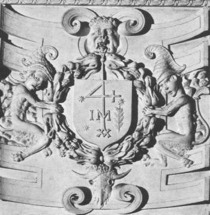
<br><a  name="chemin&eacute;e"></a><b><font face="Trebuchet MS"><font color="#000066"><font size="-1">FIGURE
XII</font></font></font></b>
<br><b><i><font face="Trebuchet MS"><font color="#000066"><font size="-1">(d&eacute;tail
de la chemin&eacute;e alchimique, <a href="../original/fontenay.html">Fontenay-Le-Comte</a>)</font></font></font></i></b></p></center>

<p><font face="Trebuchet MS"><font color="#000066">masculin ou agent est
l'&eacute;quivalent du chien de Corasc&egrave;ne d&eacute;crit par Artephius
dans son <i><font size="-1"><a href="../original/liber-artephius.html">Livre Secret</a></font>
; </i>il a un casque stri&eacute; (</font><font color="#660000"><font size="-1">stria,
striatus avec id&eacute;e de resserrement ou de pouvoir&nbsp;<a  name="astringent"></a>astringent</font></font><font color="#000066">).
L'Adepte commente ce terme et le compare &agrave; ray&eacute; et verget&eacute;
(</font><font color="#660000"><font size="-1">virgatus, tress&eacute; avec
des baguettes d'osier</font></font><font color="#000066">), au&nbsp;<a  name="b&acirc;ton"></a><u>b&acirc;ton</u>
(</font><font color="#660000"><font size="-1">bastum, qui signifie aussi
le <u>lin</u> ou la syllabe imitant le bruit produit quand un trompette
retire son instrument de sa bouche, cf. la <a href="../original/mutus-liber.html#planche_1">planche
I</a> du <i>Mutus Liber</i></font></font><font color="#000066">), au <u>sceptre</u>.
Le sceptre a comme traduction posssible aspalathus ; il s'agit d'une plante
qui fournit la gomme adragante et qui est une sorte d'armoise : sa traduction
en latin est artemisia, plante d'</font><font color="#006600">Art&eacute;mis</font><font color="#000066">,
et phon&eacute;tiquement, proche de <font size="-1"><a href="#" class="lien-repare" title="ancre absente de la page d'origine (lien ramené en haut de page)">artemo</a></font>
(voile de proue, m&acirc;t) et de arte (d'une mani&egrave;re serr&eacute;e).</font></font>
<br><font face="Trebuchet MS"><font color="#000066">Le b&acirc;ton, est
aussi une <font size="-1"><a href="#" class="lien-repare" title="ancre absente de la page d'origine (lien ramené en haut de page)">javeline</a></font>, assimilable
au <font size="-1"><a href="../original/symb-dir-prim.html#sceptre">sceptre</a></font>
de Bacchus. Cet embl&egrave;me a &eacute;t&eacute; jug&eacute; suffisamment
important par E. Canseliet pour qu'il le place dans son <b><i><font size="-1">Alchimie
expliqu&eacute;e sur ses textes classiques</font></i></b> p.19 en commentaire
de l'embl&egrave;me XLII de l'<b><i><font size="-1"><a href="../original/atalanta-fugiens.html">Atalanta
fugiens</a></font></i></b> de M. Maier. L'&eacute;pigramme latine indique
:</font></font>
</p><p><font face="Trebuchet MS"><font color="#000066">"</font><i><font color="#cc0000"><font size="-1">La
Nature est ton guide, et toi, par l'art, sois son suivant de bon gr&egrave;s-
Tu t'&eacute;gares, si elle n'est pas la compagne dans la voie. - Que le
Raisonnement te donne l'aide du B&acirc;ton, que l'Exp&eacute;rience te
fortifie les yeux . - Par quoi tu puisses distinguer ce qui se trouve au
loin. - Que la Lecture soit ta Lampe lumineuse dans les t&eacute;n&egrave;bres,
- Afin que, prudent, tu te gardes de l'amas des paroles et des choses.</font></font></i><font color="#000066">"</font></font>
</p><center>
<p>
<br><b><font face="Trebuchet MS"><font color="#000066"><font size="-1">FIGURE
XIII</font></font></font></b>
<br><b><i><font face="Trebuchet MS"><font color="#000066"><font size="-1">(<a href="../original/atalanta-xlii.html">embl&egrave;me
XLII</a> de l'Atalanta fugiens)</font></font></font></i></b></p></center>

<p><font face="Trebuchet MS"><font color="#000066">Remarquez l'importance
d'une partie du v&ecirc;tement de Diane, semblable &agrave; une corne lunaire
qui, sous l'effet du vent, &eacute;voque l'ampleur pris aussi par une partie
du v&ecirc;tement de la femme qui figure dans la <font size="-1"><a href="../original/emblemes.html#Clef%20V">Clef
V </a></font>de Basile Valentin. Il est int&eacute;ressant de noter que
la javeline en latin se dit "hasta" dont une traduction possible est thyrse,
sceptre de Bacchus, souvent cit&eacute; en Alchimie. Fulcanelli y fait
r&eacute;f&eacute;rence &agrave; propos des variations sur le th&egrave;me
de l'&eacute;toile : Dans <i>les Myst&egrave;res</i>, p.73, Balaam s'&eacute;crie
:</font></font>
</p><p><font face="Trebuchet MS"><font color="#000066">"</font><i><font color="#cc0000"><font size="-1">Comment
pourrai-je maudire celui que son Dieu ne maudit pas ? Comment donc menacerai-je
celui que J&eacute;hovah ne menace pas ? Ecoutez ! ... Je la vois, mais
pas maintenant ; je la contemple, mais pas de pr&egrave;s...Une &eacute;toile
se l&egrave;ve de Jacob et le <u>sceptre</u> sort d'Isra&euml;l...</font></font></i><font color="#000066">"
(<i><font size="-1">Num., XXIV, 47</font></i>)</font></font>
</p><p><font face="Trebuchet MS"><font color="#000066">On sait que Jacob lutta
une nuit enti&egrave;re contre un ange du Seigneur, ce qui lui valut le
nom d'Isra&euml;l &laquo;
<i>Celui qui lutte contre Dieu &raquo;</i>. L'ange
est souvent associ&eacute; au corps qui d&eacute;truit le sujet des sages
afin d'en extraire la premi&egrave;re mati&egrave;re ou Mercure. C'est
la m&ecirc;me all&eacute;gorie qui est utilis&eacute;e dans l'Annonciation.
Le <u>sceptre</u> est un attribut de Jupiter. Il participe du dissolvant
universel. Ce sceptre est m&ecirc;me cit&eacute; par Isaac Newton dans
ses comptes rendus d'exp&eacute;riences alchimiques qui ont &eacute;t&eacute;
si bien analys&eacute;s dans <b><i><font size="-1">Les Fondements de l&#8217;alchimie
de Newton</font></i></b> par Betty J. Teeter Dobbs (Guy Tr&eacute;dianel,
1981). Newton s'efforcait de trouver la bonne recette du Mercure Philosophique.
Nous avons plusieurs notes o&ugrave; l'on peut conclure que Newton tentait
d'&eacute;claircir :</font></font>
</p><p><font face="Trebuchet MS"><font color="#000066">"</font><i><font color="#cc0000"><font size="-1">...en
particulier trois pr&eacute;parations sp&eacute;cifiques : l'eau s&egrave;che,
l'aigle d'&eacute;tain (ou de Jupiter) et le sceptre de Jupiter (ou de
l'&eacute;tain).</font></font></i><font color="#000066">"</font></font>
</p><p><font face="Trebuchet MS"><font color="#000066">ainsi que le rapporte
B.J. Dobbs, p.209. La question est de savoir si Jupiter est bien le symbole
de l'&eacute;tain, car nous savons qu'aucun adepte n'a jamais indiqu&eacute;
en clair les mati&egrave;res premi&egrave;res ; nous proposons plus loins
une nouvelle hypoth&egrave;se quant au symbolisme de Jupiter...On trouve
aussi dans la mythologie le sceptre de Rh&eacute;a (assimil&eacute; &agrave;&nbsp;<a  name="Cyb&egrave;le"></a>Cyb&egrave;le)
et dans de nombreux exemples iconographiques, tel celui du <b><i><font size="-1">Petit
trait&eacute; de la Pierre philosophale</font></i></b> de Lambsprinck dans
la onzi&egrave;me figure :</font></font>
</p><blockquote>
<center>
<br><b><font face="Trebuchet MS"><font color="#000066"><font size="-1">FIGURE
XIV</font></font></font></b>
<br><b><i><font face="Trebuchet MS"><font color="#000066"><font size="-1">(De
Lapide Philosophorum, planche XI)</font></font></font></i></b></center>
</blockquote>
<font face="Trebuchet MS"><font color="#000066">Nous y voyons un&nbsp;<a  name="vieillard_index"></a>vieillard
qui symbolise la mati&egrave;re premi&egrave;re, portant un </font><font color="#006600">bourdon</font><font color="#000066">
(ou sceptre) et une couronne, le fils (Sel) et le&nbsp;<a  name="conducteur"></a>conducteur
ou m&eacute;diateur (Esprit = Mercure = partie constitutive du dissolvant
universel) qui a des ailes d'ange et correspond au complexe {compost-dissolvant}
: c&#8217;est le Mercure philosophique. C'est ainsi, nous semble-t-il, qu'il
faut interpr&eacute;ter - ou r&eacute;interpr&eacute;ter- le sens du caract&egrave;re
stri&eacute; ou tress&eacute; du casque.</font></font>
<br><a  name="41"></a><font face="Trebuchet MS"><font color="#000066"><a href="#41_t">41</a>.
L'allusion aux Mont-Joies de Fulcanelli est claire ; on la tire d'abord
de l'examen des chars : Le
</font><font color="#006600">char</font><font color="#000066">,
en latin, se dit jugum, qui est aussi la constellation de la </font><font color="#006600">Balance</font><font color="#000066">,
et le sommet d'une montagne (avec id&eacute;e de hauteur, de cime et id&eacute;e
aussi d&#8217;une couleur bleu fonc&eacute;). Le char de triomphe repr&eacute;sente
l'all&eacute;gorie suivante : il s'agissait de l'entr&eacute;e solennelle
&agrave; Rome du g&eacute;n&eacute;ral victorieux qui montait au Capitole
sur un char tra&icirc;n&eacute; de chevaux blancs, rev&ecirc;tu lui-m&ecirc;me
de la toga picta et de la tunica&nbsp; palmata, la t&ecirc;te ceinte de
lauriers (= tenue de Jupiter Capitolin). La tunica palmata fait r&eacute;f&eacute;rence
par le mot tunica au cocon (coque, coquille) et palmata renvoie &agrave;
"victoire" et cabalistiquement au mont de la Victoire, c&#8217;est-&agrave;-dire
au Mont-Joie dont Fulcanelli nous parle dans <i>Les <b><font size="-1">Myst&egrave;res</font></b></i>,
p.68<a  name="remarque_3"></a> : c&#8217;est une all&eacute;gorie dont le sujet
est la ros&eacute;e qui s&#8217;&eacute;l&egrave;ve jusqu&#8217;au mont de la Magn&eacute;sie
(Mont-Joie).</font></font>
<br><a  name="42"></a><font face="Trebuchet MS"><font color="#000066"><a href="#42_t">42</a>.
Pour Fulcanelli, le voyage de Nicolas Flamel &agrave; St Jacques de Compostelle
est purement fictif.&nbsp; Dans les <i>DM, I,</i> p.339, la coquille Saint-Jacques,
appel&eacute;e aussi b&eacute;nitier, est d&eacute;crite comme le qualificatif
appliqu&eacute; &agrave; l'eau mercurielle. A cette occasion, Fulcanelli
nous assure que la proportion r&eacute;guli&egrave;re exige deux parts
de dissolvant contre une du corps fixe. C'est donc un symbole complexe
puisqu'il figure &agrave; la fois le Sujet des Sages dont nous donnons
sur la figure qui suit (<font size="-1">FIGURE XV</font>) l'exacte teneur
encore que sa forme soit un peu diff&eacute;rente, mais c'est aussi un
r&eacute;ceptacle, en l'occurence le vase du compos&eacute; et le compos&eacute;
du vase (le dissolvant). Une indication sur ce compos&eacute; nous est
fournie par E. Canseliet (<b><i><font size="-1">Deux Logis alchimiques</font></i></b>,
au chapitre :
<i>La Ros&eacute;e des philosophes et la Toison d'or</i>)
quand il &eacute;voque la Toison de G&eacute;d&eacute;on mond&eacute;e
par la ros&eacute;e du ciel. C'est enfin, le r&eacute;sultat final, qu'&eacute;voque
la pourpre de <font size="-1"><a href="../original/imitat-prec.html#Cassius">Cassius</a></font>.
Sans doute devrons-nous aussi m&eacute;diter cette recommandation d'E.
Canseliet dans son <b><i><font size="-1">Alchimie expliqu&eacute;e sur ses
Textes classiques</font></i></b>, au chapitre de l'<i>Oeuf philosophique</i>
:</font></font>
<p><i><font face="Trebuchet MS"><font color="#000066">"</font><font color="#cc0000"><font size="-1">...l'artiste
de la voie s&egrave;che...[ne doit pas trop] pousser vers la puret&eacute;,
le sel blanc qu'il extrait du tartre des tonneaux. Il convient, en effet,
que sa cr&egrave;me de tartre contienne, encore et suffisamment, le carbonate
de calcium, indispensable &agrave; la coquille.</font></font><font color="#000066">"</font></font></i>
</p><p><font face="Trebuchet MS"><font color="#000066">Une derni&egrave;re
indication d'E. Canseliet sur cette c<a  name="oquille"></a>oquille ou &laquo;
testa &raquo; nous est donn&eacute;e par son commentaire de l'Inscription
ext&eacute;rieure (<b><i><font size="-1">Deux Logis</font></i></b>, p.61)
:</font></font>
</p><center>
<p>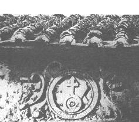
<br><b><font face="Trebuchet MS"><font color="#000066"><font size="-1">FIGURE
XV</font></font></font></b>
<br><b><i><font face="Trebuchet MS"><font color="#000066"><font size="-1">(D&eacute;tail
de la porte alchimique, &eacute;tat ancien)</font></font></font></i></b></p></center>

<p><i><font face="Trebuchet MS"><font color="#000066">"</font><font color="#cc0000"><font size="-1">...voici
donc la photographie [</font></font></font></i><font face="Trebuchet MS"><font color="#cc0000"><font size="-1">figure
XV<i>] sur laquelle on remarquera, qui surmonte la muraille, le chaperon
des tuiles dites&nbsp;<a  name="canal"></a>canal, qualifi&eacute;es aussi
rondes ou romaines...</i></font></font><i><font color="#000066">"</font></i></font>
</p><p><a  name="43"></a><font face="Trebuchet MS"><font color="#000066"><a href="#43_t">43</a>.
Fulcanelli a &eacute;voqu&eacute; Ma&icirc;tre Canches dans les<i> <b><font size="-1">Myst&egrave;res</font></b></i>.</font></font>
<br><a  name="44"></a><font face="Trebuchet MS"><font color="#000066"><a href="#44_t">44</a>.
Ces vomissements correspondent &agrave; l'&eacute;vaporation du Mercure
philosophique, promis &agrave; dispara&icirc;tre. Il se peut qu'il s'agisse
aussi d'une allusion d&eacute;guis&eacute;e &agrave; l'&eacute;m&eacute;tique,
c'est-&agrave;-dire au tartre stibi&eacute;.</font></font>
<br><a  name="45"></a><font face="Trebuchet MS"><font color="#000066"><a href="#45_t">45</a>.
cf. note <a href="#14">14</a></font></font>
<br><a  name="46"></a><font face="Trebuchet MS"><font color="#000066"><a href="#46_t">46</a>.
L'ensemble des mati&egrave;res premi&egrave;res et les agents n&eacute;cessaires
&agrave; leur dissolution. Nous les rappelons :</font></font>
<br><font face="Trebuchet MS"><font color="#000066">a)- une terre (alumine
ou silice) sous forme de schiste alumineux ou de boue ; c'est la semence
m&eacute;tallique ou r&eacute;sine de l'or ; la terre est aussi appel&eacute;e
le Corps ;</font></font>
<br><font face="Trebuchet MS"><font color="#000066">b)- un fondant (m&eacute;lange
de carbonates ou spath fluor ou sulfate de potasse) appel&eacute; aussi
l'Esprit ;</font></font>
<br><font face="Trebuchet MS"><font color="#000066">c)- un m&eacute;tal
sous forme de trace (fer, magn&eacute;sium, cuivre ou chrome) pour assurer
la coloration ; c'est le principe Soufre aussi appel&eacute; &Acirc;me.</font></font>
<br><font face="Trebuchet MS"><font color="#000066">d)- huile de vitriol,
esprit de sel, salp&ecirc;tre, cr&egrave;me de tartre, eau, globalement
symbolis&eacute;s par le glaive ou l'&eacute;p&eacute;e (cf. la section
sur la <a href="../original/compendium.html#M_base">Pierre</a>) ;</font></font>
<br><a  name="47"></a><font face="Trebuchet MS"><font color="#000066"><a href="#47_t">47</a>.
Cette pr&eacute;paration fait directement l'objet de l'une de nos <a href="../original/compendium.html">sections</a>
avec une<a href="../original/compendium.html#FIGURE_I"> figure</a> sch&eacute;matique.</font></font>
<br><a  name="48"></a><font face="Trebuchet MS"><font color="#000066"><a href="#48_t">48</a>.
Cette expression &laquo; senteur forte &raquo; peut &ecirc;tre interpr&eacute;t&eacute;e
de deux mani&egrave;res : soit, all&eacute;goriquement, et alors elle doit
signifier &laquo; sur le bon sentier, la bonne voie &raquo; ; soit au premier
degr&eacute; et alors elle renvoie forc&eacute;ment &agrave; un compos&eacute;
soufr&eacute; qui peut correspondre &agrave; de l'<font size="-1"><a href="../original/imitat-prec.html#sulfure">hydrog&egrave;ne
sulfur&eacute;</a></font> (gaz sulfhydrique).</font></font>
<br><a  name="49"></a><font face="Trebuchet MS"><font color="#000066"><a href="#49_t">49</a>.
Nous rappelons qu'il est strictement impossible qu'une transmutation puisse
intervenir, ne serait-ce que dans des quantit&eacute;s infimes, &agrave;
la temp&eacute;rature employ&eacute;e (de 500&deg;C pour la voie humide
ou de 1300&deg;C pour la voie s&egrave;che). C'est l'occasion ou jamais
que l'&eacute;tudiant en alchimie s'arr&ecirc;te quelques instants sur
la vie de Bernard le Tr&eacute;visan, ses errances multiples et enfin son
triomphe qui suivit une lecture de la <b><i><font size="-1"><a href="../original/tourbe.html">Tourbe
des philosophes</a></font></i></b> o&ugrave; il apprit que &laquo; <i><font size="-1">Nature
s'&eacute;jouit de Nature, et Nature contient Nature</font></i> &raquo;.
L'alchimiste put ainsi, sans doute, d&eacute;couvrir la voie qui permet
d'imiter les processus naturels et de r&eacute;aliser artificiellement
-mais de fa&ccedil;on non factice- au laboratoire, ce qui s'&eacute;labore
lentement dans le grand fourneau terrestre ; le lecteur en saura plus l&agrave;-dessus
dans notre section sur le <font size="-1"><a href="../original/imitat-prec.html#min%C3%A9ralog">Mercure</a></font>philosophique
;</font></font>
<br><a  name="50"></a><font face="Trebuchet MS"><font color="#000066"><a href="#50_t">50</a>.
Nous savons ce qu'il faut penser de toutes ces constructions...</font></font>
<br><a  name="51"></a><font face="Trebuchet MS"><font color="#000066"><a href="#51_t">51</a>.
C'est une allusion &agrave; la couleur rouge (</font><font color="#660000"><font size="-1">rubor
= rouge, pourpre mais aussi honte, ignominie, d&eacute;shonneur, confusion</font></font><font color="#000066">)
;</font></font>
<br><a  name="52"></a><font face="Trebuchet MS"><font color="#000066"><a href="#52_t">52</a>.
C'est une allusion &agrave; V&eacute;nus : (</font><font color="#006600">maereo</font><font color="#000066">
= &ecirc;tre afflig&eacute;, triste &agrave; rapprocher par cabale phon&eacute;tique
de </font><font color="#006600">Maera</font><font color="#000066"> = pr&ecirc;tresse
de V&eacute;nus et aussi nom d'une femme chang&eacute;e en chienne ; cf.
la chienne d'Arm&eacute;nie d'<a href="../original/liber-artephius.html">Artephius</a>)
;</font></font>
<br><a  name="53"></a><font face="Trebuchet MS"><font color="#000066"><a href="#53_t">53</a>.
Renvoie aux choses de peu de valeur (</font><font color="#660000"><font size="-1">boue,
limon mais aussi varech utilis&eacute;s pour l'obtention de l'alun et pour
le varech, de carbonate de soude</font></font><font color="#000066">) ;</font></font>
<br><a  name="54"></a><font face="Trebuchet MS"><font color="#000066"><a href="#54_t">54</a>.
Renvoie &agrave; des substances auxquelles on a enlev&eacute; une certaine
partie (viduus = veuf, priv&eacute; de...) ; on peut y voir la sc&egrave;ne
o&ugrave; le Mercure se s&eacute;pare de ses v&ecirc;tements. En l'occurence,
le costume de p&eacute;lerin de N. Flamel contient des </font><font color="#006600">coquilles</font><font color="#000066">
Saint-Jacques qui y sont incrust&eacute;es (source de carbonate). On peut
voir une all&eacute;gorie de cette sc&egrave;ne dans l'une des images du
po&ecirc;le alchimique de Winterthur :</font></font>
</p><center>
<p>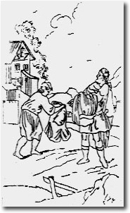
<br><b><font face="Trebuchet MS"><font size="-1">FIGURE XVI</font></font></b>
<br><b><i><font face="Trebuchet MS"><font size="-1">(3<sup>&egrave;me</sup>
image du po&ecirc;le alchimique)</font></font></i></b></p></center>

<p><font face="Trebuchet MS">avec cette l&eacute;gende du site <font size="-1"><a href="https://web.archive.org/web/20030803035054/http://www.contrepoints.com" target="_blank" rel="noopener">Contrepoints</a></font>
:</font>
</p><p><i><font face="Trebuchet MS">"<font color="#cc0000"><font size="-1">Un
paysan, attaqu&eacute; par un cavalier lui abandonne son manteau brun,
sa veste verte, et reste en chemise blanche (voir <a href="../original/prima-materia.html#Marie">Marie
proph&eacute;tesse</a>).</font></font>"</font></i>
</p><p><a  name="55"></a><font face="Trebuchet MS"><a href="#55_t">55</a>. On
peut trouver une analogie entre ces &laquo; orphelins &raquo; et la l&eacute;gende
de Marthe que nous raconte Fulcanelli dans les <i>DM</i><font color="#000080">telle
qu'elle est d&eacute;crite dans
<i><b><font size="-1">La L&eacute;gende des
Cierges verts</font></b> </i>de<i> </i>Hippolyte Matabon ( Marseille, J.
Cayer, 1889) :</font></font>
</p><p><font face="Trebuchet MS"><font color="#000080">"</font><i><font color="#cc0000"><font size="-1">Une
jeune fille de l'antique Massilia, nomm&eacute;e Marthe, simple petite
ouvri&egrave;re, et depuis longtemps orpheline, avait vou&eacute; &agrave;
la Vierge&nbsp;<a  name="noir_3"></a>noire des Cryptes un culte particulier.
Elle lui offrait toutes les fleurs qu'elle allait cueillir sur les coteaux
-thym, sauge, lavande, romarin...</font></font><font color="#000080">"</font></i></font>
</p><p><font face="Trebuchet MS"><font color="#000080">La ros&eacute;e de mer
&eacute;voque aussi la&nbsp;<a  name="ros&eacute;e"></a></font><font color="#008000">ros&eacute;e
de mai</font><font color="#000080">, si ch&egrave;re &agrave; Altus, l'auteur
pr&eacute;sum&eacute; du <b><i><font size="-1"><a href="../original/mutus-liber.html">Mutus
Liber</a></font></i></b>. Rapprochons ce texte de la parabole du <i>D&eacute;luge</i>,
ant&eacute;p&eacute;nulti&egrave;me chapitre des</font><font color="#000099"><i>DM,
II</i>,</font><font color="#000080"> p.342 :</font></font>
</p><p><font face="Trebuchet MS"><font color="#000080">"</font><i><font color="#cc0000"><font size="-1">Il
est &eacute;vident, par exemple, que fut longtemps submerg&eacute;e une
partie importante du sol fran&ccedil;ais, recouverte de sable marin, abondamment
pourvue de coquillages, de calcaires aux empreintes d'ammonites.</font></font></i><font color="#000080">"</font></font>
</p><p><font face="Trebuchet MS"><font color="#000080">De tout cela, nous pouvons
conclure qu'une substance, sur laquelle les Anciens sont muets, constitue
une</font><font color="#000099"> partie du&nbsp;<a  name="dissolvant_index"></a>dissolvant
universel.</font><font color="#000080"> Les termes importants sont : </font><font color="#008000">romarin
- orpheline </font><font color="#000080">(qu'il faut lire phon&eacute;tiquement,
conform&eacute;ment &agrave; la cabale herm&eacute;tique)- </font><font color="#008000">thym
- submerg&eacute;e - sol fran&ccedil;ais - sable marin</font><font color="#000080">
- </font><font color="#008000">coquillages - ammonites</font><font color="#000080">.
Tous ces mots se rapportent &agrave; un seul corps. Le romarin, ros&eacute;e
de mai, &eacute;voque</font><font color="#008000"> Maius = le grand Dieu</font><font color="#000080">
(<a  name="Jupiter_index"></a>Jupiter). De plus, la ros&eacute;e de mai
ne se d&eacute;pose que sous un ciel pur et </font><font color="#008000">serein
</font><font color="#000099">(&eacute;pith&egrave;te
de Jupiter)</font><font color="#000080"> ; la </font><font color="#006600">Justice</font><font color="#000080">,
pour &ecirc;tre accomplie, doit &ecirc;tre sereine...</font></font>
<br><a  name="56"></a><font face="Trebuchet MS"><font color="#000080"><a href="#56_t">56</a>.
Indication sur la couleur de l'une des <font size="-1"><a href="../original/reincrud.html#Sujet">mati&egrave;res
premi&egrave;res</a></font>. Ce n'est point autrement qu'&eacute;crit Fulcanelli
quand il nous parle des Vierges noires des cryptes des cath&eacute;drales.</font></font>
<br><a  name="57"></a><font face="Trebuchet MS"><font color="#000080"><a href="#57_t">57</a>.
Allusion aux trois sublimations (cf. <i><font size="-1"><a href="../original/chimie-alchemy.html" class="lien-repare" title="ancre absente de la page d'origine : lien ramené en haut de page">Tripied</a></font></i>)
;</font></font>
<br><a  name="58"></a><font face="Trebuchet MS"><font color="#000080"><a href="#58_t">58</a>.
i.e. la chrysocolle (cf. note <a href="#5">5</a>) ;</font></font>
<br><a  name="59"></a><font face="Trebuchet MS"><font color="#000080"><a href="#59_t">59</a>.
Il faut voir ici l'all&eacute;gorie de la dissolution radicale des corps
(putr&eacute;faction) avant la <font size="-1"><a href="../original/reincrud.html">r&eacute;incrudation</a></font>,
c'est-&agrave;-dire l'accr&eacute;tion du <a href="../original/soufre.html">Soufre</a>
(&Acirc;me) au <a href="../original/chimie-alchemy.html#a%29-">Sel</a> (Corps).</font></font>
<br><a  name="60"></a><font face="Trebuchet MS"><font color="#000080"><a href="#60_t">60</a>.
Cette terre, ce limon, cette boue peut &ecirc;tre de nature alumineuse
(kaolin) : elle conduit dans certaines conditions &agrave; la synth&egrave;se
des <font size="-1"><a href="../original/chimie-alchemy.html#oxyde">corindons</a></font>
color&eacute;s ; elle peut &ecirc;tre de nature siliceuse et conduit, de
m&ecirc;me, &agrave; certains <font size="-1"><a href="../original/chimie-alchemy.html#n%C3%A9o-silicates">n&eacute;so-silicates</a></font>
;</font></font>
<br><a  name="61"></a><font face="Trebuchet MS"><font color="#000080"><a href="#61_t">61</a>.
Il s'agit d'un caveau s&eacute;pulcral (</font><font color="#660000"><font size="-1">armarium
= armoire, buffet, armoire, caveau</font></font><font color="#000080">).
Ces armoires nous rappellent les deux bahuts que l'on aper&ccedil;oit dans
les <b><i><font size="-1">Deux Logis Alchimiques</font></i></b> d'Eug&egrave;ne
Canseliet lors de l'examen de l'un des caissons du ch&acirc;teau du Plessis-bourr&eacute;
:<i> L'El&eacute;phant, le Singe et les deux Bahuts</i>. L'&eacute;l&eacute;phant
symbolise la
<a href="../original/gardes-corps.html">Temp&eacute;rance</a> ; c'est donc
Saturne flanqu&eacute; des deux compos&eacute;s du Rebis. Suit cette note
de Canseliet :</font></font>
</p><center>
<p>
<br><b><font face="Trebuchet MS"><font size="-1">FIGURE XVII</font></font></b>
<br><b><i><font face="Trebuchet MS"><font size="-1">(L'&eacute;l&eacute;phant,
le singe et les bahuts)</font></font></i></b></p></center>

<p><i><font face="Trebuchet MS"><font color="#000080">"</font><font color="#cc0000"><font size="-1">...la
surprenante &eacute;normit&eacute; de la trompe du pachyderme, qui se montre
&agrave; la fois gardien et transporteur [c'est une nouvelle version du
m&eacute;diateur ou appariteur], n'est pas sans attirer l'attention sur
l'importance de l'olfaction [</font></font></font></i><font face="Trebuchet MS"><font color="#cc0000"><font size="-1">cf.
note <a href="#48">48</a><i>], au cours des chimiques op&eacute;rations,
qu'elles appartienent &agrave; la pharmacie ou bien &agrave; l'alchimie...</i></font></font><i><font color="#000080">"</font></i></font>
</p><p><a  name="62"></a><font face="Trebuchet MS"><font color="#000080"><a href="#62_t">62</a>.
Il s'agit d'une variante du combat de l'aigle et du lion dont nous avons
parl&eacute; <a href="../original/symb-dir-prim.html#remarque_1">ailleurs</a>. Le dragon
ail&eacute; repr&eacute;sente le </font><font color="#006600">Mercure</font><font color="#000080">
ou principe volatile et le dragon apt&egrave;re, le </font><font color="#008000">Soufre</font><font color="#000080">
ou principe fixe. Cela pourtant ne nous donne gu&egrave;re de renseignements
sur le fait de savoir &agrave; quel moment ce combat du fixe et du volatil
se d&eacute;roule dans le grand &#339;uvre. Le Mercure a toujours &eacute;t&eacute;
consid&eacute;r&eacute; par les auteurs comme leur " </font><i><font color="#660000"><font size="-1"><a href="#" class="lien-repare" title="ancre absente de la page d'origine (lien ramené en haut de page)">Eau
permanente</a> et qui ne mouille pas les mains </font></font>". </i><font color="#000099">Le
</font><font color="#008000">Soufre</font><font color="#000080">,
lui, renvoie au principe corporel par excellence et peut &ecirc;tre consid&eacute;r&eacute;
comme le stade premier de la pierre philosophale. Mais, il faut savoir
que, selon Fulcanelli, il existe en fait deux soufres ; le <u>premier soufre</u>
est dit corporifi&eacute; et l&#8217;adepte &eacute;crit (<i>Les <b><font size="-1">Myst&egrave;res</font></b></i>,
p.138) :</font></font>
</p><p><font face="Trebuchet MS"><font color="#000080">"</font><i><font color="#cc0000"><font size="-1">...nous
dirons cependant que l&#8217;<a  name="Esprit_5"></a>Esprit universel, corporifi&eacute;
dans les min&eacute;raux sous le nom alchimique de Soufre, constitue le
principe et l&#8217;agent efficace de toutes les teintures m&eacute;talliques.
Mais on ne peut obtenir cet Esprit, ce sang rouge des&nbsp;<a  name="enfants"></a>enfants
qu&#8217;en d&eacute;composant ce que la nature avait d&#8217;abord assembl&eacute;
en eux.</font></font></i><font color="#000080">"</font></font>
</p><p><a  name="63"></a><font face="Trebuchet MS"><font color="#000080"><a href="#63_t">63</a>.
il peut s'agir d'une allusion &agrave; des gaz qui s'&eacute;chappent du
compos&eacute; ; certains gaz peuvent &ecirc;tre capt&eacute;s plus ou
moins facilement (ainsi de l<font size="-1">'<a href="../original/imitat-prec.html#hydrog%C3%A8ne">hydrog&egrave;ne</a></font>
sulfur&eacute; que l'on peut recueillir dans un appareil de Woolf sous
forme de solution liquide) ; mais il peut s'agir aussi d'une allusion &agrave;
un compos&eacute; liquide (la <font size="-1"><a href="../original/compendium.html#7">potasse</a></font>
par exemple, que l'on peut obtenir &agrave; l'&eacute;tat solide avec une
certaine
<font size="-1"><a href="../original/compendium.html#facilement">difficult&eacute;</a></font>)
;</font></font>
<br><a  name="64"></a><font face="Trebuchet MS"><font color="#000080"><a href="#64_t">64</a>.
cf. note <a href="#27">27</a></font></font>
<br><a  name="65"></a><font face="Trebuchet MS"><font color="#000080"><a href="#65_t">65</a>.
allusion au tamis ; cf. la <b><i><font size="-1"><a href="../original/emblemes.html#Clef%20VIII">Clef
VIII</a></font></i></b> de Basile Valentin ;</font></font>
<br><a  name="66"></a><font face="Trebuchet MS"><font color="#000080"><a href="#66_t">66</a>.
Renvoie &agrave; l'aurore ; cf. ce que nous en disons dans la section sur
la <font size="-1"><a href="../original/reincrud.html#aurore_index">r&eacute;incrudation</a></font>
(et aussi : <a href="../original/symb-dir-prim.html#a">1</a>,<a href="../original/philalethe-3.html#aurore">2</a>,<a href="../original/st-gregoire-vievre.html#Aurore">3</a>,<a href="../original/philalethe-3.html#Lintaut">4</a>).
L'aurore est &eacute;voqu&eacute;e par Eug&egrave;ne Canseliet dans ses
<b><i><font size="-1">Deux
Logis</font></i></b>, p. 274, lors de l'examen du caisson du phoenix (ch&acirc;teau
du Plessis-Bourr&eacute;) :</font></font>
</p><p><i><font face="Trebuchet MS"><font color="#000080">"</font><font color="#cc0000"><font size="-1">Avant-courri&egrave;re
[ambassadeur] -combien impr&eacute;vue !- des convulsions &eacute;pouvantables
qui devaient &eacute;branler les fondements m&ecirc;mes de la civilisation,
nous rappellerons, en ce lieu, l'aurore bor&eacute;ale du 24 janvier 1938...Certes,
nous ne d&eacute;voilerons pas le catalyseur que nous nous imiterons &agrave;
r&eacute;v&eacute;ler...en renvoyant, tout simplement, notre lecteur aux
cinq derniers alin&eacute;as du douzi&egrave;me chapitre de notre ouvrage
p&eacute;nulti&egrave;me...</font></font><font color="#000080">"</font></font></i>
</p><p><font face="Trebuchet MS"><font color="#000080">et cette l&eacute;gende
du <a href="../original/poeme-phenix.html">phoenix</a> :</font></font>
</p><p><i><font face="Trebuchet MS"><font color="#990033"><font size="-1">"A
cet &eacute;gard, C&eacute;sar rapporte que les Druides, tout d'abord,
veulent ceci, faire croire que les &acirc;mes ne meurent pas, mais des
uns passent aux autres, apr&egrave;s la mort..."</font></font></font></i>
</p><p><font face="Trebuchet MS"><font color="#000080">o&ugrave; nous verrions
par exc&egrave;s d'imagination les cheminements successifs d'un gaz dans
les r&eacute;cipients d'un appareil de Woolf...L'&acirc;me comme symbole
du gaz qui s'&eacute;chappe dans le tr&eacute;pas de la mati&egrave;re
premi&egrave;re.</font></font>
</p><center>
<p>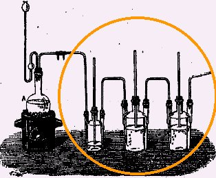
<br><b><font face="Trebuchet MS"><font size="-1">FIGURE XVIII</font></font></b>
<br><b><i><font face="Trebuchet MS"><font size="-1">(les flacons successifs
d'un appareil de Woolf ; on peut en adapter encore plusieurs...)</font></font></i></b></p></center>

<p><font face="Trebuchet MS"><font color="#000080">Dans ses <i>DM, I</i>,
p.401, Fulcanelli cite l&#8217;Adepte Lintaut (ou Linthaut) qui a r&eacute;dig&eacute;
un trait&eacute; intitul&eacute; <b><i><font size="-1">l&#8217;<a  name="Aurore"></a>Aurore</font></i><font size="-1">
et
<i>l&#8217;Ami de l&#8217;Aurore</i></font></b>(l&#8217;Arsenal, XVII<sup>e</sup> si&egrave;cle,
n&deg;3020) qui nous montre (cf. note de bas de page) l&#8217;&acirc;me d&#8217;un
roi couronn&eacute;, inerte, s&#8217;&eacute;levant vers une lanterne (</font><font color="#008000">lumen</font><font color="#000080">)
suspendue au sein de nuages &eacute;pais. Les pr&eacute;cieu<i>x <b><font size="-1">Deux
Logis alchimiques</font></b></i> de Canseliet nous montrent un dessin d&#8217;apr&egrave;s
le croquis de Henri de Linthaut. On y voit :</font></font>
</p><p><font face="Trebuchet MS"><font color="#000080">&nbsp;"</font><i><font color="#cc0000"><font size="-1">...une
petite cr&eacute;ature qui file, jambes, ailes et bras parall&egrave;lement
&eacute;tendus, vers une lanterne suspendue dans le ciel au milieu d&#8217;un
cercle de lumi&egrave;re radiante .</font></font></i><font color="#000080">"</font></font>
</p><p><font face="Trebuchet MS"><font color="#000080">L&#8217;apophtegme dit en
l&eacute;gende :<b><font size="-1"> FAC FIXUM VOLATILE.</font></b> E. Canseliet
a gliss&eacute; cette image dans le chapitre intitul&eacute; " <i>La conversion
des &eacute;l&eacute;ments</i> ". H. de Lhintaut est &eacute;galement cit&eacute;
par Fulcanelli (<i>Les Myst&egrave;res</i>, p.142) o&ugrave; il apporte
un autre t&eacute;moignage :</font></font>
</p><p><font face="Trebuchet MS"><font color="#000080">"<i> </i></font><i><font color="#cc0000"><font size="-1">Ce
secret icy surpasse tous les secrets du monde, car vous pouv&eacute;s en
peu de tems, sans grand soin ny travail, parvenir &agrave; une grande projection,
de laquelle voy&eacute;s <a href="../original/traite-sel.html">Isaac Hollandois</a>
qui en parles plus amplement</font></font></i><font color="#000080">" (<font size="-1">j&#8217;ai
respect&eacute; l&#8217;orthographe de l&#8217;original, op. cit&eacute;</font>).</font></font>
</p><center>
<p>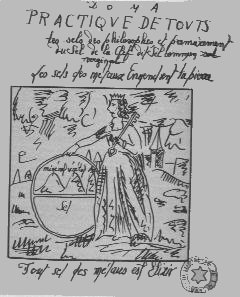
<br><b><font face="Trebuchet MS"><font size="-1">FIGURE XIX</font></font></b>
<br><b><i><font face="Trebuchet MS"><font size="-1">(Frontispice du manuscrit
de l'Aurore, Henri de Linthaut, XVII<sup>e</sup> si&egrave;cle)</font></font></i></b></p></center>

<p><font face="Trebuchet MS"><font color="#000080">Dans les <i>DM, II</i>,
p.71, Fulcanelli laisse entrevoir une liaison cabalistique qui peut &ecirc;tre
riche d&#8217;enseignement quand il aborde la s&eacute;paration des corps :</font></font>
</p><p><font face="Trebuchet MS"><font color="#000080">"</font><i><font color="#cc0000"><font size="-1">Chacune
de ces r&eacute;it&eacute;rations prend le nom d&#8217;aigle...[ce mot], d&#8217;o&ugrave;
les sages ont tir&eacute; leur terme d&#8217;aigle, signifie &eacute;clat, vive
clart&eacute;, lumi&egrave;re,<a  name="flambeau_index"></a> flambeau...</font></font></i><font color="#000080">"</font></font>
</p><p><font face="Trebuchet MS"><font color="#000080">Cette aurore, par cabale
phon&eacute;tique, &eacute;voque aussi bien la couleur d'un sel d'antimoine
que le Sel des Sages (</font><font color="#006600"> luteus</font><font color="#000099">
: de boue, d'argile, mais aussi jaune tirant sur le rouge (rouge&acirc;tre
--&gt;<a  name="aurore"></a>aurore) ;</font></font>
<br><a  name="67"></a><font face="Trebuchet MS"><font color="#000099"><a href="#67_t">67</a>.
On peut y voir les deux principes Soufre et Sel (1<sup>er</sup> Mercure)
qu'il faudra conjoindre de fa&ccedil;on radicale lors de la Grande Coction
;</font></font>
<br><a  name="68"></a><font face="Trebuchet MS"><font color="#000099"><a href="#68_t">68</a>.
C'est le d&eacute;but de la r&eacute;incarnation ou <a href="../original/reincrud.html">r&eacute;incrudation</a>
des corps ; les deux &eacute;l&eacute;ments qui s'&eacute;chappent de la
terre correspondent au principe Soufre (&Acirc;me) et au Sel (Corps), l'&eacute;l&eacute;ment
sortant du s&eacute;pulcre est le Mercure philosophique, promis &agrave;
la volatilisation ;</font></font>
<br><a  name="69"></a><font face="Trebuchet MS"><font color="#000099"><a href="#69_t">69</a>.
Il se trouve que les composants du Mercure philosophique sont tous blancs,
en particulier le </font><a href="../original/carbon-potasse.html"><font color="#006600">carbonate</font><font color="#000099">
de potasse</font></a><font color="#000099"> dont c'est m&ecirc;me l'indice
de sa puret&eacute; ; la potasse se pr&eacute;sente sous la forme de masses
blanches opaques ;</font></font>
<br><a  name="70"></a><font face="Trebuchet MS"><font color="#000099"><a href="#70_t">70</a>.
Symbole double de la Terre ou de V&eacute;nus selon le sens ; les alchimistes
y voient g&eacute;n&eacute;ralement le symbole de la <font size="-1"><a href="../original/philalethe-6.html#stibine">stibine</a></font>
;</font></font>
<br><a  name="71"></a><font face="Trebuchet MS"><font color="#000099"><a href="#71_t">71</a>.
Cette &eacute;p&eacute;e est entour&eacute;e d'une bande torsad&eacute;e
; il s'agit du 1<sup>er</sup> agent, celui qu'utilise le chevalier, au
d&eacute;but de l'oeuvre, dans sa lutte contre le dragon &eacute;cailleux
; nous avons d&eacute;j&agrave; rencontr&eacute; le </font><font color="#000080">personnage
du Mercure -le <a href="../original/philalethe-4.html#fou">fou</a> de l'oeuvre selon
Fulcanelli- qui nous rappelle l'un des <b><i><font size="-1"><a href="../original/ripley.html">Ripley's
Scrowles</a></font></i></b> :</font></font>
</p><center>
<p>
<br><b><font face="Trebuchet MS"><font size="-1">FIGURE XX</font></font></b>
<br><b><i><font face="Trebuchet MS"><font size="-1">(Ripley's Scrowles, Oxford,
deuxi&egrave;me moiti&eacute; du XV<sup>e</sup> si&egrave;cle)</font></font></i></b></p></center>

<p><font face="Trebuchet MS"><font color="#000080">il a l'aspect de quelqu'un
auquel une main &eacute;trang&egrave;re aurait imprim&eacute; une </font><font color="#006600">torsion</font><font color="#000080">
irr&eacute;ductible : ainsi appara&icirc;t-il litt&eacute;ralement contourn&eacute;
: il symbolise pour nous le temps des travaux propres &agrave; assurer
l'accroissement et la </font><font color="#006600">multiplication</font><font color="#000099">
(</font><font color="#660000"><font size="-1">--&gt; multiplex = contourn&eacute;,
&agrave; rapprocher de : torsad&eacute; = torqueo stamina</font></font><font color="#000099">).
Effectivement, ce fou a sur son b&acirc;ton un fil&nbsp; totalement enroul&eacute;
-que nous rapprocherions volontiers des quenouilles de </font><font color="#006600">fileuses</font><font color="#000099">-
et le personnage sugg&egrave;re un irr&eacute;sistible mouvement de rotation,
de torsion ; il est au sens litt&eacute;ral du terme tordu et tourment&eacute;.
On aura soin de rapprocher de la <font size="-1">FIGURE XX</font> une autre
image tir&eacute;e du <b><i><font size="-1">Th&eacute;&acirc;tre de l'Astronomie
terrestre</font></i></b>, cit&eacute; ailleurs et que nous reproduisons
:</font></font>
</p><center>
<p>
<br><font face="Trebuchet MS"><font size="-1">FIGURE XXI</font></font></p></center>

<p><font face="Trebuchet MS"><font color="#000099">La l&eacute;gende indique
:</font></font>
</p><p><i><font face="Trebuchet MS"><font color="#000099">"</font><font color="#cc0000"><font size="-1">L'image
nous montre un vase semblable &agrave; un urinal, encercl&eacute; &agrave;
sa base par un anneau de paille torsad&eacute;e ; &agrave; l'int&eacute;rieur
sont Mercure, Mars et Saturne, couch&eacute;s sur le dos, et un vieil homme
est sur le point d'y jeter V&eacute;nus et Jupiter. Derri&egrave;re le
vieil homme, sur le rocher noir, se tiennent le Soleil et la Lune."</font></font></font></i>
</p><p><font face="Trebuchet MS"><font color="#000099">A quoi donc peut bien
renvoyer cet aspect torsad&eacute; ? Victor Hugo -dont on n'a pas oubli&eacute;
l'Alchimiste de <b><i><font size="-1">Notre-Dame de Paris</font></i></b>-
&eacute;crit dans <i>les <b><font size="-1">Mis&eacute;rables</font></b></i>
(III. Marius, 4. <i>Les amis de l'ABC</i>) que :</font></font>
</p><p><i><font face="Trebuchet MS"><font color="#000099">"</font><font color="#cc0000"><font size="-1">Le
Brutus qui tua C&eacute;sar &eacute;tait amoureux d'une statue de petit
gar&ccedil;on. Cette statue &eacute;tait du statuaire grec Strongylion,
lequel avait aussi sculpt&eacute; cette figure d'amazone appel&eacute;e
Belle-Jambe, Eucnemos, que N&eacute;ron emportait avec lui dans ses voyages.</font></font><font color="#000099">"</font></font></i>
</p><p><font face="Trebuchet MS"><font color="#000099">Et, cabalistiquement,
il n'est pas difficile de faire le rapprochement entre buste et&nbsp;<a  name="torse"></a>torse
; nous renvoyons donc le lecteur &agrave; ce que nous avons compris de
l'<b><i><font size="-1">Histoire Naturelle</font></i></b> de Pline (<a href="../original/chimie-alchemy.html#Pline">1</a>).
C'est ici pour nous l'occasion de glisser ce commentaire que nous tirons
aussi des Mis&eacute;rables :</font></font>
</p><p><font face="Trebuchet MS"><font color="#000099">"</font><i><font color="#cc0000"><font size="-1">Un
volcan &eacute;claire, mais l'aube &eacute;claire encore mieux.</font></font></i><font color="#000099">"</font></font>
</p><p><font face="Trebuchet MS"><font color="#000099">Le lecteur sagace fera
un rapprochement facile entre les pi&egrave;ces de ce r&eacute;bus spirituel...Quant
&agrave; l'&eacute;p&eacute;e torsad&eacute;e, elle &eacute;voque un agent
au pouvoir tranchant et dans le m&ecirc;me temps, styptique, enserrant.
Serait-elle identique au casque stri&eacute; que porte le gnome de la chemin&eacute;e
de Terre-Neuve ? cf. note <a href="#40">40</a> ;</font></font>
<br><a  name="72"></a><font face="Trebuchet MS"><font color="#000099"><a href="#72_t">72</a>.
Cette clef que St Pierre tient dans sa main droite est celle qui ouvre
l'<i><font size="-1"><b><a href="../original/introitus.html">Entr&eacute;e du Palais Ferm&eacute;
du Roi</a></b> </font></i>de Philal&egrave;the ; c'est celle dont parle
Fulcanelli :</font></font>
</p><p><font face="Trebuchet MS"><font color="#000080">"</font><i><font color="#cc0000"><font size="-1">Cette
clef &eacute;tait donn&eacute;e aux n&eacute;ophytes par la c&eacute;r&eacute;monie
du Crat&egrave;re qui consacrait la premi&egrave;re initiation dans les
myst&egrave;res du culte dionysiaque</font></font></i><font color="#000080">",</font></font>
</p><center>
<p>
<br><b><font face="Trebuchet MS"><font color="#000080"><font size="-1">FIGURE
XXII</font></font></font></b>
<br><b><i><font face="Trebuchet MS"><font size="-1">po&ecirc;le alchimique
de <font color="#000066">Winterthur</font>)</font></font></i></b></p></center>

<p><font face="Trebuchet MS"><font color="#000080">car ce crat&egrave;re
n'est autre que cette
</font><font color="#006600">coupe, ou vase sacr&eacute;,
ou urne fun&eacute;raire (arcula, arca). Arca</font><font color="#000080">
est l&agrave; pour l'</font><font color="#006600">arche de No&euml;</font><font color="#000080">
et </font><font color="#006600">Arcas</font><font color="#000080"> est
le </font><font color="#006600">fils de Jupiter et de Callisto</font><font color="#000080">
en rapport avec l'ours et l'&eacute;toile p&ocirc;laire, outre qu'Arcas
renvoie aussi &agrave; Mercure. Cette </font><font color="#006600">coupe</font><font color="#000080">
est celle que l'on aper&ccedil;oit dans l'une des images du po&ecirc;le
alchimique de winterthur ; des abeilles s'y dirigent et la coupe est virtuellement
d&eacute;crite par Fulcanelli, aux<i> DM, I</i>, p.381 quand il parle des
:</font></font>
</p><p><font face="Trebuchet MS"><font color="#000080">"</font><i><font color="#cc0000"><font size="-1">chercheurs
qui ont, avec succ&egrave;s, surmont&eacute; les premiers obstacles et
puis&eacute; l'eau vive de l'antique Fontaine, poss&egrave;dent une clef
capable d'ouvrir les portes du laboratoire herm&eacute;tique</font></font></i><font color="#000080">"</font></font>
</p><p><font face="Trebuchet MS"><font color="#000099">D'autre part, la coupe,
que l'on peut rapprocher de </font><font color="#006600">calix</font><font color="#000099">,
peut par cabale phon&eacute;tique renvoyer &agrave; </font><font color="#006600">calx</font><font color="#000099">
: la </font><font color="#006600"><a href="#130">chaux</a></font><font color="#000099">.
La clef est aussi &eacute;voqu&eacute;e par <i><font size="-1"><a href="../original/chimie-alchemy.html" class="lien-repare" title="ancre absente de la page d'origine : lien ramené en haut de page">Tripied</a></font></i>,
auteur anonyme du XIX<sup>e</sup> si&egrave;cle quand il cite un passage
de la <b><i><font size="-1">Nature d&eacute;voil&eacute;e</font></i></b>
:</font></font>
</p><p><i><font face="Trebuchet MS"><font color="#000099">"</font><font color="#cc0000"><font size="-1">Cette
eau corrosive est la <u>clef</u> principale de toute forteresse; aussi
doit-on toujours avoir une bonne quantit&eacute; d'esprits de vitriol et
d'alun, parce qu'ils sont un
<a href="../original/humide-radical.html">humide min&eacute;ral
propre pour tous les astres rouges et blancs</a>. Les anciens ont sagement
et avec raison plac&eacute; le salp&ecirc;tre &agrave; c&ocirc;t&eacute;
du vitriol pour acuer le vitriol par le salp&ecirc;tre, afin de p&eacute;n&eacute;trer
mieux les sujets min&eacute;raux, et ils ont tir&eacute; du salp&ecirc;tr&eacute;
du vitriol, par la distillation, un menstrue universel pour le r&eacute;gime
min&eacute;ral. Les m&eacute;taux y devenant volatils et passant ensuite
en bonne partie avec lui par la distillation.</font></font><font color="#000099">"</font></font></i>
</p><p><font face="Trebuchet MS"><font color="#000099">Voici l'avis d'E. Canseliet
sur la clef qui ouvre les tr&eacute;sors (<b><i><font size="-1">Deux Logis
Alchimiques</font></i></b>, p.286) :</font></font>
</p><p><i><font face="Trebuchet MS"><font color="#000099">"</font><font color="#cc0000"><font size="-1">Exactement,
la mati&egrave;re s'ouvre &agrave; l'issue d'un violent combat qui, du
sentiment des auteurs, est la clef des &laquo; prisons m&eacute;talliques
&raquo;. Voil&agrave; pourquoi, sans doute, l'id&eacute;e de clef, qu'&eacute;veille
la racine grecque KLE repara&icirc;t phon&eacute;tiquement dans les diverses
traductions du mot massue.</font></font><font color="#000099">"</font></font></i>
</p><p><a  name="73"></a><font face="Trebuchet MS"><font color="#000099"><a href="#73_t">73</a>.
Nous y verrions volontiers une allusion &agrave; &laquo; l'homme double
ign&eacute; &raquo; de Basile Valentin. Il doit &ecirc;tre rapproch&eacute;
de l<i>'Homme-Lion</i>, titre du chapitre de l'un des caissons du ch&acirc;teau
du Plessis-Bourr&eacute; qu'E. Canseliet examine en ses <i>Deux Logis</i>,
p.285. V</font><font color="#000080">oici son avis sur le cavalier :</font></font>
</p><p><i><font face="Trebuchet MS"><font color="#000080">"</font><font color="#cc0000"><font size="-1">Elle
[la cabale] est le symbole du m&eacute;tal mort qui fera jaillir l'eau,
afin que la terre st&eacute;rile devienne f&eacute;conde, lem&eacute;tal
dont sont faites la lance ou bien l'&eacute;p&eacute;e du chevalier ou
cabalier, voire la <a href="../original/humide-radical.html#2%29-">fl&egrave;che du mena&ccedil;ant
sagittaire</a> ou de l'homme-cheval.</font></font><font color="#000080">"</font></font></i>
<br>&nbsp;
<br>&nbsp;
<br>
<br>
</p><center>
<p>
<br><font face="Trebuchet MS"><font size="-1">FIGURE XXIII</font></font>
<br><i><font face="Trebuchet MS"><font size="-1">(l'Homme-Lion)</font></font></i></p></center>

<p><font face="Trebuchet MS"><font color="#000080">C'est une indication
sur un sel d'&eacute;tain ou sur un </font><font color="#006600">sel ammoniacal</font><font color="#000080">
(<a href="../original/compendium.html#9.b">1</a>) qu'il est question ici. Une &eacute;tude
plus r&eacute;cente des textes nous laisse envisager une troisi&egrave;me
solution qui, peut-&ecirc;tre, repr&eacute;sente la clef du symbolisme
de Jupiter, arcane majeur de l'oeuvre (cf. notes <a href="#122">122</a>
et <a href="#130">130</a>).&nbsp; Nous remarquons les <a href="#" class="lien-repare" title="ancre absente de la page d'origine (lien ramené en haut de page)">cheveux</a>
au vent, une massue brandie de la main droite et la protection d'un bouclier
de m&eacute;tal. Cette massue -que l'on va donc assimiler &agrave; l'&eacute;p&eacute;e
de notre chevalier- a fait l'objet d'un ample commentaire de Fulcanelli
(<i>DM, I,</i> p.267 et non p. 185 comme l'indique en note de bas de page
E. Canseliet, <i>Deux Logis</i>, mais p. 285 ; l&agrave; encore, il s'agit
d'une coquille...) ;</font></font>
<br><a  name="74"></a><font face="Trebuchet MS"><font color="#000099"><a href="#74_t">74</a>.
Ce passage &eacute;voque l'icone qui inaugure le <i><a href="../original/mutus-liber.html">Mutus
Liber</a></i> o&ugrave; l'on voit un dormeur pr&ecirc;t &agrave; &ecirc;tre
r&eacute;veill&eacute; au son de l'airain ;</font></font>
<br><a  name="75"></a><font face="Trebuchet MS"><font color="#000099"><a href="#75_t">75</a>.
c'est-&agrave;-dire les phylact&egrave;res ; sait-on qu'un phylact&egrave;re,
en latin, </font><font color="#006600">phylacterium</font><font color="#000099">
(amulette, pr&eacute;servatif) est &eacute;galement le nom donn&eacute;
&agrave; la plante </font><font color="#006600">artemisia</font><font color="#000099">
(employ&eacute;e comme pr&eacute;servatif -mais pas au sens, bien s&ucirc;r,
o&ugrave; on l'entend de nos jours...il s'agissait d'une &laquo; pr&eacute;servation
du mal &raquo; par les pouvoirs que l'on attribuait -faussement bien s&ucirc;r-
&agrave; cette plante). Cette allusion &agrave; Art&eacute;mis</font><font color="#000080">
permet de comprendre l&#8217;allusion au mythe de </font><font color="#008000">Diane
en Tauride</font><font color="#000080"> (Art&eacute;mis) dont je rappelle
qu&#8217;elle porte un </font><font color="#008000">flambeau</font><font color="#000080">
et que son front est surmont&eacute; d&#8217;un </font><font color="#008000">croissant
de Lune</font><font color="#000080"> (Lune corn&eacute;e). </font><font color="#000099">On
aura garde d'oublier aussi qu'</font><font color="#006600">Art&eacute;mis</font><font color="#000099">
(Diane) est aussi la <u>fille de Latone</u>. E. Canseliet nous en parle
dans ses <i>Deux Logis Alchimiques</i> dans le chapitre o&ugrave; il nous
explique une partie du symbolisme de la porte alchimique de la <a href="../original/reincrud.html">villa
Palombara</a> :</font></font>
</p><p><font face="Trebuchet MS"><font color="#000099">"</font><i><font color="#cc0000"><font size="-1">L'azoth
et le Feu en blanchissant Latone, para&icirc;tra Diane sans v&ecirc;tement.</font></font></i><font color="#000099">"
;</font></font>
</p><p><a  name="76"></a><font face="Trebuchet MS"><font color="#000099"><a href="#76_t">76</a>.
C'est une variante du &laquo; tournoiement du monde &raquo; et du D&eacute;luge
illustr&eacute; par Fulcanelli et Cyliani. C'est la vision du Miroir du
monde (<i>Speculum mundi</i>) ;</font></font>
<br><a  name="77"></a><font face="Trebuchet MS"><font color="#000099"><a href="#77_t">77</a>.
La couleur blanche orang&eacute; correspond &agrave; une phase de d&eacute;but
de l'oeuvre ainsi que la pr&eacute;sence de l'&eacute;p&eacute;e en t&eacute;moigne
; la couleur orang&eacute; rouge correspond &agrave; un stade plus tardif
: la clef a d&eacute;j&agrave; ouvert le <a href="../original/introitus.html">Palais
du Roi</a> et le <a href="../original/carbon-potasse.html">bain des astres</a> va d&eacute;buter
;</font></font>
<br><a  name="78"></a><font face="Trebuchet MS"><font color="#000099"><a href="#78_t">78</a>.
il s'agit des principes Soufre (m&acirc;le) et Mercure (f&eacute;minin),
respectivement &eacute;quivalents du m&eacute;tal (&Acirc;me) et de l'&eacute;crin
ou r&eacute;sine de l'or (min&eacute;ral ou Corps) ;</font></font>
<br><a  name="79"></a><font face="Trebuchet MS"><font color="#000099"><a href="#79_t">79</a>.
La solution &agrave; cette devinette peut correspondre au &laquo; ciel
terrestre &raquo; de Lavinus et Pontanus. Le </font><i><font color="#000080"><a href="../original/pontanus.html">Trait&eacute;
du ciel terrestre</a> </font></i><font color="#000080">de Vinceslas Lavinius
de Moravie (1612) semble avoir une certaine importance et Fulcanelli (<i>DM,
I</i>, p.103) lorsqu&#8217;il &eacute;voque avec nostalgie l&#8217;&eacute;sot&eacute;risme
&eacute;gyptien reni&eacute; et corrompu par la Renaissance, cite <a href="../original/cosmopolite-1.html">S&eacute;thon</a>,
Denys Zachaire, <a href="../original/tresor-paracelse.html">Paracelse</a> et Lavinius.
Cette importance est confirm&eacute;e (<i>DM, I</i>, p.208) par l&#8217;examen
de l&#8217;eau ign&eacute;e au sein de laquelle se trouverait le soleil herm&eacute;tique.
Fulcanelli dit encore :</font></font>
</p><p><font face="Trebuchet MS"><font color="#000080">"</font><i><font color="#cc0000"><font size="-1">Captez
un rayon de soleil, condensez-le sous une forme substantielle, nourrissez
de feu &eacute;l&eacute;mentaire ce feu spirituel corporifi&eacute;, et
vous poss&eacute;derez le plus grand tr&eacute;sor de ce monde.</font></font></i><font color="#000080">"</font></font>
</p><p><font face="Trebuchet MS"><font color="#000080">Il y a l&agrave;, malgr&eacute;
les apparences d&#8217;un langage on ne peut plus &eacute;sot&eacute;rique, des
indications exceptionnelles qui se montreront &eacute;videntes en temps
utile...A m&eacute;diter ! p.438 (<i>DM, I</i>), le grand adepte &eacute;crit
enfin :</font></font>
</p><p><font face="Trebuchet MS"><font color="#000080">"</font><i><font color="#cc0000"><font size="-1"><a href="../original/pontanus.html">Vinceslas
Lavinius de Moravie</a> donne le secret de l&#8217;&#339;uvre, en une quinzaine de
lignes, dans l&#8217;Enigme du mercure philosophal que l&#8217;on trouve au Trait&eacute;
du Ciel terrestre</font></font><font color="#000080">.</font></i><font color="#000080">"</font></font>
</p><p><font face="Trebuchet MS"><font color="#000080">Notons en passant &agrave;
propos de ce &laquo; rayon de soleil &raquo; qu'E. Canseliet dans ses <i>Deux
Logis Alchimiques</i> cite un passage qui &eacute;voque avec force celui
de Fulcanelli au chapitre de <i>l'Homme-Lion</i> :</font></font>
</p><p><i><font face="Trebuchet MS"><font color="#000080">"</font><font color="#cc0000"><font size="-1">Coupez
un arbre haut et fier, Quand le soleil sera rayonnant : En l'entaille du
premier copeau Verrez le rayon de soleil beau ; Et quand vous creusez l'entaille
plus avant, Et le soleil partout se r&eacute;pand, Vous ne pouvez le rayon
tuer, Blesser, ni prendre ni tenir.</font></font><font color="#000080">"</font></font></i>
</p><p><font face="Trebuchet MS"><font color="#000080">Ce texte est tir&eacute;
d'un manuscrit de la Biblioth&egrave;que Nationale (n&deg; 273) et date
du XIII<sup>e</sup> si&egrave;cle ;</font></font>
<br><a  name="80"></a><font face="Trebuchet MS"><font color="#000080"><a href="#80_t">80</a>.
Nous serons aid&eacute;s en nous rapportant &agrave; </font><font color="#000099">l'Introduction
de l'<i>Alchimie</i> d'E. Canseliet (Pauvert, 1978) o&ugrave; l'on rel&egrave;ve
p.63 :</font></font>
</p><p><font face="Trebuchet MS"><i><font color="#000099">"</font><font color="#cc0000"><font size="-1">Et
qu'on sache bien, en ce lieu, malgr&eacute; toute l'invraisemblance, que
les rayons ultra-violets abondent dans les nuits sereines d'une &eacute;poque
de l'ann&eacute;e parfaitement d&eacute;finie, et qu'ils se fixent d'autant
mieux, au sein du r&eacute;ceptacle idoine - de cette eau des sages qui
r&eacute;v&egrave;le leur extr&ecirc;me r&eacute;frangibilit&eacute;- que
le firmament, calme et limpide, s'offre moins en obstacle au r&ocirc;le
de l'ionosph&egrave;re. Quant &agrave; ce n&eacute;ologisme scientifique...faudrait-il
accepter comme une simple co&iuml;ncidence, qu'il ait &eacute;t&eacute;
compos&eacute; des deux vocables ionou (</font></font></i><font color="#cc0000"><font size="+1">ionou</font><i><font size="-1">)
et syaira (</font></i><font size="+1">sjera</font><i><font size="-1">)...:
sph&egrave;re de la violette</font></i></font><i><font color="#000099">."</font></i></font>
</p><p><font face="Trebuchet MS"><font color="#000099">De ces mots sybillins,
nous pouvons retenir qu'ils se rapportent &agrave; un corps violet qui
para&icirc;t lumineux dans la nuit, dont la couleur est attest&eacute;e
par l'&eacute;poque de l'ann&eacute;e o&ugrave; fleurit la plante d&eacute;sign&eacute;e,
qui se rapporte &agrave; Jupiter et qui, enfin, a la propri&eacute;t&eacute;
de couler (</font><font color="#006600">cado</font><font color="#000099">,
cassito...). C'est n&eacute;cessairement de la </font><font color="#006600">fluorite</font><font color="#000099">
(<a href="../original/reincrud.html" class="lien-repare" title="ancre absente de la page d'origine : lien ramené en haut de page">spath fluor</a>) qu'il est question ici.
La couleur violet peut aussi se rapporter &agrave; certains</font><font color="#000080">
schistes argileux ; il s'agit de roches finement cristallis&eacute;es dans
lesquelles on peut rencontrer des d&eacute;riv&eacute;s de l&#8217;aluminium,
en particulier l&#8217;illite et la chlorite. On y retrouve aussi de la </font><font color="#006600">pyrite
</font><font color="#000099">et
de la</font><font color="#006600"> magn&eacute;tite</font><font color="#000080">.
Leur coloration est variable, allant du noir, au vert (chlorite), et du
rouge ou violet (pour les illites o&ugrave; du Fe est substitu&eacute;
&agrave; l&#8217;Al) ; leur coloration peut &ecirc;tre enfin bigarr&eacute;e
lorsque plusieurs sels de fer sont pr&eacute;sents. Il renvoie &agrave;
un lieu &eacute;lev&eacute; et &agrave; une couleur particuli&egrave;re
du ciel (bleu-violet ou tirant vers le noir). De fa&ccedil;on inattendue,
le char a rapport avec la couleur violet : le </font><font color="#008000">char</font><font color="#000080">,
en latin, se dit </font><font color="#008000">jugum</font><font color="#000080">,
qui est aussi la constellation de la </font><font color="#006600">Balance</font><font color="#000080">,
et le </font><font color="#006600">sommet d'une montagne </font><font color="#000080">(avec
id&eacute;e de hauteur, de cime -sans doute dans le cadre d'une victoire,
cf. les Monts-joie de Fulcanelli- et id&eacute;e aussi d&#8217;une couleur bleu
fonc&eacute;). La couleur bleu fonc&eacute; habituellement associ&eacute;e
au r&eacute;mora &eacute;voque l&#8217;azur du sommet des montagnes (</font><font color="#006600">caerula</font><font color="#000080">).
Ce symbolisme se retrouve dans la <font size="-1">FIGURE XXIV</font>, extraite
du <i>De Lapide Philosophorum</i> de Lambsprinck :</font></font>
<br>&nbsp;
<br>&nbsp;
<br>
<br>
</p><center>
<p>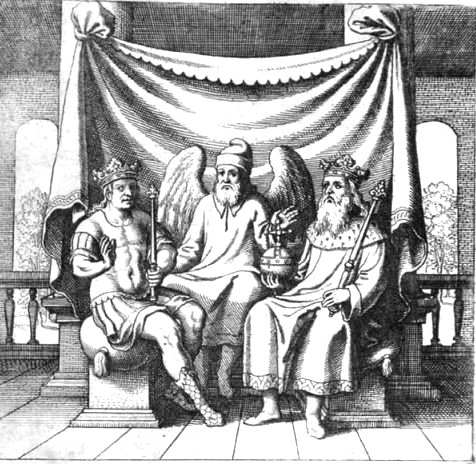
<br><font face="Trebuchet MS"><font size="-1">FIGURE XXIV</font></font>
<br><i><font face="Trebuchet MS"><font size="-1">(gravure n&deg; 15, De lapide
philosophorum)</font></font></i>
</p><p><font face="Trebuchet MS"><font color="#000080">l&eacute;gende :</font></font>
</p><p><font face="Trebuchet MS"><font color="#660000">"<i><font size="-1">Le
P&egrave;re et le fils sont unis par les mains avec le conducteur. On doit
sous-entendre ici le corps, l'Esprit et l'Ame.</font></i>"</font></font>
</p><p><font face="Trebuchet MS"><font color="#000080">texte :</font></font>
</p><p><font face="Trebuchet MS"><font color="#000080">"<i><font size="-1">Le
p&egrave;re, un </font></i></font><i><font size="-1"><font color="#008000">vieillard</font><font color="#000080">
est issu d'Isra&euml;l, - Il n'a qu'un fils unique...- Un </font><font color="#008000">conducteur</font><font color="#000080">
lui impose douleur sur douleur...- Le conducteur a parl&eacute; en ces
termes au fils : - Je suis venu ici afin&nbsp; de te conduire en tous lieux,
- A l'</font><font color="#008000">extr&ecirc;me cime</font><font color="#000080">
de la montagne la plus haute...</font></font></i><font color="#000080">"
(in G. Ranque,<i> la Pierre Philosophale</i>, pp. 180-181).</font></font></p></center>

<p><font face="Trebuchet MS"><font color="#000080">L'extr&ecirc;me cime
de la montagne repr&eacute;sente une </font><font color="#006600">couleur
bleu fonc&eacute;</font><font color="#000080"> (caerula, caeruleus), violet,
qui n'est pas sans nous rappeler la couleur de la f&egrave;ve, noir bleu&acirc;tre
;</font></font>
<br><a  name="81"></a><font face="Trebuchet MS"><font color="#000080"><a href="#81_t">81</a>.
Est &eacute;voqu&eacute;e ici d'une part la transformation progressive
du Lion vert en Lion rouge ; nous avons vu -cf. note <a href="#75">75</a>-
que les phylact&egrave;res symbolisaient Art&eacute;mis, c'est-&agrave;-dire
Diane aux cornes lunaires, symbolisant le Lion vert (cf. la section sur
la <a href="../original/symb-dir-prim.html#n">Lune</a>) ; d'autre part ce &laquo;
lion rouge et volant &raquo; marque bien la propri&eacute;t&eacute; qu'acquiert
peu &agrave; peu le Mercure de se volatiliser, mais il s'agit ici de l'une
des choix possibles -cf. la section sur le <font size="-1"><a href="../original/imitat-prec.html#voie_seche">Mercure</a></font>
pour l'ensemble des possibilit&eacute;s de nature- par la voie s&egrave;che
;</font></font>
<br><a  name="82"></a><font face="Trebuchet MS"><font color="#000080"><a href="#82_t">82</a>.
Par premier agent, on peut entendre soit l'une des mati&egrave;res possibles
(stibine, alun, un m&eacute;tal trivalent) ou peut-&ecirc;tre davantage,
l'un des agents qui permettent de fabriquer de la potasse (cf. la section
sur la <font size="-1"><a href="../original/compendium.html#M_base">Pierre</a></font>)
; mais Fulcanelli d&eacute;signe comme principes de l'oeuvre le patient
et l'agent, sans qu'il fasse r&eacute;f&eacute;rence <u>forc&eacute;ment</u>
&agrave; un premier agent ;</font></font>
<br><a  name="83"></a><font face="Trebuchet MS"><font color="#000080"><a href="#83_t">83</a>.
Cf. note <a href="#72">72</a> ;</font></font>
<br><a  name="84"></a><font face="Trebuchet MS"><font color="#000080"><a href="#84_t">84</a>.
Il est clair que l'&eacute;tude d'un texte comme les <i>Figures Hi&eacute;roglyphiques
</i>ou
l'<i><font size="-1"><a href="../original/introitus.html">Intro&iuml;tus</a></font></i>,
sans &eacute;tude pr&eacute;alable, correspond &agrave; peu pr&egrave;s
&agrave; la marche d'un aveugle qui ne se doute pas de la pr&eacute;sence
du&nbsp; pr&eacute;cipice qui s'ouvre devant lui. Ce danger que court l'&eacute;tudiant
non pr&eacute;par&eacute; a &eacute;t&eacute; illustr&eacute; par J. D.
Mylius dans l'une des gravures de son <i>Opus medico-chymicum</i> :</font></font>
<br>&nbsp;
<br>&nbsp;
<br>
<br>
</p><center>
<p>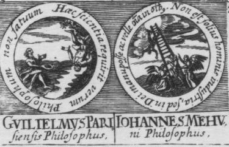
<br><font face="Trebuchet MS"><font size="-1">FIGURE XXV</font></font>
<br><i><font face="Trebuchet MS"><font size="-1">(in J.J. Manget, bibliotheca
chemica, Gen&egrave;ve, 1702)</font></font></i></p></center>

<p><font face="Trebuchet MS"><font color="#000066">La figure de droite
montre la chute de l'imprudent au sommet de l'&eacute;chelle de sapience.
E. Canseliet a repris cett image dans son <i>Alchimie expliqu&eacute;e
sur ses Textes classiques</i> (p.214) avec cette l&eacute;gende :</font></font>
</p><p><i><font face="Trebuchet MS"><font color="#000066">"</font><font color="#cc0000"><font size="-1">On
ne peut pas monter inconsid&eacute;r&eacute;ment &agrave; l'arbre de la
science, sans qu'on en ait re&ccedil;u l'assentiment de Dieu et qu'on se
soit assur&eacute; son aide toute-puissante. Le v&eacute;ritable philosophe,
humble et patient, sollicite surtout la charit&eacute; divine. Voil&agrave;
pourquoi l'ange initiateur d&eacute;signe, au n&eacute;ophyte, le sort
d'un imprudent qui est mont&eacute; tout seul, vers le soleil du monde.</font></font><font color="#000066">"
;</font></font></i>
</p><p><a  name="85"></a><font face="Trebuchet MS"><font color="#000066"><a href="#85_t">85</a>.
Le dessin est pr&eacute;cis puisqu'on voit jusqu'&agrave; la grille du
fourneau, le matras et l'&eacute;cuelle &eacute;tant, ainsi qu'il convient,
mis au-dessus de cette grille, afin de b&eacute;n&eacute;ficier de la temp&eacute;rature
la plus &eacute;lev&eacute;e ;</font></font>
<br><a  name="86"></a><font face="Trebuchet MS"><font color="#000066"><a href="#86_t">86</a>.
</font><font color="#000099">On
trouve dans l'<i>Histoire Naturelle</i> de Pline l'Ancien un long passage
sur les aluns dont nous extrayons ceci :</font></font>
</p><p><font face="Trebuchet MS"><font color="#000099">"</font><i><font color="#cc0000"><font size="-1"><a href="../original/chimie-alchemy.html#Pline">L'alun
liquide</a> a des propri&eacute;t&eacute;s astringentes, durcissantes et
corrosives...Une esp&egrave;ce d'alun solide est appel&eacute;e schiston
par les Grecs : il se divise en sortes de filaments blanch&acirc;tres,
d'o&ugrave; le nom de trichitis que certains ont pr&eacute;f&eacute;r&eacute;
lui donner. il provient du minerai qui fournit aussi le cuivre -et que
nous appelons chalcitis- : c'est une sorte d'exsudation de ce minerai coagul&eacute;e
en &eacute;cume</font></font><font color="#000099">."</font></i></font>
</p><p><font face="Trebuchet MS"><font color="#000099">Une autre allusion &agrave;
l'&eacute;cume nous est donn&eacute;e par un manuscrit du XV<sup>e</sup>
si&egrave;cle, le <i>Donum Dei</i> :</font></font>
</p><p><font face="Trebuchet MS"><i><font color="#000099">"</font><font color="#cc0000"><font size="-1">L'autre,
Meopus, est cassant et palpable, c'est pourquoi on l'appelle corps </font></font></i><font color="#cc0000"><font size="-1">[le
commentateur de ce passage lit "vif-argent" alors qu'une simple translation
permet de lire SPUMEO, c'est-&agrave;-dire de l'&eacute;cume d'argent qui
n'est autre que de&nbsp; l'oxyde de plomb ou litharge]...</font></font><font color="#000099">"
(<i><font size="-1">L'Alchimie Europ&eacute;enne du XIII<sup>e</sup> au XVIII<sup>e</sup>
si&egrave;cle</font></i>, Herwig Buntz, in <i><font size="-1">Alchimie. Histoire,
Technologie, Pratique</font></i>, Pierre Belfond, 1972)</font></font>
</p><p><font face="Trebuchet MS"><font color="#000080">E. Canseliet nous pr&eacute;cise
que la couleur de cette mati&egrave;re est noire, d&#8217;odeur cadav&eacute;rique
et a l&#8217;aspect d&#8217;une&nbsp;<a  name="&eacute;cume_index"></a></font><font color="#006600">&eacute;cume
</font><font color="#000099">infecte,
bulleuse et putride</font><font color="#000080">. On peut aussi interpr&eacute;ter
cette &eacute;cume -sur le plan chimique- comme celle qui se produit dans
la fabrication de la <a href="../original/compendium.html#7">potasse</a>. Donc, deux
possibilit&eacute;s : soit de l'alun, exsudation d'un minerai de cuivre,
soit l'un des composants du Lion vert ;</font></font>
<br><a  name="87"></a><font face="Trebuchet MS"><font color="#000080"><a href="#87_t">87</a>.
Ce Lion vert, Fulcanelli nous en reparle dans ses&nbsp;<a  name="Demeures"></a><i>Demeures
philosophales (DM, I, </i>p.243) :</font></font>
</p><p><font face="Trebuchet MS"><font color="#000080">"</font><i><font color="#cc0000"><font size="-1">C&#8217;est
la substance qui, au cours des sublimations, s&#8217;&eacute;l&egrave;ve au-dessus
de l&#8217;eau, qu&#8217;elle surnage comme une huile ; c&#8217;est l&#8217;Hyp&eacute;rion et
le vitriol de Basile Valentin, le lion vert de Ripley...en un mot la v&eacute;ritable
inconnue du grand probl&egrave;me.</font></font></i><font color="#000080">"</font></font>
</p><p><font face="Trebuchet MS"><font color="#000080">Voila de pr&eacute;cieuses
informations. Sur le plan de l'&eacute;quivalence chimique, cette substance
pourrait avoir quelque rapport avec la </font><font color="#006600">potasse
caustique</font><font color="#000080"> (<a href="../original/compendium.html#7">1</a>)
&agrave; l'&eacute;tat solide. Il est donc probable qu'il faille interpr&eacute;ter
les commentaires de la note<a href="#86"> 86</a> en faveur de l'alun ;</font></font>
<br><a  name="88"></a><font face="Trebuchet MS"><font color="#000080"><a href="#88_t">88</a>.
Nous verrions l&agrave; une r&eacute;f&eacute;rence aux exp&eacute;riences
de sous-fusion utilis&eacute;es dans les synth&egrave;ses min&eacute;ralogiques
: ainsi, </font><font color="#000099">Fouqu&eacute; et Michel L&eacute;vy
ont montr&eacute; qu'un certain nombre de mati&egrave;res analogues, en
&eacute;tant maintenus pendant longtemps &agrave; une </font><font color="#006600">temp&eacute;rature
un peu inf&eacute;rieure &agrave; leur point de fusion</font><font color="#000099">,
pouvaient se transformer en masses cristallines. Ce proc&eacute;d&eacute;
fournit des esp&egrave;ces min&eacute;rales comme le </font><font color="#006600"><a href="../original/merc-nat.html">spinelle</a></font><font color="#000099">
[<font size="-1">aluminate de magn&eacute;sium</font>] et le </font><font color="#006600"><a href="../original/merc-nat.html">grenat</a></font><font color="#000099">
[<font size="-1">silicate double de divers m&eacute;taux</font>]. Cette temp&eacute;rature
de sous-fusion doit &ecirc;tre maintenue pendant 24 &agrave; 48 heures.
La mati&egrave;re prend alors un volume beaucoup plus consid&eacute;rable
qu'&agrave; l'&eacute;tat vitreux ;</font></font>
<br><a  name="89"></a><font face="Trebuchet MS"><font color="#000099"><a href="#89_t">89</a>.
C'est le r&eacute;gime de Saturne de Philal&egrave;the ; les mati&egrave;res
sont dissoutes dans le fondant, la temp&eacute;rature est port&eacute;e
&agrave; 1300&deg;C puis tr&egrave;s lentement abaiss&eacute;e pendant
plusieurs jours ; c'est alors que l'accr&eacute;tion survient et que les
<a href="../original/chimie-alchemy.html" class="lien-repare" title="ancre absente de la page d'origine : lien ramené en haut de page">cristaux</a>
commencent &agrave; appara&icirc;tre ;</font></font>
<br><a  name="90"></a><font face="Trebuchet MS"><font color="#000099"><a href="#90_t">90</a>.
Cette course du soleil dans le zodiaque a &eacute;t&eacute; l'un des objets
du <i>Th&eacute;&acirc;tre de l'Astronomie terrestre</i> d'E. Kelly et
a donn&eacute; lieu &agrave; trois figures qui nous montrent cette &laquo;
pousse &raquo; :</font></font></p></blockquote>

<blockquote>&nbsp;
<center><table border="1" cols="3" width="633" background="fondmarbre.jpg">
<tbody><tr>
<td>
<p><font face="Trebuchet MS"><font color="#660000"><font size="-2">Pr&egrave;s
du Soleil une cruche verse des rayons blancs, ou des gouttes, dans un urinal.
Sur la colline se tient un <a href="../original/heraldique.html" class="lien-repare" title="ancre absente de la page d'origine : lien ramené en haut de page">Ph&eacute;nix</a>,
mordant sa poitrine d'o&ugrave; tombe du sang goutte &agrave; goutte, ce
dernier &eacute;tant bu par son petit. Au-dessous du rocher, un cultivateur
ensemence son champ (<i>chapitre 9</i>).</font></font></font></p></td>

<td>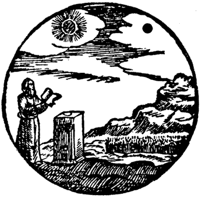
<p><font face="Trebuchet MS"><font color="#660000"><font size="-2">Un vieil
homme se tient pr&egrave;s du fourneau, un livre &agrave; la main.Un Soleil
noir dans le vase. Derri&egrave;re le fourneau se trouve un champ d'<a href="../original/heraldique.html" class="lien-repare" title="ancre absente de la page d'origine : lien ramené en haut de page">orge
vert</a> sortant de terre.Le Pav&eacute; sur lequel repose le fourneau
est noir (<i>chapitre 10</i>)</font></font></font></p></td>

<td>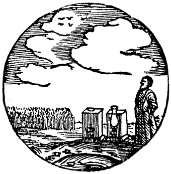
<p><font face="Trebuchet MS"><font color="#660000"><font size="-2">Un vieil
homme se tient pr&egrave;s du fourneau, les deux tours sont ouvertes, l'urinal
change constamment de couleur; derri&egrave;re le fourneau l'orge donne
des &eacute;pis (<i>chapitre 11</i>)</font></font></font></p></td>
</tr>
</tbody></table></center>
</blockquote>

<center><font face="Trebuchet MS"><font size="-1">FIGURES XXVI</font></font>
<br><i><font face="Trebuchet MS"><font size="-1">(extraits du Th&eacute;&acirc;tre
de l'Astronomie terrestre, Hambourg, 1676)</font></font></i></center>

<blockquote><a  name="91"></a><font face="Trebuchet MS"><a href="#91_t">91</a>.
<font color="#000099">C'est
donc l'&eacute;quivalent des images que nous trouvons chez Lambsprinck
; ces images ont &eacute;t&eacute; l'objet de commentaires et d'all&eacute;gories
repr&eacute;sentant d'autres animaux (le coq et le renard, la r&eacute;more
et la salamandre chez De Cyrano Bergerac, etc.) ;</font></font>
<br><a  name="92"></a><font face="Trebuchet MS"><font color="#000099"><a href="#92_t">92</a>.
Ces substances (le min&eacute;ral et le m&eacute;tal) doivent en effet
&ecirc;tre dissous (ou &laquo; mortifi&eacute;s &raquo;) avant que puisse
se produire la cristallisation ;</font></font>
<br><a  name="93"></a><font face="Trebuchet MS"><font color="#000099"><a href="#93_t">93</a>.
Il s'agit du principe Soufre (&agrave; noter qu'on l'emploie habituellement
au masculin : on dit donc chien du Corasc&egrave;ne et chienne d'Arm&eacute;nie).
Fulcanelli,Dans les<i> DM, I</i>, p. 322, revient sur ce chien, mieux appel&eacute;
chien de </font><font color="#009900"><font size="-1"><a href="../original/soufre.html">Khorassan</a></font></font><font color="#000099">
(pour : Khurasan, &laquo; lieu du soleil &raquo;, r&eacute;gion de l'est
de l'Iran) :</font></font>
<p><i><font face="Trebuchet MS"><font color="#000099">"</font><font color="#cc0000"><font size="-1">...le
chien de Khorassan, ou soufre, tire son appellation du mot grec Korai,
&eacute;quivalent du corbeau [</font></font></font></i><font face="Trebuchet MS"><font color="#cc0000"><font size="-1">note
: que les Latins nommaient le corbeau Phoebeius ales, l'oiseau d'Apollon
ou du soleil<i>], vocable qui servait encore &agrave; d&eacute;signer un
certain poisson noir&acirc;tre sur lequel, si nous en avions licence, nous
pourrions dire de curieuses choses.</i></font></font><i><font color="#000099">"</font></i></font>
</p><p><font face="Trebuchet MS"><font color="#000099">Ce poisson, c'est la
chabot que nous avons d&eacute;j&agrave; <font size="-1"><a href="../original/symb-dir-prim.html#c">&eacute;voqu&eacute;</a></font>
; c'est par analogie la f&egrave;ve du g&acirc;teau des Rois. C'est le
signe du d&eacute;but de l'emp&acirc;tement progressif de l'eau mercurielle.
Il s'agit donc du Soufre dont Fulcanelli nous parle, avant, p. 234, quand
il &eacute;voque Nicolas de Valois -au sujet duquel il pr&eacute;cise p.
324 qu'il fut pratiquement le seul, avec Quercetanus, : "<i><font size="-1">[&agrave;
r&eacute;v&eacute;ler] l'</font></i></font><i><font size="-1"><font color="#006600">&eacute;pith&egrave;te
verbale</font><font color="#000099"> du soufre, or ou soleil herm&eacute;tique</font></font><font color="#000099">.</font></i><font color="#000099">"
;</font></font>
<br><a  name="94"></a><font face="Trebuchet MS"><font color="#000099"><a href="#94_t">94</a>.
C'est la dissolution totale et radicale des corps, pr&eacute;ludant &agrave;
la r&eacute;incrudation ;</font></font>
<br><a  name="95"></a><font face="Trebuchet MS"><font color="#000099"><a href="#95_t">95</a>.
Arnauld de La Chevalerie -puisqu'il est le probable auteur du trait&eacute;-
m&eacute;lange ici les cartes : il parle des mati&egrave;res premi&egrave;res
qui doivent &ecirc;tre employ&eacute;es telles qu'elles sortent des g&icirc;tes
miniers, c'est-&agrave;-dire sous leur premier &eacute;tat de <font size="-1"><a href="../original/reincrud.html#Sujet">sulfure</a></font>
;</font></font>
<br><a  name="96"></a><font face="Trebuchet MS"><font color="#000099"><a href="#96_t">96</a>.
Il s'agit de la fange, ou mieux, du limon bourbeux : c'est une indication
sur de l'argile dont la vari&eacute;t&eacute; kaolin porte le principe
au degr&eacute; le plus haut ;</font></font>
<br><a  name="97"></a><font face="Trebuchet MS"><font color="#000099"><a href="#97_t">97</a>.
Cf. note <a href="#53">53</a> ;</font></font>
<br><a  name="98"></a><font face="Trebuchet MS"><font color="#000099"><a href="#98_t">98</a>.
Le Pont renvoie dans tous les cas au mythe de <font size="-1"><a href="../original/symb-dir-prim.html#c">Cyb&egrave;le</a></font>
qui symbolise l'<font size="-1"><a href="../original/symb-dir-prim.html#a">athanor</a></font>
secret ; autour du Pont-Euxin gravitent plusieurs l&eacute;gendes, dont
celle des Argonautes et la Toyson d'or ;</font></font>
<br><a  name="99"></a><font face="Trebuchet MS"><font color="#000099"><a href="#99_t">99</a>.
Le Mercure philosophique, r&eacute;put&eacute; dissolvant universel, poss&egrave;de
donc aussi la vertu oppos&eacute;e, celle de conjoindre apr&egrave;s dissolution,
les principes qui lui ont &eacute;t&eacute; offerts ;</font></font>
<br><a  name="100"></a><font face="Trebuchet MS"><font color="#000099"><a href="#100_t">100</a>.
Ce p&egrave;re qui doit mourir a &eacute;t&eacute; l'objet d'une riche
iconographie : il s'agit donc des premi&egrave;res mati&egrave;res qui
doivent &ecirc;tre dissoutes avant de r&eacute;aliser le Rebis (amalgame
min&eacute;ral-m&eacute;tal) ; ainsi, P. Bonus dans sa <i>Pretiosa Margarita
Novella</i> d&eacute;crit l'all&eacute;gorie suivante :</font></font>
<br>&nbsp;
<br>&nbsp;
<br>
<br>
</p><center>
<p>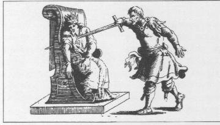
<br><font face="Trebuchet MS"><font size="-1">FIGURE XXVII</font></font>
<br><i><font face="Trebuchet MS"><font size="-1">(Venise, 1546)</font></font></i></p></center>

<p><font face="Trebuchet MS"><font color="#000099">Un roi se voit sollicit&eacute;
par son fils et cinq serviteurs de participer &agrave; son r&egrave;gne.
Comme il ne r&eacute;pond pas, son fils le tue. Le fils recueille le sang
du p&egrave;re dans ses habits. En voulant mettre son p&egrave;re au tombeau,
il s'y pr&eacute;cipite lui-m&ecirc;me. Les ossements sont recueillis par
un ange. Alors le roi ressuscite, sort du tombeau, couronne fils et serviteurs
et les laisse participer &agrave; son r&egrave;gne ;</font></font>
<br><a  name="101"></a><font face="Trebuchet MS"><font color="#000099"><a href="#101_t">101</a>.
C'est la phase finale de la Grande Coction qui est ici envisag&eacute;e
; nous l'avons analys&eacute; dans le<font size="-1"> <a href="../original/st-gregoire-vievre.html#damiers2">r&eacute;bus</a></font>
de l'&eacute;glise de St-Gr&eacute;goire-sur-Vi&egrave;vre ;</font></font>
<br><a  name="102"></a><font face="Trebuchet MS"><font color="#000099"><a href="#102_t">102</a>.
Il s'agit :</font></font>
<br><font face="Trebuchet MS"><font color="#000099">- du <font size="-1"><a href="../original/compendium.html#Fondant">Mercure</a></font>
philosophique qui peut prendre diff&eacute;rentes formes selon la voie
envisag&eacute;e ;</font></font>
<br><font face="Trebuchet MS"><font color="#000099">- de la <font size="-1"><a href="../original/reincrud.html#alumine">Terre</a></font>
(alumine ou silice)</font></font>
<br><font face="Trebuchet MS"><font color="#000099">- du principe <font size="-1"><a href="../original/soufre.html">Soufre</a></font>
(m&eacute;tal trivalent : fer, magn&eacute;sium, chrome)</font></font>
<br><a  name="103"></a><font face="Trebuchet MS"><font color="#000099"><a href="#103_t">103</a>.
C'est exactement l'inverse qu'il faut comprendre : la couleur <a href="../original/reincrud.html#aurore_index">orang&eacute;</a>
est celle que prend l'oxyde d'antimoine apr&egrave;s qu'il a &eacute;t&eacute;
attaqu&eacute; (sous forme de sulfure, i.e. la <a href="../original/philalethe-6.html#stibine">stibine</a>)
par l'esprit de sel, lib&eacute;rant alors le <a href="../original/imitat-prec.html#hydrog%C3%A8ne">gaz</a>
sulfhydrique qui sert &agrave; la synth&egrave;se du sulfure de <a href="../original/compendium.html#8">potassium</a>
; de l&agrave; proviennent toutes ces relations &agrave; l'aurore, &agrave;
l'&eacute;toile du matin (V&eacute;nus) ; la couleur noire appara&icirc;t
plusieurs fois dans l'oeuvre, d'abord lors du grillage de la stibine, ensuite
si l'on emploie du sulfure de fer au lieu du sulfure d'antimoine (la couleur
noire signale la formation du </font><font color="#006600">sulfure de fer</font><font color="#000099">
et impose l'arr&ecirc;t du chauffage) ; le traitement de certains sels
d'antimoine s'accompagne aussi d'une couleur noire, notamment l'obtention
du </font><font color="#006600">sulfure d'antimoine artificiel </font><font color="#000099">qui
correspond excatement &agrave; la <font size="-1"><a href="../original/reincrud.html">r&eacute;incrudation</a></font>
du r&eacute;gule d'antimoine ;</font></font>
<br><a  name="104"></a><font face="Trebuchet MS"><font color="#000099"><a href="#104_t">104</a>.
En suivant exactement ce conseil, on est conduit dans l'ab&icirc;me que
nous &eacute;voquions note <a href="#84">84</a> ;</font></font>
<br><a  name="105"></a><font face="Trebuchet MS"><font color="#000099"><a href="#105_t">105</a>.
Il s'agit d'une noirceur &laquo; philosophique &raquo; qui correspond &agrave;
l'&eacute;clipse de Soleil dans le <i>Th&eacute;&acirc;tre de l'Astronomie
terrestre</i> : il s'agit de la dissolution des Corps dans le bain des
astres, premier stade de la Grande Coction ;</font></font>
<br><a  name="106"></a><font face="Trebuchet MS"><font color="#000099"><a href="#106_t">106</a>.
La couleur bleu&acirc;tre appra&icirc;t &agrave; un stade ult&eacute;rieur
et pr&eacute;lude &agrave; la r&eacute;incrudation des Corps ; c'est celle
qu'&eacute;voque Fulcanelli sous l'all&eacute;gorie du r&eacute;mora et
du chabot ;</font></font>
<br><a  name="107"></a><font face="Trebuchet MS"><font color="#000099"><a href="#107_t">107</a>.
Il s'agit de la 2<sup>&egrave;me</sup> phase de la Grande coction ; cette
seconde p&eacute;riode, ou assation, est celle que Fulcanelli assimile
&agrave; la&nbsp;<a  name="phases&egrave;che_index"></a></font><font color="#006600">phase
s&egrave;che</font><font color="#000099"> qui correspo</font><font color="#000080">nd
au d&eacute;but de la cristallisation. J'ajouterai ici cette importante
citation :</font></font>
</p><p><font face="Trebuchet MS"><font color="#000080">"</font><i><font color="#cc0000"><font size="-1">Le
commentateur anonyme&nbsp; d'un ouvrage classique [<a href="../original/lumiere-tenebres.html">La
Lumi&egrave;re sortant par soy-mesme des T&eacute;n&egrave;bres</a> (Paris,
d'Houry, 1687)</font></font></i><font color="#cc0000"><font size="-1">] <i>dit
&agrave; propos de cette op&eacute;ration, qui est v&eacute;ritablement
le sceau du Grand oeuvre, que &laquo; le philosophe fait cuire &agrave;
une chaleur douce et solaire, dans un seul vaisseau...&raquo; Albert Poisson
donne la base&nbsp; de 50&deg; avec augmentation progressive&nbsp; jusque
vers 300&deg;C. Philal&egrave;the, dans ses R&egrave;gles [R&egrave;gles
du Philalethe pour se conduire dans l'Oeuvre herm&eacute;tique, dans Histoire
de la Philosophie herm&eacute;tique (Paris, Lenglet-Dufresnoy, Coustelier,
1742)] affirme que : &laquo; le degr&eacute; de chaleur qui pourra tenir
du plomb (327&deg;C) ou de l'&eacute;tain en fusion (232&deg;C), et m&ecirc;me
encore plus fort...vous commencerez votre degr&eacute; de chaleur propre
pour le r&egrave;gne o&ugrave; la nature vous a laiss&eacute; &raquo;...</i></font></font><i><font color="#000099">"
;</font></i></font>
</p><p><a  name="108"></a><font face="Trebuchet MS"><font color="#000099"><a href="#108_t">108</a>.
Il s'agit ici de la mise en terre qui nous rappelle l'une des <font size="-1"><a href="../original/emblemes.html#Clef%20X">Clefs</a></font>attribu&eacute;es
&agrave; Basile Valentin ;</font></font>
<br><a  name="109"></a><font face="Trebuchet MS"><font color="#000099"><a href="#109_t">109</a>.
Les monts cimm&eacute;riens (<i>DM, I</i>) constituent la cha&icirc;ne
de la Chersom&egrave;ne </font><font color="#006600">Tauride</font><font color="#000099">
(</font><font color="#660000"><font size="-1">en grec </font><font size="+1">kimmaroi</font><font size="-1">,
peuple au nord du Pont et </font><font size="+1">cimmerii</font><font size="-1">
= peuple environn&eacute; de t&eacute;n&egrave;bres ; o&ugrave; r&egrave;gne
une profonde obscurit&eacute;</font></font><font color="#000099">) ;</font></font>
<br><a  name="110"></a><font face="Trebuchet MS"><font color="#000099"><a href="#110_t">110</a>.
On a d&eacute;j&agrave; vu ce type d'op&eacute;ration : il s'agit des deux
sortes de distillations d&eacute;crites par Djabir ; il admettait deux
distillations ; l'une s'op&eacute;rait &agrave; l'aide du feu -</font><font color="#006600">per
ascensum</font><font color="#000099">- et c'&eacute;tait la volatilisation
; les vapeurs venaient se condenser dans l'alambic. La distillation </font><font color="#006600">per
descensum</font><font color="#000099"> &eacute;tait la deuxi&egrave;me
distillation du m&ecirc;me type o&ugrave; les liquides se s&eacute;paraient
des mati&egrave;res</font></font>
<br>&nbsp;
<br>&nbsp;
<br>
<br>
</p><center>
<p>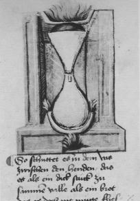
<br><font face="Trebuchet MS"><font color="#000099"><font size="-1">FIGURE
XXVIII</font></font></font>
<br><i><font face="Trebuchet MS"><font color="#000099"><font size="-1">(distillation
per descendum, Livre de la Sainte-Trinit&eacute; Cgm. 598 f. 61 v.)</font></font></font></i></p></center>

<p><font face="Trebuchet MS"><font color="#000099">solides en passant,
par voie d'&eacute;coulement, dans la partie inf&eacute;rieure du vaisseau.
Quant &agrave; la distillation sans feu, elle consistait &agrave; s&eacute;parer
les liquides par le filtre : c'&eacute;tait donc une simple </font><font color="#006600">filtration
;</font></font>
<br><a  name="111"></a><font face="Trebuchet MS"><font color="#000099"><a href="#111_t">111</a>.
Ce passage se rapporte &eacute;videmment au Lion vert, la grande inconnue
du probl&egrave;me ; </font><font color="#000080">Cette all&eacute;gorie
se rapporte aussi &agrave; la dissolution des deux principes dans le Mercure
philosophique. Le&nbsp;<a  name="Laiton"></a>Laiton ne doit pas nous abuser
: pour les chimistes modernes, c&#8217;est un amalgame de cuivre et de zinc (m&eacute;tal
inconnu au temps de Flamel) ; d&#8217;autres auteurs l&#8217;ont appel&eacute; l&#8217;<a  name="airain_index"></a>airain.
Fulcanelli (<i>les Myst&egrave;res</i>, p.60) insiste sur l&#8217;&eacute;quivalence
herm&eacute;tique du signe ank (pour croix ans&eacute;e) avec l&#8217;embl&egrave;me
de V&eacute;nus ou Cypris, le&nbsp;<a  name="cuivre_index"></a>cuivre vulgaire.
Bernard le&nbsp;<a  name="Tr&eacute;visan_index"></a>Tr&eacute;visan parle aussi
du &laquo; laton non net &raquo; dans son <i><font size="-1"><a href="../original/verbum.html">Verbum
dimissum</a></font></i> dans la phase o&ugrave; le compost est en putr&eacute;faction
:</font></font>
</p><p><font face="Trebuchet MS"><font color="#000080">"</font><i><font color="#cc0000"><font size="-1">Observez
donc que quand notre Comp&ocirc;t commence &agrave; &ecirc;tre abreuv&eacute;
de notre Eau permanente, alors il est enti&egrave;rement tourn&eacute;
en mani&egrave;re de Poix fondue, et devenu noir comme charbon; en cet
&eacute;tat, il est appel&eacute; la Poix noire, le Sel br&ucirc;l&eacute;,
le Plomb fondu, le Laiton non net, la Magn&eacute;sie et le Merle de Jean...</font></font></i><font color="#000080">"</font></font>
</p><p><font face="Trebuchet MS"><font color="#000080">On doit aussi rapprocher
le </font><font color="#006600">Laiton</font><font color="#000080"> du
terme &laquo;&nbsp;<a  name="latone_index"></a></font><font color="#006600">Latone</font><font color="#000080">
&raquo; employ&eacute; par d&#8217;autres auteurs comme Maier et de son &eacute;tymologie
latine &laquo; orichalcum ou aurichalcum &raquo;. E. Canseliet (<i>Deux
logis alchimiques</i>, p.107) semble attacher une importance toute particuli&egrave;re
&agrave; cette phase et renvoie aux gravures de Th&eacute;odore de Bry
qui compl&egrave;tent
<i>l&#8217;<font size="-1"><a href="../original/atalanta-fugiens.html">Atalanta
fugiens</a></font> </i>de M. Maier (1618). Il s&#8217;agit manifestement du d&eacute;but
du second &#339;uvre l&agrave; o&ugrave;, pr&eacute;cis&eacute;ment, le Laiton
doit &ecirc;tre &laquo; blanchi &raquo;. Ce laiton repr&eacute;sente donc
une substance qui nous renvoie au symbolisme du ch&ecirc;ne. Les grands
auteurs ont donc cach&eacute; sous le symbole du ch&ecirc;ne un point de
l&#8217;art des plus importants. Dans les <i>DM, II</i>, p. 455, Fulcanelli nous
dit encore qu&#8217;il s&#8217;agit d&#8217;un
</font><font color="#006600">corps l&eacute;preux
</font><font color="#000080">pouvant
&ecirc;tre p&acirc;le comme le </font><font color="#006600">laiton</font><font color="#000080">.
Enfin, sous ce laiton, nous pensons qu'est voil&eacute; la figure de &laquo;
l'homme double ign&eacute; &raquo; de Basile Valentin ;</font></font>
<br><a  name="112"></a><font face="Trebuchet MS"><font color="#000080"><a href="#112_t">112</a>.
E. Canseliet, dans l'<i>Alchimie expliqu&eacute;e sur ses Textes classiques</i>,
p. 249, nous dit que :</font></font>
</p><p><i><font face="Trebuchet MS"><font color="#000080">"</font><font color="#cc0000"><font size="-1">Par
ces affusions r&eacute;p&eacute;t&eacute;es...l'esprit s'unit aux portions
pures du corps mercuriel, tandis que les parties grossi&egrave;res, h&eacute;t&eacute;rog&egrave;nes
et adustives se trouvent s&eacute;par&eacute;es. L'eau se joint au feu,
le ciel &agrave; la terre...et cette alliance...trouve son expression dans
la branchette d'olivier, qui est un embl&egrave;me de paix, d'harmonie
et de concorde. L'ensemble des op&eacute;rations aboutissant &agrave; la
blancheur par laquelle se termine le second oeuvre fit l'objet de l'un
des <a href="../original/gardes-corps.html" class="lien-repare" title="ancre absente de la page d'origine : lien ramené en haut de page">douze travaux d'Hercule</a>...</font></font><font color="#000080">"</font></font></i>
<br>&nbsp;
<br>&nbsp;
<br>
<br>
</p><center>
<p>
<br><font face="Trebuchet MS"><font color="#000080"><font size="-1">FIGURE
XXIX</font></font></font>
<br><i><font face="Trebuchet MS"><font color="#000080"><font size="-1">(vingti&egrave;me
image de la Toyson d'or, de Salomon Trismosin)</font></font></font></i></p></center>

<p><font face="Trebuchet MS"><font color="#000080">Voyez une version plus
&eacute;toff&eacute;e de l'interpr&eacute;tation herm&eacute;tique des
Douze Travaux &agrave; la section <a href="../original/fontenay.html">Fontenay</a>.
Pour nous, ces laveures pourraient correspondre &agrave; la pr&eacute;paration
de la cr&egrave;me de tartre ; les cristaux de tartre doivent &ecirc;tre
broy&eacute;s puis port&eacute;s &agrave; l'&eacute;bullition pendant plusieurs
heures, cependant qu'on y ajoute de l'eau en quantit&eacute; suffisante
pour obtenir une dissolution compl&egrave;te (cf. la section sur les <font size="-1"><a href="../original/carbon-potasse.html">carbonates</a></font>)
;</font></font>
<br><a  name="113"></a><font face="Trebuchet MS"><font color="#000080"><a href="#113_t">113</a>.
Ce blanchiment correspondrait ensuite &agrave; l'obtention du carbonate
de potasse par r&eacute;action du salp&ecirc;tre sur la cr&egrave;me de
tartre (cf. la section sur la Pierre, <a href="../original/compendium.html#FIGURE_I">figure
I</a>) ; il est de fait que le <a href="../original/carbon-potasse.html">carbonate de
potasse</a> est une substance qui, pure, est d'un blanc absolu ; mais la
couleur blanche constitue aussi, dans le 3&egrave;me oeuvre, l'&eacute;pith&egrave;te
du r&eacute;gime de Jupiter, ou plut&ocirc;t de la Lune, car Pernety pense
qu'&agrave; Jupiter correspond une couleur gris&acirc;tre, interm&eacute;diaire
entre le noir - Saturne - et le blanc ;</font></font>
<br><a  name="114"></a><font face="Trebuchet MS"><font color="#000080"><a href="#114_t">114</a>.
Nous avons tr&egrave;s longuement discut&eacute; du ch&ecirc;ne, en particulier
dans notre commentaire de <i><font size="-1"><a href="../original/philalethe-6.html#ch%C3%AAne%20rouvre_index">l'Intro&iuml;tus,
VI</a></font></i> ; (cf. aussi <a href="../original/symb-dir-prim.html#c">1</a>,<a href="../original/chimie-alchemy.html#c%29-">2</a>,<a href="../original/st-gregoire-vievre.html" class="lien-repare" title="ancre absente de la page d'origine : lien ramené en haut de page">3</a>).
Cette all&eacute;gorie nous renvoie &agrave; la note <a href="#17">17</a>
; le serpent de Mars (Ar&egrave;s, Ar&egrave;s) &eacute;voque directement
le &laquo; Mercure &raquo; sortant de la stibine par l'attaque de l'esprit
de sel ; on peut enfin faire remarquer que les tonneaux &eacute;taient
autrefois faits en bois de ch&ecirc;ne dont l'int&eacute;rieur se recouvrait
de <a href="../original/compendium.html#tonneaux">tartre</a> : c'est peut-&ecirc;tre
le meilleur indice sur la nature du Lion vert...(cf. aussi la note<a href="#28">
28</a>) ;</font></font>
<br><a  name="115"></a><font face="Trebuchet MS"><font color="#000080"><a href="#115_t">115</a>.
il s'agit des deux principes Soufre et Mercure (ici, le 1<sup>er </sup>Mercure
ou Sel des Sages) ; l'allusion &agrave; la jeunesse est un clin d'oeil
au &laquo; rajeunissement du roi &raquo;, c'est-&agrave;-dire &agrave;
la r&eacute;animation des corporifications (<i>Les Myst&egrave;res</i>,
p.129) ;</font></font>
<br><a  name="116"></a><font face="Trebuchet MS"><font color="#000080"><a href="#116_t">116</a>.
On trouve dans <i>Les Myst&egrave;res</i>, p.140 , &agrave; propos du Mercure
la note suivante :</font></font>
</p><p><i><font face="Trebuchet MS"><font color="#000080">" </font><font color="#cc0000"><font size="-1">C&#8217;est
l&#8217;unique mati&egrave;re dont nous avons besoin. En effet, cette eau s&egrave;che,
quoique enti&egrave;rement volatile, peut, si l&#8217;on d&eacute;couvre le moyen
de la retenir longtemps au feu, devenir assez fixe pour r&eacute;sister
au degr&eacute; de chaleur qui aurait suffi &agrave; l&#8217;&eacute;vaporer
en totalit&eacute;...son endurance au feu...lui font attribuer le renard
</font></font><font color="#000080">."</font></font></i>
</p><p><font face="Trebuchet MS"><font color="#000080">Autre &eacute;nigme
d&eacute;sesp&eacute;rante...Mais il suffit de lire les exp&eacute;riences
d'<a href="../original/ebelmen-2.html">Ebelmen</a> pour avaoir une id&eacute;e assez
approch&eacute;e de la nature de cette unique mati&egrave;re. Ailleurs,
cette autre allusion -par citation de Georges Ripley-&nbsp; &agrave; propos
de la planche de l&#8217;H&ocirc;tel Lallemant (cf. </font><font size="-1"><a href="#" class="lien-repare" title="ancre absente de la page d'origine (lien ramené en haut de page)">supra</a></font><font color="#000080">).&nbsp;
Georges Ripley (mort en 1490) &eacute;tait un chanoine de Bridlington qui
rassembla son savoir dans le <i>Compound of Alchemy</i> ou les <i>Douze
portes d&#8217;Alchimie</i> (d&#8217;abord &eacute;dit&eacute; &agrave; Londres, en
1591, puis sous le titre <i><a href="../original/ripley.html">Liber 12 Portatum</a></i>
(Cassel, 1649), traduit en fran&ccedil;ais en 1979 (B. Biebel). Voici cette
note :</font></font>
</p><p><font face="Trebuchet MS"><font color="#000080">"</font><i><font color="#cc0000"><font size="-1">Il
n&#8217;entre qu&#8217;un seul corps immonde dans notre magist&egrave;re ; les Philosophes
l&#8217;appellent commun&eacute;ment Lion vert. C&#8217;est le&nbsp;<a  name="milieu"></a>milieu
ou moyen pour joindre les teintures entre le soleil et la lune.</font></font><font color="#000080">"</font></i></font>
</p><p><font face="Trebuchet MS"><font color="#000080">Il nous faut donc comprendre
que les corps du soleil et de la lune doivent &ecirc;tre conjoints. Cette
conjonction ne peut se faire sans l&#8217;aide d&#8217;un milieu ad&eacute;quat, qui
est v&eacute;ritablement le moyen, i.e. le </font><font color="#006600">stratag&egrave;me
ou l&#8217;artifice</font><font color="#000080"> dont parle ailleurs Fulcanelli
(<i>DM, I</i>, pp. 382-385). Pour l&#8217;heure, nous apprendrons que le moyen
ou milieu (</font><font color="#660000"><font size="-1">dans le sens litt&eacute;ral
de &laquo; ce qui sert pour arriver &agrave; une fin &raquo;</font></font><font color="#000080">)
peut se traduire par </font><font color="#008000">via</font><font color="#000080">
ou </font><font color="#008000">consilium</font><font color="#000080">
; via = passage, conduit, <a href="#canal">canal</a>, moyen, </font><font color="#008000">proc&eacute;d&eacute;</font><font color="#000080">,
m&eacute;thode mais aussi </font><font color="#008000">chemin</font><font color="#000080">,
voie, route ; consilium = r&eacute;flexion, prudence, </font><font color="#008000">stratag&egrave;me</font><font color="#000080">
; viator = </font><font color="#008000">messager</font><font color="#000080">,
appariteur. L'acception de l'une des traductions de consilium &laquo; canal
&raquo; jette de la lumi&egrave;re sur l'emploi du m&ecirc;me mot par E.
Canseliet &agrave; propos de l'examen du <a href="../original/philalethe-6.html">toit</a>
qui surplombe la porte alchimique de la villa Palombara ;</font></font>
<br><a  name="117"></a><font face="Trebuchet MS"><font color="#000080"><a href="#117_t">117</a>.
La mati&egrave;re premi&egrave;re est appel&eacute;e le &laquo;<a  name="chaos_1"></a>chaos
des Sages &raquo; et figure sous les traits d&#8217;un
</font><font color="#008000">vieillard</font><font color="#000080">
ou est compar&eacute;e &agrave; un </font><font color="#008000">dragon
noir couvert d&#8217;&eacute;cailles</font><font color="#000080"> ou encore &agrave;
un </font><font color="#008000">serpent venimeux</font><font color="#000080">
; mais nous avons d&eacute;j&agrave; vu qu&#8217;il y a au moins trois &laquo;
mati&egrave;res premi&egrave;res &raquo; dans l&#8217;&#339;uvre : le </font><font color="#008000">Sel</font><font color="#000080">,
ou semence m&eacute;tallique, dont &agrave; mon avis, le </font><font color="#008000">dragon
&eacute;cailleux</font><font color="#000080"> constitue l&#8217;origine, le </font><font color="#008000">Mercure</font><font color="#000080">
dont le </font><font color="#008000">vieillard</font><font color="#000080">
constitue pour partie le symbole du </font><font color="#008000">dissolvant
universel</font><font color="#000080"> et enfin le </font><font color="#008000">Soufre</font><font color="#000080">
qui correspond au </font><font color="#008000">m&eacute;tal</font><font color="#000080">
qui doit &ecirc;tre conjoint au </font><font color="#008000">Sel</font><font color="#000000">.
</font><font color="#000099">Pour
Philal&egrave;the, le chaos des sages repr&eacute;sente l'ensemble compost-dissolvant
(cf. <i><a href="../original/philalethe-5.html">Intro&iuml;tus, V</a></i>) ;</font></font>
<br><a  name="118"></a><font face="Trebuchet MS"><font color="#000099"><a href="#118_t">118</a>.
Ce passage a rapport avec la Lune ; l</font><font color="#000080">a </font><font color="#006600">Lune
sombre</font><font color="#000080">, de couleur pourpre, doit renvoyer
au Rebis philosophal. Cette Lune sombre doit avoir un rapport avec le caput
mortuum ou corbeau ; en effet, Fulcanelli, dans <i>Les Myst&egrave;res</i>,
p.198 explique que :</font></font>
</p><p><font face="Trebuchet MS"><font color="#000080">"</font><i><font color="#cc0000"><font size="-1">La
mort du corps laisse appara&icirc;tre une coloration bleu fonc&eacute;
ou noire...Tel est le signe et la premi&egrave;re manifestation de la dissolution,
de la s&eacute;paration des &eacute;l&eacute;ments et de la g&eacute;n&eacute;ration
future du soufre, principe colorant et fixe des m&eacute;taux...Le corps
mortifi&eacute;, tombe en cendre noire ayant l'aspect du poussier de charbon...</font></font></i><font color="#000080">"</font></font>
</p><p><font face="Trebuchet MS"><font color="#000080">Par ailleurs, le corbeau
est synonyme du laiton ; il y a donc ici une indication sur le dissolvant
universel tel que nous l'avons &eacute;voqu&eacute; dans les notes <a href="#112">112</a>-<a href="#113">113</a>
;</font></font>
<br><a  name="119"></a><font face="Trebuchet MS"><font color="#000080"><a href="#119_t">119</a>.
Anticipation du r&eacute;sultat du 3<sup>&egrave;me</sup> oeuvre : la pierre
au rouge (cf. la section sur le <a href="../original/st-gregoire-vievre.html#lion">r&eacute;bus</a>
de l'&eacute;glise de St-Gr&eacute;goire-en vi&egrave;vre) ;</font></font>
<br><a  name="120"></a><font face="Trebuchet MS"><font color="#000080"><a href="#120_t">120</a>.
Nous aurions tendance &agrave; penser que sous ce terme d'<a  name="Azoth_1"></a>Azoth
se cache la</font><font color="#006600"> potasse</font><font color="#000080">
ou nitre (<a href="../original/compendium.html#6">1</a>,<a href="../original/imitat-prec.html#potasse">2</a>,<a href="../original/philalethe-6.html#carbonate">3</a>),
qui par sa combinaison avec la cr&egrave;me de tartre va former le carbonate
de potasse ;&nbsp; nous proposons l'explication suivante pour le terme
d'<a  name="AZOTH_2"></a><i>AZOTH</i> : </font><font color="#000099">il
ne s'agit point ici de l'azote bien s&ucirc;r mais d'un mot qui doit &ecirc;tre
compris selon la cabale phon&eacute;tique ; on peut donc risquer un rapprochement
avec
</font><font color="#006600">Zetho(s)</font><font color="#000099">,
fils de Zeus et d'Antiope, fr&egrave;re jumeau d'Amphion ; ils furent abandonn&eacute;s
tous deux sur le mont Cith&eacute;ron, mont de B&eacute;otie c&eacute;l&egrave;bre
par ses troupaux et th&eacute;&acirc;tre des orgies des Bacchantes. Amphion
doit &ecirc;tre rapproch&eacute; d'Orph&eacute;e car il fut remarqu&eacute;
par Apollon qui lui offrit une </font><font color="#006600">lyre</font><font color="#000099">.
La l&eacute;gende affirme que Z&eacute;thos et Amphion tu&egrave;rent Lycos,
fils de Cadmos, et attach&egrave;rent son &eacute;pouse, Dirc&eacute;,
par les cheveux aux cornes d'un taureau sauvage qui la tra&icirc;na sur
les rochers jusqu'&agrave; ce que mort s'ensuive. On ajoute qu'Amphion
fut tu&eacute; par les traits justiciers d'Apollon et d'Art&eacute;mis
pour avoir insult&eacute; leur m&egrave;re, </font><font color="#006600">L&eacute;to</font><font color="#000099">.
Par parenth&egrave;se, on notera que dans un c&eacute;l&egrave;bre manuscrit
du XV<sup>e</sup> si&egrave;cle, le<i> Donum Dei</i>, attribu&eacute; &agrave;
un franciscain alchimiste, on trouve ces tableaux de l'art dont nous extrayons
ce qui suit :</font></font>
</p><p><font face="Trebuchet MS"><font color="#000099">"</font><i><font color="#cc0000"><font size="-1">-
En premier lieu se trouve en notre lion vers la vraie mati&egrave;re, et
de quelle couleur elle est, et s'appelle adro ou azeth ou duenech</font></font></i></font>
</p><p><font face="Trebuchet MS"><font size="-1"><font color="#000099">[</font><font color="#660000">j'ai
d&eacute;j&agrave; donn&eacute; un commentaire de <a href="../original/prima-materia.html" class="lien-repare" title="ancre absente de la page d'origine : lien ramené en haut de page">duenech</a>
que l'on trouve dans le <a href="../original/liber-artephius.html">Livre Secret</a>
attribu&eacute; &agrave; Artephius ; on voit qu'ici azeth est associ&eacute;
&agrave; ce mot qui masque des substances intervenant dans la confection
du feu secret</font><font color="#000099">]</font></font><i><font color="#000099">..."</font></i></font>
</p><p><font face="Trebuchet MS"><font color="#000099">Voyez par ailleurs ce
que nous disons de Zeth&egrave;s dans la section sur l'<i><font size="-1">Atalanta
fugiens</font></i>.</font></font>
</p><p><a  name="121"></a><font face="Trebuchet MS"><font color="#000080"><a href="#121_t">121</a>.
C'est l'autre partie du Lion vert ou dissolvant universel dont nous avons
parl&eacute; supra (notes <a href="#112">112</a>-<a href="#113">113</a>)
qui est de la </font><font color="#006600">cr&egrave;me de tartre</font><font color="#000080">
; s</font><font color="#000099">ans doute devons-nous ici m&eacute;diter
cette recommandation d'E. Canseliet dans son <i>Alchimie expliqu&eacute;e
sur ses textes classiques</i>, au chapitre de l'<i>Oeuf philosophique</i>
:</font></font>
</p><p><i><font face="Trebuchet MS"><font color="#000099">"</font><font color="#cc0000"><font size="-1">...l'artiste
de la voie s&egrave;che...[ne doit pas trop] pousser vers la puret&eacute;,
le sel blanc qu'il extrait du tartre des tonneaux. Il convient, en effet,
que sa cr&egrave;me de tartre contienne, encore et suffisamment, le carbonate
de calcium, indispensable &agrave; la coquille."</font></font></font></i>
</p><p><a  name="122"></a><font face="Trebuchet MS"><font color="#000099"><a href="#122_t">122</a>.
Nous sommes sur la bonne voie puisque voici </font><font color="#006600">Apollon</font><font color="#000099">,
fils de L&eacute;to ; d&egrave;s qu'il apprit sa naissance, Zeus offrit
&agrave; son fils une mitre d'or, une lyre et un char attel&eacute; de
cygnes. Il fut nourri de nectar par la d&eacute;esse </font><font color="#006600">Th&eacute;mis</font><font color="#000099">
; parvenu &agrave; l'&acirc;ge adulte, il tua le serpent Python. Nous n'avons
pas besoin d'insister sur sa soeur jumelle, Art&eacute;mis, identifi&eacute;e
&agrave; Diane. Cette partie du texte fait r&eacute;f&eacute;rence, &agrave;
coup s&ucirc;r, aux compos&eacute;s du dissolvant universel ;</font></font>
<br><a  name="123"></a><font face="Trebuchet MS"><font color="#000099"><a href="#123_t">123</a>.
C'est une &eacute;vocation qui fait penser &agrave; celle que donne le
pseudo-Artephius dans son <i><a href="../original/liber-artephius.html">Livre Secret</a></i>;
certains mots sont identiques, tels DUENECH et ETHELIA. DUENECH vaut pour
ECH(I)DNE, engendr&eacute;e par Ga&iuml;a et Pontos : femme et serpent
&agrave; la fois, le monstre Echidna passe pour avoir donn&eacute; le jour
&agrave; des cr&eacute;atures fabuleuses parmi lesquelles on peut citer
Chim&egrave;re, les dragons de Colchide et du jardin des Hesp&eacute;rides,
le lion de N&eacute;m&eacute;e. Il para&icirc;t qu'elle &eacute;tait malfaisante
&agrave; cause de sa f&eacute;condit&eacute; m&ecirc;me et qu'elle d&eacute;vorait
d'innocents voyageurs. Il semble donc que la correspondance soit exacte
; nous avons d&eacute;j&agrave; rencontr&eacute; Chim&egrave;re (<i><font size="-1"><a href="../original/philalethe.html#6">Intro&iuml;tus,
I</a></font></i>) ainsi que les deux <font size="-1"><a href="../original/chimie-alchemy.html#Colchide">dragons</a></font>.
Le terme RANDERIC se rapproche de ZANDARITH d'Artephius (qui signifie sans
doute ARIADNE) renvoyant au fil d'Ariane pour ne pas se perdre dans ce
labyrinthe. ETHELIA est peut-&ecirc;tre AITHALES (joubarbe, i.e. la barbe
de Jupiter) ; CAMBAR veut dire MACAR, vari&eacute;t&eacute; de romarin
qui renvoie par &laquo; ros marinus &raquo; &agrave; la ros&eacute;e de
mer et aux carbonates ;</font></font>
<br><a  name="124"></a><font face="Trebuchet MS"><font color="#000099"><a href="#124_t">124</a>.
Nous le r&eacute;p&eacute;tons, il s'agit l&agrave; vraisemblablement d'une
all&eacute;gorie sur la pr&eacute;paration du carbonate de potasse par
action conjugu&eacute;e de cr&egrave;me de tartre et de salp&ecirc;tre.
Le </font><font color="#006600">carbonate de potasse</font><font color="#000099">
peut &ecirc;tre pr&eacute;par&eacute; en faisant d&eacute;toner un m&eacute;lange
de une &agrave; deux parties de
</font><font color="#006600">nitre</font><font color="#000099">
et d'une partie de </font><font color="#006600">tartre brut</font><font color="#000099">
ou de cr&egrave;me de tartre (bitartrate de potasse). Il faut remarquer
aussi que lorsqu'on chauffe tr&egrave;s fortement, il se produit une quantit&eacute;
tr&egrave;s notable de </font><font color="#006600">cyanure de potassium</font><font color="#000099">,
corps hautement toxique. Le carbonate de potasse &eacute;tait ainsi pr&eacute;par&eacute;
autrefois et connu sous le nom de&nbsp;<a  name="flux_planc"></a></font><font color="#006600">flux
blanc</font><font color="#000099">. Il s'agit bien s&ucirc;r d'une indication
sur la couleur que l'on trouve toujours cit&eacute;e &agrave; ce stade
de l'oeuvre (nous sommes au 2<sup>&egrave;me</sup> oeuvre). La pr&eacute;paration
de la cr&egrave;me de tartre s'op&egrave;re en pulv&eacute;risant le
</font><font color="#006600">tartre
</font><font color="#000099">que
l'on fait bouillir pendant plusieurs heures avec une quantit&eacute; d'eau
suffisante pour le dissoudre ; on abandonne alors la liqueur au refroidissement
: au bout de quelques jours, il se forme des cristaux, qu'on redissout
dans l'eau bouillante et &agrave; laquelle on ajoute de l'argile et du<a  name="noir_animal"></a>noir
animal [</font><font color="#660000"><font size="-1">charbon obtenu en calcinant
des os en vase clos</font></font><font color="#000099">]. La dissolution
est alors filtr&eacute;e et donne en se refroidissant des cristaux tr&egrave;s
purs de </font><font color="#006600">bitartrate de potasse</font><font color="#000099">.
Ce sel exige pour se dissoudre 240 parties d'eau &agrave; 10&deg;C ou 15
parties d'eau bouillante. Il est d&eacute;compos&eacute; par la chaleur
en laissant un r&eacute;sidu form&eacute; de carbonate de potasse et de
charbon, que l'on appelle&nbsp;<a  name="flux_noir"></a></font><font color="#006600">flux
noir</font><font color="#000099">. Voila la deuxi&egrave;me r&eacute;f&eacute;rence
&agrave; la couleur qui pr&eacute;c&egrave;de le blanc dans l'odre chronologique
; voir aussi la section sur le <font size="-1"><a href="../original/imitat-prec.html#potasse">Mercure</a></font>
;</font></font>
<br><a  name="125"></a><font face="Trebuchet MS"><font color="#000099"><a href="#125_t">125</a>.
Il s'agit du </font><font color="#006600">Caput mortuum</font><font color="#000099">
; voici ce qu'en dit E. Canseliet dans son <i>Alchimie expliqu&eacute;e
sur ses Textes classiques</i> :</font></font>
</p><p><i><font face="Trebuchet MS"><font color="#000099">"</font><font color="#cc0000"><font size="-1">Maintenant,
sans rien prendre &agrave; l'&eacute;l&eacute;ment solide, de ce qui constitue
sa richesse cach&eacute;e, ign&eacute;e et sulfureuse, il faut pourtant
en extraire la saline et visqueuse humidit&eacute; qui, tout d'abord, s'opposerait
&agrave; sa calcination...L'op&eacute;ration est tout &agrave; fait r&eacute;alisable
par voie s&egrave;che, bien qu'elle reste tributaire du tr&egrave;s puissant
catalyseur dont l'artiste exp&eacute;riment&eacute; dispose...</font></font><font color="#000099">"
</font></font></i><font face="Trebuchet MS"><font color="#000099">(p.
206)</font></font>
</p><p><font face="Trebuchet MS"><font color="#000099">et plus loin :</font></font>
</p><p><i><font face="Trebuchet MS"><font color="#000099">"</font><font color="#cc0000"><font size="-1">L'&eacute;pais
magma, qui a &eacute;t&eacute; recueilli de l'industrieuse calcination
du caput, a &eacute;t&eacute; calcin&eacute; dans le t&ecirc;t &agrave;
rotir et s'y est transform&eacute; en une poudre &eacute;rugineuse, grasse
[</font></font></font></i><font face="Trebuchet MS"><font color="#cc0000"><font size="-1">cette
expression appara&icirc;t aussi dans la <i>Toison d'Or</i>, in <i>Alchimie,</i>
p. 200<i>] et peut-&ecirc;tre isotope du colcotar...</i></font></font><font color="#000099"><i>"
</i>(p.237)</font></font>
</p><p><font face="Trebuchet MS"><font color="#000099">Voyez &agrave; pr&eacute;sent
ce que nous savons de la pr&eacute;paration de la <font size="-1"><a href="../original/compendium.html#7">potasse</a></font>
&agrave; l'&eacute;tat solide : l'hydrate de potasse reste seul alors et
fond en un liquide d'une </font><font color="#006600">consistance huileuse</font><font color="#000099">.
S'il s'est form&eacute; un peu de carbonate de potasse pendant l'&eacute;vaporation,
ce carbonate, qui ne fond qu'&agrave; une temp&eacute;rature beaucoup plus
&eacute;lev&eacute;e, nage &agrave; la surface de l'hydrate et forme une
</font><font color="#006600">&eacute;cume</font><font color="#000099">
que l'on peut enlever avec une &eacute;cumoire (<a href="../original/compendium.html#a">a</a>).
On verse ensuite l'hydrate fondu sur une plaque de cuivre o&ugrave; il
se fige imm&eacute;diatement. On concasse la potasse en fragments et on
la renferme dans des flacons bien bouch&eacute;s ;</font></font>
<br><a  name="126"></a><font face="Trebuchet MS"><font color="#000099"><a href="#126_t">126</a>.
Voici la r&eacute;f&eacute;rence voil&eacute;e aux deux couleurs que nous
&eacute;voquions note <a href="#124">124</a> ;</font></font>
<br><a  name="127"></a><font face="Trebuchet MS"><font color="#000099"><a href="#127_t">127</a>.
La nature de ce sable reste myst&eacute;rieuse ; s'agit-il de silice (Terre)
ou de la pr&eacute;paration du carbonate de potasse ? il est en tout cas
clairement indiqu&eacute; qu'&ocirc;ter la noirceur consiste tout simplement
&agrave; pratiquer un blanchiment sur la mati&egrave;re et en aucun cas
&agrave; pratiquer une &laquo; s&eacute;paration &raquo; au sens o&ugrave;
E. Canseliet donne souvent le sentiment de l'entendre ;</font></font>
<br><a  name="128"></a><font face="Trebuchet MS"><font color="#000099"><a href="#128_t">128</a>.
Nous avons d&eacute;j&agrave; &eacute;voqu&eacute; cette gravure, d'abord
dans la section Alchimie (<a href="../original/symb-dir-prim.html" class="lien-repare" title="ancre absente de la page d'origine : lien ramené en haut de page">I</a>)
puis dans notre commentaire de l'<i><font size="-1"><a href="../original/philalethe-5.html#4">Intro&iuml;tus,
V</a></font></i> ; &eacute;tudions encore une fois l</font><font color="#000080">a
2<sup>&egrave;me</sup> figure de Lambsprinck :</font></font>
<br>&nbsp;
<br>&nbsp;
<br>
<br>
</p><center>
<p><a  name="FIGURE_IV"></a>
<br><font face="Trebuchet MS"><font size="-1">FIGURE XXX</font></font></p></center>

<blockquote>
<center><font face="Trebuchet MS"><font color="#000080">l&eacute;gende
:</font></font>
<p><i><font face="Trebuchet MS"><font color="#660000">"<font size="-1">putr&eacute;faction</font>"</font></font></i>
</p><p><font face="Trebuchet MS"><font color="#000080">texte :</font></font></p></center>
</blockquote>

<blockquote><i><font face="Trebuchet MS"><font color="#660000">"<font size="-1">...Qu&#8217;il
y a dans la for&ecirc;t une b&ecirc;te sauvage, toute environn&eacute;e
d&#8217;une couleur noire, Si quelqu&#8217;un lui coupe la t&ecirc;te, Alors elle rejette
la noirceur et prend la couleur blanche la plus resplendissante...la noirceur
est nomm&eacute;e t&ecirc;te de&nbsp;<a  name="corbeau_index"></a>corbeau.</font>"</font>
(<a href="../original/symb-dir-prim.html#g_ranque_1">1</a></font></i><font face="Trebuchet MS"><font color="#000080">)</font></font></blockquote>
<font face="Trebuchet MS"><font color="#000080">Nous avons interpr&ecirc;t&eacute;
peut-&ecirc;tre h&acirc;tivement cette gravure comme devant n&eacute;cessairement
se rapporter &agrave; l'extraction du Sel des Sages (c'est-&agrave;-dire
&agrave; l'alumine de l'alun) ; il se peut fort bien qu'il s'agisse en
fait d'une all&eacute;gorie sur la purification du <font size="-1"><a href="../original/imitat-prec.html#carbonate">carbonate
de potasse</a></font>. Le probl&egrave;me est d&eacute;licat &agrave; r&eacute;soudre
car E. Canseliet, dans les deux extraits que nous citons note <a href="#125">125</a>,
semble ne pas d&eacute;signer la m&ecirc;me substance : le colcotar sert
&agrave; polir des miroirs ce que l'on r&eacute;alise par un abrasif comme
l'</font><font color="#006600">&eacute;meri</font><font color="#000080">
qui est une vari&eacute;t&eacute; ferrif&egrave;re de corindon -d'o&ugrave;
l'emploi du terme &laquo; isotope &raquo; par Canseliet en lieu et place
de &laquo; synonyme, analogue &raquo; ; une autre allusion au Caput est
donn&eacute;e dans le m&ecirc;me ouvrage (p. 258) compl&eacute;t&eacute;e
d'une citation des <i>DM, II</i>, p. 149 &agrave; propos du r&eacute;mora
mythologique qui consacre la naissance de Diane et d'Apollon dont nous
venons de voir (note <a href="#120">120</a> - <a href="#122">122</a>) qu'elle
se rapporte n&eacute;cessairement au dissolvant universel...E. Canseliet
revient une derni&egrave;re fois sur le Caput -de mani&egrave;re indirecte
il est vrai- par une citation (p. 261) de Georges Aurach, alchimiste alsacien
&agrave; qui nous devons les illustrations du <i>Pretiosissimum Donum Dei</i>
:</font></font>
<br>&nbsp;
<br>&nbsp;
<br>
<br>
<center>
<p>
<br><font face="Trebuchet MS"><font size="-1">FIGURE XXXI</font></font>
<br><i><font face="Trebuchet MS"><font size="-1">(c. XVII<sup>e</sup> si&egrave;cle,
d'apr&egrave;s G. Aurach)</font></font></i></p></center>

<p><i><font face="Trebuchet MS"><font color="#000080">"</font><font color="#cc0000"><font size="-1">La
premi&egrave;re, qui repr&eacute;sente un lyon verd, contient la veritable
matiere et faict cognoistre de quelle couleur elle est ; et on l'appelle
Adrop ou&nbsp;<a  name="Azoth_3"></a>Azoth, Atropum ou Duenech</font></font><font color="#000080">"</font></font></i>
</p><p><font face="Trebuchet MS"><font color="#000080">et Canseliet d'ajouter
:</font></font>
</p><p><i><font face="Trebuchet MS"><font color="#000080">"</font><font color="#cc0000"><font size="-1">Il
est vrai que ce n'est pas le lion vert...qui constitue directement la partie
la plus importante du vaisseau de nature, mais bien les deux sels qui en
d&eacute;coulent, et dont l'un vient du caput mortuum, et l'autre, un peu
plus tard, de la vitreuse provision, apr&egrave;s qu'elle a livr&eacute;...le
bouton de retour.</font></font><font color="#000080">"</font></font></i>
</p><p><font face="Trebuchet MS"><font color="#000080">Fulcanelli n'est pas
plus explicite dans les
<i>Myst&egrave;res</i> et la solution du probl&egrave;me
de la putr&eacute;faction semble ardue...Le lion vert ne sert &eacute;videmment
&agrave; rien si les chaux m&eacute;talliques ne lui sont pas conjointes
: c'est ce que veut dire Canseliet quand ils parle des &laquo; sels qui
en d&eacute;coulent &raquo;. Le 1<sup>er</sup> sel vient du Caput. Pour
nous, il s'agit de la mati&egrave;re voil&eacute;e sous l'op&eacute;ration
de d&eacute;capitation de la <a href="../original/gardes-corps.html">Gorgone</a>. Le
sel qui vient du Caput n'est autre que l'isotope du sel de <a href="../original/sulf-potasse.html">Seignette</a>,
&eacute;voqu&eacute; ailleurs. Quant &agrave; l'autre, la &laquo; <i><font size="-1">vitreuse
provision</font></i> &raquo; &eacute;voque un vitriol qui tient en sa masse
l'esprit universel - acide vitriloique des anciens chimistes - et le bouton
de retour ou Soufre rouge.</font></font>
<br><a  name="129"></a><font face="Trebuchet MS"><font color="#000080"><a href="#129_t">129</a>.
Cette propri&eacute;t&eacute; de resserrement, de pouvoir astringent, est
propre &agrave; l'un des deux vecteurs du feu secret et peut &ecirc;tre
rapproch&eacute;e du </font><font color="#006600">chien de Corasc&egrave;ne</font><font color="#000099">
d&eacute;crit par Artephius dans son <i><a href="../original/liber-artephius.html">Livre
Secret</a> et, selon</i> E. Canseliet (<i>Les Deux chiens</i> in <i>Deux
Logis alchimiques</i>) :</font></font>
</p><p><i><font face="Trebuchet MS"><font color="#000099">"</font><font color="#cc0000"><font size="-1">le
vocable Khorassan, du grec Korax, corbeau, &eacute;voque l'origine de cette
&acirc;me m&eacute;tallique...extraite de la partie t&eacute;n&eacute;breuse...[d&eacute;sign&eacute;e]...par
l'expression t&ecirc;te de corbeau."</font></font></font></i>
</p><p><font face="Trebuchet MS"><font color="#000099">Par ailleurs, l</font><font color="#000080">'explication
de cette all&eacute;gorie nous est fournie par Fulcanelli, dans <i>Les
Myst&egrave;res</i>, p.189,&nbsp; quand il commente la ceinture que porte&nbsp;<a  name="Saint-Christophe_index"></a><a href="../original/symb-dir-prim.html">Saint-Christophe</a>
(planche XLII, de l'H&ocirc;tel Lallemant, L&eacute;gende de saint Christophe)
:</font></font>
</p><p><font face="Trebuchet MS"><font color="#000080">"</font><i><font color="#cc0000"><font size="-1">La
ceinture d'Offerus est piqu&eacute;e de lignes entre-crois&eacute;es semblables
&agrave; celles que pr&eacute;sente la surface du dissolvant lorsqu'il
a &eacute;t&eacute; canoniquement pr&eacute;par&eacute;...Et ce signe,
les vieux auteurs l'ont appel&eacute; Sceau d'Herm&egrave;s, Sel [Scel]
des Sages...,la marque et l'empreunte du Tout-Puissant, sa signature, puis
encore Etoile des Mages, Etoile polaire, etc...</font></font></i><font color="#000080">"</font></font>
</p><p><a  name="Ceinture_index"></a><font face="Trebuchet MS"><font color="#009900">Ceinture</font><font color="#000080">
en latin peut se traduire par cingulum (ceinture,</font><font color="#008000">baudrier,
ventri&egrave;re</font><font color="#000080">), zona (ceinture, constellation
d'Orion) ; poursuivons : </font><font color="#008000">ventre</font><font color="#000080">
peut se traduire par </font><font color="#008000">alvus</font><font color="#000080">
(ventre, </font><font color="#008000">ceinture, excr&eacute;ments, d&eacute;jections,
ruche, coque de navire</font><font color="#000080">). Tous ces termes sont
familiers &agrave; ceux qui ont jet&eacute; les yeux sur les textes classiques
ou modernes : ils ont tous un rapport avec le </font><font size="-1"><a href="../original/symb-dir-prim.html" class="lien-repare" title="ancre absente de la page d'origine : lien ramené en haut de page">vase
de nature</a></font><font color="#000080">. Les &laquo; f&egrave;ces &raquo;
sont souvent cit&eacute;es par les Anciens et l'expression &laquo; </font><font color="#006600">crachat
de Lune &raquo;</font><font color="#000080"> est synonyme du dissolvant
universel, cf. note <a href="#81">81</a> ;</font></font>
<br><a  name="130"></a><font face="Trebuchet MS"><font color="#000080"><a href="#130_t">130</a>.
Ces imbibitions r&eacute;it&eacute;r&eacute;es correspondent pr&eacute;cis&eacute;ment
&agrave; l'ajout de lait de chaux dans du carbonate de potasse &eacute;tendu
d'eau : c'est la pr&eacute;paration de la potasse. On peut y voir symboliquement
Th&eacute;mis [</font><font color="#660000"><font size="-1">lait de chaux</font></font><font color="#000080">]
nourrissant Apollon [</font><font color="#660000"><font size="-1">carbonate</font></font><font color="#000080">]
; il n'est pas sans int&eacute;r&ecirc;t de remarquer que Th&eacute;mis
est repr&eacute;sent&eacute;e avec une balance et une &eacute;p&eacute;e
(les deux embl&egrave;mes de la </font><font color="#006600">Justice</font><font color="#000080">).
C'est donc sous un jour singuli&egrave;rement nouveau que nous conduit
l'examen du texte attribu&eacute; &agrave; N. Flamel ; Jupiter serait-il
le symbole...de la chaux ? cela expliquerait l'insistance des grands auteurs
sur cet arcane et particuli&egrave;rement Basile Valentin, dans l'examen
de la <font size="-1"><a href="../original/emblemes.html#Clef%20VII">Clef VII</a></font>...Cela
r&eacute;soudrait aussi le probl&egrave;me du</font></font>
<br>&nbsp;
<br>&nbsp;
<br>
<br>
</p><center>
<p>
<br><font face="Trebuchet MS"><font size="-1">FIGURE XXXII</font></font>
<br><i><font face="Trebuchet MS"><font size="-1">(B. Valentin, Practica,
in : M. Maier, Triplus aureus, Francfort, 1618)</font></font></i></p></center>

<p><font face="Trebuchet MS"><font color="#000080">poids de nature puisque
l'exacte pr&eacute;paration de la potasse d&eacute;pend de l'enti&egrave;re
transformation du carbonate de potasse en hydrate de potasse ; cette transformation
d&eacute;pend uniquement d'ajouts successifs de lait de chaux (cf. la section
sur la <font size="-1"><a href="../original/compendium.html#7">Pierre</a></font>) ; remarquons
enfin que la&nbsp;<a  name="terre"></a>terre rouge dont nous parlent plusieurs
textes dans les op&eacute;rations peut &ecirc;tre le
</font><font color="#006600">tartre
rouge</font><font color="#000080"> : ce sel que l'on d&eacute;signe ordinairement
par le nom de tartre se d&eacute;pose sur les parois des tonneaux dont
on le d&eacute;tache : il est naturellement m&ecirc;l&eacute; &agrave;
des impuret&eacute;s qui se sont d&eacute;pos&eacute;es en m&ecirc;me temps
; et lorsqu'il s'est s&eacute;par&eacute; du vin rouge (allusion &agrave;
<font size="-1"><a href="../original/symb-dir-prim.html#Bacchus_index">Bacchus</a></font>,
tr&egrave;s pr&eacute;sent chez les auteurs modernes), il retient beaucoup
des parties colorantes du vin, d'o&ugrave; vient qu'on distingue celui-l&agrave;
sous le nom de </font><font color="#006600">tartre rouge.</font></font>
<br><a  name="131"></a><font face="Trebuchet MS"><font color="#000099"><a href="#131_t">131</a>.
R&eacute;appararition du chiffre sept qui est une r&eacute;f&eacute;rence
directe &agrave; Apollon ; on peut y voir l'&eacute;quivalence en terme
d'op&eacute;rations chimiques avec les ajouts de chaux, &eacute;valu&eacute;s
&agrave; huit r&eacute;it&eacute;rations ou imbibitions ; Notez qu'il existait
autrefois d'autres proc&eacute;d&eacute;s de fabrication de la potasse
: celui, notamment, o&ugrave; l'on calcinait des </font><font color="#006600">plantes
herbac&eacute;es </font><font color="#000099">ainsi que les feuilles et
les brindilles des arbres. Les cendres &eacute;taient lessiv&eacute;es
en les recouvrant d'eau dans des tonneaux qu'on avait remplis : on en faisait
&eacute;couler l'eau apr&egrave;s quelques heures, on y en versait de nouvelle,
et l'on r&eacute;p&eacute;tait l'op&eacute;ration jusqu'&agrave; ce que
l'eau en sort&icirc;t presque insipide : les derni&egrave;res eaux &eacute;taient
employ&eacute;es &agrave; des lessives nouvelles, comme dans la lessive
des pl&acirc;tras dont on retire le salp&ecirc;tre : on faisait ensuite
&eacute;vaporer les eaux ; le r&eacute;sultat &eacute;tait
</font><font color="#006600">noir&acirc;tre</font><font color="#000099">
et charbonneux ; on l'appellait salin : le salin calcin&eacute; dans un
four,
</font><font color="#006600">blanchissait</font><font color="#000099">
et donnait une bonne potasse. Les plantes herbac&eacute;es donnent &agrave;
poids &eacute;gal, apr&egrave;s dessication, beaucoup plus de cendres que
les plantes ligneuses. L'&eacute;corce en d&eacute;tient la plus petite
quantit&eacute;. De ce proc&eacute;d&eacute;, nous remarquons qu'il produit
une substance d'abord noire [</font><font color="#660000"><font size="-1">&eacute;quivalent
de la putr&eacute;faction initiale</font></font><font color="#000099">]
puis une substance blanche [</font><font color="#660000"><font size="-1">la
potasse</font></font><font color="#000099">] ; l'interpr&eacute;tation
des textes s'av&egrave;re ainsi complexe du fait de l'intercalation de
techniques diff&eacute;rentes selon les &acirc;ges ;</font></font>
<br><a  name="132"></a><font face="Trebuchet MS"><font color="#000099"><a href="#132_t">132</a>.
Il doit s'agir de chaux hydrat&eacute;e, i.e. du lait de chaux, symbolis&eacute;
par </font><font color="#006600">Th&eacute;mis</font><font color="#000099">
;</font></font>
<br><a  name="133"></a><font face="Trebuchet MS"><font color="#000099"><a href="#133_t">133</a>.
Mis pour CORJUFLE, &agrave; l'identique d'<font size="-1"><a href="../original/liber-artephius.html">Artephius</a></font>.
</font><font color="#008000">c
o r j u f l e</font><font color="#000080"> = peut renvoyer &agrave; </font><font color="#008000">c
o r [i] u</font><font color="#000080"> par substitution du [j] et </font><font color="#008000">flue</font><font color="#000080">
(de fluo = couler, d&eacute;goutter), </font><font color="#006600">coriu</font><font color="#000080">
= surface, superficie...ce qui pourrait renvoyer &agrave; un corps se pr&eacute;sentant
sous forme de liquide ;</font></font>
<br><a  name="134"></a><font face="Trebuchet MS"><font color="#000080"><a href="#134_t">134</a>.
Il ne s'agit donc pas encore, &agrave; proprement parler, du Mercure philosophique,
qui est un m&eacute;lange de deux composants ; la </font><font color="#006600">potasse</font><font color="#000080">,
&agrave; en croire ce texte, serait le </font><font color="#006600">Mercure
des philosophes</font><font color="#000080"> ;</font></font>
<br><a  name="135"></a><font face="Trebuchet MS"><font color="#000080"><a href="#135_t">135</a>.
Le combat des deux natures serait donc celui que m&egrave;nerait la cr&egrave;me
de tartre et le nitre ; cela pourrait expliquer l'allusion &agrave; des
vapeurs toxiques (<i>DM</i>, I, p.276) qu'&eacute;voquent Fulcanelli :</font></font>
</p><p><font face="Trebuchet MS"><font color="#000080">"</font><i><font color="#cc0000"><font size="-1">Sachez
aussi que notre rocher, -voil&eacute; sous la figure du&nbsp;<a  name="dragon"></a>dragon-
laisse d&#8217;abord couler une onde obscure, puante et v&eacute;n&eacute;neuse,
dont la fum&eacute;e, &eacute;paisse et volatile, est extr&ecirc;mement
toxique. Cette eau, qui&nbsp; a pour symbole le corbeau, ne peut &ecirc;tre
lav&eacute;e et blanchie que par le moyen du feu...</font></font></i><font color="#000080">"</font></font>
</p><p><font face="Trebuchet MS"><font color="#000080">On comprend l'importance
du caract&egrave;re toxique du gaz d&eacute;gag&eacute; puisque l</font><font color="#000099">orsqu'on
chauffe tr&egrave;s fortement, il se produit une quantit&eacute; tr&egrave;s
notable de </font><font color="#006600">cyanure de potassium</font><font color="#000099">,
corps hautement toxique ; l'allusion aux corps dissous puis coagul&eacute;s
signifie que nous sommes bien avant le 3<sup>&egrave;me</sup> oeuvre, au
stade de la fabrication du dissolvant ; mais le combat des deux natures,
c'est peut-&ecirc;tre, surtout, celui que m&egrave;ne les deux chiens contre
le serpent Ouroboros, le m&ecirc;me combat qui est racont&eacute; dans
le Lapidaire Orphique, c'est-&agrave;-dire celui de l'agent et du patient
au 3<sup>&egrave;me</sup> oeuvre. L'&eacute;nigme est ardue &agrave; r&eacute;soudre.</font></font>
<br><a  name="136"></a><font face="Trebuchet MS"><font color="#000099"><a href="#136_t">136</a>.
Cf. note <a href="#123">123</a> pour l'allusion aux dragons de Colchide,
bien en accord avec notre interp&eacute;tation du texte ;</font></font>
<br><a  name="137"></a><font face="Trebuchet MS"><font color="#000099"><a href="#137_t">137</a>.
</font><font color="#006600">Amalth&eacute;e</font><font color="#000099">
est une variante de </font><font color="#006600">Th&eacute;mis</font><font color="#000099">
; </font><font color="#000080">elle provient de la l&eacute;gende selon
laquelle, apr&egrave;s avoir r&eacute;chapp&eacute; de son p&egrave;re
Cronos, qui voulait le d&eacute;vorer, Zeus fut allait&eacute; par une
ch&egrave;vre que l'on rapproche d'Amalth&eacute;e. Il para&icirc;t que
le nourrisson divin &eacute;tait d&eacute;j&agrave; d'une telle vigueur
qu'il cassa un jour l'une des</font></font>
<br>&nbsp;
<br>&nbsp;
<br>
<br>
</p><center>
<p>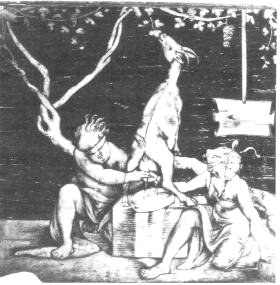
<br><font face="Trebuchet MS"><font size="-1">FIGURE XXXIII</font></font>
<br><i><font face="Trebuchet MS"><font size="-1">(Amalth&eacute;e, L. Lotto,
Embl&egrave;mes ; marqueterie de F. Capodiferro, c. 1523)</font></font></i></p></center>

<p><font face="Trebuchet MS"><font color="#000080">cornes de l'animal d&eacute;vou&eacute;.
Il offrit cette corne aux nymphes et tel semble &ecirc;tre l'une des origines
mythiques de la corne d'abondance. Cette corne d'Amalth&eacute;e est l'un
des compos&eacute;s du dissolvant ou feu secret (nous l'avons &eacute;voqu&eacute;e
dans l'<i><font size="-1"><a href="../original/philalethe.html#r%C3%A9incrud_1">Intro&iuml;tus,
I</a></font></i> et dans le r&eacute;bus de l'&eacute;glise de St-Gr&eacute;goire-en-Vi&egrave;vre
au chapitre du <a href="../original/st-gregoire-vievre.html#cor">cor</a>, &sect;j) ;</font></font>
<br><a  name="138"></a><font face="Trebuchet MS"><font color="#000080"><a href="#138_t">138</a>.
Ce fleuve a fait l'objet de multiples l&eacute;gendes ; il appara&icirc;t
dans les <a href="../original/fontenay.html">douze travaux d'Hercule</a> &agrave; qui
il dispute D&eacute;janire : vaincu par le h&eacute;ros dans un premier
combat, Ach&eacute;loos repara&icirc;t &agrave; la charge sous la forme
d'un serpent &eacute;norme, puis, sur le point d'&ecirc;tre &eacute;trangl&eacute;,
sous celle d'un taureau furieux ; il fut dompt&eacute; cependant par Hercule
qui lui cassa l'une de ses cornes, devenue l'embl&egrave;me de la corne
d'abondance (cf. supra note
<a href="#137">137</a>) ; selon les conseils
de l'oracle de <font size="-1"><a href="../original/symb-dir-prim.html#d">Dodone</a></font>,
on faisait toujours des sacrifices &agrave; ce fleuve v&eacute;n&eacute;r&eacute;
; ce changement de forme peut symboliser le passage &agrave; un &eacute;tat
semi-liquide ;</font></font>
<br><a  name="139"></a><font face="Trebuchet MS"><font color="#000080"><a href="#139_t">139</a>.
Ce changement de couleurs semble le fait d'un changement de temp&eacute;rature
qui fait affecter des couleurs dif&eacute;rentes par la &laquo; Pierre
&raquo; qui pourrait &ecirc;tre, ici, une vari&eacute;t&eacute; d'<a href="../original/chimie-alchemy.html" class="lien-repare" title="ancre absente de la page d'origine : lien ramené en haut de page">opale</a>
;</font></font>
<br><a  name="140"></a><font face="Trebuchet MS"><font color="#000080"><a href="#140_t">140</a>.
Est-ce une indication sur le Lion vert ou la couleur verte ? assur&eacute;ment,
il s'agit d'une indication sur le renouveau de la nature, plac&eacute;e
sous le r&egrave;gne de V&eacute;nus...</font><font color="#000099">Sur
</font><font color="#006600">Aphrodite</font><font color="#000099">
- &agrave; laquelle renvoie forc&eacute;ment V&eacute;nus - une allusion
directe nous est donn&eacute;e par E. Canseliet, dans la 2<sup>&egrave;me</sup>
pr&eacute;face aux
<i>DM, I</i>, p.24 :</font></font>
</p><p><font face="Trebuchet MS"><font color="#000099">"</font><i><font color="#cc0000"><font size="-1">Retourn&eacute;
sur sa croix, le signe de la Terre devient celui de V&eacute;nus, de cette
Aphrodite que les adeptes d&eacute;signent, plus pr&eacute;cis&eacute;ment
comme &eacute;tant leur sujet min&eacute;ral de r&eacute;alisation.</font></font></i><font color="#000099">"</font></font>
</p><p><font face="Trebuchet MS"><font color="#000099">Fulcanelli nous en dit
plus aux <i>DM, II</i>, p.197 :</font></font>
</p><p><i><font face="Trebuchet MS"><font color="#000099">"</font><font color="#cc0000"><font size="-1">Mais
pourquoi Aphrodite et Art&eacute;mis dominent-elles le cuivre et l'argent,
sujets de V&eacute;nus et de la Lune ?...<a href="../original/humide-radical.html">Devons-nous
accepter ces relations comme v&eacute;ritables</a>...</font></font><font color="#000099">"</font></font></i>
</p><p><font face="Trebuchet MS"><font color="#000099">Nous avons pass&eacute;
ici le 2<sup>&egrave;me</sup> oeuvre et sommes &agrave; la veille du d&eacute;but
de la Grande Coction. Reportez-vous ici &agrave; ce que nous &eacute;crivons
sur le nitre dans le commentaire de l'<i><font size="-1"><a href="../original/philalethe-6.html#salp%C3%AAtre_2">Intro&iuml;tus,
VI</a></font></i> ; nous serions pr&ecirc;t, en tout cas, &agrave; penser
que sous Art&eacute;mis est plac&eacute; un des jeux mots les plus subtils
qu'ait employ&eacute;s Fulcanelli : il n'est pas &eacute;tranger &agrave;
notre propos qu'Apollon et Art&eacute;mis soient jumeaux et qu'ils soient
enfants de L&eacute;to ; nous vous renvoyons au mythe de Z&eacute;thos
(cf. note <a href="#120">120</a>) ; en toute logique devons-nous donc voir
un rapport -par cabale phon&eacute;tique- entre </font><font color="#006600">Ar<i>t&eacute;mis</i></font><font color="#000099">
et </font><i><font color="#006600">Th&eacute;mis</font></i><font color="#000099">,
fille d'Ouranos et de Ga&iuml;a, c'est-&agrave;-dire la Terre v&eacute;ritable
ou </font><font color="#006600">calx</font><font color="#000099"> (chaux)...<a href="../original/limoj-triomph.html">Limojon
de Saint-Didie</a>r dit-il vrai quand il nous assure -ainsi Fulcanelli
le rapporte-il- que ce feu [</font><font color="#990000"><font size="-1">secret</font></font><font color="#000099">]
est de la </font><font color="#006600">nature de la chaux</font><font color="#000099">
?</font></font>
<br><a  name="141"></a><font face="Trebuchet MS"><font color="#000099"><a href="#141_t">141</a>.
Cette question de germe est des plus importantes ; nous l'avons abord&eacute;e
dans la section sur le <font size="-1"><a href="../original/imitat-prec.html#germe">Mercure</a></font>
; elle est cong&eacute;n&egrave;re de la question du ferment et de la fermentation
philosophique. Ce probl&egrave;me a &eacute;t&eacute; abord&eacute; dans
le commentaire du <b><i><font size="-1"><a href="../original/idee-alchimique-2.html#r%C3%A9sum%C3%A9%20de%20l%27histoire%20de%20la%20matiere">R&eacute;sum&eacute;
de l'histoire de la Mati&egrave;re</a></font></i></b> de <a href="../original/plan-chevreul.html">Chevreul</a>,
dans la section sur l'<a href="../original/plan-introduction.html">Id&eacute;e alchimique</a>
;</font></font>
<br><a  name="142"></a><font face="Trebuchet MS"><font color="#000099"><a href="#142_t">142</a>.
Nous avons trouv&eacute; les correspondances suivantes : le </font><font color="#006600">Corps</font><font color="#000099">
est le Sel des Sages (terre de nature alumineuse ou siliceuse) ; l'</font><font color="#006600">&Acirc;me</font><font color="#000099">
est le Soufre (une trace de m&eacute;tal trivalent : fer, chrome, magn&eacute;sium,
titane) ; l'</font><font color="#006600">Esprit</font><font color="#000099">
est le Mercure, c'est-&agrave;-dire le Lion vert qui se transforme progressivement
en Lion rouge d&egrave;s le moment o&ugrave; l'accr&eacute;tion (union
radicale de l'&Acirc;me au Corps) d&eacute;bute (que l'on comprenne : le
d&eacute;but de la cristallisation) ;</font></font>
<br><a  name="143"></a><font face="Trebuchet MS"><font color="#000099"><a href="#143_t">143</a>.
La traduction de ce passage n'est pas ais&eacute;e en termes clairs ; l'&eacute;sot&eacute;risme
l'emporte ici sur l'exot&eacute;risme : la terre noire qu'il faut blanchir
peut correspondre &agrave; la potasse ; l'&Acirc;me, autre moiti&eacute;
divis&eacute;e du Corps, correspond au principe Soufre et &agrave; la trace
m&eacute;tallique qui assure la teinture radicale ; l'Esprit qui p&eacute;n&egrave;tre
[</font><font color="#660000"><font size="-1">dissout</font></font><font color="#000099">]
les m&eacute;taux est le Mercure ;</font></font>
<br><a  name="144"></a><font face="Trebuchet MS"><font color="#000099"><a href="#144_t">144</a>.
C'est le d&eacute;but du 3<sup>&egrave;me</sup> oeuvre ou Grande Coction
; les corps r&eacute;emergent du compost et vont se r&eacute;unir sous
la forme d'une cristallisation progressive ; certains Artistes ont voil&eacute;
ce processus par la fable de Latone qui accouche d'Apollon et de Diane
sur <a href="../original/gardes-corps.html" class="lien-repare" title="ancre absente de la page d'origine : lien ramené en haut de page">D&eacute;los</a> ;</font></font>
<br><a  name="145"></a><font face="Trebuchet MS"><font color="#000099"><a href="#145_t">145</a>.
Cette phrase, pour nous rappeler que les ph&eacute;nom&egrave;nes divers,
que nous envisageons, peuvent fort bien aussi &ecirc;tre virtuels et que
la blancheur peut signifier le d&eacute;but de la r&eacute;apparition des
corps apr&egrave;s leur dissolution radicale dans le Mercure (i.e. le <font size="-1"><a href="../original/chimie-alchemy.html" class="lien-repare" title="ancre absente de la page d'origine : lien ramené en haut de page">fondant</a></font>)
;</font></font>
<br><a  name="146"></a><font face="Trebuchet MS"><font color="#000099"><a href="#146_t">146</a>.
Ces cheveus &eacute;pars, nous en avons parl&eacute; ailleurs (cf. le <a href="../original/st-gregoire-vievre.html#crini%C3%A8re">r&eacute;bus</a>)
; l'&Acirc;me cherchant son Corps, c'est le m&eacute;tal [</font><font color="#660000"><font size="-1">Soufre</font></font><font color="#000099">]
&agrave; la recherche de l'&eacute;crin [</font><font color="#660000"><font size="-1">Sel</font></font><font color="#000099">]
qui en fera un pur <a href="../original/chimie-alchemy.html" class="lien-repare" title="ancre absente de la page d'origine : lien ramené en haut de page">rubis</a>,
un saphir, une topaze, etc. On trouve des allusions semblables dans le
<b><i><font size="-1">Lapidaire
orphique</font></i></b> ;</font></font>
<br><a  name="147"></a><font face="Trebuchet MS"><font color="#000099"><a href="#147_t">147</a>.
Nous sommes ici vers la fin de la Grande Coction ; ce roi couronn&eacute;
est le regulus qui a grandi et s'est peu &agrave; peu multipli&eacute;
dans le compost ;</font></font>
<br><a  name="148"></a><font face="Trebuchet MS"><font color="#000099"><a href="#148_t">148</a>.
L'ange, en alchimie, intervient par tradition, au d&eacute;but de l'oeuvre
dans la sc&egrave;ne de l'Annonciation ; c'est &agrave; peu pr&egrave;s
ce que dit Philal&egrave;the au chapitre &laquo; <i>De l'Acier des Sages</i>
&raquo; (<i><font size="-1"><a href="../original/philalethe-3.html#5_t">Intro&iuml;tus,
III</a></font></i>) ; l'ange, c'est aussi l'un des symboles de l'&acirc;me.
Nous en parlons dans deux sections : r&eacute;incrudation et <i><font size="-1"><a href="../original/idee-alchimique-5.html">Atlas
des Connaissances humaines</a></font></i>, Chevreul ;</font></font>
<br><a  name="149"></a><font face="Trebuchet MS"><font color="#000099"><a href="#149_t">149</a>.
Le luth est un instrument &agrave; cordes pinc&eacute;es qui rappelle la
lyre d'Orph&eacute;e ; en latin, il se dit </font><font color="#006600">fides</font><font color="#000099">
(il est assimil&eacute; &agrave; la lyre) et peut &ecirc;tre rapproch&eacute;
de son homonyme </font><font color="#006600">fides</font><font color="#000099">
(foi, confiance) ; en outre, phon&eacute;tiquement, luth et lut (</font><font color="#006600">lutum</font><font color="#000099">
= limon) sont proches ce qui explique que cet instrument soit souvent employ&eacute;
dans l'iconographie alchimique :</font></font>
<br>&nbsp;
<br>&nbsp;
<br>
<br>
</p><center>
<p>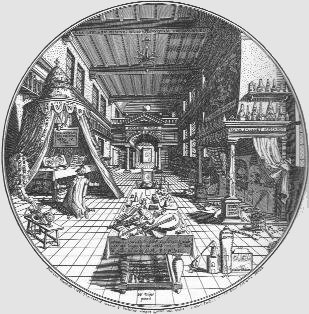
<br><font face="Trebuchet MS"><font color="#000099"><font size="-1">FIGURE
XXXIV</font></font></font>
<br><i><font face="Trebuchet MS"><font color="#000099"><font size="-1">(Oratoire
et Laboratoire, gravure de Hans Vredemann de Vries,</font></font></font></i>
<br><i><font face="Trebuchet MS"><font color="#000099"><font size="-1">correspondant
&agrave; l'Amphitheatrum Sapientiae aeternae, H. Khunrath, Hanovre, 1609)</font></font></font></i></p></center>

<p><font face="Trebuchet MS"><font color="#000099">Ainsi sur cette gravure
voyons-nous sur la table centrale un assortiment de luths, de balances,
d'encrier (atramentum) et de plumes ;</font></font>
<br><a  name="150"></a><font face="Trebuchet MS"><font color="#000099"><a href="#150_t">150</a>.
Musette = utriculus, c'est-&agrave;-dire petit ventre ou petit calice ;</font></font>
<br><a  name="151"></a><font face="Trebuchet MS"><font color="#000099"><a href="#151_t">151</a>.
C'est la phase &laquo; s&egrave;che &raquo; de la Grande Coction : c'est</font><font color="#000080">
le travail du <font size="-1"><a href="../original/symb-dir-prim.html" class="lien-repare" title="ancre absente de la page d'origine : lien ramené en haut de page">Rebis</a></font>
o&ugrave; tout se passe de mani&egrave;re all&eacute;gorique : la voie
humide est la 1&egrave;re phase qui se manifeste par la disparition provisoire
des &eacute;l&eacute;ments en cours de&nbsp;<a  name="r&eacute;incrudation_5"></a></font><font color="#006600"><font size="-1"><a href="../original/reincrud.html">r&eacute;incrudation</a></font></font><font color="#000080">
: c'est, je pense, la </font><font color="#006600">v&eacute;ritable putr&eacute;faction</font><font color="#000080">.
Vient enfin la voie s&egrave;che o&ugrave; les corps, en un ph&eacute;nom&egrave;ne
de </font><font color="#006600">coagulation et d'accroissement</font><font color="#000080">,
r&eacute;apparaissent li&eacute;s ;</font></font>
<br><a  name="152"></a><font face="Trebuchet MS"><font color="#000080"><a href="#152_t">152</a>.
Il s'agit des principes Soufre et Mercure ; on remarquera qu'ils sont dessin&eacute;s
&laquo; apais&eacute;s &raquo; et non comme souvent sous la forme d'animaux
luttant &agrave; outrance (lion et aigle, coq et renard, r&eacute;mora
et salamandre, etc.) ; cela signale que nous sommes &agrave; un stade tardif
dans la Coction herm&eacute;tique ;</font></font>
<br><a  name="153"></a><font face="Trebuchet MS"><font color="#000080"><a href="#153_t">153</a>.
Voila qui ne laisse pas de nous rendre perplexe, car cette substance orang&eacute;-rouge
ne peut &ecirc;tre que le principe </font><font color="#006600">Soufre</font><font color="#000080">
dont, ainsi qu'il est &eacute;crit, seule une petite quantit&eacute; est
n&eacute;cessaire pour assurer la teinture radicale ; la teinte orang&eacute;-rouge
symbolise aussi l'Aurore. Voyez la <b><i><font size="-1">Toyson d'or</font></i></b>
sur le sujet ;</font></font>
<br><a  name="154"></a><font face="Trebuchet MS"><font color="#000080"><a href="#154_t">154</a>.
Allusion au D&eacute;luge (cf. note <a href="../original/symb-dir-prim.html#n">38</a>
de la section Alchimie (I)) ;</font></font>
<br><a  name="155"></a><font face="Trebuchet MS"><font color="#000080"><a href="#155_t">155</a>.
Le signe des Balances est une indication sur l'un des composants du feu
secret probablement symbolis&eacute;, on l'a vu, par la d&eacute;esse </font><font color="#006600">Th&eacute;mis</font><font color="#000080">
dont on trouve deux repr&eacute;sentations au moins dans la <font size="-1"><a href="../original/emblemes.html#Clef%20VII">Clef
VII</a></font> de Basile Valentin et le lut de Sapience de Michael Faust.
Cette cerni&egrave;re gravure figure (p. 236) dans l'<i>Alchimie expliqu&eacute;e
sur ses Textes classiques</i> d'E. Canseliet ; elle est ainsi l&eacute;gend&eacute;e
:</font></font>
<br>&nbsp;
<br>&nbsp;
<br>
<br>
</p><center>
<p>
<br><font face="Trebuchet MS"><font size="-1">FIGURE XXXV</font></font>
<br><i><font face="Trebuchet MS"><font color="#000099"><font size="-1">&nbsp;(&laquo;
le Lut de Sapience &raquo;, frontispice du Philaletha Illustrasta de Michael
Faust)</font></font></font></i></p></center>

<p><i><font face="Trebuchet MS"><font color="#000080">"</font><font color="#cc0000"><font size="-1">L'&eacute;p&eacute;e
de Mars est celle par laquelle l'alchimiste apposera le sceau d'Herm&egrave;s
-sigillum Hermetis- sur son Grand Oeuvre. Cela aussi par le poids -pondere-
dont la balance donne ici la m&ecirc;me indication que le Livre muet du
philosophe rochelois [</font></font></font></i><font face="Trebuchet MS"><font color="#cc0000"><font size="-1"><a href="../original/mutus-liber.html">Mutus
Liber</a><i>].</i></font></font><i><font color="#000080">"</font></i></font>
</p><p><font face="Trebuchet MS"><font color="#000080">On trouve souvent dans
les all&eacute;gories -nous l'avons d&eacute;j&agrave; dit- des chars train&eacute;s
par des chevaux. Le
</font><font color="#008000">char</font><font color="#000080">,
en latin, se dit </font><font color="#008000">jugum</font><font color="#000080">,
qui est aussi la constellation de la </font><font color="#006600">Balance</font><font color="#000080">,
et le </font><font color="#006600">sommet d'une montagne</font><font color="#000080">
(avec id&eacute;e de hauteur, de cime et id&eacute;e aussi d&#8217;une couleur
bleu fonc&eacute;). C'est aussi une allusion au sujet qui nous para&icirc;t
voil&eacute; sous la figure de Jupiter : </font><font color="#006600">Th&eacute;mis</font><font color="#000099">
(cf. notes <a href="#122">122</a> et <a href="#130">130</a>) ;</font></font>
<br><a  name="156"></a><font face="Trebuchet MS"><font color="#000099"><a href="#156_t">156</a>.
Le pavot est l'attribut de <a href="../original/st-gregoire-vievre.html#D%C3%A9m%C3%A9ter">D&eacute;m&eacute;ter</a>.
</font><font color="#000080">On
notera &agrave; propos de Cyb&egrave;le que son mythe est ins&eacute;parable
de celui d&#8217;</font><font color="#006600">Isis</font><font color="#000080">
et de </font><font color="#006600">C&eacute;r&egrave;s</font><font color="#000080">.
Isis (= </font><font color="#006600">D&eacute;meter</font><font color="#000080">)
renvoie &agrave; la Terre et, au vrai, &agrave; la mati&egrave;re premi&egrave;re,
C&eacute;r&egrave;s repr&eacute;sente la s&egrave;ve sortie de la terre,
c&#8217;est-&agrave;-dire la premi&egrave;re mati&egrave;re (= crescere = cro&icirc;tre,
grandir). Isis, C&eacute;r&egrave;s et Cyb&egrave;le constituent le triptyque
de d&eacute;but de l&#8217;&#339;uvre et comme le signale Fulcanelli (<i>Les Myst&egrave;res</i>,
p.81) :</font></font>
</p><blockquote><font face="Trebuchet MS"><font color="#000080">"</font><i><font color="#cc0000"><font size="-1">trois
t&ecirc;tes sous le m&ecirc;me voile.</font></font></i><font color="#000080">"</font></font></blockquote>
<a  name="157"></a><font face="Trebuchet MS"><font color="#000080"><a href="#157_t">157</a>.
Cf. note <a href="#72">72</a> ; Saint Pierre est cit&eacute; par Fulcanelli
(Les Myst&egrave;res, p. 165) quand il &eacute;voque la naissance de la
premi&egrave;re pierre :</font></font>
<p><i><font face="Trebuchet MS"><font color="#000080">"</font><font color="#cc0000"><font size="-1">Car
c'est lui, le premier Ap&ocirc;tre, qui d&eacute;tient les deux clefs entrecrois&eacute;es
de la solution et de la coagulation ; c'est lui qui est le symbole de la
pierre volatile que le feu rend fixe et dense en la pr&eacute;cipitant.
Saint-Pierre, nul ne l'ignore, fut <a href="../original/symb-dir-prim.html" class="lien-repare" title="ancre absente de la page d'origine : lien ramené en haut de page">crucifi&eacute;</a>
la t&ecirc;te en bas...</font></font><font color="#000080">"</font></font></i>
</p><p><a  name="158"></a><font face="Trebuchet MS"><font color="#000080"><a href="#158_t">158</a>.
Ce passage est enti&egrave;rement &eacute;sot&eacute;rique ; dans le <b><i><font size="-1">Mutus
Liber</font></i></b>, l'une des derni&egrave;res planches reprend la m&ecirc;me
id&eacute;e.</font></font>
<br><a  name="159"></a><font face="Trebuchet MS"><font color="#000080"><a href="#159_t">159</a>.
C'est une allusion &agrave; l'abaissement tr&egrave;s progressif de la
temp&eacute;rature qui est n&eacute;cessaire. </font><font color="#000099">L'importance
toute sp&eacute;ciale du r&eacute;gime de temp&eacute;rature -&agrave;
ce stade- se rapproche beaucoup de la </font><font color="#006600">coction
lin&eacute;aire</font><font color="#000099"> sur laquelle insiste Fulcanelli.
Pour lui, par exemple, elle expliquerait la </font><font color="#006600">barre
horizontale</font><font color="#000099"> du <font size="+2">4</font> dans
l'&eacute;cusson de la <font size="-1"><a href="#chemin%C3%A9e">chemin&eacute;e</a></font>
alchimique du ch&acirc;teau de Fontenay-Le-Comte, la petite barre verticale
&agrave; droite &eacute;tant la signature du creuset. En principe, on devrait
par analogie rapprocher ce r&eacute;gime de celui de </font><font color="#006600">Saturne</font><font color="#000099">,
&eacute;voqu&eacute; par Philal&egrave;the ;</font></font>
<br><a  name="160"></a><font face="Trebuchet MS"><font color="#000099"><a href="#160_t">160</a>.
Dans les <i>DM, II</i>, p.73, l'examen du caisson 7 de la deuxi&egrave;me
s&eacute;rie du</font></font>
<br>&nbsp;
<br>&nbsp;
<br>
<br>
</p><center>
<p>
<br><font face="Trebuchet MS"><font color="#000099"><font size="-1">FIGURE
XXXVI</font></font></font></p></center>

<p><font face="Trebuchet MS"><font color="#000099">ch&acirc;teau de Dampierre-sur-Boutonne
met en garde les inconstants contre des d&eacute;bordements du feu. On
lit sur le phylact&egrave;re : <b><font size="-1">.SIC.PERIT.INCO(N)STANS.</font></b>
Fulcanelli veut ici signifier que l'abaissement de la temp&eacute;rature
est un accident pr&eacute;judiciable &agrave; la marche de l'op&eacute;ration
mais qu'un exc&egrave;s de feu g&acirc;che tout ; les Adeptes appellent
cela &laquo; </font><font color="#006600">br&ucirc;ler les fleurs &raquo;
;</font></font>
<br><a  name="161"></a><font face="Trebuchet MS"><font color="#000099"><a href="#161_t">161</a>.
Cf. note<a href="#88"> 88</a> ;</font></font>
<br><a  name="162"></a><font face="Trebuchet MS"><font color="#000099"><a href="#162_t">162</a>.
Cette grenade - <font size="+1">roia</font> - renvoie &agrave; Aphrodite
qui est le symbole du sujet des Sages compris en tant que 1<sup>er</sup>
Mercure, c'est-&agrave;-dire en tant que <font size="-1"><a href="../original/philalethe-5.html">Chaos</a></font>
original. Ses pouvoirs sont immenses : entre autres, elle fertilise les
champs et prot&egrave;ge les mariages. Mais son pouvoir peut aussi <u>s'inverser</u>
et elle devient alors une d&eacute;esse fatale dont la ceinture magique
donne &agrave; celui qui la ceint un &eacute;trange pouvoir de d&eacute;sir
perp&eacute;tuel ; parmi les oiseaux qui trainent son char, on trouve le&nbsp;<a  name="cygne"></a>cygne
ou la </font><font color="#006600">colombe</font><font color="#000099">,
embl&egrave;me de la fid&eacute;lit&eacute; conjugale ;</font></font>
<br><a  name="163"></a><font face="Trebuchet MS"><font color="#000099"><a href="#163_t">163</a>.
Il est possible que cette couleur purpurine renvoie &agrave; celle de la
pierre philosophale : certaines vari&eacute;t&eacute;s de rubis ont cette
couleur de m&ecirc;me que l'am&eacute;thyste orientale ; l'opale aussi
: en Orient, l'opale passe pour &ecirc;tre une &laquo; </font><font color="#006600">ancre
d'esp&eacute;rance &raquo;</font><font color="#000099">, qui porte en elle
les vertus de toutes les pierres pr&eacute;cieuses. Pline l'Ancien, dans
son
<i>Histoire Naturelle</i> &eacute;crit :</font></font>
</p><p><i><font face="Trebuchet MS"><font color="#000099">"</font><font color="#cc0000"><font size="-1">
En elle, luit la douce flamme de l'escarboucle, la pourpre brillante de
l'am&eacute;thyste, le splendide vert marin de l'&eacute;meraude, le jaune
d'or de la topaze, le bleu profond du saphir et ainsi, toutes les couleurs
y chatoient en une incomparable mosa&iuml;que.</font></font><font color="#000099">"</font></font></i>
</p><p><a  name="164"></a><font face="Trebuchet MS"><font color="#000099"><a href="#164_t">164</a>.
allusion au ph&eacute;nom&egrave;ne d'ast&eacute;risme lorsque la pierre
est taill&eacute;e en cabochon ; le
</font><font color="#006600">rubis</font><font color="#000099">
&eacute;tait consid&eacute;r&eacute; dans l'Antiquit&eacute; comme le symbole
du bonheur et il est devenu la pierre des amoureux qui &eacute;nivre sans
contact. Il para&icirc;t que c'est aussi l'oeil unique et rougeoyant que
portent au milieu du front dragons et vouivres ; on l'appelle alors l'escarboucle.
Le </font><font color="#006600">saphir</font><font color="#000099"> est
la pierre c&eacute;leste par excellence : il reproduit toute la symbolique
de l'azur ; en particulier la m&eacute;ditation sur cette pierre am&egrave;ne
l'&acirc;me &agrave; la contemplation des cieux (MARA ; voyez l'allusion
&agrave; Maranatha ;cf note <a href="#20">20</a> ). Le saphir est la pierre
de l'esp&eacute;rance ; la l&eacute;gende veut qu'il pr&eacute;serve de
la pauvret&eacute;, prot&egrave;ge de la col&egrave;re des grands et dissipe
les humeurs. L'</font><font color="#006600">am&eacute;thyste</font><font color="#000099">
est une pierre de temp&eacute;rance qui garde de toute ivresse. Ce serait
la raison pour laquelle les Ev&egrave;ques la portent. On dit aussi qu'elle
est le symbole de l'humilit&eacute; parce qu'elle est de la couleur de
la violette. Envisag&eacute;es sous l'angle de la symbolique chr&eacute;tienne,
voici les correspondances entre les gemmes orientales et les Ap&ocirc;tres
: &agrave; Saint-</font><font color="#006600">Pierre</font><font color="#000099">,
le rubis (et le grenat) ; &agrave; Saint-</font><font color="#006600">Paul</font><font color="#000099">,
le saphir ; &agrave; Saint-</font><font color="#006600">Matthieu</font><font color="#000099">,
la topaze ; &agrave; Saint-</font><font color="#006600">Thomas</font><font color="#000099">,
l'agate et &agrave; Saint-</font><font color="#006600">Jean</font><font color="#000099">,
l'&eacute;meraude. Envisag&eacute;es sous la symbolique astrologique, voici
les correspondances : au </font><font color="#006600">Soleil</font><font color="#000099">,
le rubis, la topaze ; &agrave; la </font><font color="#006600">Lune</font><font color="#000099">,
l'opale, l'aigue-marine ; &agrave; </font><font color="#006600">Mars</font><font color="#000099">,
l'am&eacute;thyste, l'h&eacute;matite (ou sanguine) ; &agrave; </font><font color="#006600">Mercure</font><font color="#000099">,
la marcassite, l'oeil-de-chat (vari&eacute;t&eacute; de quartz color&eacute;)
; &agrave; </font><font color="#006600">Jupiter</font><font color="#000099">,
le saphir fonc&eacute; ; &agrave; </font><font color="#006600">V&eacute;nus</font><font color="#000099">,
le saphir clair, le jais, l'agate ; &agrave; </font><font color="#006600">Saturne</font><font color="#000099">,
le lapis-lazuli, l'onyx. Le tableau suivant montre plusieurs &laquo; pierres
philosophales &raquo;.</font></font></p></blockquote>

<blockquote>&nbsp;
<center><table border="0" cellspacing="0" cellpadding="0" cols="3" width="63%">
<tbody><tr>
<td align="center" valign="CENTER">
<center></center>
</td>

<td>
<center></center>
</td>

<td>
<center>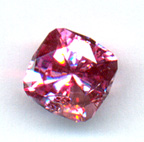</center>
</td>
</tr>

<tr>
<td>
<center>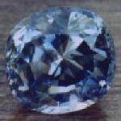</center>
</td>

<td>
<center></center>
</td>

<td valign="CENTER">&nbsp;
<center>
<br>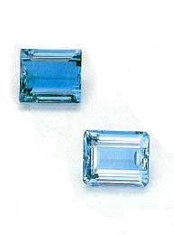</center>

<br>&nbsp;</td>
</tr>
</tbody></table></center>
</blockquote>

<center><font face="Trebuchet MS"><font size="-1">FIGURES XXXVII</font></font>
<br><i><font face="Trebuchet MS"><font color="#000099"><font size="-1">Quelques
vari&eacute;t&eacute;s de pierres philosophales (rubis, saphir, topaze,
am&eacute;thyste, p&eacute;ridot, aigue-marine)</font></font></font></i></center>

<blockquote>&nbsp;
<br><font face="Trebuchet MS"><font color="#000099">Certes, les alchimistes
anciens n'ont pas pu r&eacute;aliser toutes ces pierres et nous avons vu
que l'alchimie a progress&eacute; dans le temps (cf. le <font size="-1"><a href="../original/imitat-prec.html">Mercure</a></font>)
; en &eacute;tant pessimiste, on peut penser que les alchimistes ont pu
r&eacute;aliser des spinelles ou du p&eacute;ridot ; les alchimistes modernes
ont pu r&eacute;aliser la synth&egrave;se du rubis -nous le croyons assur&eacute;
pour Fulcanelli- et E. Canseliet a sans doute r&eacute;alis&eacute; la
synth&egrave;se de l'h&eacute;matite (sanguine)...</font></font>
<center>
<hr width="100%">
<br><font face="Trebuchet MS"><font color="#660000">Bibliographie succincte
&agrave;<a href="../original/biblio-alchimie.html"> en savoir plus</a></font></font>
<br><font face="Trebuchet MS"><font color="#000099">(<font size="-1">en dehors
des ouvrages cit&eacute;s dans le texte</font>)</font></font></center>

<p><font face="Trebuchet MS"><font color="#000099">1. L'Alchimie, Lucien
G&eacute;rardin, Paris, Deno&euml;l, 1972</font></font>
<br><font face="Trebuchet MS"><font color="#000099">2. Le Mus&eacute;e
des sorciers, mages et alchimistes, Grillot de Givry, r&eacute;&eacute;d.
Paris, Veyrier et Tchou, 1980</font></font>
<br><font face="Trebuchet MS"><font color="#000099">3. L'alchimie : science
et mystique, Patrick Rivi&egrave;re, Paris, De Vecchi, 1990</font></font>
<br><font face="Trebuchet MS"><font color="#000099">4. Les <a href="../original/origine-alchimie.html">origines
de l'alchimie</a>, Marcelin Berthelot, Paris, 1885</font></font>
<br><font face="Trebuchet MS"><font color="#000099">5. Introduction &agrave;
l'&eacute;tude de la chimie des Anciens et du Moyen &Acirc;ge, Marcelin
Berthelot, Paris, 1889</font></font>
<br><font face="Trebuchet MS"><font color="#000099">6. Les Alchimistes,
R. Caron, S. Hutin, Paris, 1964</font></font>
<br><font face="Trebuchet MS"><font color="#000099">7. Le sablier d'or,
recherche sur l'oeuvre alchimique, J.A. de Broglie, Paris, 1971</font></font>
<br><font face="Trebuchet MS"><font color="#000099">8. Alchemy, E.J. Holmyard,
Edimbourg, 1957</font></font>
<br><font face="Trebuchet MS"><font color="#000099">9. Th&eacute;ories
et symboles des alchimistes ; le Grand Oeuvre, A. Poisson, Paris, 1891</font></font>
<br><font face="Trebuchet MS"><font color="#000099">10. Alchimiques m&eacute;tamorphoses
du mercure universel. De la vierge min&eacute;rale aux fresques herm&eacute;tiques
de Cimiez, S. Batfroi, Paris, 1977</font></font>
<br><font face="Trebuchet MS"><font color="#000099">11. Dictionnaire mytho-herm&eacute;tique...,
A.J. Pern&eacute;ty, Paris, 1758</font></font>
<br>&nbsp;
<br>&nbsp;
<br>
</p><center>
<p><a href="#" title="lien mort dans l'archive"></a><a href="../original/emblemes.html"></a></p></center>
</blockquote>

</body></html><!-- DEBUT / Cybermonitor / START -->


<noscript>

</noscript>
<!-- FIN / Cybermonitor / END -->


